Unit |
Title |
Page Number |
Month |
Unit 1 |
Page Number 4 |
June |
|
Unit 2 |
Page Number 19 |
July |
|
Unit 3 |
Page Number 32 |
August |
|
Unit 4 |
Page Number 49 |
September |
|
Unit 5 |
Page Number 63 |
October |
|
Unit 6 |
Page Number 83 |
November |
|
Unit 7 |
Page Number 98 |
January |
|
Unit 8 |
Page Number 112 |
February |
|
Unit 9 |
Page Number 125 |
June |
|
Unit 10 |
Page Number 142 |
July |
|
Unit 11 |
Page Number 155 |
August |
|
Unit 12 |
Page Number 169 |
October |
|
Unit 13 |
Page Number 189 |
November |
|
Unit 14 |
Page Number 210 |
December |
|
Unit 15 |
Page Number 225 |
January |
|
Unit 16 |
Page Number 244 |
June |
|
Unit 17 |
Page Number 263 |
July |
|
Unit 18 |
Page Number 282 |
August |
|
Unit 19 |
Page Number 299 |
October |
|
Unit 20 |
Page Number 320 |
November |
|
Unit 21 |
Page Number 336 |
January |
|
Unit 22 |
Page Number 356 |
February |
|
Unit 23 |
Page Number 378 |
February |
|
|
Page Number 387 |
|
E-book
Assessment
After the completion of this lesson, students will be able to:
Physics is the study of nature and natural phenomena. Physics is considered as the base of all science subjects. It is based on experimental observations. The principles and observations allow us to develop a deeper understanding of nature. Scientific theories are valid, only if they are confirmed through various experiments. Theories in physics use many physical quantities that have to be measured.
Measurement is the base of all scientific studies and experimentations. It plays a vital role in our daily life. It is the process of finding an unknown physical quantity by using a standard quantity. In this lesson, we will study about measurement in detail. We will also study about accuracy and precision, approximation and rounding off.
We need three things for a perfect measurement. They are: an instrument, a standard quantity and an acceptable unit. Let us say that the length of the book be 30 cm. Here, the length is the physical quantity, ruler is the instrument, 30 is the magnitude and ‘cm’ is the unit. This process is called measurement. In the above activity the values of all the students will not be same. Similarly, people in various parts of the world are using different systems of units for measurement. Some common systems of units are as follows.
1. F P S System (Foot for length, Pound for mass and Second for time)
2. C G S System (Centimetre for length, Gram for mass and Second for time)
3. M K S System (Meter for length, Kilogram for mass and Second for time)
Activity 1
Measure the length and breadth of your science book using a ruler (scale) and compare your value with those of your friends.
Do you know?
The ‘C G S’, ‘M K S’ and S I units are metric systems of units and ‘F P S’ is not a metric system. It is a British system of units.
In earlier days, scientists performed their experiments and recorded their results in their own system. Due to lack of communication, they couldn’t organise experimental results of others. So, they planned to follow a uniform system for taking the measurements.
As you studied in the lower classes, in 1960, in the 11th General Conference on Weights and Measures at Paris in France, scientists recognised the need of using standard units for physical quantities. That was called as ‘International System of Units’ and is popularly known as S I System (abbreviated from the French name ‘System International’). Scientists, chose seven physical quantities as ‘Base Quantities’ and defined a ‘Standard Unit’ to measure each one. They are known as Base Units or Fundamental Units (Table 1 point 1)
Table: 1 point 1 Base Quantities and Units
Quantity |
Unit |
Symbol |
Length |
metre |
m |
Mass |
kilogram |
kg |
Time |
second |
s |
Temperature |
kelvin |
K |
Electric Current |
ampere |
A |
Amount of Substance |
mole |
mole |
Luminous Intensity |
candela |
cd |
You have already studied about length, mass and time in your lower classes. Now you are going to study about the other base quantities such as temperature, current, amount of substance and luminous intensity.
Do you know?
In December, 1998, the National Aeronautics and Space Administration (NASA), USA, launched the Mars Climate Orbiter to collect data about the Martian climate. Nine months later, on September 23, 1999, the Orbiter disappeared while approaching Mars at an unexpectedly low altitude. An investigation revealed that the orbital calculations were incorrect due to an error in the transfer of information between the spacecraft’s team in Colorado and the mission navigation team in California. One team was using the English F P S system of units for calculation, while the other team was using the M K S system of units. This misunderstanding caused a loss of 125 million dollars approximately.
Identify, which of the following objects are hot and which of them are cold?

We see a number of objects in our daily life. Some of them are cold and some of them are hot.
Sometimes we may say that two objects are equally hot or cold. But there will be some difference in their hotness or coldness. How do you decide, which is hotter and which is colder? You need a reliable quantity to decide the degree of hotness or coldness of an object. That quantity is ‘temperature’.
Temperature is a physical quantity that expresses the degree of hotness or coldness of a substance. Heat energy given to a substance will increase its temperature. Heat energy removed from a substance will lower its temperature.
Temperature is defined as a measure of the average kinetic energy of the particles in a system. The S I unit of temperature is kelvin. Thermometers are used to measure the temperature directly. Usually, thermometers are calibrated with some standard scales. Celsius, Fahrenheit, Kelvin are the most commonly used scales to measure temperature.
Activity 2
From the newspaper or television, collect the highest and lowest temperature experienced in your nearest town or city for a week and record the values in a tabular column. Does this data remain same throughout the year?
Flow of electric charges, in a particular direction is known as ‘electric current’. The magnitude of electric current is the amount of electric charges flowing through a conductor in one second.
Electric current equal to Amount of electric charge by time
I equal to capital q by t
Electric charge is measured in coulomb. The S I unit of electric current is ampere and it is denoted as A.
If one coulomb of charge is flowing through a conductor in one second, then, the amount of current flowing is said to be one ampere. Ammeter is the device used to measure ‘electric current’ (Figure 1 point 2).

Activity 3
Connect a battery, an ammeter and a lamp in series as shown in the figure. Note the ammeter reading. It is the amount of current flowing in the circuit.

Problem 1
If 2 coulomb of charge flows through a circuit for 10 seconds, calculate the current.
Solution
Charge (Q) equal to 2 C; Time (t) equal to 10 s
I equal to Q by t equal to 2 by 10 equal to 0.2 A
Amount of substance is a measure of the number of entities (particles) present in a substance. The entity may be an atom, molecule, ion, electron or proton etc. Generally, the amount of substance is directly proportional to the number of atoms or molecules.

Can you count the number of copper coins in the picture? We can count them easily. But, can you count the number of copper atoms in a coin? It is very difficult to count the number of atoms because they are not visible. The number of atoms or molecules in a substance is measured in mole. It is a S I unit.

Mole is defined as the amount of substance, which contains 6.023 into 10 power 23 entities. It is denoted as ‘mol’.
More to Know
The number 6.023 into 10 power 23 is also known as Avogadro Number.

Have you seen these scenes on the television? What is the umpire doing? He is checking the intensity of light by using an instrument. The measure of the power of the emitted light, by a light source in a particular direction, per unit solid angle is called as luminous intensity. The S I unit of luminous intensity is candela and is denoted as ‘c d’.
The light emitted from a common wax candle is approximately equal to one candela. Luminous intensity is measured by ‘photometer’ (Luminous Intensity Meter) which gives the luminous intensity in terms of candela directly.

Apart from the seven fundamental units, we have two more units known as derived units, we will study about them now.
Info bits
Luminous flux or Luminous power is the measure of the perceived power of light. Its S I unit is ‘lumen’.
One lumen is defined as the luminous flux of the light produced by the light source that emits one candela of luminous intensity over a solid angle of one steradian.
Plane angle is the angle made at the intersection of two straight lines or intersection of two planes. The S I unit of plane angle is ‘radian’ and is denoted as ‘rad’.

Radian is the angle subtended at the centre of a circle by an arc whose length is equal to the radius of the circle (Fig 1 point 7).

pai radian equal to 180 degree
1 radian equal to 180 degree by Pai
Problem 2
Convert 60 degree into radian.
Solution
We know that,
1 degree equal to Pai divided by 180
60 degree equal to Pai by 180 into 60 equal to Pai by 3 radian
Problem 3
Convert Pai by 4 into degrees.
Solution
We know that,
pai radian equal to 180 degree
Pai by 4 radian equal to 180 by 4 equal to 45 degree
Solid angle is the angle formed by three or more planes intersecting at a common point. It can also be defined as ‘angle formed at the vertex of the cone’. The S I unit of solid angle is ‘steradian’ and is denoted as ‘s r’.

Steradian is the solid angle at the centre of a sphere subtended by a portion whose surface area is equal to the square of the radius of the sphere.

Do you Know?
Until 1995, plane angle and solid angle were classified under supplementary quantities. In 1995, they were shifted to derived quantities.
Table 1 point 2 shows Difference between plane angle and solid angle in two columns
Plane Angle |
Solid Angle |
It is the angle made at the point of intersection of two lines or planes. |
It is the angle by the intersection of three or more planes at a common point. |
It is two dimensional |
It is three dimensional. |
Its unit is radian. |
Its unit is steradian |
Clocks are used to measure time intervals. So many clocks are being used from the ancient time. Scientists have modified the mechanism of the clocks every time to obtain accuracy.
There are two types of clocks based on display. They are:
1. Analog clocks
2. Digital clocks
1. Analog clocks
Analog clocks look like a classic clock. It has three hands to show the time.
Hours hand
It is short and thick. It shows ‘hour’.
Minutes hand
It is long and thin. It shows ‘minute’.
Seconds hand
It is long and very thin. It shows ‘second’. It makes one rotation in one minute and 60 rotations in one hour.
Analog clocks can be driven either mechanically or electronically.

Activity 4
Make a model of an analog clock using card board.
2. Digital clocks
A digital clock displays the time directly. It shows the time in numerals or other symbols. It may have 12 hours or 24 hours display. Recent clocks are showing date, day, month, year, temperature etc. Digital clocks are often called as electronic clocks.

Activity 5
Make a model of a digital clock using match sticks on a card board, with date and time.
There are different types of clocks based on working mechanism. They are:
1. Quartz clock
2. Atomic clock
1. Quartz clock
These clocks are activated by ‘electronic oscillations’, which are controlled by a ‘quartz crystal’. The frequency of a vibrating crystal is very precise. So, quartz clock is more accurate than mechanical clock. These clocks have an accuracy of one second in every 10 power 9 seconds.

2. Atomic clock

These clocks make use of periodic vibrations occurring within the atom. These clocks have an accuracy of one second in every 10 power 13 seconds. Atomic clocks are used in Global Positioning System (G P S), Global Navigation Satellite System (GLONASS) and International Time Distribution Services.

Activity 6
You may have heard about the ‘Sun Dial’. Construct a sundial of your own and read out the values from morning to evening. Compare your values with modern clocks.
Do you know?
Greenwich Mean Time (G M T) is the mean solar time at the Royal Observatory, located at Greenwich in London. It is measured at the longitude of zero degree. The Earth is divided into 24 zones, each of a width of 15 degree longitude. These regions are called as ‘Time Zones’. Time difference between two adjacent time zones is 1 hour.
Indian Standard Time (IST)
The location of Mirzapur in Uttar Pradesh is taken as the reference longitude of the Indian Standard Time. It is located at 82.5 degree longitude. INDIAN STANDARD MERIDIAN IST equal to G M T plus 5:30 hours
We have seen that measurement is the base of all experiments in science and technology. The value of every measurement contains some uncertainty. These uncertainties are called as errors. Error is defined as the difference between the real value and the observed value.

While taking measurements, errors should be minimum and the measured values should be precise and accurate. Both precision and accuracy may see to be same. But they are not similar.
Look at the arrows shot by three persons (Figure 1 point 13). In the first image all the arrows are hit at the centre. In the second image, all the arrows are hit at the same place but not at the centre. It shows that first person is precise and accurate. The second person is precious but not accurate. But, the third person is neither precise nor accurate.
Accuracy is the closeness of a measured value to the actual value or true value. Precision is the closeness of two or more measurements to each other. While making measurements, accuracy is always desired. The measured value should be close to the true value.

While we prepare a dish, we choose the ingredients approximately. We do not measure them accurately always. Similarly, it is not possible to set the exact value while taking measurements. Sometimes we take the approximate value. Approximation is the process of finding a number, which is acceptably close to the exact value of the measurement of a physical quantity. It is an estimation of a number obtained by rounding off a number to its nearest place value.
When the data are inadequate, physicists need an approximation to find the solution for problems. Approximations are usually based on certain assumptions having a scientific background and they can be modified whenever accuracy is needed
Activity 7
Calculate the approximate ‘heart beat’ of a man in a day (Hint: Take number of heart beats per minute as 75, approximately)
Calculators are widely used in day to day life to do the calculations. The result given by a calculator has too many digits. Hence, the result containing more digits should be rounded off. The technique of rounding off is used in many areas of physics.
Decide which is the last digit to keep.
Leave it the same, if the next digit is less than 5.
Increase it by one, if the next digit is 5 or greater than 5.
Problem 4
Round off the number 1.864 to two decimal places.
Solution
We need to round off the number to two decimal places. So, the last digit to be kept is 6. Since the next digit is less than 5, we can retain 6 as it is. So the answer is 1.86.
Problem 5
Round off the number 1.868 to two decimal places.
Solution
We need to round off the number to two decimal places. So, the last digit to be kept is 6. Since the next digit is more than 5, we should increase the second digit by one. So, the answer is 1.87.
The need of standard units for physical quantities was recognised in the 11th General Conference on Weights and Measures in 1960.
Length, mass, time, temperature, electric current, amount of substance and luminous intensity are called base quantities.
Temperature is the measure of hotness or coldness of a substance. Its S I unit is kelvin.
Electric charge is measured in coulumb and electric current is measured in ampere.
The S I unit of amount of substance is mole.
Luminous intensity is measured in candela.
Quartz clock uses the ‘electronic oscillations’ controlled by a ‘quartz crystal’.
Atomic clock uses the ‘periodic vibrations occurring within the atom’.
Accuracy is the closeness of a measured value to the actual value.
Precision is the closeness of two or more measurements to each other.
Approximation is the process of finding the solution by means of ‘estimation’.
Amount of substance - Measure of number of entities (particles) present in a substance.
Calibration - Process of configuring an instrument in a particular range.
Electric current- Flow of electric charges (electrons) in a unit time.
Electronic Oscillation - Oscillations produced by an electronic circuit.
Luminous Intensity - Amount of light emitted by a light source in a particular direction per unit time.
Plane angle - Angle made at the point of intersection of two lines or planes.
Quartz Crystal - Crystal formed by Silicon and Oxygen (Sio2).
Solid angle - Angle made at the point of intersection of three or more planes.
1. Which one the following systems of unit is the British System of unit?
a) C G S
b) M K S
c) F P S
d) S I
2. Electric current is a dash quantity
a) base
b) supplementary
c) derived
d) professional
3. S I unit of temperature is dash
a) Celsius
b) Fahrenheit
c) kelvin
d) ampere
4. Luminous intensity is the intensity of Dash
a) laser light
b) U V light
c) visible light
d) I R light
5. Closeness of two or more measured values is called as dash
a) accuracy
b) precision
c) error
d) approximation
6. Which one of the following statements is wrong?
a) Approximation gives accurate value.
b) Approximation simplifies the calculation.
c) Approximation is very useful when little information is available.
d) Approximation gives the nearest value only.
1. The solid angle is measured in dash.
2. The coldness or hotness of a substance is expressed by dash.
3. dash is used to measure electric current.
4. One mole of a substance contains dash atoms or molecules.
5. The uncertainty in measurement is called as dash.
6. The closeness of the measured value to the original value is dash.
7. The intersection of two straight lines gives us dash.
1. Temperature is a measure of total kinetic energy of the particles in a system.
2. If one coulomb of charge is flowing in one minute, it is called ‘ampere’.
3. Amount of substance gives the number of particles present in a substance.
4. Intensity of light coming from a candle is approximately equal to one ‘candela’.
5. Quartz clocks are used in G P S devices.
6. Angle formed at the top of a cone is an example for ‘plane angle’.
7. The number 4.582 can be rounded off as 4.58.
Temperature |
Closeness to the actual value |
Plane angle |
Measure of hotness or coldness |
Solid angle |
Closeness to two or more measurements |
Accuracy |
Angle formed by the intersection of three or more planes |
Precision |
Angle formed by the intersection of two planes |
1. Assertion: The S I system of units is the suitable system for measurements.
Reason: The S I unit of temperature is kelvin.
2. Assertion: Electric current, amount of substance, luminous intensity are the fundamental physical quantities.
Reason: They are independent of each other.
3. Assertion: Radian is the unit of solid angle.
Reason: One radian is the angle subtended at the centre of a circle by an arc of length equal to its radius.
a. Both assertion and reason are true and reason is the correct explanation of the assertion.
b. Both assertion and reason are true but reason is not the correct explanation of the assertion.
c. Assertion is true, but reason is false.
d. Both assertion and reason are false.
1. How many base quantities are included in S I system?
2. Give the name of the instrument used for the measurement of temperature.
3. What is the S I unit of luminous intensity?
4. What type of oscillations are used in atomic clocks?
5. Mention the types of clocks based on their display.
6. How many times will the ‘minute hand’ rotate in one hour?
7. How many hours are there in a minute?
1. What is measurement?
2. Name the three scales of temperature.
3. Define - Ampere.
4. What is electric current?
5. What do you mean by luminous intensity?
6. Define - Mole.
7. What are the differences between plane angle and solid angle?
1. List out the base quantities with their units.
2. Write a short note on different types of clocks.
1. Your friend was absent to school yesterday. You are enquiring about his absence. He told that he had fever and it was measured to be 100 degree Celsius. Is it possible to have 100 degree Celsius fever? If he is wrong, try to make him understand.
1. Units and Measurements – John Richards, S. Chand publishing, Ram nagar, New Delhi.
1. http://www.npl.co.uk/reference/ measurement-units
2. http://www.splung.com/content/sid/1/ page/units
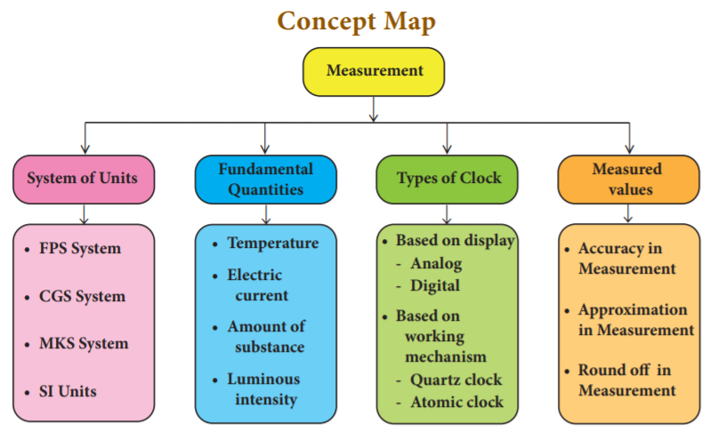
I C T CORNER
Measurement
This activity enables the students to learn about the various types of Time keeping devices
• Open the Browser and type URL link given below (or) Scan the QR Code.
• Click and select the “History of time keeping devices”
• Options will be given. Select any content (Eg) Digital clock
• It gives clear understanding of the “History of time keeping devices”
eb link: https://playablo.com/Blog/5-fun-activities-to-teachtemperature-hot-and-cold-to-preschoolers/ https://en.wikipedia. org/wiki/History of timekeeping devices (or) scan the Q R Code
*Pictures are indicative only
After the completion of this lesson, students will be able to:
We see many objects in our daily life. Some of them are moving and some of them are at rest. A ball at rest, moves when it is kicked. Similarly, when we push or pull objects which are at rest, they begin to move. This push or pull is called force. A force acting in a particular area, produces pressure. For example, when we fasten a nail on the wall, pressure is exerted. Not only solids, gases and liquids also exert pressure. Pressure exerted by liquids and gases finds application in different fields. Hydraulic lift and hydraulic break are working due to liquid pressure. In this lesson you will study about force and pressure. You will also study about surface tension viscosity and friction.
We do so many activities in our daily life like, opening a door, kicking a football, striking a carrom coin etc., To do these activities an external agency is needed. This external agency is called force. Force can either set an object at rest into motion or bring a moving object to rest. It can even change the shape and size of certain objects.
Force is defined as an external agency which changes or tends to change the state of rest or the state of uniform motion of a body or the direction of a moving body or the shape of a body. Force is a vector quantity, which has magnitude and direction. It is measured by a unit called 'newton' capital N.
Observe the strokes a batsman in cricket game. If he wants to hit the cricket ball to the boundary, the striking force on the ball must be greater. So, the greater the force you apply on a body, greater will be its effect on it.
Activity 1
Fix a matrix of sharp pins on a wooden board in rows and columns. Take a big blown up balloon. Place it gently over the pins and place a small book on the top of the balloon. Will the balloon burst? Will the pins prick the balloon?
If you prick a blown-up balloon with a single pin it will burst. But, this did not happen even though many more pins were pricking the balloon. A single pin produces a large pressure over a small area. But, when large number of pins prick a body, each pin exerts very little pressure on the balloon, as the applied force gets distributed over a large surface of the body. So, the balloon will not burst.
Thus, we can conclude that the effect of a force depends on the magnitude of the force and the area over which it acts. The force acting perpendicularly on any given surface area of a body is known as thrust. It is measured by the unit newton.
The effect of force can be measured using a physical quantity called pressure. It can be defined as the amount of force or thrust acting perpendicularly on a surface of area of one square meter of a body.
Pressure equal to Thrust or force by area Thai is capital P equal to capital F by A
The S I unit of pressure is pascal (named after the French scientist Blaise Pascal). 1 pascal equal to 1 N m power minus 2.
Pressure exerted by a force depends on the magnitude of the force and the area of contact.
Problem 1
The average weight of an elephant is 4000 N. The surface area of the sole of its foot is 0.1m2. Calculate the pressure exerted by one foot of an elephant.
Solution
Average weight of the elephant equal to 4000 N
Weight of one leg equal to Force exerted by one leg equal to 4000 by 4 equal to 1000 N Area of the sole of one foot equal to 0.1 m power 2.
Pressure equal to Force by Area equal to 1000 by 0.1 equal to 10000 capital N by small m power 2 equal to 10 power 4 N m power minus 2.
Pressure exerted by one leg of the elephant is 10,000 newtons on one square meter.
The effect of pressure can be increased by increasing the thrust or by decreasing the surface area of the body. The axe, nail, knife, injection needle, bullet etc., are having sharp fine edges so as to exert a larger pressure on a smaller area of the body in order to produce maximum effect.
Examples
1. More number of wheels are provided for a heavy goods-carrier for decreasing the pressure thereby increasing the area of contact on the road.
2. Broader straps are provided on a back-pack for giving less pressure on the shoulders by providing a larger area of contact with the shoulder.
Fig 2 point 1 Bags with broader straps
Do you know?
It is very difficult for us to walk on sand. But, camels can walk easily on it because they have large padded feet, which increase the area of contact with the sandy ground. This reduces the pressure and enables them to walk easily on the sand.
You all know very well that air fills the space around us. This envelope of air is called as atmosphere. It extends upto many kilometres above the surface of the Earth. All objects on the surface of the Earth experience the thrust or force due to this atmosphere.
The amount of force or weight of the atmospheric air that acts downward on unit surface area of the surface of the Earth is known as atmospheric pressure. It can be measured using the device called barometer. The barometer was invented by Torricelli.
Atmospheric pressure decreases with altitude from the surface of the Earth. It can be measured by the height of the mercury column in a barometer. The height of the mercury column denotes the atmospheric pressure at that place at a given time in ‘millimetre of mercury’. Even if you tilt the tube at various angles, you will see that the level of mercury will not vary. At sea level, the height of the mercury column is around 76 centimeter or 760 millimeter. The pressure exerted by this mercury column is considered as the pressure of magnitude ‘one atmosphere’ (1 a t m).
More to know
Cooking in a place located at a higher altitude is difficult. Why? At a higher altitude, due to lack of atmospheric pressure the boiling point of a substance reduces. So, water boils even at 80 degree Celsius. The thermal energy that is produced at this temperature is not sufficient enough for baking or cooking. So, cooking is difficult at higher altitude.
One atmospheric pressure (1 atm) is defined as the pressure exerted by the mercury column of height 76 centimeter in the barometer. It is equal to 1.01 into 10 power 5 N m power minus 2
In the S I system 1 atm equal to 1,00,000 pascal (approximately). S I unit of atmospheric pressure is N m power minus 2 or pascal.
Activity 2:
Take a conical flask and a well boiled egg, after removing its shell. Place the egg on the mouth of the flask. It will not enter the flask. Now take a piece of paper. Burn it and drop it inside the flask. Wait for a few seconds to burn fully.
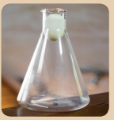
Now, keep the egg on the mouth of the flask. Wait for a few minutes. What do you observe? When the paper is burning in the flask, the oxygen present in the air inside the conical flask is used up for its combustion. This reduces the pressure of the air in the flask. The air in the atmosphere tends to occupy the low-pressure region in the flask. So, it rushes through the mouth of the flask, thus pushing the egg into the flask.
You would have noticed that an upward force is exerted by water on a floating or a partly submerged body. This upward force is called buoyant force. This phenomenon is known as buoyancy. This force is not only exerted by liquids, but also by gases.
This upward force decides whether an object will sink or float. If the weight of the object is less than the upward force, then the object will float. If not, it will sink.
Liquids exert a pressure not only on the base of the container/vessel in which they are kept, but also on the side walls. The pressure exerted by a liquid depends on the depth of the point of observation considered in it.
Activity 3:
Take a plastic bottle. Punch three holes on its side in the same direction, but at different heights. Now pour some water into it and let it flow through the holes. Observe the flow of water. Water from the lowest hole comes out with the greatest force and the water from the topmost hole comes out with the least force.
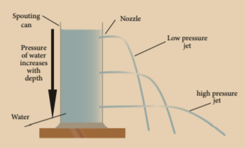
This activity confirms that the pressure in a liquid varies with the depth of the point of observation in it.
Activity 4:
Take a glass tube that is open at both ends. Fix a rubber balloon at the lower end of the tube. Pour some water into the tube and observe the balloon. Now, pour some more water into the balloon and again observe the balloon. The balloon starts bulging outwards.
This shows that the pressure exerted by a liquid at the bottom of a container depends on the height of the liquid column in it.
Activity 5:
Take a plastic bottle. Punch three holes on its sides at the same height from its base. Now, pour some water into it and let it flow through the holes. Observe the flow of the water. Water comes out from all the holes with the same force and falls on the ground/ table, at the same distance from the bottle.
Thus, we can conclude that liquids exert the same pressure in all directions, at a given depth.
Do you Know?
Why dams are made stronger and broader at the bottom than at the top? Why do scuba divers wear a special suit while they go into deep sea levels?
Activity 6:
Take a rubber ball and fill it with water. Make tiny holes on its surface with a pin at different points. Press anywhere on the ball. What do you observe?
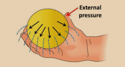
You can see identical streams of water flowing in all directions from the holes. This is due to the fact that the pressure, which is applied on the liquid, is equally transmitted in all direction. This concept was first given by the French scientist Blasie Pascal.
Pascal's law states that the pressure applied at any point of a liquid at rest, in a closed system, will be distributed equally through all directions of the liquid.
Applications of Pascal’s Law
The applications of Pascal’s law are:
Activity 7:
Take some water in a beaker and spread a tissue paper on the surface of the water. Gently place the paper clip on the tissue paper. Observe what happens to the paper pin after some time.
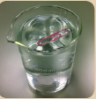
After a few moments the tissue paper will submerge and the paper clip will make a small depression on the surface of the water. It will instantly begin to float on the surface, even though it is denser than water.
How is it possible? This is because the water molecules on the surface which tend to contract themselves like the molecules of an elastic membrane. A force exists on them, which tends to minimize the surface area of water. The paper clip is balanced by the molecules on the water surface that is now behaving like a stretched elastic membrane. So, it does not submerge.
Have you ever wondered why rain drops are spherical in nature? How does the water rise upward in a tree or plant against the force of gravity? These are all due to surface tension.
Surface tension is the property of a liquid. The molecules of a liquid experience a force, which contracts the extent of their surface area as much as possible, so as to have the minimum value. The amount of force acting per unit length, on the surface of a liquid is defined as surface tension. Its unit is N m power minus 1.
Surface tension is the reason for many events we see in our daily life.
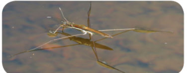
Activity 8: Take a small quantity of different kinds of liquid like coconut oil, honey, water and ghee etc., Place one drop of each liquid on a separate glass plate. Now gently raise one end of the glass plate, so as to allow the liquid to slide down the smooth surface of the plate. Observe the speed of each liquid.
Each liquid moves with a different speed. Water flows faster than other liquids. Coconut oil flows with a moderate speed. Ghee flows very slowly. Between the layers of the liquid, which is in motion, there is a frictional force parallel to the layers of the liquid. This frictional force opposes the motion of the liquid layers while they are in motion.
The frictional force acting between the successive layers of the liquid which acts in order to oppose the relative motion of the layer is known as viscous force. Such a property of a liquid is called viscosity. Viscous force is measured by the unit called poise in CGS system and kg m power minus 1 s power minus 1 or N s m power minus 2 in S I system.
We walk on roads without falling. But, we tend to fall when we walk on wet surfaces. Why? We walk on the roads safely because of the friction between the feet and the road. But, the friction is less when we walk on wet surface and so we tend to fall.
Frictional force or friction arises when two or more bodies in contact move or tend to move, relative to each other. It acts always in the opposite direction of the moving body. This force is produced due to the geometrical dissimilarities of the surface of the bodies, which are in relative motion. Friction can produce the following effects.
Friction can be classified into two basic types: static friction and kinetic friction.
Static friction
The friction experienced by the bodies, which are at rest is called static friction. Example All the objects are rigidly placed to be at rest on the earth.
Kinetic friction
Friction existing during the motion of bodies is called kinetic friction. Kinetic friction can be further classified into sliding friction and rolling friction.
When a body slides over the surface of another body, the friction acting between the surfaces in contact is called sliding friction. When a body rolls over another surface, the friction acting between the surfaces in contact is called rolling friction. Rolling friction is less than sliding friction. That is why wheels are provided in vehicles, trolleys, suitcases etc
Some of the factors which affect friction are given below.
a. Nature of a surface
Moving an object on a rough surface will be difficult, but we can eassily move it on a smooth surface. It is because, friction varies between the surfaces.
b. Weight of the body
It is easy to pedal your cycle without any load on its carrier. With a load placed on its carrier, it is difficult to move it because the weight on the carrier increases the friction between the surface of the tyre and the road.
c. Area of contact
For a given weight, the friction is directly related to the area of contact between the two surfaces. If the area of contact is greater, then, the friction will be greater too.
A road roller has a broad base, so it offers more friction on the road. But, a cycle has the least friction, since the area of contact of the tyre with the surface of the road is less.
Friction is necessary for our day to day activities. It is desirable in most of the situations of our daily life.
Friction wears out the surfaces rubbing with each other, like screws and gears in machines or soles of shoes.
An excess amount of effort has to be given to overcome the friction while operating a machine. This leads to wastage of energy.
Friction produces heat, which causes physical damage to the machines.
a. Area of contact
Friction can be increased by increasing the area of the surfaces in contact. For example, brake shoes in a cycle have to be adjusted so that they are as close as possible to the rim of the wheel, in order to increase the friction.
b. Using lubricants
A substance which reduces the frictional force is called a lubricant. Example. Grease, coconut oil, graphite, castor oil, etc. The lubricants fill up the gaps in the irregular surfaces between the bodies in contact. This provides a smooth layer thus preventing a direct contact between their rough surfaces.
c. Using ball bearing
Since rolling friction is smaller than sliding friction, sliding is replaced by rolling with the usage of ball bearings. For the same reason, lead shots are used in the bearing of a cycle hub.
Buoyant force: An upward force exerted by liquid on a floating body.
Force: Action of push or pull.
Friction: Force produced due to the geometrical dissimilarities of the surface of the bodies which are in relative motion.
Pressure: Force acting on unit area.
Surface tension: Force which contracts the surface area of the liquids.
Thrust: Force acting perpendicularly on any given surface area.
1. If we apply force against the direction of motion of the body, then the body will
a) stop moving
b) move with an increased speed
c) move with a decreased speed
d) move in a different direction
2. Pressure exerted by a liquid is increased by
a) the density of the liquid
b) the height of the liquid column
c) Both a and b
d) None of the above
3. Unit of pressure is
a) Pascal
b) N m power minus 2
c) Poise
d) Both a and b
4. The value of the atmospheric pressure at sea level is
a) 76 centimeter of mercury column
b) 760 centimeter of mercury column
c) 176 centimeter of mercury column
d) 7.6 centimeter of mercury column
5. Pascal’s law is used in
a) hydraulic lift
b) brake system
c) pressing heavy bundles
d) All the above
6. Which of the following liquids has more viscosity?
a) Grease
b) Water
c) Coconut oil
d) Ghee
7. The unit of viscosity is
a) N m power 2
b) poise
c) kg m s power minus 1
d) No unit
1. The pressure of a liquid column dash with the depth of the column.
2. Hydraulic lift works under the principle of dash.
3. The property of dash of a liquid surface enables the water droplets to move upward in plants.
4. A simple barometer was first constructed by dash.
1. Force acting on a given area is called pressure.
2. A moving body comes to rest due to friction alone.
3. A body will sink if the weight of the body is greater than the buoyant force.
4. One atmosphere is equivalent to 1,00,000 newton force acting on one square metre.
5. Rolling friction is slightly greater than the sliding friction.
6. Friction is the only reason for the loss of energy.
7. Liquid pressure decreases with the decrease of depth.
8. Viscosity depends on the pressure of a liquid.
a.
Static friction |
Viscosity |
Kinetic friction |
Least friction |
Rolling friction |
Objects are in motion |
Friction between the liquid layers |
Objects are sliding |
Sliding friction |
Objects are at rest |
b.
Barometer |
reduce friction |
Increasing area of contact |
Atmospheric pressure |
Decreasing area of contact |
cause of friction |
Lubricants |
increases friction |
Irregular surface |
decreases friction |
1. Knot in a thread : dash friction :: Ball bearing : dash friction
2. Downward force : Weight :: Upward force offered by liquid : dash
6. Numerical Problem.
1. A stone weighs 500 N. Calculate the pressure exerted by it, if it makes contact with a surface of area 25 cm square.
1. Assertion: Sharp knives are used to cut the vegetables.
Reason: Sharp edges exert more pressure.
2. Assertion: Broad straps are used in bags.
Reason: Broad straps last for long.
3. Assertion: Water strider slides easily on the surface of water.
Reason: Water strider experiences less buoyant force.
a. Both assertion and reason are true and reason is the correct explanation of assertion.
b. Both assertion and reason are true, but reason is not the correct explanation of assertion.
c. Assertion is true, but reason is false.
d. Both assertion and reason are false.
1. Give two examples to verify that a force changes the shape of a body.
2. Give two examples to verify that a force tends to change the static condition of a body.
3. How do you feel when you touch a nail immediately after it is hammered into a wooden plank? Why?
4. How does the friction arise between the surfaces of two bodies in relative motion?
5. Name two instruments which help to measure the pressure of a fluid.
6. Define one atmosphere.
7. Why are heavy bags provided with broad straps?
8. How does surface tension help a plant?
9. Which has greater viscosity, oil or honey? Why?
1. Define friction. Give two examples of the utility of friction in day to day life.
2. Mention any three ways of minimising friction.
3. State Pascal’s law and mention its applications.
4. Why is a ball bearing used in a cycle hub?
1. Friction is a necessary evil - Explain.
2. Give the different types of friction and explain each with an example.
3. Describe an experiment to prove that friction depends on the nature of a surface.
4. Explain how friction can be minimised.
5. Describe an experiment to prove that the pressure in a liquid increases with depth.
1. Why is it not advisable to use a fountain pen while travelling in an aeroplane?
2. Is there any possibility of making a special device to measure the magnitude of friction directly?
3. Vidhya feels that mercury is costly. So, instead of mercury she wants to use water as a barometric liquid. Explain the difficulty of constructing a water barometer.
12. Project Work.
Observe the devices, gadgets or things around you. List out the types of friction involved in each device. How would you minimise the friction? Record your observations and discuss your results with your classmates.
1. Fundamentals of Physics (English, Hardcover) David Halliday & Jearl Walker.
2. Principles of Physics, International Student Version (English, Paperback) Jearl Walker, David Halliday, Robert Resnick.
3. Concepts of Physics (Volume-1) 1stEdition (English, Paperback) H. C. Verma.
4. Fundamentals of Physics (English, Hardcover) David Halliday
1. https://www.youtube.com/ watch?v=Oe6bDTL3YQg
2. h t tps://www.youtube.com/ watch?v=KndNN28OcEI
3. https://www.youtube.com/watch?v=- B5IBoZ08-I
4. https://www.stufftoblowyourmind.com/ videos/51302-stuff-to-blow-your-kidsmind-atmospheric-pressure-video.htm
I C T CORNER
Force and Pressure
This activity helps to learn about the Fluid pressure & Pascal’s Law
Steps
• Open the Browser and type the URL link given below (or) Scan the QR Code.
• Select the “Fluid Pressure and Pascal’s Law”. You can view this page.
• You can view this page. Touch the play button.
• To get more idea about the Pascal’s Law for fluid pressure through Experiment.
After the completion of this lesson, students will be able to:

Lofty mountains covered with greenish vegetation, magnificent trees reaching the clouds, beautiful streams drifting down the valleys, bluish sea water roaring towards the coast and the radiant sky in the morning being filled with golden red color, all give delight to our eyes and peace to our mind. But, can we see them all without light? No, because, we can see things around us only when the light reflected by them reaches our eyes. What is light?
Light is a form of energy and it travels in a straight line. You have studied in your lower classes, how it is reflected by the polished surfaces such as plane mirrors. This reflecting property of light is applied in various devises that we use in our daily life. In this lesson, you will study about types of mirrors like spherical mirrors and parabolic mirrors. You will also study about the laws of reflection and the laws of refraction and some of the optical instruments, such as periscope and kaleidoscope, which work on these principles.
We use mirrors in our daily life for various purposes. Mainly, we use them for beautifying us. The mirror is an optical device with a polished surface that reflects the light falling on it. A typical mirror is a glass sheet coated with aluminium or silver on one of its sides to produce an image. Mirrors have a plane or curved surface. Curved mirrors have surfaces that are spherical, cylindrical, parabolic and ellipsoid. The shape of a mirror determines the type of image it forms. Plane mirrors form the perfect image of an object. Whereas, curved mirrors produce images that are either enlarged or diminished.
Do you know?
Method of coating a glass plate with a thin layer of reflecting metals was in practice during the 16th century in Venice, Italy. They used an amalgam of tin and mercury for this purpose. Nowadays, a thin layer of molten aluminium or silver is used for coating glass plates that will then become mirrors.


Spherical mirrors are one form of curved mirrors. If the curved mirror is a part of a sphere, then it is called a ‘spherical mirror’. It resembles the shape of a piece cut out from a spherical surface. One side of this mirror is silvered and the reflection of light occurs at the other side.

Concave mirror
A spherical mirror, in which the reflection of light occurs at its concave surface, is called a concave mirror. These mirrors magnify the object placed close to them. The most common example of a concave mirror is the make-up mirror.
Convex mirror
A spherical mirror, in which the reflection of light occurs at its convex surface, is called a convex mirror. The image formed by these mirrors is smaller than the object. Most common convex mirrors are rear viewing mirrors used in vehicles.
Do you know?
Convex mirrors used in vehicles as rear-view mirrors are labeled with the safety warning: ‘Objects in the mirror are closer than they appear’. This is because inside the mirrors, vehicles will appear to be coming at a long distance.
A parabolic mirror, which is in the shape of a parabola, is one type of curved mirror. It has a concave reflecting surface and this surface directs the entire incident beam of light to converge at its focal point.
In the same way, light rays generated by the source placed at the focal point will fall on this surface and they will be diverged in a direction, which is parallel to the principal axis of the parabolic mirror. Hence, the light rays will be reflected to travel a long distance, without getting diminished.
Parabolic mirrors, also known as parabolic reflectors, are used to collect or project light energy, heat energy, sound energy and radio waves. They are used in reflecting telescopes, radio telescopes and parabolic microphones. They are also used in solar cookers and solar water heaters.

Do you know?
The principle behind the working of a parabolic mirror has been known since the Greco-Roman times. The first mention of these structures was found in the book, ‘On Burning Mirrors’, written by the mathematician Diocles. They were also studied in the 10th century, by a physicist called Ibn Sahl. The first parabolic mirrors were constructed by Heinrich Hertz, a German physicist, in the form of reflector antennae in the year 1888.
In order to understand the image formation in spherical mirrors, we need to know about some of the terms related to them.
Center of Curvature
It is the center of the sphere from which the mirror is made. It is denoted by the letter C in the ray diagrams. (A ray diagram represents the formation of an image by the spherical mirror. You will study about them in the higher classes).
Pole
It is the geometric centre of the spherical mirror. It is denoted by the letter P.
Radius of Curvature
It is the distance between the center of the sphere and the vertex. It is shown by the letter R in ray diagrams (The vertex is the point on the mirror’s surface where the principal axis meets the mirror. It is also called as ‘pole’).
Principal Axis
The line joining the pole of the mirror and its center of curvature is called principal axis.
Focus
When a beam of light is incident on a spherical mirror, the reflected rays converge (concave mirror) at or appear to diverge from (convex mirror) a point on the principal axis. This point is called the ‘focus’ or ‘principal focus’. It is also known as the focal point. It is denoted by the letter F in ray diagrams.
Focal length
The distance between the pole and the principal focus is called focal length (f) of a spherical mirror.
There is a relation between the focal length of a spherical mirror and its radius of curvature. The focal length is half of the radius of curvature.
Focal length equal to Radius of curvature by 2.

Problem 1
The radius of curvature of a spherical mirror is 20 centimeter. Find its focal length.
Solution
Radius of curvature equal to 20 centimeter
Focal length (f) equal to Radius of curvature by 2.
Equal to R by 2 equal to 20 by 2 equal to 10 centimeter.
Problem 2
Focal length of a spherical mirror is 7 centimeter. What is its radius of curvature?
Solution
Radius of curvature (R) equal to 2 into Focal length
Equal to 2 into 7 equal to 14 centimeter
Images formed by spherical mirrors are of two types: real image and virtual image. Real images can be formed on a screen, while virtual images cannot be formed on a screen. Image formed by a convex mirror is always erect, virtual and diminished in size. As a result, images formed by these mirrors cannot be projected on a screen.
The characteristics of an image are determined by the location of the object. As the object gets closer to a concave mirror, the image gets larger, until attaining approximately the size of the object, when it reaches the centre of curvature of the mirror. As the object moves away, the image diminishes in size and gets gradually closer to the focus, until it is reduced to a point at the focus when the object is at an infinite distance from the mirror. The size and nature of the image formed by a convex mirror are given in Table 3 point 1.
Concave mirrors form a real image and it can be caught on a screen. Unlike convex mirrors, concave mirrors show different image types. Depending on the position of the object in front of the mirror, the position, size and nature of the image will vary. Table 3 point 2 provides a summary of images formed by a concave mirror.
You can observe from the table that a concave mirror always forms a real and inverted image except when the object is placed between the focus and the pole of the mirror. In this position, it forms a virtual and erect image.
Activity 1
Take a curved silver spoon and see the image formed by it. Now, turn it and find the image formed. Do you find any difference? Find out the reason.

Table 3 point 1 shows the Image formed by a convex mirror
Position of the Object |
Position of the Image |
Image Size |
Nature of the Image |
At infinity |
At F |
Highly diminished, point sized |
Virtual and erect |
Between infinity and the pole (P) |
Between P and F |
Diminished |
Virtual and erect |
Table 3 point 2 shows the Image formed by a concave mirror
Position of the Object |
Position of the Image |
Image Size |
Nature of the Image |
At infinity |
At F |
Highly diminished |
Real and inverted |
Beyond C |
Between C and F |
Diminished |
Real and inverted |
At C |
At C |
Same size as the object |
Real and inverted |
Between C and F |
Beyond C |
Magnified |
Real and inverted |
At F |
At infinity |
Highly magnified |
Real and inverted |
Between F and P |
Behind the mirror |
Magnified |
Virtual and erect |
Concave mirror
1. Concave mirrors are used while applying make-up or shaving, as they provide a magnified image.
2. They are used in torches, search lights and head lights as they direct the light to a long distance.
3. They can collect the light from a larger area and focus it into a small spot. Hence, they are used in solar cookers.
4. They are used as head mirrors by doctors to examine the eye, ear, nose and throat as they provide a shadow-free illumination of the organ.
5. They are also used in reflecting telescopes


Convex mirror
1. Convex mirrors are used in vehicles as rear view mirrors because they give an upright image and provide a wider field of view as they are curved outwards.
2. They are found in the hallways of various buildings including hospitals, hotels, schools and stores. They are usually mounted on a wall or ceiling where hallways make sharp turns.
3. They are also used on roads where there are sharp curves and turns.


Activity 2: List out various convex and concave mirrors used in daily life.
Activity 3: Take a plane mirror and focus the light coming from the Sun on a wall. Can you see a bright spot on the wall? How does it occur? It is because the light rays falling on the mirror are bounced onto the wall. Can you produce the same bright spot with the help of any other object having a rough surface?
Not all the objects can produce the same effect as produced by the plane mirror. A ray of light, falling on a body having a shiny, polished and smooth surface alone is bounced back. This bouncing back of the light rays as they fall on the smooth, shiny and polished surface is called reflection.

Reflection involves two rays: incident ray and reflected ray. The incident ray is the light ray in a medium falling on the shiny surface of a reflecting body. After falling on the surface, this ray returns into the same medium. This ray is called the reflected ray. An imaginary line perpendicular to the reflecting surface, at the point of incidence of the light ray, is called the normal.
The relation between the incident ray, the reflected ray and the normal is given as the laws of reflection. The laws of reflection are as follows:
• The incident ray, the reflected ray and the normal at the point of incidence, all lie in the same plane.
• The angle of incidence (i) and the angle of reflection (r) are always equal.

Do you know?
Silver metal is the best reflector of light. That is why a thin layer of silver is deposited on the side of materials like plane glass sheets, to make mirrors.
We have learnt that not all bodies can reflect light rays. The amount of reflection of light depends on the nature of the reflecting surface of the body. Based on the nature of the surface, reflection can be classified into two types namely, regular reflection and irregular reflection.
When a beam of light (collection of parallel rays) falls on a smooth surface, it gets reflected. After reflection, the reflected rays will be parallel to each other. Here, the angle of incidence and the angle of reflection of each ray will be equal. Hence, the law of reflection is obeyed in this case and thus a clear image is formed. This reflection is called ‘regular reflection’ or ‘specular reflection’. Example: Reflection of light by a plane mirror and reflection of light from the surface of still water.

In the case of a body having a rough or irregular surface, each region of the surface is inclined at different angles. When light falls on such a surface, the light rays are reflected at different angles. In this case, the angle of incidence and the angle of reflection of each ray are not equal. Hence, the law of reflection is not obeyed in this case and thus the image is not clear. Such a reflection is called ‘irregular reflection’ or ‘diffused reflection’. Example: Reflection of light from a wall.

Activity 4:
Take two plane mirrors and keep them perpendicular to each other. Place an object between them. You can see the images of the object. How many images do you see in the mirrors? You can see three images. How is it possible to have three images with two mirrors?

In the activity given above, you observed that for an object kept in between two plane mirrors, which were inclined to each other, you could see many images. This is because, the ‘image’ formed by one mirror acts as an ‘object’ for the other mirror. The image formed by the first mirror acts as an object for the second mirror and the image formed by the second mirror acts as an object for the first mirror. Thus, we have three images of a single body. This is known as multiple reflection. This type of reflections can be seen in show rooms and saloons.
The number of images formed, depends on the angle of inclination of the mirrors. If the angle between the two mirrors is a factor of 360 degree, then the total number of reflections is finite. If θ (Theta) is the angle of inclination of the plane mirrors, the number of images formed is equal to 360 degree by theta (θ) minus 1. As you decrease this angle, the number of images formed increases. When they are parallel to each other, the number of images formed becomes infinite.
Problem 3
If two plane mirrors are inclined to each other at an angle of 90°, find the number of images formed.
Solution
Angle of inclination equal to 90 degree
Number of images formed equal to 360 degree by theta (θ) minus 1
Equal to 360 degree by 90 degree minus 1 equal to 4 minus 1 equal to 3
It is a device which functions on the principle of multiple reflection of light, to produce numerous patterns of images. It has two or more mirrors inclined to each other. It can be designed from inexpensive materials. The colourful image patterns formed by this will be pleasing to you. This instrument is used as a toy for children.

Activity 5:
Take three equal sized plane mirror strips and arrange them in such a way that they form an equilateral triangle. Cover the sides of the mirrors with a chart paper. In the same manner cover the bottom of the mirrors also. Put some coloured things such as pieces of bangles and beads inside it. Now, cover the top portion with the chart paper and make a hole in it to see. You can wrap the entire piece with coloured papers to make it attractive. Now, rotate it and see through its opening. You can see the beautiful patterns.
Caution: Be careful while handling the glass pieces. Do this under the supervision of your teacher.
It is an instrument used for viewing bodies or ships, which are over and around another body or a submarine. It is based on the principle of the law of reflection of light. It consists of a long outer case and inside this case mirrors or prisms are kept at each end, inclined at an angle of 45 degree. Light coming from the distant body, falls on the mirror at the top end of the periscope and gets reflected vertically downward. This light is reflected again by the second mirror kept at the bottom, so as to travel horizontally and reach the eye of the observer. In some complex periscopes, optic fibre is used instead of mirrors for obtaining a higher resolution. The distance between the mirrors varies depending on the purpose.

Uses

We know that when a light ray falls on a polished surface placed in air, it is reflected into the air itself. When it falls on a transparent material, it is not reflected completely, but a part of it is reflected, a part of it is absorbed and most of the light passes through it. Through air, light travels with a speed of 3 into 10 power 8 m s power minus 1, but it cannot travel with the same speed in water or glass, because, optically denser medium such as water and glass offer some resistance to the light rays.
So, light rays travelling from a rarer medium like air into a denser medium like glass or water are deviated from their straight line path. This bending of light about the normal, at the point of incidence; as it passes from one transparent medium to another is called refraction of light.
When a light ray travels from the rarer medium into the denser medium, it bends towards the normal and when it travels from the denser medium into the rarer medium, it bends away from the normal. You can observe this phenomenon with the help of the activity given below.
Activity 6:
Take a glass beaker, fill it with water and place a pencil in it. Now, look at the pencil through the beaker. Does it appear straight? No. It will appear to be bent at the surface of the water. Why?

In this activity, the light rays actually travel from the water (a denser medium) into the air (a rarer medium). As you saw earlier, when a light ray travels from a denser medium to a rarer medium, it is deviated from its straight line path. So, the pencil appears to be bent when you see it through the glass of water.
Refraction of light in a medium depends on the speed of light in that medium. When the speed of light in a medium is more, the bending is less and when the speed of light is less, the bending is more.

The amount of refraction of light in a medium is denoted by a term known as refractive index of the medium, which is the ratio of the speed of light in the air to the speed of light in that particular medium. It is also known as the absolute refractive index and it is denoted by the Greek letter ‘mew’ (pronounced as ‘mew’).
μ (mew) equal to Speed of light in air (c ) by Speed of light in the medium (v)
Refractive index is a ratio of two similar quantities (speed) and so, it has no unit. Since, the speed of light in any medium is less than its speed in air, refractive index of any transparent medium is always greater than 1. Refractive indices of some common substances are given in Table 3 point 3.
Substances |
Refractive index |
Air |
1.0 |
Water |
1.33 |
Ether |
1.36 |
Kerosene |
1.41 |
Ordinary Glass |
1.5 |
Quartz |
1.56 |
Diamond |
2.41 |
In general, the refractive index of one medium with respect to another medium is given by the ratio of their absolute refractive indices.
1 mew 2 equal to Absolve refractive index of the second medium by Absolve refractive index of the first medium
1 mew 2 equal to c by V 2 by c by V 1 or 1 mew 2 equal to V 1 by V 2.
Thus, the refractive index of one medium with respect to another medium is also given by the ratio of the speed of light in the first medium to its speed in the second medium.
Problem 4
Speed of light in air is 3 into 108 m s power minus 1 and the speed of light in a medium is 2 into10 power 8 m s power minus 1. Find the refractive index of the medium with respect to air.
Solution
Refractive index (μ) mew equal to Speed of light in air (c ) by Speed of light in the medium (v)
μ (mew) equal to 3 into 10 power 8 by 2 into 10 power 8 equal to 1.5
Problem 5
Refractive index of water is 4 by 3 and the refractive index of glass is 3 by 2. Find the refractive index of glass with respect to the refractive index of water.
Solution
W mew g equal to Refractive index of glass by Refractive index of water.
Equal to 3 by 2 by 4 by 3 equal to 9 by 8 equal to 1.125
3 point 8 point 2 Snell’s Law of Refraction
Refraction of light rays, as they travel from one medium to another medium, obeys two laws, which are known as Snell’s laws of refraction. They are given below:
1) The incident ray, the refracted ray and the normal at the point of intersection, all lie in the same plane.
2) The ratio of the sine of the angle of incidence (i) to the sine of the angle of refraction (r) is equal to the refractive index of the medium, which is a constant. Sane I by sine R equal to mew

Activity 7: Place a prism on a table and keep a white screen near it. Now, with the help of a torch, allow white light to pass through the prism. What do you see? You can observe that white light splits into seven colored light rays namely, violet, indigo, blue, green, yellow, orange and red (VIBGYOR) on the screen. Now, place another prism in its inverted position, between the first prism and the screen. Now, what do you observe on the screen? You can observe that white light is coming out of the second prism.

In this activity, you can see that the first prism splits the white light into seven coloured light rays and the second prism recombines them into white light, again. Thus, it is clear that white light consists of seven colours. You can also recall Newton’s disc experiment, which you studied in standard seven.
Splitting of white light into its seven constituent colours (wavelength), on passing through a transparent medium is known as dispersion of light.
Why does dispersion occur? It is because, light of different colours presents in white light have different wavelength and they travel at different speeds in a medium. You know that refraction of a light ray in a medium depends on its speed. As each coloured light has a different speed, the constituent coloured lights are refracted at different extents, inside the prism. Moreover, refraction of a light ray is inversely proportional to its wavelength.
Thus, the red coloured light, which has a large wavelength, is deviated less while the violet coloured light, which has a short wavelength, is deviated more.
Do you know?
The formation of rainbow is an example of dispersion of white light. This can be seen on the opposite side of the Sun. After rainfall, large number of droplets still remain suspended in the air. When white light passes through them, it is split into seven colours. Dispersion of white light from a large number of droplets eventually forms a rainbow.
Mirror is an optical device with a polished surface that reflects the light falling on it.
Curved mirrors have surfaces that are spherical, cylindrical, parabolic and ellipsoid.
If the curved mirror is a part of a sphere, then it is called a ‘spherical mirror’.
A spherical mirror, in which the reflection of light occurs at its concave surface, is called a concave mirror.
A spherical mirror, in which the reflection of light occurs at its convex surface, is called a convex mirror.
The focal length of a spherical mirror is half of its radius of curvature.
Real images can be formed on a screen, while virtual images cannot be formed on a screen.
Concave mirrors form a real image and it can be caught on a screen.
Concave mirrors are used as make-up mirrors.
Convex mirrors are used in vehicles as rear view mirrors.
Based on the nature of the surface, reflection can be classified into two types namely, regular reflection and irregular reflection.
The number of images formed by a mirror depends on the angle of inclination of the mirrors.
Center of Curvature- The center of the sphere from which the mirror is made.
Dispersion of light - Splitting of white light into its seven constituent colours (wavelength).
Focal length - Distance between the pole and the principal focus.
Focus - Point where the reflected rays converge at or appear to diverge from a point on the principal axis.
Kaleidoscope - Device which produces numerous and wonderful image patterns.
Periscope - Instrument used for viewing objects, which are over and around another body.
Pole - Point on the mirror’s surface where the principal axis meets the mirror.
Principal Axis - Line joining the pole of the mirror and its center of curvature.
Radius of Curvature - Distance between the center of the sphere and the vertex.
Reflection - Bouncing back of the light rays as they fall on the smooth, shiny and polished surface.
Refraction of light - Bending of light about the normal, at the point of incidence; as it passes from one transparent medium to another.
Refractive index - Ratio of the speed of light in the air to the speed of light in that particular medium.
1. Which of the following has curved reflecting surface?
a) plane mirrors
b) spherical mirrors
c) simple mirrors
d) None of the above
2. The spherical mirror with a reflecting surface curved inward is called
a) convex mirror
b) concave mirror
c) curved mirror
d) None of the above
3. The spherical mirror used as a rear-view mirror in the vehicle is
a) concave mirror
b) convex mirror
c) plane mirror
d) None of the above
4. The imaginary line passing through the centre of curvature and pole of a spherical mirror is called
a) centre of curvature
b) pole
c) principal axis
d) radius curvature
5. The distance from the pole to the focus is called
a) pole length
b) focal length
c) principal axis
d) None of the above
6. If the image and object distance is same, then the object is placed at
a) infinity
b) at F
c) between f and P
d) at C
7. If the focal length of a spherical mirror is 10 centimeter, what is the value of its radius of curvature?
a) 10 centimeter
b) 5 centimeter
c) 20 centimeter
d) 15 centimeter
2. Fill in the blanks.
1. The spherical mirror used in a beauty parlour as make-up mirror is dash.
2. Geometric centre of the spherical mirror is dash.
3. Nature of the images formed by a convex mirror is dash.
4. The mirror used by the ophthalmologist to examine the eye is dash.
5. If the angle of incidence is 45degree, then the angle of reflection is dash.
6. If an object is placed between two mirrors which are parallel to each other, the
number of images formed is dash.
Convex mirror |
Radio telescopes |
Parobolic mirror |
Rear – view mirror |
Snell’s law |
Kaleidoscope |
Dispersion of light |
sine I by sine r equal to mew |
Refractive index |
Rainbow |
1. Define focal length.
2. Give any two applications of a concave and convex mirror.
3. State the laws of reflection.
4. Define the refractive index of a medium.
5. State Snell’s law of refraction
1. Explain the images formed by a concave mirror.
2. What is reflection? Write a short note on regular and irregular reflection.
3. Explain the working of a periscope.
4. What is dispersion? Explain in detail.
1. The radius of curvature of a spherical mirror is 25 cm. Find its focal length.
2. If two plane mirrors are inclined to each other at an angle of 45°, find the number of images formed.
3. Speed of light in air is 3 × 10 power 8 m s power minus 1 and the refractive index of a medium is 1.5. Find the speed of light in the medium.
1. Frank New Certificate Physics (2017). Frank Bros. & Co., Chennai.
2. Concise Physics (2017). Selena Publishers, New Delhi.
3. Cambridge IGCSC Physics (2002). Hodder education, London.
4. Physics for Standard XI (2005). Tamil Nadu Textbook Corporation, Chennai.
INTERNET RESOURCES
1. https://farside.ph.utexas.edu
2. https://britannica.com
3. https://studyread.com
4. https://sciencelearn.org
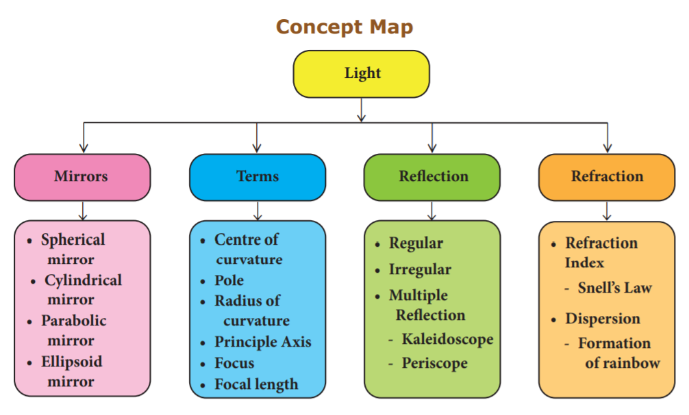

All the substances in our surrounding are made up of atoms and molecules. These atoms and molecules are always at vibratory motion. Due to this motion, substances have an energy known as heat energy. This energy flows from hot substances to cold substances or from hot region to cold region of a substance. When heat energy is supplied to any substance it increases the energy of the atoms and molecules in it and so they start to vibrate. These atoms and molecules which vibrate make other atoms and molecules to vibrate. Thus, heat energy is transferred from one part of the substance to other part. We can see this heat energy transfer in our daily life also. Heat energy brings about lot of changes. You will learn about them in this lesson. You will also study about transfer of heat and measurement of heat change.
When heat energy is supplied to any substance, it brings about many changes. There are three important changes that we can see in our daily life. They are:
Activity 1: Take a metal ball and a metal ring of suitable diameter. Pass the metal ball through the ring. You can observe that the metal ball can easily go through it. Now heat the metal ball and then try to pass it through the ring. It will not pass through the ring. Keep the metal ball on the ring for some time. In few minutes, it will fall through the ring.

Why didn’t the ball go through the ring initially but went through it after some time? When the ball is heated the atoms in the ball gain heat energy. They start vibrating and force each other apart. As a result an expansion takes place. That’s why the ball did not go through the ring. After some time, as the ball lost the heat energy to the surrounding it came back to its original size and it went through the ring. This shows that heat energy causes expansion in solids. This expansion takes place in liquids and gases also. It is maximum in gases.
Do you Know?
Electric wires used for long distance transmission of electricity will expand during day time and contract at night. That is why they will not be set very tightly. If they are set very tightly they will break when they cool at night.
Activity 2: Take a cup of water and note its temperature. Heat the water for few minutes and note the temperature again. Do you find any increase in the temperature? What caused the temperature change?

When the water is heated, water molecules receive heat energy. This heat energy increases the kinetic energy of the molecules. When the molecules receive more energy, the temperature of the water increases. This shows that heat energy causes increase in temperature.
Activity 3: Take few ice cubes in a container and heat them for some time. What happens? The ice cubes melt and becomes water. Now heat the water for some time. What do you observe? The volume of water in the vessel decreases. What do you understand from this activity?
In ice cubes the force of attraction between the water molecules is more. So, they are close together. When we heat them the force of attraction between the molecules decreases and the ice cubes become water. When we heat the water, the force of attraction decreases further. Hence, they move away from one another and become vapour. Since water vapour escape to the surrounding, water level decreases further. From this we understand that heat energy causes change in the state of the substances. When heat energy is removed, changes take place in reverse direction.
If heat energy is supplied to or taken out from a substance, it will undergo a change from one state of matter to another.
One of the following transformations may take place due to heat energy.

Do you know?
Water is the only matter on the Earth that can be found naturally in all three states - Solid, Liquid and Gas.
If heat energy is supplied to any substance, it will be transferred from one part of the substance to another part. It takes place in different ways depending on the state of the substance. Three ways of heat transfer are:
Activity 4: Take some hot water in a cup and put a silver spoon in it. Leave the spoon inside the water for some time. Now touch the other end of the spoon. Do you feel the heat?

How did the other end of the spoon become hot? It is because heat in the hot water is transferred from one end to another end of the spoon. In solid substances such as silver spoon, atoms are arranged very closely. Hot water molecules which are vibrating transfer the heat energy to the atoms in the spoon and make them vibrate. Those atoms make other atoms to vibrate and thus heat is transferred to the other end of the spoon.
In conduction heat transfer takes place between two ends of the same solid or through two solid substances that are at different temperatures but in contact with one another. Thus, we can define conduction as the process of heat transfer in solids from the region of higher temperature to the region of lower temperature without the actual movement of atoms or molecules.

Do you know?
All metals are good conductors of heat. The substances which does not conduct heat easily are called bad conductors or insulators. Wood, cork, cotton, wool, glass, rubber, etc are insulators.
Conduction in daily life
Activity 5: Take some water in a vessel and heat it on a stove. Touch the surface of the water. It will be cold. Touch it after some time. It will be hot now. How did the heat which was supplied at the bottom reach the top?

When water in the vessel is heated, water molecules at the bottom receive heat energy and move upward. Then the molecules at the top comes down and get heated. This kind of heat transfer is known as convection. This is how air in the atmosphere is also heated. Thus, the form of heat transfer from places of high temperature to places of low temperature by the actual movement of molecules is called convection. Convection takes place in liquids and gases.
Convection in daily life
Radiation is the third form of heat transfer. By conduction, heat is transferred through solids, by convection heat is transferred through liquids and gases, but by radiation heat can be transferred through empty space even through vacuum. Heat energy from the Sun reaches the Earth by this form of heat transfer. Radiation is defined as the way of heat transfer from one place to another in the form of electromagnetic waves.

Radiation in daily life
Do you know?
Heat transfer by radiation is visible to our eyes. When a substance is heated to 500°C the radiation begins to become visible to the eye as a dull red glow, and it is sensed as warmth by the skin. Further heating rapidly increases the amount of radiation, and its perceived colour becomes orange, yellow and finally white.
We studied about the effects of heat energy. When heat energy is supplied to substances, physical changes take place in them. Solid form of water (ice) is changed to liquid form, and liquid form of water is changed to gaseous form. These are all the physical changes due to heat energy. Similarly, heat energy produces chemical changes also. To know more about the physical and chemical changes that take place in substances, we need to measure the amount of heat involved. The technique used to measure the amount of heat involved in a physical or a chemical process is known as calorimetry.
Temperature is a physical quantity which expresses whether an object is hot or cold. It is measured with the help of thermometer. There are three scales to measure the temperature. They are:
Among these three scales, Kelvin scale is the most commonly used one. You will study about this elaborately in Standard nine.
We know that heat is a form of energy. The unit of energy in S I system is joule. So, heat is also measured in joule. It is expressed by the symbol J. The most commonly used unit of heat is calorie. One calorie is the amount of heat energy required to raise the temperature of 1 gram of water through 1 degree Celsius. The relation between calorie and joule is given as, 1 calorie equal to 4.186 J.
Do you know?
The amount of energy in food items is measured by the unit kilo calorie. 1 kilo calorie equal to 4200 Juile (Approximately).
Activity 6: Take some amount of water and cooking oil in two separate vessels. Heat them till they reach a particular temperature (Caution: Heat the oil under the supervision of your teacher). Which one is heated first? Water will take more time to get heated. Why?
In general, the amount of heat energy gained or lost by a substance is determined by three factors. They are:
Different substances require different amount of heat energy to reach a particular temperature. This nature is known as heat capacity of a substance. Heat capacity is defined as the amount of heat energy required by a substance to raise its temperature by 1 degree C or 1 K. It is denoted by the symbol C.
Heat capacity equal to Amount of heat energy required (Q) by Raise in temperature (Δ T)
C equal to Q by del T
The unit of heat capacity is cal by degree Celsius. In SI system, it is measured in J K power minus 1
Do you Know?
Water has higher heat capacity than most other substances. This accounts for the use of water as common coolant. 100 gram of water can take away more heat than 100 gram of oil.
Problem 1
The temperature of a metal ball is 30 degree Celsius. When an energy of 3000 J is supplied, its temperature raises by 40 degree Celsius. Calculate its heat capacity.
Solution
Heat capacity, C dash equal to Q by del T
Here, Q equal to 3000 Juile
del T equal to 40 degree Celsius minus 30 degree Celsius equal to 10 degree Celsius or 10 K
C' equal to 3000 by 10 equal to 300 J K power minus 1
The heat capacity of the metal ball is 300 J K power minus 1.
Problem 2
The energy required to raise the temperature of an iron ball by 1 K is 500 J K power minus 1. Calculate the amount of energy required to raise its temperature by 20 K.
Solution
Heat capacity, C dash equal to Q by del T
Q equal to C dash into del T
Here, C dash equal to 500 J K power minus 1.
del T equal to 20 K
Q equal to 500 into 20 equal to 10000 J.
The amount of heat energy required is 10000 J.
When the heat capacity of a substance is expressed for unit mass, it is called specific heat capacity. Specific heat capacity of a substance is defined as the amount of heat energy required to raise the temperature of 1 kilogram of a substance by 1 degree Celsius or 1 K. It is denoted by the symbol C.
Specific heat capacity
Equal to Amount of heat energy required (Q) by Mass into Raise in temperature del T
C equal to Q by m into del T
The S I unit of specific heat capacity is J kg power minus 1 K power minus 1
Problem 3
An energy of 84000 J is required to raise the temperature of 2 kg of water from 60 degree Celsius to 70 degree Celsius. Calculate the specific heat capacity of water.
Solution
Specific heat capacity, C equal to Q by m into del T
Here, Q equal to 84000 J
m equal to 2 kilogram
del T equal to 70 degree Celsius minus 60 degree Celsius equal to 10 degree Celsius or 10 K
C equal to 84000 by 2 into 10 equal to 4200 J kg power minus 1 K power minus 1
The Specific heat capacity of water is 4200 J kg power minus 1 K power minus 1
Problem 4
The specific heat capacity of a metal is 160 J kg power minus 1 K power minus 1. Calculate the amount of heat energy required to raise the temperature of 500 gram of the metal from 125 degree Celsius to 325 degree Celsius.
Solution
Specific heat capacity, C equal to Q by m into del T
Q equal to C into m into del T
Here, C equal to 160 J kg K power minus 1 m equal to 500 g equal to 0.5 kg
Del T equal to 325 degree Celsius minus 125 degree Celsius equal to 200 degree Celsius or 200 K
Equal to 160 into 0.5 into 200 equal to 16000 J.
The amount of heat energy required is 16000 J.
A calorimeter is a device used to measure the amount of heat gained or lost by a substance. It consists of a vessel made up of metals like copper or aluminium which are good conductors of heat and electricity.

The metallic vessel is kept in an insulating jacket to prevent heat loss to the environment. There are two holes in it. Through one hole a thermometer is inserted to measure the temperature of the contents. A stirrer is inserted through another hole for stirring the content in the vessel. The vessel is filled with liquid which is heated by passing current through the heating element. Using this device we can measure the heat capacity of the liquid in the container.

Do you know?
The world’s first ice-calorimeter was used in the year 1782 by Antoine Lavoisier and Pierre. Simon Laplace, to determine the heat generated by various chemical changes.
A thermostat is a device which maintains the temperature of a place or an object constant. The word thermostat is derived from two Greek words, ‘thermo’ meaning heat and ‘static’ meaning staying the same. Thermostats are used in any device or system that gets heated or cools down to a pre-set temperature. It turns an appliance or a circuit on or off when a particular temperature is reached. Devices which use thermostat include building heater, central heater in a room, air conditioner, water heater, as well as kitchen equipment including oven and refrigerators. Sometimes, a thermostat functions both as the sensor and the controller of a thermal system.

The thermos flask (Vacuum flask) is an insulating storage vessel that keeps its content hotter or cooler than the surroundings for a longer time. It is primarily meant to enhance the storage period of a liquid by maintaining a uniform temperature and avoiding the possibilities of getting a bad taste.

Do you know?
The vacuum flask was invented by Scottish scientist Sir James Dewar in 1892. In his honour it is called as Dewar flask. It’s also known as Dewar bottle.
Working of Thermos flask
A thermos flask has double walls, which are evacuated. It is silvered on the inside. The vacuum between the two walls prevents heat being transferred from the inside to the outside by conduction and convection.
With very little air between the walls, there is almost no transfer of heat from the inner wall to the outer wall or vice versa. Conduction can only occur at the points where the two walls meet, at the top of the bottle and through an insulated support at the bottom. The silvered walls reflect radiated heat back to the liquid in the bottle.
Calorimeter - A device which measures the heat capacity of liquids.
Calorimetry - The technique used to measure the amount of heat involved in a physical or a chemical process.
Conduction - The process of heat transfer in solids from a region of higher temperature to a region of lower temperature without the actual movement of molecules.
Convection - The form of heat transfer from places of high temperature to places of low temperature by the actual movement of liquid or gas molecules.
Heat capacity - Amount of heat energy required to raise the temperature of a substance by 1°C or 1 K.
Radiation - The form of heat transfer from one place to another place in the form of electromagnetic waves.
Specific heat capacity - Amount of heat energy required to raise the temperature of 1 kilogram of a substance by 1°C or 1 K.
Temperature - Physical quantity which expresses whether an object is hot or cold.
Thermos flask - An insulating storage vessel that keeps its content hotter or cooler than the surroundings for a longer time.
Thermostat - A temperature sensing device that turns an appliance or circuit on or off when a particular temperature is reached in it.
1. Heat is a form of dash.
a) electrical energy
b) gravitational energy
c) thermal energy
d) None of these
2. If you apply some heat energy to a substance, which of the following can take place in it?
a) Expansion
b) Increase in temperature
c) Change of state
d) All the above.
3. Which of the following substances will absorb more heat energy?
a) Solid
b) Liquid
c) Gas
d) All the above
4. If you apply equal amount of heat to a solid, liquid and gas individually, which of the following will have more expansion?
a) Solid
b) Liquid
c) Gas
d) All of them
5. The process of converting a liquid into a solid is called dash.
a) sublimation
b) condensation
c) freezing
d) deposition
6. Conduction is the way of heat transfer which takes place in a dash.
a) solid
b) liquid
c) gas d
d) All of them
1. A calorimeter is a device used to measure the dash.
2. dash is defined as the amount of heat required to raise the temperature of 1kg of a substance by 1°C.
3. A thermostat is a device which maintains dash.
4. The process of converting a substance from gaseous state to solid state is called dash.
5. If you apply heat energy, the temperature of a system will dash.
6. If the temperature of a liquid in a container is decreased, then the inter atomic distance will dash.
1. The applied heat energy can be realised as an increase in the average kinetic energy of the molecules.
2. The dimensions of a substance are increased if the temperature of the substance is decreased.
3. The process of converting a substance from solid state to gaseous state is called condensation.
4. Convection is the process by which the thermal energy flows in solids.
5. The amount of heat gained by a substance is equal to the product of its mass and latent heat.
6. In a thermos flask, the silvered walls reflect and radiate the heat outside.
Conduction |
Liquid |
Convection |
Gas to liquid |
Radiation |
Solid to gas |
Sublimation |
Vaccum |
Condensation |
Solid |
1. Assertion: Radiation is a form of heat transfer which takes place only in vacuum.
Reason: The thermal energy is transferred from one part of a substance to another part without the actual movement of the atoms or molecules.
2. Assertion: A system can be converted from one state to another state.
Reason: It takes place when the temperature of the system is constant.
a. Both assertion and reason are true and reason is the correct explanation of assertion.
b. Both assertion and reason are true, but reason is not the correct explanation of assertion.
c. Assertion is true, but the reason is false.
d. Assertion is false, but the reason is true.
1. What are the applications of conduction in our daily life?
2. What are the effects of heat?
3. Name three types of heat transfer.
4. What is conduction?
5. Write a note on convection.
6. Define specific heat capacity.
7. Define one calorie.
1. With the help of a neat diagram, explain the working of a calorimeter.
2. Write a note on thermostat.
3. Explain the working of thermos flask.
1. Why does the bottom of a lake not freeze in severe winter though the surface is all frozen?
2. Which one of the following statements about thermal conductivity is correct? Give reason.
a) Steel greater than Wood greater than Water
b) Steel greater than Water greater than Wood
c) Water greater than Steel greater than Wood
d) Water greater than Wood greater than Steel
1. An iron ball requires 1000 J of heat to raise its temperature by 20°C. Calculate the heat capacity of the ball.
2. The heat capacity of the vessel of mass 100 kg is 8000 J by °K. Find its specific heat capacity.
1. Fundamentals of Statistical and Thermal Physics - F.Reif
2. Statistical Thermodynamics and Microscale Thermo -physics - Carey
3. Heat, Thermodynamics and Statistical Physics - BrijLal and Dr. N. Subramaniyam
4. Thermodynamics and an Introduction to Thermos-statistics byHerbert Hallen
5. Fundamentals of Engineering Thermo dynamics by Michael Moran
1. https://www.explainthatstuff.com/ thermostats.html
2. https://youtu.be/8-nLHWpgDsM
3. https://youtu.be/rYwgsF_haAg
4. https://youtu.be/EwzkYTfHFbo
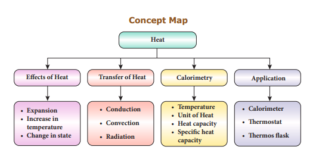
ICT CORNER
Heat
Through this activity you will learn about heat energy through Interactive games.
Step 1 Open the Browser and type the URL given below
Step 2 You can see lot of games about heat energy.
Step 3 For example, click “Heat Energy match it” game. You will see the match words in the screen. Play and learn about heat energy.
Step 4 Likewise you can explore all the games.
Browse in the link:
https://www.learninggamesforkids.com/heat-energy-games.html
After the completion of this lesson, students will be able to:
know about the basic properties of electric charges.
explain the transfer of charges between two objects.
understand the working of electroscope.
recognise the effects of electric current.
assemble different electric circuits.
list out the applications of electricity.
All things we use in our life are made up of elements. Each element is made up of atoms which is the smallest unit. John Dalton, the scientist considered that atoms cannot be divided further. But, it was found out later through Rutherford’s gold foil experiment that atoms are made up of particles like proton, electron and neutron. Movement of electrons in a material constitutes electric current and generates an energy called electric energy or electricity. We use this energy in our life for various needs. Electric bulbs, fans, elctric iron box, washing machines and refrigerators are some of the appliances which work with the help of electricity. In this lesson we will study about electric charges and how they are transferred. This lesson will also cover electric circuits and the effects of electric current.
An atom consists of proton, electron and neutron which are called sub-atomic particles. Proton and neutron are found inside the nucleus which is at the centre of an atom. Electrons revolve around the nucleus in different paths called orbits. In an atom, the number of protons and the number of electrons will be equal. There is a force of attraction between the protons in the nucleus and the electrons in the orbits. Electrons in the inner orbits are strongly attracted by the protons and they cannot be removed from the atom easily. But, the electrons in the outermost orbits are loosely bound and they can be easily removed from the atom.
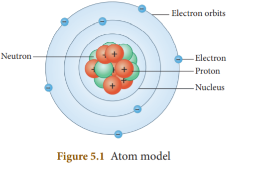
Charge or electric charge is the basic property of matter that causes objects to attract or repel each other. It is carried by the subatomic particles like protons and electrons. Charges can neither be created nor be destroyed. There are two types of charges: positive charge and negative charge. Protons carry positive charge and the electrons carry negative charge. There is a force of attraction or repulsion between the charges. Unlike charges attract each other and like charges repel each other.
Electric charge is measured in coulomb (C). Small amount of charge that can exist freely is called elementary charge (e). Its value is 1.602 into 10 power minus 19 C. This is the amount of charge possessed by each proton and electron. But, protons have positive elementary charge (plus e) and electrons have negative elementary charge (minus e). Since protons and electrons are equal in number, an atom is electrically neutral.
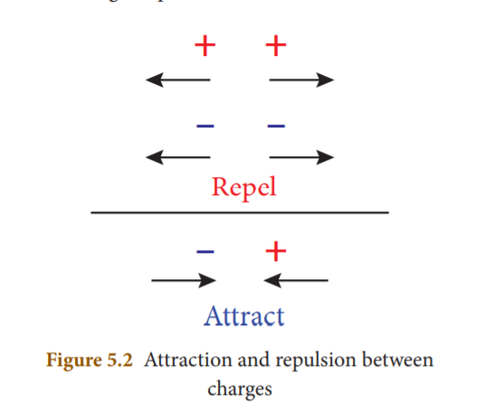
As we saw earlier, electrons (negative electric charges) in the outermost orbit of an atom can be easily removed. They can be transferred from one substance to another. The substance which gains electrons become negatively charged and the substance which looses electrons becomes positively charged. Transfer of charges takes place in the following ways.
Activity 1: Take a comb and place it near some pieces of paper. Are they attracted by the comb? No. Now comb your dry hair and place it near them. What do you see? You can see that the paper pieces are attracted by the comb now. How is it possible?
Comb rubbed with hair gains electrons from the hair and becomes negatively charged. These electrons are accumulated on the surface of the comb. When a piece of paper is teared into bits, positive and negative charges are present at the edges of the bits. Negative charges in the comb attract positive charges in the bits. So, the paper bits are moving towards the comb. While combing hair, charges are transferred from the hair to comb due to friction. If the hair is wet, the friction between the hair and the comb reduces which will reduce the number of electrons transferring from hair to comb. Hence, rubbing certain materials with one another can cause the build-up of electrical charges on the surfaces. From this it is clear that charges are transferred by friction.
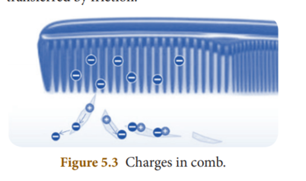
Do you know?
A neutral object can become positively charged when electrons get transferred to another object; not by receiving extra positive charges.
Similar effect can be seen when we rub few materials with one another. When a glass rod is rubbed with a silk cloth the free electrons in the glass rod are transferred to silk cloth. It is because the free electrons in the glass rod are less tightly bound as compared to that is in silk cloth. Since the glass rod looses electrons, it has a deficiency of electrons and hence acquires positive charge. But, the silk cloth has excess of electrons. So, it becomes negatively charged.
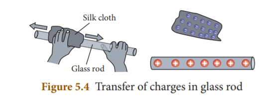
When an ebonite rod (rod made by vulcanized rubber) is rubbed with fur, the fur transfers electrons to the ebonite rod because the electrons in the outermost orbit of the atoms in fur are loosely bound as compared to the ebonite rod. The ebonite rod which has excess electrons becomes negatively charged and the fur which has deficiency of electrons is positively charged.
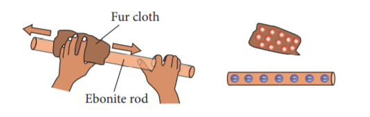
From these we know that when two materials are rubbed together, some electrons may be transferred from one material to the other, leaving them both with a net electric charge.
Do you know?
If a positively charged glass rod is brought near another glass rod, the rods will move apart as they repel each other. If a positively charged glass rod is brought close to a negatively charged ebonite rod, the rods will move toward each other as they attract. The force of attraction or repulsion is greater when the charged objects are closer.
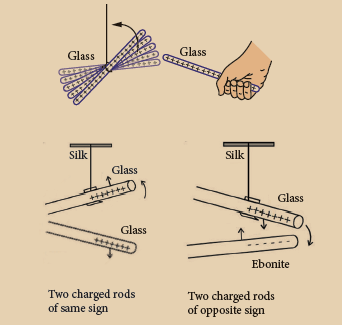
5 point 3 point 2 Transfer by Conduction
Activity 2: Take a sheet of paper. Turn it into a hollow cylinder. Tie one end of the cylinder with a silk thread and hang it from a stand. Now take an ebonite rod and charge it by rubbing it with a woollen cloth. Bring this charged ebonite rod near the paper cylinder. The cylinder will be attracted by the rod. If you touch the paper cylinder by the charged rod, you will see the paper cylinder repelling the rod. Can you say the reason?
When the ebonite rod is rubbed with woollen cloth, electrons from the woollen cloth are transferred to the ebonite rod. Now ebonite rod will be negatively charged. When it is brought near the paper cylinder, negative charges in the rod are attracted by the positive charges in the cylinder. When the cylinder is touched by the rod, some negative charges are transferred to the paper. Hence, the negative charges in the rod are repelled by the negative charges in the cylinder.
Thus, we can say that charges can be transferred to an object by bringing it in contact with a charged body. This method of transferring charges from one body to other body is called transfer by conduction.
Do you know?
The materials which allow electric charges to pass through them easily are called conductors of electricity. For example, metals like aluminium, copper are good conductors of electricity. Materials which do not allow electric charges to pass through them easily are called insulators. Rubber, wood and plastic are insulators.
We saw that we can charge an uncharged object when we touch it by a charged object. But, it is also possible to obtain charges in a body without any contact with other charged body. The process of charging an uncharged body by bringing a charged body near to it but without touching it is called induction. The uncharged body acquires an opposite charge at the near end and similar charge at the farther end.
Activity 3: Bring a negatively charged plastic rod near a neutral rod. When the negatively charged plastic rod is brought close to the neutral rod, the free electrons move away due to repulsion and start piling up at the farther end. The near end becomes positively charged due to deficit of electrons. When the neutral rod is grounded, the negative charges flow to the ground. The positive charges at the near end remain held due to attractive forces and the electrons inside the metal becomes zero. When the rod is removed from the ground, the positive charges continue to be held at the near end. This makes the neutral rod a positively charged rod.
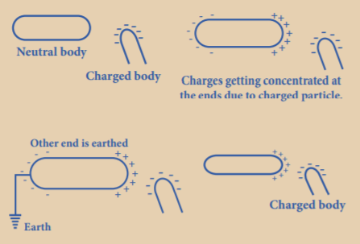
Similarly, when a positively charged rod is brought near an uncharged rod, negatively charged electrons are attracted towards it. As a result, there is excess of electrons at nearer end and deficiency of electrons at the farther end. The nearer end of the uncharged rod becomes negatively charged and far end is positively charged.
Suppose you have two metallic spheres; one having more negative charge (excess of electrons) and the other having more positive charge (deficiency of electrons). When you connect them both with the help of a metallic wire, excess electrons from the negatively charged sphere will start flowing towards the positively charged sphere. This flow continues till the number of electrons in both the sphere is equal. Here, the positively charged sphere is said to be at higher potential and the negatively charged sphere is said to be at lower potential. Hence, electrons flow from lower potential to higher potential. This is known electric current (flow of electrons). The difference between these potentials is known as potential difference, commonly known as voltage.
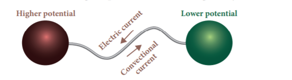
Before the discovery of electrons, it was considered that electric current is due to the flow of positive charges. Flow of positive charge is called conventional current. Conventional current flows from higher potential to lower potential.
An electroscope is a scientific instrument used to detect the presence of electric charge on a body. In the year 1600, British physician William Gilbert invented the first electroscope. It is the first electrical instrument. There are two types of electroscope: pith-ball electroscope and gold leaf electroscope. An electroscope is made out of conducting materials, generally metal. It works on the principle that like charges repel each other. In a simple electroscope two metal sheets are hung in contact with each other. They are connected to a metal rod that extends upwards, and ends in a knob at the end.
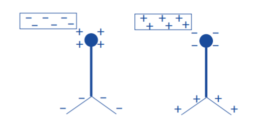
Do you know?
The first electroscope developed in 1600 by William Gilbert was called versorium. The versorium was simply a metal needle allowed to pivot freely on a pedestal. The metal would be attracted to charged bodies brought near.
If you bring a charged object near the knob, electrons will either move out of it or into it. This will result in charges accumulating on the metal leaves inside the electroscope. If a negatively charged object is brought near the top knob of the electroscope, it causes free electrons in the electroscope to move down into the leaves, leaving the top positive. Since both the leaves have negative charge, they repel each other and move apart. If a positive object is brought near the top knob of the electroscope, the free electrons in the electroscope start to move up towards the knob. This means that the bottom has a net positive charge. The leaves will spread apart again now.
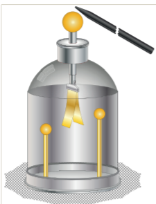
The gold-leaf electroscope was developed in 1787 by a British scientist named Abraham Bennet. Gold and silver are used in electroscope because they are the best conductors of electric current
Structure of Electroscope
It is made up of a glass jar. A vertical brass rod is inserted into the jar through a cork. The top of the brass rod has a horizontal brass rod or a brass disc. Two gold leaves are suspended from the brass rod inside the jar.
Working of Electroscope
When the brass disc of the electroscope is touched by a charged object, electric charge gets transferred to the gold leaf through the rod. This results in gold leaves moving away from each other. This happens because both the leaves have similar charges.
Charging
Transfer of charge from one object to another is called charging. In case of the gold leaves, charge is transferred through the brass rods.
Electrical discharge
The gold leaves resume their normal position after some time. This happens because they lose their charge. This process is called electrical discharge. The gold leaves would also be discharged when someone touches the brass rod with bare hands. In that case, the charge is transferred to the earth through the human body.
Activity 4: Rub your foot on a carpet floor and touch a door knob. What do you feel? Do you feel the shock in your hand? Why does this happen?
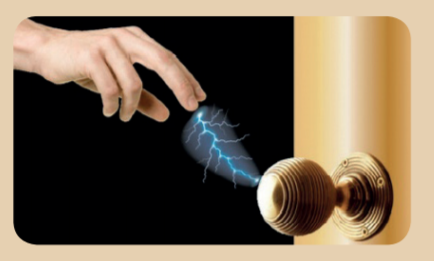
Getting a shock from a door knob after rubbing your foot on a carpet floor, results from discharge. Discharge occurs when electrons on the hand are quickly pulled to the positively charged doorknob. This movement of electrons, which is felt as a shock, causes the body to lose negative charge. Electric discharge takes place in a medium, mostly gases. Lightning is another example of discharge that takes place in clouds.
Lightning is produced by discharge of electricity from cloud to cloud or from cloud to ground. During thunderstorm air is moving upward rapidly. This air which moves rapidly, carries small ice crystals upward. At the same time, small water drops move downward. When they collide, ice crystals become positively charged and move upward and the water drops become negatively charged and move downward. So the upper part of the cloud is positively charged and the lower part of the cloud is negatively charged. When they come into contact, electrons in the water drops are attracted by the positive charges in the ice crystals. Thus, electricity is generated and lightning is seen.
Sometimes the lower part of the cloud which is negatively charged comes into contact with the positive charges accumulated near the mountains, trees and even people on the earth. This discharge produces lot of heat and sparks that results in what we see as lightning. Huge quantities of electricity are discharged in lightning flashes and temperatures of over 30,000°C or more can be reached. This extreme heating causes the air to expand explosively fast and then they contract. This expansion and contraction create a shock wave that turns into a booming sound wave, known as thunder.
Do you know?
Lightning's extreme heat will vaporize the water inside a tree, creating steam that may burn out the tree.
Sometimes lightning may be seen before the thunder is heard. This is because the distance between the clouds and the surface is very long and the speed of light is more than the speed of sound.
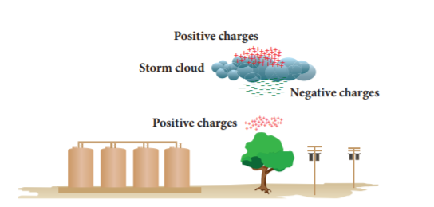
Do you know?
During lightning and thunder, we should avoid standing in ground or open spaces. You should make yourself as small as possible by squating. It is however safe to stay inside a car because the car acts as a shield and protects us from the electric field generated by the storm.
A safety measure devised to prevent people from getting shocked if the insulation inside electrical devices fails is called earthing. Electrical earthing can be defined as the process of transferring the discharge of electrical energy directly to the earth with the help of low resistance wire.
We get electrical energy from different sources. Battery is one such source. We use it in wall clocks, cell phones etc. For the working of refrigerators, air conditioners, washing machines, televisions, laptops and water heaters we use domestic power supply. Usually an electric appliance such as a heater, an iron box, etc. are fitted with three wires namely live, neutral and earth. The earth wire is connected to the metallic body of the appliance. This is done to avoid accidental shock.
Suppose due to some defect, the insulation of the live wire inside an electric iron is burnt then the live wire may touch the metallic body of the iron. If the earth wire is properly connected to the metallic body, current will pass into the earth through earth wire and it will protect us from electric shock. The earth, being a good conductor of electricity, acts as a convenient path for the flow of electric current that leaks out from the insulation.
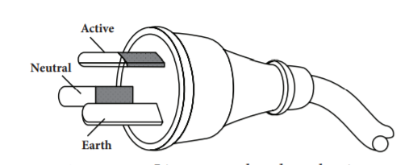
Lightning arrestor is a device used to protect buildings from the effects of lightning. Lightning conductor consists of a metallic lightning rod (in the form of spikes) that remains in air at the top of the building. Major portion of the metal rod and copper cable are installed in the walls during its construction. The other end of the rod is placed deep into the soil. When lightning falls, it is attracted by the metallic rods at the top of the building. The rod provides easy route for the transfer of electric charge to the ground. In the absence of lightning arrestors, lightning will fall on the building and the building will be damaged.
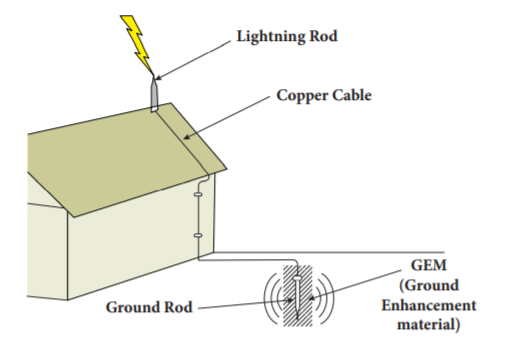
We saw that when two oppositely charged spheres are connected by a metal wire, electrons flow from the sphere which is at lower potential to the sphere at higher potential. Similarly, if two terminals of a battery which are at different potential are connected by a metallic wire, electrons will flow from negative terminal to positive terminal. The path through which electrons flow from one terminal to another terminal of the source, is called electric circuit.
A simple circuit consists of four elements: a source of electricity (battery), a path or conductor through which electricity flows (wire), a switch to control the circuit and an electrical resistor (lamp) which is any device that requires electricity to operate.
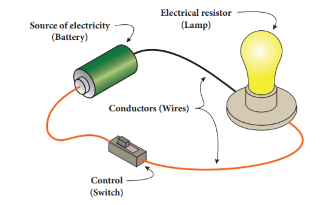
The above figure shows a simple circuit containing a battery, two wires, key and an electric bulb. The source can be a battery or the electric outlet in your room. The electrical resistor refers to the device that consumes the energy. Control (key) is the mechanism that is used to start, stop and regulate the electric current. When the key is on, electrons from the battery flow through the circuit from the negative terminal through the wire conductor, then through the bulb and finally back to the positive terminal. The light glows when current is flowing through its filament. There are two basic ways in which we can connect these components. They are: series and parallel.
Do you know?
The electric eel is a species of fish which can give electric shocks of upto six hundred fifty watts of electricity. But if the eel repeatedly shocks, its electric organs become completely discharged. Then a person can touch it without being shocked.
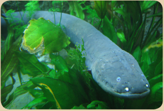
A series circuit is one that has more than one resistor (bulb) but only one path through which the electrons can travel. From one end of the battery the electrons move along one path with no branches through the resistors (bulbs) to the other end of the cell. All the components in a series circuit are connected end to end. So, current through the circuit remains same throughout the circuit. But, the voltage gets divided across the bulbs in the circuit. In the following series circuit two bulbs are used as resistors.
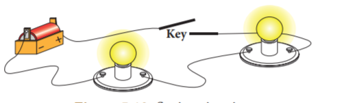
In this series circuit, charges (electrons) from the battery have only one path to travel. Here battery, key and two bulbs are connected in series. Charges flow from the battery to each bulb, one at a time, in the order they are wired to the circuit. If one bulb in the circuit is unscrewed, the current flow to another bulb would be interrupted. We put serial lights during festivals. If the lights are in a series circuit, one burned out bulb will keep all the lights off. If the number of bulbs in a circuit with a battery increases, the light will be dimmer because many resistors are acting on the same power from the battery.
We saw that in series circuit same current travels through every resistance and the voltage will be different across each resistance. Let us consider three bulbs connected in series. Let I be the current through the circuit and V one, V two, V three be the voltage across each bulb. The supply voltage V is the total of the individual voltage drops across the resistances (bulbs). V equal to V one plus V two plus V three
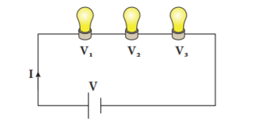
In a parallel circuit, there is more than one resistor (bulb) and they are arranged on many paths. This means charges (electrons) can travel from one end of the cell through many branches to the other end of the cell. Here, voltage across the resistors (bulbs) remains the same but the current flowing through the circuit gets divided across each resistor.
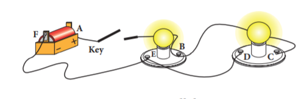
In the above diagram, current can flow in two paths: A B E F A and A B C D E F A. Here, it is clear that electricity from the cell can take either path A B E F A or path A B C D E F A to return to the cell. From the diagram you will notice that even when one resistor (bulb) burns out, the other bulbs will work because the electricity is not flowing through only one path. All the light bulbs in our homes are connected in parallel circuit. If one bulb burns out, the other bulbs in the rooms will still work. The bulbs in a parallel circuit do not dim out as in series circuits. This is because the voltage across one branch is the same as the voltage across all other branches.
Let us consider three bulbs connected in series. Let V be the voltage across the bulbs and I one, I two, I three be the current across each bulb. The current I from the battery is the total of the individual current flowing through the resistances (bulbs).
I equal to I one plus I two plus I three
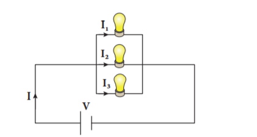
Table 5 point 1 Difference between series and parallel circuits
Series circuit |
Parallel circuit |
Same amount of current flows through all the components |
The current flowing through each component combines to form the current flow. |
Voltage is different across different components. |
Sum of the through each component will be the voltage drawn from the source. |
Components are arranged in a line. |
Components are arranged parallel to each other. |
If one component breaks down, the whole circuit will burn out. |
Other components will function even if one component breaks down |
When current is flowing through a conductor it produces certain effects. These are known as effects of electric current. These effects result in conversion of electrical energy into different forms of energies such as heat energy, mechanical energy, magnetic energy, chemical energy and so on.
Activity 5: Take two pieces of wire, an L E D light and a battery, and make a simple electric circuit. Take some water in a glass and put the wires in the water as shown in the figure. Does the L E D bulb glow? What do you understand from this?
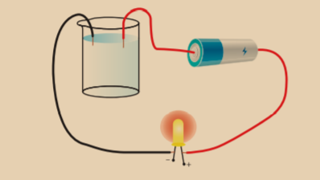
We know that electricity is conducted by metals. This activity shows that liquids also conduct electricity. When electric current is passed through a conducing solution, some chemical reactions take place in the solution. This chemical reactions produce electrons which conduct electricity. This is called chemical effect of electric current. The decomposition of molecules of a solution into positive and negative ions on passing an electric current through it, is called electrolysis. Electrolysis has a number of applications. It is used in extraction and purification of metals. The most general use of electrolyte is electroplating.
Electroplating
Electroplating is one of the most common applications of chemical effects of electric current. The process of depositing a layer of one metal over the surface of another metal by passing electric current in called electroplating.
Activity 6
Take a glass jar and fill it with copper sulphate solution. Take a copper metal plate and connect it to the positive terminal of battery. Connect an iron spoon to the negative terminal of the battery. Now, dip them in the copper sulphate solution. When electric current is passed through the copper sulphate solution, you will find that a thin layer of copper metal is deposited on the iron spoon and an equivalent amount of copper is lost by the copper plate.
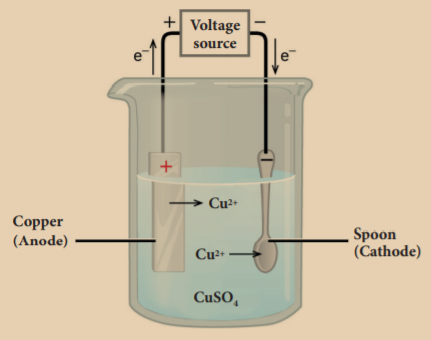
Electro plating is applied in many fields. We use iron in bridges and automobiles to provide strength. However, iron tends to corrode and rust. So, a coating of zinc is deposited on iron to protect it from corrosion and formation of rust. Chromium has a shiny appearance. It does not corrode. It resists scratches. But, chromium is expensive and it may not be economical to make the whole object out of chromium. So, the objects such as car parts, bath taps, kitchen gas burners, bicycle handlebars, wheel rims are made from a cheaper metal and only a coating of chromium is deposited over it.
Activity 7 Take a battery, a bulb, a switch and few connecting wires. Make an electric circuit as shown in the figure. Keep the switch in the ‘OFF’ position. Does the bulb glow? Now move the electric switch to the ‘ON’ position and let the bulb glow for a minute or so. Touch the bulb now. Do you feel the heat?
When electric current passes through a conductor, there is a considerable ‘friction’ between the moving electrons and the molecules of the conductor. During this process, electrical energy is transformed to heat energy. This is known as heating effect of electric current. The heat produced depends on the amount of resistance offered by the wire.
Copper wire offers very little resistance and does not get heated up quickly. On the other hand, thin wires of tungsten or nichrome which are used in bulbs offer high resistance and gets heated up quickly. This is the reason why tungsten wire is used in the filaments of the bulbs and nichrome wire is used as a heating element in household heating appliances. Heating effect of electric current can be seen in many devices. Some of them are given below.
Fuse
Fuse is a strip of alloy wire which is made up of lead and tin with a very low melting point. This can be connected to the circuit. The fuse is usually designed to take specific amount of current. When current passing through the wire exceeds the maximum limit, it gets heated up. Due to low melting point it melts quickly disconnecting the circuit. This prevents damage to the appliances.
Electric cookers
Electric cookers turn red hot when electric current is passed through the coil. The heat energy produced is absorbed by the cooking pot through conduction.
Electric kettles
The heating element is placed at the bottom of the kettle which contains water. The heat is then absorbed by the liquid and distributed throughout the liquid by convection.
Electric irons
When current flows through the heating element, the heat energy developed is conducted to the heavy metal base, raising its temperature. This energy is then used to press clothes.

1. When an ebonite rod is rubbed with fur, the charge acquired by the fur is
a) negative
b) positive
c) partly positive and partly negative
d) None of these
2. The electrification of two different bodies on rubbing is because of the transfer of
a) neutrons
b) protons
c) electrons
d) protons and neutrons
3. Which of the following a simple circuit must have?
a) Energy source, Battery, Load
b) Energy source, Wire, Load
c) Energy source, Wire, Switch
d) Battery, Wire, Switch
4. An electroscope has been charged by induction with the help of charged glassrod. The charge on the electroscope is
a) negative
b) positive
c) both positive and negative
d) None of the above
5. Fuse is
a) a switch
b) a wire with low resistance
c) a wire with high resistance
d) a protective device for breaking an electric circuit
1. dash takes place by rubbing objects together.
2. The body which has lost electrons becomes dash.
3. dash is a device that protects building from lightning strike.
4. dash has a thin metallic filament that melts and breaks the connection when the circuit is overheated.
5. Three bulbs are connected end to end from the battery. This connection is called dash.
3. State true or false. If false, correct the statement.
1. The charge acquired by an ebonite rod rubbed with a piece of flannel is negative
2. A charged body induces an opposite charge on an uncharged body when they are brought near.
3. Electroscope is a device used to charge a body by induction.
4. Water can conduct electricity.
5. In parallel circuit, current remains the same in all components.
Two similar charges |
acquires a positive charge |
Two dissimilar charges |
prevents a circuit from overheatinge |
When glass rod is rubbed with silk |
repel each other |
When ebonite rod is rubbed with fur |
attract each other |
Fuse |
acquires a negative Charge |
1. When a glass rod is rubbed with silk cloth both get charged.
2. When a comb is rubbed with dry hair it attracts small bits of paper.
3. When you touch the metal disc of an electroscope with a charged glass rod the metal leaves get diverged.
4. In an electroscope the connecting rod and the leaves are all metals.
5. One should not use an umbrella while crossing an open field during thunderstorm.
1. Assertion: People struck by lightning receive a severe electrical shock.
Reason: Lightning carries very high voltage.
2. Assertion: It is safer to stand under a tall tree during lightning.
Reason: It will make you the target for lightning.
a) Both assertion and reason are true and reason is the correct explanation of assertion.
b) Both assertion and reason are true and reason is not the correct explanation of assertion.
c) Assertion is true but reason is false.
d) Assertion is false but reason is true.
1. How charges are produced by friction?
2. What is earthing?
3. What is electric circuit?
4. What is electroplating?
5. Give some uses of electroplating.
1. Explain three ways of charge transfer.
2. What is electroscope? Explain how it works.
3. Explain series and parallel circuit.
4. How lightning takes place?
5. What is electroplating? Explain how it is done.
1. Concept of physics - HC Verma
2. A Text-Book on Static Electricity – Hobart Mason
3. Fun With Static Electricity - Joy Cowley
4. Frank New Certificate Physics. McMillan Publishers.
1. http://sciencenetlinks.com/lessons/staticelectricity-2/
2. https://www.stem.org.uk/resources/ community/collection/13389/static-electricity
3. https://www.physicsclassroom.com/class/ estatics

I C T CORNER
Electricity
Through this activity you will learn the usage of electricity through Interactive games.
Step 1 Open the Browser and type the URL given below
Step 2 You will see lot of games which is related to Electricity
Step 3 Click the Electricity circuits activity (First activity), you will see the sub topics, like Electricity in home, Introduction to circuits etc...
Step 4 Select the sub topic and play the game. Likewise play all the games.
Browse in the link: http://interactivesites.weebly.com/electricity-and-energy.html *Pictures are indicative only

After the completion of this lesson, students will be able to:

We hear variety of sounds in our daily life. Thundering of clouds, chirping of birds, mewing of cats, rustling of leaves, music on the radio and television and noise of vehicles are some of the sounds that all of us are familiar with. Each sound has particular characteristics. Sound enables us to communicate with each other. Animals also communicate with other members of their species with the help of sound. Some sounds like music are pleasing to us and we like to hear them. But some sounds, for example noise in our surrounding is undesired. In this lesson we will study about the production and propagation of sound, human voice system, hearing, noise pollution and the ways to control it.
Sound is produced when an object is set to vibrate. Vibration means a kind of rapid to and fro motion of a particle. This to and fro motion of the particle causes the substances around it to vibrate. Thus sound spreads to the surroundings. The substance through which sound is transmitted is called medium. Sound moves through a medium from the point of generation to the listener. We can understand the production of sound with the help of some activities.
Activity 1 Take the tray of an empty match box and stretch a rubber band around it, along its length. Then, pluck the stretched rubber band with your index finger. What do you observe? Do you hear any sound?

On plucking the rubber band, it starts vibrating. You can hear a feeble humming sound as long as the rubber band is vibrating. The humming sound stops as soon as the rubber band stops vibrating. This confirms that sound is produced by vibrating particles. You can see this kind of vibrations in stringed musical instruments, such as guitar and sitar also.
Activity 2
Take a metal shallow pan. Hang it at a convenient place in such a way that it does not touch anything. Now, strike it with a stick. Touch the pan gently with your index finger. Do you feel the vibrations? Again, strike the pan with the stick and hold it tightly with your hands, immediately after striking. Do you still hear the sound?

This activity shows that vibrating pan produces sound. In this case vibrations can be felt by touching the pan. But in some cases vibrations are visible.
Activity 3 Take a metal dish, pour some water in it. Strike it at its edge with a spoon. Do you hear any sound? Again strike the dish and touch it. Can you feel the dish vibrating? Look at the surface of water. Do you see any movement on the water surface? Now, hold the dish with your hands. What change do you observe on the surface of the water?

The above activities show that sound is produced when an object is set to vibrate. The sound produced by vibration is propagated from one location to another. When it reaches our ear we hear the sound.
When you call your friend, who is standing at a distance, your friend is able to hear your voice. How your friend is able to hear your voice? He is able to hear because your sound travels from one place to another. As we saw earlier sound is a form of energy and it needs a medium to travel. This can be understood from the activity given below.
Activity 4 Take a bell jar and a mobile phone. Switch on the music in the mobile phone and place it in the jar. Now, pump out the air from the bell jar using a vacuum pump. As more and more air is removed from the jar, the sound from the mobile phone becomes feebler and finally, very faint.

It is clear from this experiment that sound cannot travel in vacuum and it needs a medium like air. Sound travels in water and solids also. The speed of sound is more in solids than in liquids and it is very less in gases.
Do you know?
Thomas Alva Edison, in 1877 invented the phonograph, a device that played the recorded sound.
Activity 5 Take two stones and strike them together and listen to the sound produced by them. Now take the stones underwater and strike them. You will find that the sound produced by the stones underwater is feeble and not very clear.
The speed of sound is the distance travelled by sound in one second. It is denoted by ‘v’. It is represented by the expression, v equal to n Lamda, where ‘n’ is the frequency and ‘Lamda’ is the wavelength.
More to know
Wavelength is the distance between two consecutive particles, which are in the same phase of vibration. It is denoted by the Greek letter ‘lambda’. The unit of wavelength is metre (m).
Frequency is the number of vibrations of a particle in the medium, in one second. It is denoted by ‘n’. The unit of frequency is hertz (Hertz).
Problem 1
A sound has a frequency of 50 Hertz and a wavelength of 10 m. What is the speed of the sound?
Solution
Given, n equal to 50 Hertz, Lamda equal to 10 m
v equal to n lambda
v equal to 50 into 10
v equal to 500 m s power minus 1
Problem 2
A sound has a frequency of 5 Hertz and a speed of 25 m s power minus 1. What is the wavelength of the sound?
Solution
Given, n equal to 5 Hertz, v equal to 25 m s power minus 1
v equal to n Lamda
Lamda equal to v by n equal to 25 by 5 equal to 5 m
The speed of sound depends on the properties of the medium through which it travels, like temperature, pressure and humidity. In any medium, as the temperature increases the speed of sound also increases. For example, the speed of sound in air is 331 m s power minus 1 at 0 degree Celsius and 344 m s power minus 1 at 22 degree Celsius. The speed of sound at a particular temperature in various medium are listed in Table 6 point 1.
Table 6 point 1 Speed of sound in different medium at 25 degree Celsius
State |
Substance |
Speed (m s power minus 1 ) |
Solids |
Aluminum |
6420 |
|
Steel |
5960 |
|
Iron |
5950 |
Liquid |
Sea Water |
1530 |
|
Distilled Water |
1498 |
Gases |
Hydrogen |
1284 |
|
Oxygen |
316 |
More to know
The amount of water vapour present in the air is known as humidity. It is less during winter and more during summer. The speed of sound increases with increase in humidity. This is because the density of air decreases with increase in humidity.
We saw that sound travels in different medium with different speed. Now let us see how it travels in a medium. When a body vibrates, the particle of the medium in contact with the vibrating body is first displaced from its equilibrium position. It then exerts a force on the adjacent particle. This process continues in the medium till the sound reaches the ear of the person.
In order to understand this let us consider a vibrating tuning fork. When a vibrating tuning fork moves forward, it pushes and compresses the air in front of it, creating a region of high pressure. This region is called a compression (C), as shown in Figure 6.1. When it moves backward, it creates a region of low pressure called rarefaction (R). These compressions and rarefactions produce the sound wave, which propagates through the medium.

Activity 6 Throw a stone into a pool of still water. It produces waves, which spread rapidly over the surface of water and they travel in all directions. Do water particles move away from the point of disturbance? Check it by placing grains of saw dust over the water. They do not move away. Instead they merely move up and down about their mean position. Similarly, sound travels in the form of a wave.
Sound is a form of energy. It is transferred through the air or any other medium, in the form of mechanical waves. Mechanical wave is a disturbance, which propagates in a medium due to the repeated periodic motion of the particles of the medium, from their mean position. The disturbance which is caused by the vibrations of the particles is passed over to the next particle. It means that the energy is transferred from one particle to another as a wave motion.
1. In wave motion, only the energy is transferred not the particles.
2. The velocity of the wave motion is different from the velocity of the vibrating particle.
3. For the propagation of a mechanical wave, the medium must possess the properties of inertia, elasticity, uniform density and minimum friction among the particles.
Do you know?
How do astronauts communicate with each other? The astronauts have devices in their helmets which transfer the sound waves from their voices into radio waves and transmit it to the ground (or other astronauts in space). This is exactly the same as how radio at your home works.
There are two types of mechanical wave. They are
1. Transverse wave
2. Longitudinal wave
Transverse wave
In a transverse wave the particles of the medium vibrate in a direction, which is perpendicular to the direction of propagation of the wave. Example Waves in strings, light waves etc. Transverse waves are produced only in solids and liquids

Longitudinal wave
In a longitudinal wave the particles of the medium vibrate in a direction, which is parallel to the direction of propagation of the wave. Example Waves in springs, sound waves in a medium. Longitudinal waves are produced in solids, liquids and also in gases.

Do you know?
The seismic wave formed during earthquake is an example for a longitudinal wave. Waves travelling through the layers of the Earth due to explosions, earthquakes and volcanic explosions are called seismic waves. Using a hydrophone and seismometer one can study these waves and record them. Seismology is the branch of science that deals with the study of seismic waves.
All sounds that we hear are not the same. There are some properties that differentiate one kind of sound from another. We will study about these properties now.
It is defined as the characteristic of a sound that enables us to distinguish a weak or feeble sound from a loud sound. The loudness of a sound depends on its amplitude. Higher the amplitude louder will be the sound and vice versa. When a drum is softly beaten, a weak sound is produced. However, when it is beaten strongly, a loud sound is produced. The unit of loudness of sound is decibel (d B).
More to know
Amplitude is the maximum displacement of a vibrating particle from its mean position. It is denoted by ‘A’. The unit of amplitude is ‘metre’ (m).
The pitch is the characteristic of sound that enables us to distinguish between a flat sound and a shrill sound. Higher the frequency of sound, higher will be the pitch. High pitch adds shrillness to a sound. The sound produced by a whistle, a bell, a flute and a violin are high pitch sounds.
Normally, the voice of a female has a higher pitch than a male. That is why a female’s voice is shriller than a male’s voice. Some examples of low pitch sound are the roar of a lion and the beating of a drum.
The quality or timbre is the characteristic of sound that enables us to distinguish between two sounds that have the same pitch and amplitude. For example, in an orchestra, the sounds produced by some musical instruments may have the same pitch and loudness. Yet, you can distinctly identify the sound produced by each instrument.
According to the frequency we can classify the sounds into three types. They are:
Audible sound
Sound with frequency, ranging from 20 Hertz to 20000 Hertz is called sonic sound or audible sound. Sound with this frequency range alone can be heard by the human beings. Human ears cannot hear sounds with frequencies below 20 Hertz or above 20000 Hertz. So, the above range is called as audible range of sound.
Infrasonic sound
A sound with a frequency, below 20 Hertz is called as subsonic or infrasonic sound. Humans cannot hear the sound of this frequency, but some animals like dog, dolphin, etc., can hear. Uses of infrasonic sound are:
Ultrasonic sound
A sound with a frequency greater than 20000 Hertz is called as ultrasonic sound. Animals such as bats, dogs, dolphins, etc., are able to hear certain ultrasonic sounds as well. Some of the uses of ultrasonic sounds are:
Do you know?
A bat can hear the sounds of frequencies higher than 20,000Hertz. Bats produce ultrasonic sound during screaming. These ultrasonic waves help them to locate their way and the prey.
Some sounds are pleasing to the ear and make us happy. The sound that provides a pleasing sensation to the ear is called ‘music’. Music is produced by the regular patterns of vibrations. Musical instruments are categorized into four types as given below.
Wind instruments
In a wind instrument the sound is produced by the vibration of air in a hollow tube. The frequency is varied by changing the length of the vibrating air column. Trumpet, Flute, Shehnai and Saxophone are some well-known wind instruments.
Reed instruments
A reed instrument contains a reed. Air, which is blown through the instrument, causes the reed to vibrate, which in turn produces the specific sound. Examples of reed instruments include Harmonium and Mouth Organ.
Stringed instruments
Stringed instruments make use of a string or wire to produce vibrations and hence the specific sound. These instruments also have hollow boxes that amplify the sound that is produced. The frequency of sound is varied by varying the length of the vibrating wire. Violin, Guitar, Sitar are some of the examples of stringed instruments.
A guitar string has a number of frequencies at which it will naturally vibrate. These natural frequencies are known as the harmonics of the guitar string. The natural frequency, at which an object vibrates, depends upon the tension of the string, the linear density of the string and the length of the string.
Percussion instruments
Percussion instruments produce a specific sound when they are struck, scrapped or clashed together. They are the oldest type of musical instruments. There is an amazing variety of percussion instruments all over the world. Percussion instruments like the drum and tabla consist of a leather membrane, which is stretched across a hollow box called the resonator. When a membrane is hit, it starts vibrating and produces the sound.


In human being, the sound is produced in the voice box, called the larynx, which is present in the throat. It is located at the upper end of the windpipe. The larynx has two ligaments called ‘vocal cords’, stretched across it. The vocal cords have a narrow slit through which air is blown in and out. When a person speaks, the air from the lungs is pushed up through the trachea to the larynx. When this air passes through the slit, the vocal cords begin to vibrate and produce a sound. By varying the thickness of the vocal cords, the length of the air column in the slit can be changed. This produce sounds of different pitches. Males generally have thicker and longer vocal cords that produce a deeper, low pitch sound in comparison with females.

Ear is the important organ for all animals to hear a sound. We are able to hear sound through our ears. Human ear picks up and interprets high frequency vibrations of air. Ears of aquatic animals are designed to pick up high frequency vibrations in water. The outer and visible part of the human ear is called pinna (curved in shape). It is specially designed to gather sound from the environment, which then reaches the ear drum (tympanic membrane) through the ear canal. When the sound wave strikes the drum, the ossicles move inward and outward to create the vibrations. These vibrations are then picked up by special types of cells in the inner ear. From the inner ear the vibrations are sent to the brain in the form of signals. The brain perceives these signals as sounds.


Any sound that is unpleasant to the ear is called noise. It is the unwanted, irritating and louder sound. Noise is produced by the irregular and non-periodic vibrations. Noise gives us stress. The disturbance produced in the environment by loud and harsh sounds from various sources is known as noise pollution. Busy roads, airplanes, electrical appliances such as mixer grinder, washing machine and un-tuned radio cause noise pollution. Use of loudspeakers and crackers during the festivals also contributes to the noise pollution. The major source of noise pollution is from the industries. Noise pollution is the bi-product of industrialisation, urbanisation and modern civilisation.
Noise creates some health hazards. Some of them are listed below.

Noise may cause irritation, stress,nervousness and headache.
We studied about the harmful effects of noise pollution. It becomes necessary for us to reduce it. Noise pollution can be significantly reduced by adopting the following steps.
You may have hearing loss without realising it. The following are the symptoms of hearing loss.
Hearing loss is caused by various reasons. Some of them are listed below.
Amplitude - The measure of a sound waves.
Pitch - How high or low a sound is. It is determined by the frequency of the vibration.
Sonic Boom - A shock wave that consists of compressed sound waves created when something moves faster than the speed of sound.
Sound Wave - Moving pattern of high and low pressure or vibrations.
Speed of Sound - How fast sound moves through an object.
Vibration - Back and forth motion.
Wavelength - The length between the compressions in a sound wave.
1. Choose the best answer.
1. Sound waves travel very fast in
a) air
b) metals
c) vacuum
d) liquids
2. Which of the following are the characteristics of vibrations?
a) 1 and 2
b) 2 and 3
c) 3 and 4
d) 1 and 4
3. The amplitude of the sound wave decides its
a) speed
b) pitch
c) loudness
d) frequency
4. What kind of musical instrument is a sitar?
a) String instrument
b) Percussion instrument
c) Wind instrument
d) None of these
5. Find the odd one out.
a) Harmonium
b) Flute
c) Nadaswaram
d) Violin
6. Noise is produced by
a) vibrations with high frequency.
b) regular vibrations.
c) regular and periodic vibrations.
d) irregular and non-periodic vibrations.
7. The range of audible frequency for the human ear is
a) 2 Hertz to 2000 Hertz
b) 20 Hertz to 2000 Hertz
c) 20 Hertz to 20000 Hertz
d) 200 Hertz to 20000 Hertz
8. If the amplitude and frequency of a sound wave are increased, which of the following is true?
a) Loudness increases and pitch is higher.
b) Loudness increases and pitch is unchanged.
c) Loudness increases and pitch is lower.
d) Loudness decreases and pitch is lower.
9. Which of the following may be caused by noise?
a) Irritation
b) Stress
c) Nervousness
d) All the above
1. Sound is produced by dash.
2. The vibrations of a simple pendulum are also known as dash.
3. Sound travels in the form of dash.
4. High frequency sounds that cannot be heard by you are called dash.
5. Pitch of a sound depends on the dash vibration.
6. If the thickness of a vibrating string is increased, its pitch dash.
Ultrasonics |
Frequency below 20 Hertz |
Speed of sound in air |
Needs material medium |
Infrasonics |
330 m s power minus 1 |
Sound propagation |
Frequency more than 20000 Hertz. |
1. Assertion: When lightning strikes, the sound is heard a little after the flash is seen.
Reason: The velocity of light is greater than that of the sound.
2. Assertion: Two persons on the surface of moon cannot talk to each other.
Reason: There is no atmosphere on moon.
A. Both assertion and reason are true and reason is the correct explanation of assertion.
B. Both assertion and reason are true but reason is not the correct explanation of assertion.
C. Assertion is true but reason is false.
D. Assertion is false but reason is true.
E. Both Assertion and reason are false.
1. What is vibration?
2. Give an example to show that light travels faster than sound?
3. To increase loudness of sound by four times, how much should the amplitude of vibration be changed?
4. What is an ultrasonic sound?
5. Give two differences between music and noise.
6. What are the hazards of noise pollution?
7. Mention few measures to be taken to reduce the effect of noise pollution.
8. Define the following terms.
a. Amplitude b. Loudness
9. How does planting trees help in reducing noise pollution?
1. Describe an experiment to show that sound cannot travel through vaccum.
2. What are the properties of sound?
3. What steps should be taken to reduce the effect of noise pollution?
4. Describe the structure and function of the human ear?
1. Ruthvik and Ruha hear a gunshot 2 second after it is fired. How far away from the gun they are standing? (Speed of sound in air is equal to 330m s power minus 1 )
2. A sound wave travels 2000 m in 8 s. What is the velocity of the sound?
3. A wave with a frequency of 500 Hertz is traveling at a speed of 200 m s power minus 1. What is the wavelength?
1. The everyday physics of hearing and vision by Bejamin de Mayo
2. Vibration and Waves by Anthony French
1. www.pbslearningmedia.org
2. www.scholastic.com
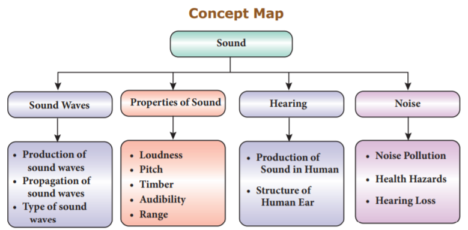
I C T Corner
Sound
Make simple science toys from trash and enjoy the sounds so produced.
Step 1 Open the browser and type the URL or scan the QR code given below.
Step 2 Toys from Trash page will open. Simple science toys will appear under the heading ‘Simple Sounds’.
Step 3 Click on the Icons to learn the step by step procedure for making simple sounds toys. Enjoy making and playing with various sound producing toys.
Web URL: http://www.arvindguptatoys.com/simple-sounds.php
*Pictures are indicatives only. *If browser requires, allow Flash Player or Java Script to load the page
After the completion of this lesson, students will be able to:

Magnets are objects of stone, metal or other material which have the property of attracting metals like iron, cobalt and nickel. The attracting property of a magnet is called magnetism and it is either natural or induced. The branch of physics which deals with the property of a magnet is also called magnetism. The earliest evidence for magnets is found in a region of Asia Minor called Magnesia. It is believed that the Chinese had known the property of magnet even before 200 B.C. They used a magnetic compass for navigation in 1200 A.D. Use of magnets in compasses facilitated long-distance sailing. After the discovery of magnets, the world progressed into a new direction. Today magnets play an important role in our lives. Magnets are used in refrigerators, computers, car engines, elevators and many other devices. In this lesson we will study about the types, properties and uses of magnets.
Magnets are classified into two types. They are natural magnets and artificial magnets.
Natural Magnets
Magnets found in the nature are called natural magnets. They are permanent magnets i.e., they will never lose their magnetic power. These magnets are found in different places of the earth in the sandy deposits. Lodestone called magnetite (Iron oxide) which is the ore of iron is the strongest natural magnet. Minerals like Pyrrhotite (Iron Sulphide), Ferrite and Coulum bite are also natural magnets.

Do you know?
There are three types of iron ores. They are: Hematite (69 percentage of Iron), Magnetite (72.4 percentage of Iron) and Siderite (48.2 percentage of Iron). Magnetite is an oxide ore of iron with the formula F e 3 O 4. Among these ores, magnetite has more magnetic property.
Artificial Magnets
Magnets that are made by people in the laboratory or factory are called artificial magnets. These are also known as manmade magnets, which are stronger than the natural magnets. Artificial magnets can be made in various shapes and dimensions. Bar magnets, U-shaped magnets, horseshoe magnets, cylindrical magnets, disc magnets, ring magnets and electromagnets are some examples of artificial magnets. Artificial magnets are usually made up of iron, nickel, cobalt, steel, etc. Alloy of the metals Neodynium and Samarium are also used to make artificial magnets.

Table 7 point 1 Difference between natural and artificial magnets
Natural Magnets |
Artificial Magnets |
These are found in nature and have irregular shapes and dimensions. |
These are man-made magnets. They can be made in different shapes and dimensions. |
The strength of a natural magnet is well determined and difficult to change. |
Artificial magnets can be made with required and specific strength. |
These are long lasting magnets |
Their properties are time bound. |
They have a less usage. |
They have a vast usage in day to day life. |
Know Your Scientist
William Gilbert laid the foundation for magnetism and suggested that the Earth has a giant bar magnet. William Gilbert was born on 24th May 1544. He was the first man who performed the systematic research on the properties of the lodestone (magnetic iron ore) and published his findings in the influential ‘De Magnete’ (The Magnet).

The properties of a magnet can be explained under the following headings.
A magnet always attracts materials like iron, cobalt and nickel. To understand the attractive property of a magnet let us do an experiment.
Activity 1 Take some iron filings in a paper and place a magnet near them. Do you see the iron filings being attracted by the magnet? In which part of the magnet they are attracted?

You can observe here that the iron filings are attracted near the ends of the magnet. These ends are called poles of a magnet. This shows that the attractive property of a magnet is more at the poles. One pole of the magnet is called the North Pole and the other pole is called the South Pole. Magnetic poles always exist in pairs.
What happens when a bar magnet is broken into two pieces? Each broken piece behaves like a separate bar magnet. When a magnet is split vertically, the length of the magnet is altered and each piece acts as a magnet. When a magnet is split horizontally, the length of the new pieces of magnet remains unaltered and there is no change in their polarity. In both cases the strength of the magnet is reduced.

Activity 2 Take a bar magnet and suspend it from a support. Hold another bar magnet in your hand. Bring the north pole of this magnet close to the north pole of the suspended magnet. What do you see? The north pole of the suspended magnet will move away.

This activity explains another property of a magnet that like poles repel each other i.e., a north pole repels another north pole and a south pole repels another south pole. If you bring the south pole of the magnet close to the north pole of the suspended magnet you can see that the south pole of the suspended magnet is immediately attracted. Thus, we can conclude that unlike poles of a magnet attract each other. i.e., the north pole and the south pole of a magnet attract each other.
Activity 3 Suspend a bar magnet from a rigid support using a thread. Ensure that there are no magnetic substances placed near it. Gently disturb the suspended magnet. Wait for a moment, let it oscillate. In a short time it will come to rest. You can see that the north pole of the magnet is directed towards the geographic north. Repeat the procedure a number of times. You will observe that the magnet is oriented in the same direction.

This experiment shows that a freely suspended bar magnet always aligns itself in the geographic north-south direction. The property of a magnet, by which it aligns itself along the geographic north-south direction, when it is freely suspended, is known as the directive property of a magnet. The north pole of the magnet points towards the geographic north direction and the south pole of the magnet points towards the geographic south direction.
Activity 4 Spread some iron filings collected from the sand uniformly on a sheet of white paper placed on a table. Place a bar magnet below the white sheet. Gently tap the table. What do you see? You can see the pattern as shown in the figure.

You can observe from this experiment that the iron filings are arranged in the form of curved patterns around the magnet. The space around the bar magnet where the arrangement of iron filings exists, represents the field of influence of the bar magnet. It is called the magnetic field. Magnetic field is defined as the space around a magnet in which its magnetic effect or influence is observed. It is measured by the unit tesla or gauss (1 tesla equal to 10,000 gauss).
We can trace the magnetic field with the help of a compass needle. A white sheet of paper is fastened on the drawing board using the board pins or cello tape. A small plotting compass needle is placed near the edge of the paper and the board is rotated until the edge of the paper is parallel to the magnetic needle. The compass needle is then placed at the centre of the paper and the ends of the needle, i.e., the new positions of the north and south pole are marked when the needle comes to rest. These points are joined and a straight line is obtained. This line represents the magnetic meridian. Cardinal directions North-East-South-West are drawn near the corner of the paper.
The bar magnet is placed on the line at the centre of the paper with its north pole facing the geographic north. The outline of the bar magnet is drawn. The plotting compass is placed near the North Pole of the bar magnet and the end of the needle (north pole) is marked. Now the compass is moved to a new position, such that its south pole occupies the position previously occupied by its north pole. In this way it is proceeded step by step till the compass is placed near the south pole of the magnet. Deflecting points are marked. A curved line is then drawn by joining the plotted points marked around the magnet. This represents the magnetic line of force. In the same way several magnetic lines of force are drawn around the magnet as shown in the Figure 7 point 4. These curved lines around the bar magnet represent the magnetic field of the magnet. The direction of the lines is shown by the arrow heads.

We can observe here that the compass needle gets deflected to a large extent, when it is closer to the magnet. When the distance is large, the deflection of the needle is gradually decreased. At one particular position there is no deflection because there is no magnetic force at this position. This shows that each magnet exhibits its magnetic influence around a specific region.
Do you know?
A compass needle, also known as plotting compass or magnetic needle, consists of a tiny pivoted magnet in the form of a pointer, which can rotate freely in the horizontal plane. The ends of the compass needle point approximately towards the geographic north and south direction.

Activity 5 Spread some iron pins, stapler pins, iron nails, small pieces of paper, a scale, an eraser and a plastic cloth hanger on a wooden table. Place a magnet nearby these materials. What do you observe? List out which of these things are attracted by the magnet? Which objects are not attracted? Tabulate your observations.
Materials which are attracted by magnets are called magnetic materials and those materials which are not attracted by magnets are called non-magnetic materials. There are a number of materials that can be attracted by magnets. These can be magnetised to create permanent magnets. Magnetic materials can be categorised as magnetically hard or magnetically soft materials. Magnetically soft materials are easily magnetised. Magnetically hard materials also can be magnetised but they require a strong magnetic field to be magnetised. It is because materials have different atomic structure and they behave differently when they are placed in a magnetic field. Based on their behaviour in a magnetic field they can be classified as below.
Diamagnetic materials have the following characteristics.
The following are the characteristics of paramagnetic materials.
More to know
The temperature, at which the ferromagnetic material becomes paramagnetic is called the curie temperature.
Artificial magnets are produced from magnetic materials. These are generally made by magnetizing iron or steel alloys electrically. These magnets are also produced by striking a magnetic material with magnetite or with other artificial magnets. Depending on their ability to retain their magnetic property, artificial magnets are classified as permanent magnets or temporary magnets.
Temporary magnets are produced with the help of an external magnetic field. They lose their magnetic property as soon as the external magnetic field is removed. They are made from soft iron. Soft iron behaves as a magnet under the influence of an external magnetic field produced in a coil of wire carrying a current. But, it loses the magnetic properties as soon as the current is stopped in the circuit. Magnets used in electric bells and cranes are the examples of temporary magnets.
Activity 6 Spread some steel pins on a wooden board and bring an iron nail near them. Are they attracted? Now, make one of the magnetic poles of the bar magnet touch one end of the iron nail. Slide it along its length in one direction slowly till the other end is reached. Repeat the process 20 to 30 times as shown in the diagram. The magnet has to be moved in one direction only. Avoid the swiping of the magnet back and forth. Now, bring the iron nail near the steel pins. What do you notice? The steel pins stick to the iron nail because nail has become a temporary magnet.

Do you know?
Magnetisation is a process in which a substance is made a permanent or temporary magnet by exposing it to an external magnetic field. This is one of the methods to produce artificial magnets.
Permanent magnets are artificial magnets that retain their magnetic property even in the absence of an external magnetic field. These magnets are produced from substances like hardened steel and some alloys. The most commonly used permanent magnets are made of ALNICO (An alloy of aluminium, nickel and cobalt). Magnets used in refrigerators, speakers, fridge and magnetic compass are some familiar examples of a permanent magnet. Neodymium magnets are the strongest and the most powerful magnets on the Earth.
Do you know?
Alnico cow magnet is used to attract sharp iron wire and other iron objects that may be ingested by animals while grazing thereby causing damage to their digestive tract.
The magnetic properties of a magnet will be removed from it by the following ways.

Earth has been assumed or imagined by the scientists as a huge magnetic dipole. However, the position of the Earth’s magnetic poles is not well defined in the Earth. The south pole of the imaginary magnet inside the Earth is located near the geographic north pole and the north pole of the earth’s magnet is located near the geographic south pole. The line joining these magnetic poles is called the magnetic axis.
The magnetic axis intersects the geographic north pole at a point called the north geomagnetic pole or northern magnetic pole. It intersects the geographic south pole at a point called the south geomagnetic pole or southern magnetic pole. The magnetic axis and the geographical axis (axis of rotation) do not coincide with each other. The magnetic axis of the Earth is inclined at an angle of about 10° to 15° with the geographical axis.
Do you know?
The most powerful magnet in the universe is actually a neutron star called magnetar (magnetic neutron star) located in the Milky Way Galaxy. The diameter of the magnetar is 20 kilometer and its mass is 2 to 3 times that of the Sun. Its magnetic field is so enormous and lethal that it is capable of absorbing all the iron atoms from the bloodstream (hemoglobin) of a living body even if it is positioned at a distance of 1000 kilometer from it.
The exact cause of the Earth’s magnetism is not known even today. However, some important factors, which may be the cause of the Earth’s magnetism, are as follows.

However, it is believed that the Earth’s magnetic field is due to the molten charged metallic fluid inside the Earth’s surface with a core of radius of about 3500 kilometer compared to the Earth’s radius of 6400 kilometer.

Do you know?
Pigeons have extraordinary navigational abilities. It enables them to find their way back home even if you take them to a place where they have never been before. The presence of magnetite in their beaks enables them to sense the magnetic field of the Earth. Such a magnetic sense is called magneto-reception.
A freely suspended magnetic needle at a point on the Earth comes to rest approximately along the geographical north - south direction. This shows that the Earth behaves like a huge magnetic dipole with its magnetic poles located near its geographical poles. The north pole of a magnetic needle approximately points towards the geographic north (NG). Thus, it is appropriate to say that the magnetic north pole of the needle is attracted by the magnetic south pole of the Earth (Sm), which is located at the geographic north (NG). Also, the magnetic south pole of the needle is attracted by the magnetic north pole of the Earth (Nm), which is located at the geographic south (SG). The magnitude of the magnetic field strength at the Earth’s surface ranges from 25 to 65 micro tesla.
Do you know?
Earth’s magnet is 20 times more powerful than a fridge magnet.
We come into contact with magnets offen in our daily life. They are used in wide range of devices. Some of the uses of magnets are given below.

Do you know?
Maglev train (Magnetic levitation train) has no wheels. It floats above its tracks due to strong magnetic forces applied by computer controlled electromagnets. It is the fastest train in the world. The speed attained by this train is around 500 kilometer / hour

Do you know?
The strip on the back of a credit card / debit card is a magnetic strip, often called a magstripe. The magstripe is made up of tiny iron-based magnetic particles in a thin plastic film. Each particle is really a very tiny bar magnet about 20 millionth of an inch long.

ALNICO - An alloy of aluminium, nickel and cobalt.
Compass needle - A needle (or plotting compass) which consists of a tiny pivoted magnet, usually in the form of a pointer, which can turn freely in a horizontal plane.
Magnet - A piece of iron or other material, which can attract things containing iron.
Magnetic axis - The line joining the magnetic poles.
Magnetic field - The space around the magnet, in which the magnetic force is experienced within a particular region.
Magnetism - The branch of physics which deals with the property of a magnet.
Magnetisation - A process in which a substance is made a permanent or temporary magnet by exposing it to an external magnetic field.
Magnetite - A rock which has magnetic properties.

1. A magnet attracts dash.
a) wooden materials
b) any metal
c) copper
d) iron and steel
2. One of the following is an example for a permanent magnet.
a) Electromagnet
b) Mumetal
c) Soft iron
d) Neodymium
3. The south pole of a bar magnet and the north pole of a U-shaped magnet will dash.
a) attract each other
b) repel each other
c) neither attract nor repel each other
d) None of the above
4. The shape of the Earth’s magnetic field resembles that of an imaginary dash.
a) U-shaped magnet
b) straight conductor carrying current
c) solenoid coil
d) bar magnet
5. M R I stands for dash.
a) Magnetic Resonance Imaging
b) Magnetic Running Image
c) Magnetic Radio Imaging
d) Magnetic Radar Imaging
6. A compass is used for dash.
a) plotting magnetic lines
b) detection of magnetic field
c) navigation
d) All of these
1. The magnetic strength is dash at the poles.
2. A magnet has dash magnetic poles.
3. Magnets are used in dash for generating electricity.
4. dash are used to lift heavy iron pieces.
5. A freely suspended bar magnet is always pointing along the dash north-south direction.
Magnetite |
Magnetic lines |
A tiny pivoted magnet |
Natural magnet |
Cobalt |
Compass box |
Closed curves |
Ferromagnetic material |
Bismuth |
Diamagnetic material |
4. Consider the statements given below and choose the correct option.
1. Assertion: Iron filings are concentrated more at the magnetic poles.
Reason: The magnets are so sharp
2. Assertion: The Earth’s magnetic field is due to iron present in its core.
Reason: At a high temperature a magnet loses its magnetic property or magnetism.
a. Both assertion and reason are true and reason is the correct explanation of assertion.
b. Both assertion and reason are true, but reason is not the correct explanation of assertion.
c. Assertion is true, but reason is false.
d. Assertion is false, but reason is true.
1. Define magnetic field.
2. What is artificial magnet? Give examples.
3. Distinguish between natural and artificial magnets?
4. Earth acts as a huge bar magnet. Why? Give reasons.
5. How can you identify non-magnetic materials? Give an example of a nonmagnetic material.
1. List out the uses of magnets.
2. How will you convert a ‘nail’ into a temporary magnet?
3. Write a note on Earth’s magnetism.
1. Though Earth is acting as a huge bar magnet it is not attracting other ferromagnetic materials. Why? Give reasons.
2. Why it is not advisable to slide a magnet on an iron bar back and forth during magnetising it?
3. Thamizh Dharaga and Sangamithirai were playing with a bar magnet. They put the magnet down and it broke into four pieces. How many poles will be there?
1. Electricity and Magnetism - Brijlal S. Subramanian - S. Chand publications
2. ICSE Physics - Lakmir Singh and Manjit Kaur - S. Chand publications
2. Physics concepts and connections – Art Hobson. Edition: Pearson Education
https://www.livescience.com/38059- magnetism.html
https://en.wikipedia.org/wiki/ Magnetar
https://www.investopedia.com/terms/m/ magnetic-stripe-card.asp

After the completion of this lesson, students will be able to:

Have you ever watched the clear sky in the night? We will be delighted when we see countless number of stars and the beautiful Moon. The science, which deals with the study of stars, planets and their motions, their positions and compositions, is known as astronomy. The stars, the planets, the Moon and many other objects like asteroids and comets in the sky are called celestial objects. The Sun and the celestial bodies which revolve around it, form the solar system. A collection of billions of stars, held together by mutual attraction, is called ‘Galaxy’. Our Sun belongs to a galaxy called ‘Milky Way’. Billions of such galaxies form the universe. Hence, the solar system, the stars and the galaxies are the constituents of the universe. In the recent years many countries are showing interest to explore the space and they are sending manned and unmanned rockets to the Moon and other planets. Our country also has launched a number of rockets into the space and achieved a lot in space research. In this lesson we will study about launching of rockets, types of rocket fuels, Indian space research programmes and NASA.
The universe is a great mystery to all of us. Our mind always tries to know about the space around us. Understanding the space will be helpful to us in many ways. Space research provides information to understand the environment of the earth and the changing climate and weather on the earth. Exploring the space will help us to answer many of the challenges we are facing these days. Discovery of rockets has opened a small portion of the universe to us.
Rockets help us to launch space probes to explore the planets in the solar system. They also help us to launch space-based telescopes to explore the universe. More than all rockets enable us to put satellites, which are useful to us in a number of ways. Our country has effective rocket technology and has applied it successfully to provide so many space services globally.
Do you know?
Rockets were invented in China, more than 800 years ago. The first rockets were a cardboard tube packed with gunpowder. They were called fire arrows. In 1232 AD, the Chinese used these ‘fire arrows’ to defeat the invading Mongol army. The knowledge of making rockets soon spread to the Middle East and Europe, where they were used as weapons.
A rocket is a space vehicle with a very powerful engine designed to carry people or equipment beyond Earth and out into space. There are four major parts or systems in a rocket. They are:

Structural system (Frame)
The structural system is the frame that covers the rocket. It is made up of very strong but light weight materials like titanium or aluminum. Fins are attached to some rockets at the bottom of the frame to provide stability during the flight.
Payload system
Payload is the object that the satellite is carrying into the orbit. Payload depends on the rocket’s mission. The rockets are modified to launch satellites with a wide range of missions like communications, weather monitoring, spying, planetary exploration, and as observatories. Special rockets are also developed to launch people into the Earth’s orbit and onto the surface of the Moon.
Guidance system
Guidance system guides the rocket in its path. It may include sensors, on-board computers, radars, and communication equipments.
Propulsion system
It takes up most of the space in a rocket. It consists of fuel (propellant) tanks, pumps and a combustion chamber. There are two main types of propulsion systems. They are: liquid propulsion system and solid propulsion system.
Do you know?
Polar Satellite Launch Vehicle (P S L V ) and Geosynchronous Satellite Launch Vehicle (G S L V) rockets are India’s popular rockets.
Activity 1
Make a model of a rocket using the low cost materials available to you. Also prepare an album of the rockets launched by India.
A propellant is a chemical substance that can undergo combustion to produce pressurized gases whose energy is utilized to move a rocket against the gravitational force of attraction. It is a mixture, which contains a fuel that burns and an oxidizer, which supplies the oxygen necessary for the burning (combustion) of the fuel. The propellants may be in the form of a solid or liquid.
a. Liquid propellants
In liquid propellants, fuel and oxidisers are combined in a combustion chamber where they burn and come out from the base of the rocket with a great force. Liquid hydrogen, hydrazine and ethyl alcohol are the liquid fuels. Some of the oxidizers are oxygen, ozone, hydrogen peroxide and fuming nitric acid.

b. Solid propellants
In solid rocket propellants, fuel and oxidiser compounds are already combined. When they are ignited they burn and produce heat energy. Combustion of solid propellants cannot be stopped once it is ignited. Solid fuels used in rockets are polyurethanes and poly butadienes. Nitrate and chlorate salts are used as oxidizers.

c. Cryogenic propellants
In this type of fuel, the fuel or oxidizer or both are liquefied gases and they are stored at a very low temperature. These fuels do not need any ignition system. They react on mixing and start their own flame.

Activity 2: Take a balloon and blow air into it. Now let the air inside the balloon to come out. What do you observe? You can see the balloon moving in a direction opposite to the direction of the air. Rocket also moves almost similar to this.
Before being launched into the space, rockets will be held down by the clamps on the launching pad. Manned or unmanned satellites will be placed at the top of the rocket. When the fuel in the rocket is burnt, it will produce an upward thrust. There will be a point at which the upward thrust will be greater than the weight of the satellite. At that point the clamp will be removed by remote control and the rocket will move upwards. According to Newton’s third law, for every action there is an equal and opposite reaction. As the gas is released downward, the rocket will move upward.

To place a satellite in a particular orbit, a satellite must be raised to the desired height and given the correct speed and direction by the launching rocket. If this high velocity is given to the rocket at the surface of the Earth, the rocket will be burnt due to air friction. Moreover, such high velocities cannot be developed by a single rocket. So, multistage rockets are used. To penetrate the dense lower part of the atmosphere, initially the rocket rises vertically and then it is tilted by a guidance system.

Soon after independence, India initiated space research activities. In 1969, Indian Space Research Organisation (ISRO) was formed with the objective of developing space technology and its application for different needs of the nation. India is focusing on satellites for communication and remote sensing, space transportation systems and application programmes. The first ever satellite Aryabhata was launched in 1975. Since then India has achieved a lot in space programmes equal to that of the developed nations.
Activity 3
With the help of your teacher gather information about the achievements of India in space research. Prepare an album about the satellite programmes of India.
Do you Know?
Rakesh Sharma, an Indian pilot from Punjab was selected as a ‘Cosmonaut’ in a joint space program between India and Soviet Russia and become the first Indian to enter into the space on 2nd April, 1984.
Our country launched a satellite Chandrayaan-1 (meaning Moon vehicle) on 22nd October 2008 to study about the Moon. It was launched from Sathish Dhawan Space Center in Sriharikota, Andhra Pradesh with the help of P S L V (Polar Satellite Launch Vehicle) rocket. It was put into the lunar orbit on 8th November 2008.
The spacecraft was orbiting around the Moon at a height of 100 kilometer from the lunar surface. It collected the chemical, the mineralogical and the geological information about the Moon. This mission was a major boost for the Indian space programs and helped to develop its own technology to explore the Moon. Chandrayaan-1 was operated for 312 days and achieved 95% of its objectives. The scientists lost their communication with the space craft on 28th August 2009. On the successful completion of all the major objectives, the mission was concluded.

a. Objectives of Chandrayaan 1
The following are the objectives of Chandrayaan 1 mission.
Do you know?
Kalam Sat is the world’s smallest satellite weighing only 64 gram. It was built by a team of high school students, led by Rifath Sharook, an 18 year old school student from ‘Pallapatti’ near Karur, Tamil Nadu. It was launched into the space on 22nd June 2017 by NASA.
b. Achievements of Chandrayaan-1
The following are the achievements of Chandrayaan 1 mission.
Know your Scientist

Dr. Mayilsamy Annadurai was born on 2nd July 1958, at Kodhavadi, a small village near Pollachi in Coimbatore district. He pursued his B.E. degree course at Government College of Technology, Coimbatore. In 1982, he pursued his higher education and acquired an M.E. degree at PSG College of Technology, Coimbatore. In the same year he joined the ISRO as a scientist. And later, he got his doctorate degree from Anna University of Technology, Coimbatore. Annadurai is a leading technologist in the field of satellite system. He has served as the Project Director of Chandrayaan-1. He has also made significant contributions to the cost-effective design of Chandrayaan.
After the successful launch of Chandrayaan-1, ISRO planned an unmanned mission to Mars (Mars Orbiter Mission) and launched a space probe (space vehicle) on 5th November 2013 to orbit Mars orbit. This probe was launched by the PSLV Rocket from Sriharikota, Andra pradesh. Mars Orbiter Mission is India’s first interplanetary mission. By launching Mangalyaan, ISRO became the fourth space agency to reach Mars.
Mangalyaan probe traveled for about a month in Earth’s orbit, and then it was moved to the orbit of Mars by a series of projections. It was successfully placed in the Mars-orbit on 24th September 2014.

Mars Orbiter Mission (M O M) successfully completed a period of 3 years in the Martian orbit and continues to work as expected. ISRO has released the scientific data received from the Mangalyaan in the past two years (up to September 2016).
More to know
Mars is the fourth planet from the Sun. It is the second smallest planet in the solar system. Mars is called as the Red Planet because of its reddish colour. Iron Oxide present in its surface and also in its dusty atmosphere gives the reddish colour to that planet. Mars rotates about its own axis once in 24 hours 37 minutes. Mars revolves around the Sun once in 687 days. The rotational period and seasonal cycles of Mars are similar to that of the Earth. Astronomers are more curious in the exploration of Mars. So, they have sent many unmanned spacecrafts to study the planet’s surface, climate, and geology.

Activity 4
Gather information about the planets in the solar system. Can we reach all the planets in the solar system? Discuss in the class room.
a. Objectives of Mangalyaan
The following are the objectives of Mangalyaan mission.

Do you know?
India became the first Asian country to reach Mars and the first nation in the world to achieve this in the first attempt. Soviet Space Program, NASA, and European Space Agency are the three other agencies that reached Mars before ISRO.
ISRO has currently launched a follow-on mission to Chandrayaan-1 named as Chandrayaan-2, on 22nd July 2019. Chandrayaan-2 mission is highly complex mission compared to previous missions of ISRO. It brought together an Orbiter, Lander and Rover. It aims to explore South Pole of the Moon because the surface area of the South Pole remines in shadow much larger than that of North Pole.
Orbiter
It revolves around the moon and it is capable of communicating with Indian Deep Space Network (IDSN) at Bylalu as well as Vikram Lander.
Lander
It is named as Vikram in the memory of Dr Vikram A. Sarabhai, the father of Indian space program.
Rover
It is a six wheeled robotic vehicle named as ‘Pragyan’ (Sanskrit word) that means wisdom. Chandrayaan-2 was successfully inserted into the lunar orbit on 20th August 2019. In the final stage of the mission, just 2.1 kilometer above the lunar surface, Lander ‘Vikram’ lost its communication with the ground station on 7th September 2019. But the Orbiter continues its work successfully.

Know your Scientist
Doctor Kailasa Vadivoo Sivan is the chairperson of the Indian Space Research Organization (ISRO). He was born in Sarakkalvilai, in Kanyakumari district of Tamil Nadu. Sivan graduated with a bachelor’s degree in Aeronautical Engineering from Madras Institute of Technology in 1980. Then he got his master’s degree in Aerospace Engineering from Indian Institute of Science, Bangalore in 1982, and started working in ISRO. He completed his doctoral degree in Aerospace Engineering from Indian Institute of Technology, Bombay in 2006. He was appointed as Chairman of ISRO from 10 th January 2018. Sivan is popularly known as the ‘Rocket Man’ for his significant contribution to the development of cryogenic engines for India’s space programs. The ability of ‘ISRO’ to send 104 satellites in a single mission is a great example of his expertise.

More to know
The Moon is the only natural satellite of the Earth. It is at a mean distance of about 3,84,400 km from the Earth. Its diameter is 3,474 km. It has no atmosphere of its own. It doesn’t have its own light, but it reflects the sunlight. The time period of rotation of the Moon about its own axis is equal to the time period of revolution around the Earth. That’s why we are always seeing its one side alone.
NASA is the most popular space agency whose headquarters is located at Washington, USA. It was established on 1st October 1958. It has 10 field centers, which provide a major role in the execution of NASA’s work. NASA is supporting International Space Station which is an international collaborative work on space research. It has landed rovers on Mars, analysed the atmosphere of Jupiter, explored Saturn and Mercury.
The Mercury, Gemini and Apollo programs helped NASA learn more about flying in space. NASA’s robotic space probes have visited every planet in the solar system. Satellites launched by NASA have revealed a wealth of data about Earth, resulting in valuable information such as a better understanding of weather patterns. NASA technology has contributed to make many items used in everyday life, from smoke detectors to medical tests.
Apollo Missions are the most popular missions of NASA. These missions made American Astronauts to land on the Moon. It consists of totally 17 missions. Among them Apollo -8 and Apollo-11 are more remarkable. Apollo-8 was the first manned mission to go to the Moon. It orbited around the Moon and came back to the Earth. Apollo-11 was the first ‘Man Landing Mission’ to the moon. It landed on the Moon on 20th July 1969. Neil Armstrong was the first man to walk on the surface of the Moon

Do you know?
The members present in the crew during the Man Landing Mission were Neil Armstrong, Buzz Aldrin and Michael Collins.
NASA made an agreement to work with ISRO to launch the NISAR Satellite (NASAISRO Synthetic Aperture Radar) and Mars Exploration Missions.
People of Indian origin in America are working in NASA and they have made remarkable contribution to NASA.
Kalpana Chawla
Kalpana Chawla was born on 17th March 1962 in Karnal, Punjab. In 1988, she joined the NASA. She was selected to take part in the Colombia Shuttle Mission in 1997 and she became the first Indian women astronaut to go to space. On her second mission on the Colombia Shuttle, she lost her life, when the shuttle broke down

Activity 5
Visit a library and gather more information about the achievements of Kalpana Chawla. Discuss why Kalpana Chawla is an inspiration to all of us.
Do you know?
Kalpana Chawla travelled over 10.4 million miles in 252 orbits of the earth, logging more than 372 hours in space.
Sunitha Williams
Sunitha Williams was born on 19 th September 1965 in USA. She started her career as an astronaut in August 1998. She made two trips to the International Space Station. She set a record of the longest space walking time by a female astronaut in 2012, with a total spacewalk of 50 hour and 40 minutes (7 space walks). She is one of the crew of NASA’s Manned Mars Mission.

1. Which of the following is a celestial body?
a) Sun
b) Moon
c) Stars
d) All the above
2. Mangalyaan was sent to dash
a) Moon
b) Mars
c) Venus
d) Mercury
3. Chandrayaan 1 was launched on
a) 22nd October 2008
b) 8th November 2008
c) 22nd July 2019
d) 22nd October 2019
4. dash is called as Red planet.
a) Mercury
b) Venus
c) Earth
d) Mars
5. Which of the following is the working principle of Rockets?
a) Newton’s first law
b) Newton’s second law
c) Newton’s third law
d) All the above
6. Cryogenic fuels are stored at
a) room temperature
b) low temperature
c) very low temperature
d) very high temperature
7. dash was the first manned mission of NASA to go to the moon.
a) Apollo 5
b) Apollo 8
c) Apollo 10
d) Apollo 11
2. Fill in the blanks.
1. The study about stars and planets are known as dash.
2. Our sun belongs to dash Galaxy.
3. Mars revolves around the Sun once in dash days.
4. dash is India’s first interplanetary mission.
5. dash was the first man to walk on the surface of the Moon.
1. The Sun and the celestial bodies form Solar system.
2. Chandrayaan-1 was launched from Sri harikota.
3. Mars is the smallest planet in the Solar system.
4. P S L V and G S L V are India’s popular satellites.
5. The propellant of a rocket is only in the form of solids.
Chandrayaan |
Fuel |
Mangalyaan |
Moon |
Cryogenic |
First manned mission to the moon |
Apollo - 8 |
First man landing mission to the moon |
Apollo - 11 |
Mars |
1. What are celestial objects?
2. Define galaxy.
3. What are the objectives of Chandrayaan 1?
4. List out the objectives of Mangalyaan.
5. What are Cryogenic Fuels?
6. Name the Indians worked at NASA.
1. What are the achievements of Chandrayaan 1?
2. Explain the parts of a rocket.
3. Write a note on Apollo missions.
1. We always see one side of the Moon. Why?
1. Big Bang - By Simon Singh.
2. What are the stars? - By G. Srinivas.
3. An introduction to Astronomy – By Baidyanath Basu.
1. https://www.isro.gov.in/Spacecraft/ chandrayaan-1
2. https://www.isro.gov.in/ chandrayaan2- home-0
3. https://www.isro.gov.in/pslv-c25- marsorbiter-mission
4. https://www.nasa.gov/audience/ forstudents/5-8/features/nasa-knows/ what-was-apollo-program-58.html
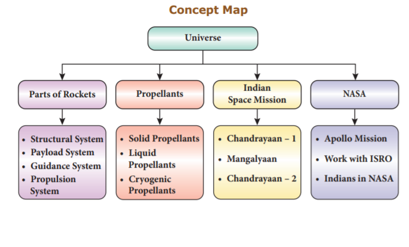
After the completion of this lesson, students will be able to:

In the universe all manifestations, phenomena and evolution of life are caused by matter and energy. All the objects which exist around us are made of some kind of matter. We perceive these objects through our senses like sight, touch, hearing, taste and smelling. A glass tumbler can be seen, agarbatti burning can be recognized by its smell whereas wind blowing can be felt. All kinds of matter possess mass and occupy space. Of course, some are heavy and others are light. Thus, matter can be defined as anything which has definite mass and occupies space.
As we know already, matter exists as solids (wood, stone, sand, iron etc.), liquids (water, milk, fruit juice, etc.) and gases (oxygen, nitrogen, carbon dioxide, steam, etc.). Matter in any physical state is composed of smaller particles such as atom, molecules or ions. An atom is the smallest particle of an element which exhibits all the properties of that element. Atoms of the same element or different elements combine to form a molecule. Atoms or group of atoms having a charge (positive or negative) are called ions.
Hence, atoms are the building blocks of matter. In this lesson, we will study about symbols of elements, metals and nonmetals, compounds of solids, liquids and gases, and the uses of compounds in daily life.
Elements are everywhere. They are the building blocks of everything on Earth: pencil, desk, mountains, car, book, etc. Do you know that when you are breathing you are actually inhaling air? The air you breathe is made up of many elements like oxygen, nitrogen and argon.
An element is a pure substance that cannot be broken down by chemical methods into simpler components. For example, the element gold cannot be broken down into anything other than gold. If you keep hitting gold with a hammer, the pieces would get smaller, but each piece will always be gold.
Elements consist of only one type of atoms. An atom is the smallest particle of an element that still has the same properties of that element.
All atoms of a specific element have exactly the same chemical makeup, size, and mass. Each atom has an atomic number, which represents the number of protons that are in the nucleus of a single atom of that element. There is a total of 118 elements. Many elements occur naturally on Earth; however, some are created in laboratory by scientists.
A symbol is an image, object, etc., that stands for some meaning. For instance, a dove is a symbol of peace. Similarly, we denote mathematical operations by symbols. For example, ‘plus’ denotes addition; ‘minus’ denotes subtraction etc. In the same way in chemistry each element is denoted by a symbol. Writing out the name of an element every time would become too troublesome. So, the name of an element is represented by shortened form called as symbol. Let us learn the brief history of symbols of elements.
a. Greek Symbols
The symbols in the form of geometrical shapes were used by the ancient Greeks to represent the four basic elements around us such as earth, air, fire and water.

b. Alchemist Symbols
In the days of alchemists, different materials that people used were represented by different symbols while they tried to change less valuable metal into gold. That process was called alchemy and the men who did this work were known as alchemists.

c. Dalton Symbols
In thousand eight hundred and right, John Dalton, English scientist tried to name various elements based on pictorial symbols. Those symbols are difficult to draw and hence they are not used. It is only of historical importance.

d. Berzelius Symbols
In 1813, Jon Jakob Berzelius devised a system using letters of alphabet rather than signs. The modified version of Berzelius system follows under the heading ‘System for Determining Symbols of the Elements’.
e. Present system for determining symbols of the elements
1. The symbols of the most common elements, mainly non-metals, use the first letter of their English name.
Table 9 point 1 Elements having first letter as symbol
Element |
Symbol |
Element |
Symbol |
Boron |
B |
Oxygen |
O |
Carbon |
C |
Phosphorus |
P |
Fluorine |
F |
Sulphur |
S |
Hydrogen |
H |
Vanadium |
V |
Iodine |
I |
Uranium |
U |
Nitrogen |
N |
Yttrium |
Y2 |
2. If two elements have same first letter, then the first and second letters of the name are used as symbols. The first letter is in uppercase and the second letter is in lowercase.
Table 9 point 2 Elements with same first letter
Element |
Symbol |
Element |
Symbol |
Aluminium |
A l |
Hydrogen |
H |
Barium |
B a |
Helium |
H e |
Beryllium |
B e |
Nickel |
N i |
Bismuth |
B i |
Neon |
N e |
Bromine |
B r |
Silicon |
S i |
Cobalt |
C o |
Sulphur |
S |
3. If the first two letters of the names of the elements are same, then the symbol consists of first letter and second or third letter of English name that they do not have in common.
Table 9 point 3 Elements with same two letters
Element |
Symbol |
Element |
Symbol |
Argon |
A r |
Calcium |
C a |
Arsenic |
A s |
Cadmium |
C d |
Chlorine |
C l |
Magnesium |
M g |
Chromium |
C r |
Manganese |
M n |
4. Some symbols are used on the basis of their Greek name or Latin name of the elements. There are eleven such elements.
Table 9 point 4 Greek or Latin name of elements
Element |
Latin Name |
Symbol |
Sodium |
Natrium |
N a |
Potassium |
Kalium |
K |
Iron |
Ferrum |
F e |
Copper |
Cuprum |
C u |
Silver |
Argentum |
A g |
Gold |
Aurum |
A u |
Mercury |
Hydrargyrum |
H g |
Lead |
Plumbum |
P b |
Tin |
Stannum |
S n |
Antimony |
Stibium |
S b |
Tungsten |
Wolfram |
W |
5. Some elements are named using the name of the country / scientist / colour / mythological character / planet
Table 9 point 5 Elements named using name of the country, scientist etc.
Name |
Symbol |
Name derived from |
Americium |
A m |
America (Country) |
Europium |
E u |
Europe (Country) |
Nobelium |
N o |
Alfred Nobel (Scientist) |
Iodine |
I |
Violet (Colour, Greek) |
Mercury |
H g |
God Mercury (Mythologic character) |
Plutonium |
P u |
Pluto (Planet) |
Neptunium |
N p |
Neptune (Planet) |
Uranium |
U |
Uranus (planet) |
While writing the symbol for an element, we should adhere to the following rules.
1. If the element has a single English letter as a symbol, it should be written in capital letter.
2. For elements having two letter symbols, the first letter should be in capital followed by small letter
The progress of man towards civilization is linked with the discovery of several metals and non-metals. Even today, the index of prosperity of a country depends upon the amount of metals and non-metals it produces. The wealth of a country is measured by the amount of gold in its reserve.
An element can be identified as metal or non-metal by comparing its properties with the general properties of metals and non-metals. In doing so, we find that some elements neither fit with the metals nor with non-metals. Such elements are called semimetals or metalloids. Elements are classified into metals, non-metals, and metalloids based on their properties.

Iron, copper, gold, silver, etc. that we use in our daily life are metals. The properties and uses of metals are given below.
a. Physical properties of Metals

Activity 1:
Take a battery, few wire pieces, a bulb, a nail and a pencil lead. First connect the nail in the circuit as shown in the figure. Is the bulb glowing? Now, connect the pencil lead in the circuit. What do you observe?

b. Uses of Metals
Elements like sulphur, carbon, oxygen etc. are non-metals. Some of the properties and uses of non-metals are given below.
a. Properties of Non-metals
Activity 2
Strike a metal utensil with a metal spoon. Note the kind of sound emitted. Now, strike a piece of wood charcoal with the same spoon. Do you find difference in the kind of sound produced?
Most metals produce ringing sound when struck i.e. they are sonorous. Non-metals are non-sonorous.
b. Uses of Non-metals

Table 9 point 6 Difference between Metals and Non-metals
Property |
Metal |
Non Metal |
Physical state at room temperature |
Usually solid (Occasionaly liquid)
|
Solid, liquid or gas
|
Malleablity |
Good |
Poor (Usually soft or brittle) |
Ductility |
Good |
Poor (Usually soft or brittle) |
Melting point |
Usually high |
Usually low |
Boiling point |
Usually high |
Usually low |
Density |
Usually high |
Usually low |
Conductivity(Thermal andElectrical) |
Good |
Very poor |
The elements which exhibit the properties of metals as well as non-metals are called metalloids. Examples: Boron, Silicon, Arsenic, Germanium, Antimony, Tellurium and Polonium.
a. Physical properties of Metalloids
b. Uses of Metalloids
A compound is a pure substance which is formed due to the chemical combination of two or more elements in a fixed ratio by mass. The properties of a compound are different from those of its constituents. Water, carbon dioxide, sodium chloride etc. are few examples of compounds. A molecule of water is composed of one oxygen atom and two hydrogen atoms in the ratio 1 is to 2 by volume or 8 is to 1 by mass.

Based on the origin of chemical constituents, compounds are classified as inorganic compounds and organic compounds.
a. Inorganic compounds
Compounds obtained from non living sources such as rock, minerals etc., are called inorganic compounds. Example: Chalk, baking powder etc.,
b. Organic compounds
Compounds obtained from living sources such as plants, animals etc., are called organic compounds. Example: Protein, carbohydrates, etc.,
Both inorganic and organic compounds exist in all three states solids, liquids and gases. Let us learn about some important compounds in solid, liquid and gaseous states. Some compounds that exist in solid state are given in Table 9 point 7.
Table 9 point 7 Compounds in solid state
Compounds |
Consititutent Elements |
Silica (Sand) |
Silicon, Oxygen |
Potassium hydroxide (Caustic potash) |
Potassium, Hydrogen, Oxygen |
Sodium hydroxide (Caustic soda) |
Sodium, Oxygen, Hydrogen |
Copper sulphate |
Copper, Sulphur, Oxygen |
Zinc carbonate (Calamine) |
Zinc, Carbon, Oxygen |
Compounds which exist in liquid state are given in Table 9 point 8.
Table 9 point 8 Compounds in liquid state
Compounds |
Consititutent Elements |
Water |
Hydrogen, Oxygen |
Hydrochloric acid |
Hydrogen, Chlorine |
Nitric acid |
Hydrogen, Nitrogen, Oxygen |
Sulphuric acid |
Hydrogen, Sulphur,Oxygen |
Acetic acid(Vinegar) |
Carbon, Hydrogen,Oxygen |
Some compounds exist in gaseous state also. They are given in Table 9.9.
Table 9 point 9 Compounds in gaseous state
Compounds |
Consititutent Elements |
Carbon dioxide, carbon monoxide |
Carbon, Oxygen |
Sulphur dioxide |
Sulphur, Oxygen |
Methane |
Carbon, Hydrogen |
Nitrogen dioxide |
Nitrogen, Oxygen |
Ammonia |
Nitrogen, Hydrogen |
We use a number of compounds in our daily life. Some of them are listed in table 9.10
Common Name |
Chemical Name |
Constituents |
Uses |
Water |
Dihydrogen monoxide |
Hydrogen and Oxygen |
For drinking and as solvent |
Table salt |
Sodium chloride |
Sodium and Chlorine. |
Essential component of our daily diet, preservative for meat and fish |
Sugar |
Sucrose |
Carbon, Hydrogen and Oxygen |
Preparation of sweets, toffees and fruit juices. |
Baking soda |
Sodium bicarbonate |
Sodium, Hydrogen, Carbon and Oxygen |
Fire extinguisher, preparation of baking powder and preparation of cakes and bread. |
Washing soda |
Sodium carbonate |
Sodium, Carbon and Oxygen. |
As cleaning agent in soap and softening of hardwater |
Bleaching powder |
Calcium oxy chloride |
Calcium, Oxygen and Chlorine |
As bleaching agent, disinfectant and sterilisation of drinking water |
Quick lime. |
Calcium oxide |
Calcium and Oxygen |
Manufacture of cement and glass |
Slaked lime |
Calcium hydroxide |
Calcium, Oxygen and Hydrogen |
White washing of walls |
Lime stone |
Calcium carbonate |
Calcium, Carbon and Oxygen. |
Preparation of chalk pieces |
More to Know
Compounds |
Common name |
Copper sulphate |
Blue Vitriol |
Ferrous sulphate |
Green Vitriol |
Potassium nitrate |
Saltpetre |
Sulphuric acid |
Oil of Vitriol |
Calcium sulphate |
Gypsum |
Calcium sulphate hemi hydrate |
Plaster of paris |
Potassium chloride |
Muriate of potash |
Disinfectant - Chemical substance which kills or prevents the disease causing microorganism.
Semiconductor - Substance which acts as bad conductor at low temperature and as good conductor at high temperature.
Reducing agent - Substance which undergoes oxidation reaction.
Carbohydrate - Compound which contains carbon, hydrogen and oxygen.
Bleaching agent - Substance which is used to remove the colour.
Preservative - Substance which prevents food being spoiled by microorganism.
1. The liquid metal used in thermometers is
a) copper
b) mercury
c) silver
d) gold
2. The pictorial symbol for water given by the alchemists was
a) Triangle
b) Inverted Triangle line crossed in lower part of Inverted Triangle
c) Inverted Triangle
d) Triangle line crossed in upper part of In Triangle
3. Which one of the following element name is not derived from planet?
a) Plutonium
b) Neptunium
c) Uranium
d) Mercury
4. Symbol of mercury is
a) A, g
b) H, g
c) A, u
d) P, b
5. A form of non-metal which has high ductility is
a) nitrogen
b) oxygen
c) chlorine
d) carbon
6. The property which allows the metals to be hammered into their sheets is dash
a) ductility
b) malleability
c) conductivity
d) shining strength
7. The non-metal which conducts electric current is
a) carbon
b) oxygen
c) aluminium
d) sulphur
8. Pencil lead contains
a) graphite
b) diamond
c) aluminium
d) sulphur
9. Identify the state of matter based on the arrangement of the molecules.
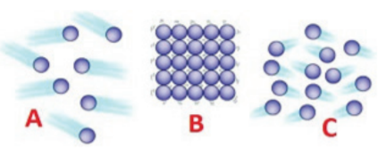
a) A Gas, B Solid, C Liquid
b) A Liquid, B Solid, C Gas
c) A Gas, B Solid, C Liquid
d) A Liquid, B Gas, C Solid
1. The element which possesses the character of both metals and non-metals are called dash
2. The symbol of tungsten is dash
3. Melting point of most metal is dash than non-metal.
4. Water contains dash and dash element.
5 dash is used as semiconductor.
a.
Iron |
For making wires |
Copper |
Sewing needle |
Tungsten |
As a fuel for ignition in rocket |
Boron |
Making the filament of a bulb |
b.
Atom |
Building block of matter |
Element |
Atoms of different kinds |
Compound |
Atoms of the same kind |
Molecule |
Smallest unit of a substance |
1. What is ductility?
2. Write the constituent elements and their symbols for the following compounds.
a) Carbon monoxide b) Washing soda
3. Write the symbols for the following elements.
a) Oxygen
b) Gold
c) Calcium
d) Cadmium
e) Iron
4. Which non-metal is essential for our life and all living beings?
5. Why are bells made of metals?
6. What does a chemical symbol represent?
7. Give two examples for metalloids.
8. Mention any three compounds that exist in liquid state.
9. Write three properties of metalloids.
1. Can you store pickle in an aluminium utensil? Give reason.
2. Tabulate the differences between metals and non-metals.
3. Why are utensils made up of aluminium and brass?
4. Define Alchemy.
5. Name the elements with the following symbols.
a) N, a
b) W
c) B, a
d) A, l
e) U
6. Name six common non-metals and write their symbols.
7. Mention any four compounds and their uses.
8. Name the metals that are used in jewellery.
9. Mention the uses of the following compounds.
a) Baking soda
b) Bleaching powder
c) Quick lime
1. Give reasons for the following.
(a) Aluminum foils are used to wrap food items.
(b) Immersion rods for heating liquids are made up of metallic substances.
(c) Sodium and potassium are stored in kerosene.
(d) Mercury is used in thermometers.
2. Why wires cannot be drawn from materials such as stone or wood?
1. Suresh S, Keshav A. “Textbook of Separation Processes”, Studium Press (India) Pvt. Ltd (ISBN: 978-93-80012-32-2), 1-459, 2012.
2. Biochemical Techniques Theory and Practice Paperback – 2005 by Robyt J.F. ISBN 10: 0881335568 / ISBN 13:9780881335569 Published by Waveland Press, Inc., Prospect Heights, IL, 1990
1. https://schools.aglasem.com/1747
2. https://www. chem1.com/acad/webtext/ pre/pre-1.html
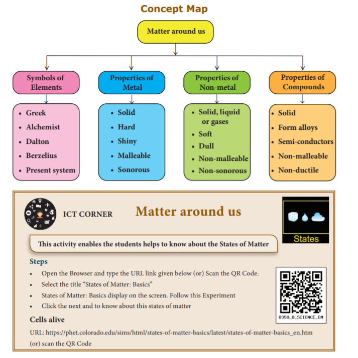
I C T Corner
Matter around us
This activity enables the students helps to know about the States of Matter
STEPS
Open the Browser and type the URL link given below (or) Scan the QR Code.
• Select the title “States of Matter: Basics”
• States of Matter: Basics display on the screen. Follow this Experiment
• Click the next and to know about this states of matter
Cells alive
URL: https://phet.colorado.edu/sims/html/states-of-matter-basics/latest/states-of-matter-basics_en.htm (or) scan the QR Code
After the completion of this lesson, students will be able to:
Have you ever visited Qutub Minar in Delhi? There you can see a rust resistant iron-pillar. It has not rusted for more than 1500 years. But, not all things are unchanged like this. Many things we see in our life are changing. You could have noticed milk turning into curd. How it is happening? We see number of changes in our surrounding. Some of them are physical changes and some of them are chemical changes.
As you have studied earlier, changes like folding and unfolding a paper, drying wet clothes, bending of iron rod are some examples for physical changes. On the other hand, changes like burning of paper, digestion of food, turning of milk into curd and decaying of vegetables are some of the examples for chemical changes. In this lesson, you will study about chemical changes, factors determining chemical changes and the effects of chemical changes.
A chemical change is a permanent and irreversible change which produces a new substance. Chemical changes are otherwise called as chemical reactions, because one or more substances (reactants) undergo a reaction to form one or more new substances (products).
Reactant(s) gives Product(s)
Adithya wants to classify the following changes as physical or chemical. Can you help him? 1. Melting of ice 2. Ripening of fruits 3. Rusting of iron 4. Spoilage of food 5. Burning of wood 6. Bursting crackers 7. Burning of camphor
Chemical changes will not occur at all conditions. For a chemical change to take place, certain specific conditions are required. Chemical changes can take place in the following conditions.
a. Contact in physical states
b. Solution of reactants
c. Electricity
d. Heat
e. Light
f. Catalyst
a. Contact in physical states
We experience many events in our daily life like burning of matchstick on rubbing and iron materials turning into reddish brown. Why and how these changes happen?
These changes are due to chemical reactions by contact in physical states. Combination of reactants in their naturally occurring states (solids, liquids, gases) is referred as contact in physical states.
When dry wood comes into contact with fire, it burns with the help of oxygen to form carbon dioxide, which is given out as smoke.
When a matchstick is rubbed on the sides of a matchbox, a chemical reaction takes place to form heat, light and smoke.
When quick lime (calcium oxide) comes into contact with water, it forms slaked lime (calcium hydroxide).
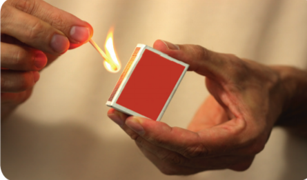
More to know
The head of a matchstick contains potassium chlorate and antimony trisulphide. The sides of the matchbox contain red phosphorous.
From the above reactions, we can conclude that certain chemical reactions take place only when the reactants are brought in contact with each other in their physical states.
Activity 2
Take two test tubes and couple of rust free iron nails. In one test tube pour some water and put an iron nail. Keep the test tube opened for few days. Take another test tube and pour some water along with some coconut oil. Now, place the second iron nail. Leave the set up for a few days. Observe the changes and record them. Which iron nail gets rusted and why?
b. Solution of reactants
When milk is mixed with coffee decoction the colour of the milk and the decoction changes due to chemical reaction. Similarly, when we mix two substances (reactants) in solution form, a chemical reaction takes place between them to form new substances (products). For example, take small amount of solid silver nitrate and sodium chloride in a test tube. Do you observe any change? No, because the reactants in solid state have no reaction. Now, you dissolve the same reactants in water in a separate test tubes and mix both the solutions. What do you observe? Silver nitrate solution reacts with sodium chloride solution to form a white precipitate of silver chloride and sodium nitrate solution. From the above reaction, we infer that some chemical reactions proceed only in solution form not in solid form.
c. Electricity
Electricity is essential for our living. We use electricity for cooking, lighting, grinding, watching television etc. Do you know electricity can be used to carry out chemical reactions also? Many chemical reactions which take place with the help of electricity are industrially very important. As you know, water is made of hydrogen and oxygen molecules. When electricity is passed through water which contains small amounts of sulphuric acid, hydrogen and oxygen gases are liberated. Similarly, a concentrated solution of sodium chloride called brine is electrolysed to produce chlorine and hydrogen gases along with sodium hydroxide. This is an important reaction to produce chlorine industrially.
Thus, we can conclude that some chemical reactions proceed only by the passage of electricity. Hence, such reactions are called as electrochemical reactions or electrolysis
Do you know?
The term electrolysis was introduced by Michael Faraday in the 19th century. The word electrolysis is a combination of two terms ‘electron’ and ‘lysis’. Electron is related to electricity and lysis means decomposition.
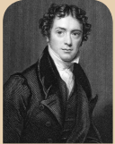
d. Heat
Food is important for our survival and also for the survival of many other living beings. Have you ever closely watched your mother cooking food? She boils rice, cooks vegetables, and prepares gravy by heating them over stove. When enough heat is given some chemical reactions take place to convert the raw food (uncooked) items into cooked ones.
You can learn more about this by conducting a reaction in your laboratory. Take a small amount of lead nitrate in a dry test tube and heat it gently over a flame. Observe the changes closely. You will hear cracking sound and an evolution of reddish-brown coloured gas (nitrogen dioxide). In industries limestone rocks are heated to get quicklime (calcium oxide). Hence, some chemical reactions can be achieved by the supply of heat only. These reactions are called thermo chemical reactions or thermolysis
More to Know
Chemical reactions accompanying evolution of heat are called exothermic reactions. Whereas chemical reactions which involve absorption of heat are called endothermic reactions.
Do you know?
Limestone is the raw material for quicklime, slaked lime and cement.
e. Light
What will happen if there is no sunlight? All the living organisms will be affected and there will be no food for us to survive, isn’t it? Sunlight is important not only for us but also for plants. As you know photosynthesis (‘photo’ means light and ‘synthesis’ means production) is a process in which light energy from the sun is used by the plants to prepare starch from carbon dioxide and water. The sunlight induces the chemical reaction between carbon dioxide and water, which finally ends up in the production of starch. Thus, chemical reactions induced by light are called as photochemical reactions.
Do you know?
The ultraviolet rays from the sun break ozone (O 3) molecules in the stratosphere into molecular oxygen and atomic oxygen. This atomic oxygen again combines with molecular oxygen to form Ozone.
More to Know
Photochemistry is the branch of chemistry which deals with chemical reactions involving light.
f. Catalyst
Sometimes you are advised by the elders to drink a small amount of ‘oma water’ after a heavy meal. Do you know, why? This is because oma water makes digestion faster. Likewise, in industries some chemical substances are used to speed up chemical reactions. These substances are called catalysts. For example, metallic iron is used as a catalyst in the manufacture of ammonia using Haber’s process. This ammonia is the basic material for the production of urea, an important fertilizer in agriculture. In vanaspati ghee (dalda) preparation, finely divided nickel is used as a catalyst. Thus, speed of certain reactions is influenced by the catalysts and such reactions are called catalytic reactions.
Do you know?
Enzymes and yeast are called biocatalysts
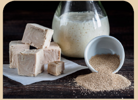
Activity 3
Buy some fresh yeast from a grocery shop. Prepare a paste of wheat flour with water in a vessel. Add some yeast and leave the vessel closed for few hours under sunlight. Observe the changes closely. What do you infer?
We know that every chemical reaction requires a specific condition to occur. When chemical reactions take place there will be production of heat, light, sound, pressure etc. and also many other effects.
a. Spoilage of food and vegetables
Food spoilage may be defined as any change that causes food unfit for human consumption. The chemical reactions catalysed by the enzymes result in the degradation of food quality in the form of development of bad tastes and odour, deterioration and loss of nutrients.
Examples
b. Rancidity of fishes and meat
Fishes and meat containing high levels of poly unsaturated fatty acids undergo oxidation. It causes bad odour when exposed to air or light. This process is called rancidity.
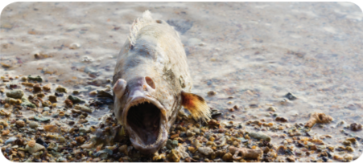
c. Apples and fruits turn brown when cut
Apples and some fruits turn brown due to chemical reaction with oxygen in air. This chemical reaction is called browning. The cells of apples, fruits and other vegetables contain an enzyme called polyphenol oxidase or tyrosinase. When in contact with oxygen it catalyses a biochemical reaction in which the phenolic compounds present in plants become a brown pigment known as melanin.
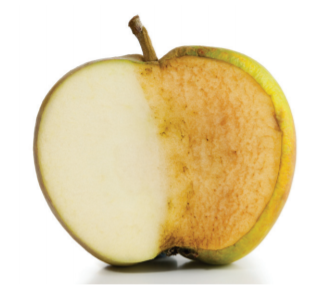
a. Pollution
Our environment provides air to breathe, water to drink and the land to produce food. Due to industrial processes and increasing number of automobiles, our environment is badly affected now-a-days. So, there is an unwanted change in the physical, chemical and biological properties of the environment. This is termed as pollution. The substances which cause these changes are called pollutants. Generally, there are three types of pollutions viz air, water and land pollution. Due to increasing human activities, lot of chemical substances are produced artificially which harm all the living and non-living things. The types of chemical substances and their effects are given in table below (Table 10 point 1).
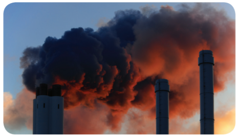
Table 10 point 1 The types of chemical substances and their effects.
Type of Pollution |
Chemical substances |
Effects |
Air pollution
|
Carbon dioxide, Carbon monoxide, Oxides of sulphur, Oxides of nitrogen, Chlorofluorocarbons, Methane etc
|
Acid rain, global warming, respiratory problems etc.
|
Water pollution |
Waste water containing chemical substances Eg. Dyeing industries, Detergents, Oil spillage etc
|
Decrease in the quality of water, skin diseases etc
|
Land pollution
|
Fertilizers like urea, various pesticides, herbicides, solid wastes, plastics etc.
|
Spoilage of land, cancer, respiratory diseases etc |
b. Rusting
What happens to the steel benches and tables during rainy season? They turn into reddish brown. Isn’t it? Do you know why? This is because when the iron metals come into contact with water and oxygen, it undergoes a chemical reaction called rusting.
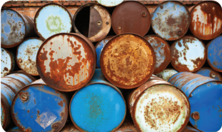
c. Tarnishing of metal articles
Shiny metal surfaces and other articles lose their shining appearance due to chemical reactions on the surface. For example, silver articles become black when exposed to atmospheric air. Similarly, brass vessels which contain copper as one of the constituents develop a greenish layer when exposed to air for a long time. This is due to a chemical reaction between copper and moist air to form basic copper carbonate and copper hydroxide.
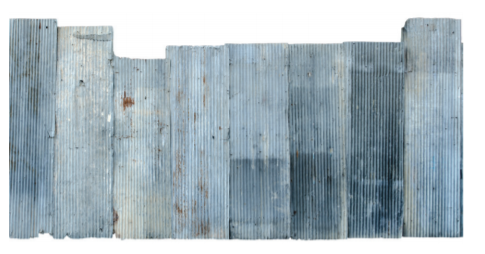
a. Production of Heat
Have you ever rubbed your palms in winter season to keep yourself warm? Have you noticed the heat produced when you use cycle pump? Similarly, some chemical reactions produce heat energy also. Such reactions are called exothermic reactions. For example, when you add water to quicklime (calcium oxide), lot of heat is released to produce slaked lime (calcium hydroxide).
Activity 4
Take two clean test tubes. Take sulphuric acid in one test tube and a solution of sodium hydroxide in another tube. Slowly and carefully add sodium hydroxide solution to sulphuric acid. Touch the sides of test tube. What do you feel? What do you infer?
b. Production of Light
When you ignite a candle, you get light as a result of burning. Some chemical reactions produce light. For example, when a piece of magnesium ribbon is burnt in a flame, bright light is produced with heat. Even the fireworks used during festival times produce different coloured lights which are all due to chemical reactions.
c. Production of Sound
When we speak sound is produced. When you hit metals like iron, copper etc., a sound is heard. Some chemical reactions do produce sound when they take place. What happens when you fire crackers during Deepavali? The chemical substances present in the crackers undergo some chemical reactions to produce sound.
Activity 5
Take a clean test tube. Add some dilute hydrochloric acid. Drop a piece of magnesium or a piece of zinc metal. What do you see? Now bring a burning match stick near the mouth of the test tube. What do you hear? What do you infer?
You can hear a pop sound. When metals like zinc or magnesium reacts with dilute acids hydrogen gas is produced. Since hydrogen gas is highly flammable it reacts with oxygen present in air to produce pop sound.
d. Production of Pressure
When you compress hard a balloon having full of air, it will burst. This is due to sudden release of air from the balloon as a result of increased pressure on compression. Some chemical reactions produce gases which increases the pressure when the reaction takes place in a closed container. If the pressure level goes beyond the limit, we get the explosion. Explosives and fireworks burst because of this reason. When they are ignited they explode due to pressure generated by gases from the chemical reactions. Thus, you hear a huge sound.
Biochemical reaction - Chemical reaction involving biological substances.
Catalyst - Substance which alters the speed of a chemical reaction.
Combustion - Burning with oxygen in air.
Enzyme- Catalysing substance in a biological system.
Fertilizer - Artificial manure/chemically synthesized manure.
Fossil fuel - Fuels like coal and petrol obtained from plants and animals once lived and buried beneath the earth.
Global warming - Rise in earth’s average temperature.
Ozone - Oxygen molecule having three oxygen atoms.
Pigments - Colour giving substance/colourants.
Poly unsaturated fatty acids - A long chain carbon based acids present in fats.
Precipitate - A new insoluble substance formed in a chemical reaction.
Product - Substance formed in a chemical reaction.
Reactant - Substance reacting in a chemical reaction.
Spoilage of food - Deterioration of food items.
Yeast - A kind of single celled fungus.
1. Burning of paper is a dash change.
a) physical
b) chemical
c) physical and chemical
d) neutral
2. Burning of matchstick is an example for chemical reaction caused by dash
a) contact in physical states
b) electricity
c) light
d) catalyst
3. dash undergoes rusting.
a) Tin
b) Sodium
c) Copper
d) Iron
4. The pigment responsible for browning of apples is dash.
a) hydrated iron (II) oxide
b) melanin
c) starch
d) ozone
5. Brine is a concentrated solution of dash.
a) sodium sulphate
b) sodium chloride
c) calcium chloride
d) sodium bromide
6) Limestone contains dash mainly.
a) calcium chloride
b) calcium carbonate
c) calcium nitrate
d) calcium sulphate
7. Which of the following factor induces electrolysis?
a) Heat
b) Light
c) Electricity
d) Catalysis
8. In Haber’s process of producing ammonia dash is used as a catalyst.
a) nitrogen
b) hydrogen
c) iron
d) nickel
9. Dissolved gases like sulphur dioxide and nitrogen oxides in rain water causes dash
a) acid rain
b) base rain
c) heavy rain
d) neutral rain
10. dash is/are responsible for global warming.
a) Carbon dioxide
b) Methane
c) Chlorofluorocarbons
d) Carbon dioxide, Methane, Chlorofluorocarbons
1. Photosynthesis is a chemical reaction that takes place in the presence of dash.
2. Iron objects undergo rusting when exposed to dash and dash.
3. dash is the basic material to manufacture urea.
4. Electrolysis of brine solution gives dash gases.
5. dash is a chemical substance which alters the speed of a chemical reaction.
6. dash is the enzyme responsible for browning of vegetables and fruits.
1. A chemical reaction is a temporary reaction.
2. Decomposition of lead nitrate is an example for a chemical reaction caused by light.
3. Formation of slaked lime from quicklime is an endothermic reaction.4. CFC is a pollutant.
5. Light energy may come out due to chemical reactions.
a.
Rusting |
Photosynthesis |
Electrolysis |
Haber’s process |
Thermolysis |
Iron |
Food |
Brine |
Catalysis |
Decomposition of limestone |
b.
Spoilage |
Decomposition |
Ozone |
Biocatalyst |
Tarnishing |
Oxygen |
Yeast |
Chemical reaction |
Calcium oxide |
Food |
1. Define a chemical reaction.
2. Mention the various conditions required for a chemical reaction to occur.
3. Define catalysis.
4. What happens when an iron nail is placed in copper sulphate solution?
5. What is pollution?
6. What is tarnishing? Give an example.
7. What happens to the brine during electrolysis?
8. On heating, calcium carbonate gives calcium oxide and oxygen. Is it an exothermic reaction or an endothermic reaction?
9. What is the role of a catalyst in a chemical reaction?
10. Why photosynthesis is a chemical reaction?
1. Explain the environmental effects of chemical reactions?
2. Explain how food items are spoiled by chemical reactions?
3. Explain any three conditions that is required for a chemical reaction to take place. Give example.
1. Explain the role of yeast in making cakes and buns in a bakery?
2. Burning of fossil fuels is responsible for global warming. Justify the statement.
3. Discuss how acid rain occurs due to emission of smoke from vehicles and industries?
4. Is rusting good for iron materials? Explain.
5. Do all the fruits and vegetables undergo browning? Explain.
6. Classify the following day to day activities based on chemical reactions by physical contact, solutions of reactants, heat, light, electricity and catalyst.
a ) Burning of crackers during festivals
b) Fading of coloured clothes on drying under sunlight.
c) Cooking of eggs.
d) Charging of batteries.
1. Kumar is going to build a house. To purchase the iron rods required for construction, he visited an iron and steel shop nearby. The seller showed him some iron rods which are fresh and good. He also showed him little older iron rods which are brownish in appearance. The price of fresh rods is more than the older ones. The seller also gave some offer to older ones. Kumar’ friend Ramesh advised him not to buy the cheaper rods.
a) Is Ramesh right in his suggestion?
b) Could you explain the reason for his suggestion?
c) What are the values shown by Ramesh?
2. Palanikumar is a Lawyer. He lives in a luxurious flat. Due to high rent, he wants to shift his residence to a place where he has a chemical industry nearby. There the rent is very cheap and the area is less populated also. His son Rajasekar, studying VIII, does not like this and likes to go to some other place.
a) Is Rajasekar right in his attitude?
b) Why did he refuse to go there?
c) What are the values shown by Rajasekar?
1. Basic chemistry by Karen C.Timberlake and William Timberlake
2. Pradeep’s objective chemistry vol-1 by S.N. Dhawan,S.C.Kheterpal,J.R. Mehta
1. https://www.livescience.com
2. www.khanac ademy.org/science/ chemistry/chemical reactions
After the completion of this lesson, students will be able to:
carbon dioxide in the atmosphere.
Air is a mixture of gases that surrounds our planet earth. It is essential for the survival of all the living things. Air contains 78.09% nitrogen, 20.95% oxygen, 0.93% argon, 0.04% carbon dioxide and small amount of other gases. We breathe in oxygen and breathe out carbon dioxide. Plants in turn use carbon dioxide for photosynthesis and release oxygen into the atmosphere. Since men have been cutting down trees for their needs, the amount of carbon dioxide in the atmosphere is increasing. This is responsible for the raising of atmospheric temperature. Industries and vehicles release gases like carbon monoxide and sulphur dioxide into the atmosphere. This has resulted in effects like global warming and acid rain which affect us in many ways. In total, the quality of air is gone in the modern days. In this lesson we are going to study about the effects like greenhouse effect, global warming and acid rain. We will also study about occurrence and properties of the gases oxygen, nitrogen and carbon dioxide.
All living things in the world need oxygen. We cannot imagine the world without oxygen. Swedish chemist C.W. Scheele first discovered oxygen in 1772. He called the gas fire air or vital life because it was found to support the process of burning. It was independently discovered by the British scientist Joseph Priestley in 1774. Lavoisier named oxygen. The name oxygen comes from the Greek word ‘oxygenes’ which means ‘acid producer’. It is called so because early chemists thought that oxygen is necessary for producing acids.
Oxygen is the most abundant element on the earth by mass and the third most abundant element after Hydrogen and Helium in the universe. It occurs both in free state and combined state. It is present in free state as diatomic molecule (O 2) in the atmosphere. Most of this has been produced by photosynthesis in which the chlorophyll present in the leaves of plants uses solar energy to produce glucose.
Table 11 point 1 Percentage of Oxygen
Oxygen in free state |
Oxygen in combined state |
|
|
Source |
Percentage |
Source |
Percentage |
Atmospheric air |
21 % |
Plants and animals |
60 – 70 %
|
Water |
88 – 90 % |
Minerals in the form of silicates, carbonates and oxides
|
45 – 50 % |
6 corbon di oxyide plus 6 water Energy from the Sun gives glugose plus 6 oxygen
In combined state it is present in the earth’s crust as silicates and metal oxides. It is also found in water on the surface of the earth. Tri atomic molecule (O 3) known as ozone is present in the upper layers of the atmosphere.
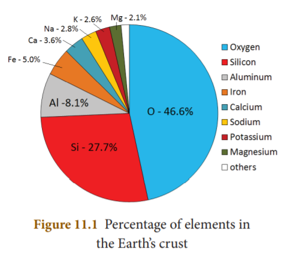
Do you know?
Oxygen is about two times more soluble in water than nitrogen. If it had the same solubility as nitrogen, then less oxygen would be present in seas, lakes and rivers that will make life much more difficult for living organisms.
1. Combustibility
Oxygen is a non-combustible gas as it does not burn on its own. But, it supports the combustion of other substances.
Do you know?
If oxygen has the capacity to burn itself, striking a match stick will be enough to burn all the oxygen in our planet’s atmosphere.
2. Reaction with metals
Oxygen reacts with metals like sodium, potassium, magnesium, aluminium, iron etc., to form their corresponding metal oxides which are generally basic in nature. But the metals differ in their reactivity towards oxygen.
Metal plus Oxygen gives Metal oxide
Example
4 N a Sodium plus O 2 oxygen gives 2 N a 2 O ( Sodium oxide )
Activity 1
Heat a strip of magnesium ribbon in the flame till it catches fire and introduce it into the jar containing oxygen. It burns with a dazzling bright light and white ash of magnesium oxide is formed.
Table 11 point 2 Reactivity of Oxygen with metals
Metal |
Temperature |
Product formed |
K |
Room temperature |
Potassium Oxide (K 2 O) |
M g |
Heating slightly |
Magnesium Oxide (M g O) |
C a |
Heating slightly |
Calcium Oxide (C a O) |
F e, C u, A g
|
High temperature
|
Iron Oxide (F e 3 O 4) Cupric Oxide (C u O) Silver Oxide (A g 2 O) |
A u, P t
|
Even at high temperature
|
No action
|
3. Reaction with non-metals
Oxygen reacts with various non-metals like hydrogen, nitrogen, carbon, sulphur, phosphorus etc., to give corresponding non-metallic oxides, which are generally acidic in nature.
Non metal plus Oxygen gives Non metalic oxide
Example
C carbon plus O 2 Oxygen gives C O 2 Carbon dai Oxide
Table 11 point 3 Reaction of Oxygen with non-metals
Non metal |
Products formed |
C |
Carbon dioxide (C O 2) |
N |
Nitric oxide (N O) |
S |
Sulphur dioxide (S O 2) |
P |
Phosphorus trioxide (P 2 O 3) or Phosphorus pentoxide (P 2 O 5) |
Activity 2
Heat a small piece of phosphorous and introduce it into the oxygen jar. Phosphorous burns with suffocating smell and give phosphorous pentoxide (white fumes).
4. Reaction with Hydrocarbons
Hydrocarbons (compounds containing C and H) react with oxygen to form carbon dioxide and water vapour. Example. Wood, Petrol, Diesel, L P G, etc. When they burn in oxygen, they produce heat and light energy. Hence they serve as fuel.
Hydrocarbon plus O 2 oxygen gives C O 2
carbon di oxide plus Water vapour plus Heat energy plus Light
5. Rusting
The process of conversion of iron into its hydrated form of oxide in the presence of air and moisture (humid atmosphere) is called rusting. Rust is hydrated ferric oxide.
4 F e iron plus 3 O (2 ) oxygen gives 2 F e 2 O 3 ferrus oxide
F e (2 ) O 3 ferrus oxide plus X H 2 O water gives F e 2 O 3∙X H 2 O rust
(x is the number of water molecules which is variable)
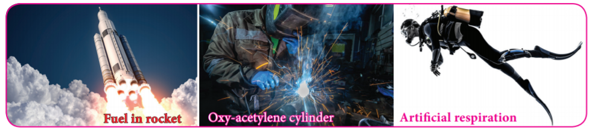
Nitrogen is one of the most important elements. Animals and plants need nitrogen for their growth. All living organisms (including us) contain nitrogen. It is an essential element present in proteins and nucleic acids which are the ‘building blocks’ of all living things. It was first isolated from the air by Daniel Rutherford in 1772. The name ‘nitrogen’ is derived from the Greek words ‘nitron’ and ‘gene’ meaning ‘I produce nitre’. Nitre is potassium nitrate compound of nitrogen. Antoine Lavoisier suggested the name azote, from the Greek word meaning ‘no life’.
Nitrogen is the fourth most abundant element in the human body. It accounts for about three percent of the mass of the human body. It is thought to be the seventh most abundant element in the universe. Titan, the largest moon of Saturn, has an atmosphere made up of 98% Nitrogen. Nitrogen occurs both in free state and combined state. Nitrogen exists in free state in the atmospheric air as dinitrogen (N 2). It is present in volcanic gases and gases evolved by burning of coal. Nitrogen is present in combined state in the form of minerals like nitre (K N O 3) and chile salt petre (N a N O 3). It is present in organic matters such as protein, enzymes, nucleic acid etc.
1. Chemical reactivity
Nitrogen is inactive at ordinary conditions. It combines with many elements at high temperature and pressure or in the presence of catalyst.
2. Combustion
Nitrogen is neither combustible nor a supporter of combustion. So nitrogen in the air moderates the rate of combustion.
3. Reaction with metals
Nitrogen reacts with metals like lithium, calcium, magnesium etc., at high temperature to form their corresponding metal nitrides.
Metal plus Nitrogen gives Metal nitrade
Example
3 C a Calcium plus N 2 Nitrogen gives C a 3 N 2 Calcium nitride
4. Reaction with non metals
Nitrogen reacts with non-metals like hydrogen, oxygen etc., at high temperature to form their corresponding nitrogen compounds.
Non-metal plus Nitrogen gives Nitrogen compound
Example
3 H 2 Hydrogen plus N 2 Nitrogen gives 2 N H 3 Ammonia
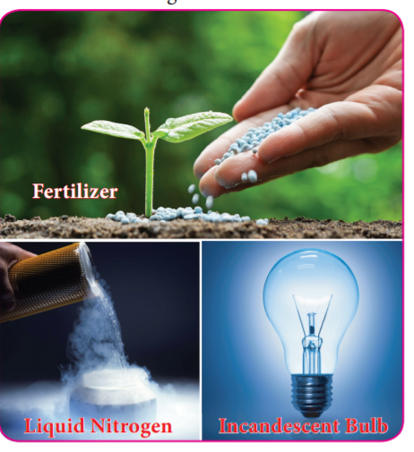
Do you know?
Now-a-days nitrogen is used as a substitute for compressed air in tyres. Have you noticed it? Why do people prefer nitrogen instead of compressed air in tyres?
Nitrogen gets circulated in the air, soil and living things as the element itself or in the form of its compounds. Just as there is a circulation of carbon in nature so also there is a circulation of nitrogen. It is essential for the proper growth of all plants. The plants cannot make use of the elemental nitrogen from the air as such. The plants require soluble compounds of nitrogen. Thus, plants depend on other processes to supply them with nitrates. Any process that converts nitrogen in the air into a useful nitrogen compound is called nitrogen fixation. Fixation of nitrogen is carried out both naturally and by man.
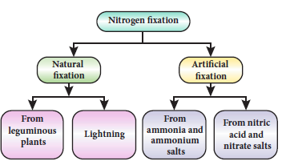
Carbon dioxide is a chemical compound in which one carbon and two oxygen atoms are bonded together. It is a gas at room temperature. It is represented by the formula CO2. It is found in the earth’s atmosphere and it sends back the solar energy which is reflected by the surface of the earth, to make it possible for living organisms to survive. When carbon dioxide accumulates more in the atmosphere it produces harmful effects.
Carbon dioxide is present in air to the extent of about 0.03 percentege by volume. It is evolved by the plants and animals during respiration and is produced during fermentation reactions. Much of the naturally occurring C O 2 is emitted from the magma through volcanoes. C O 2 may also originate from the bio degradation of oil and gases. Carbon dioxide emitted by human upset the natural balance of the carbon cycle. Man-made C O 2 in the atmosphere has increased global temperatures which is warming the planet. While C O 2 derived from fossil-fuel is a very small component of the global carbon cycle, the extra C O 2 is cumulative because the natural carbon exchange cannot absorb all the additional C O 2 .
Do you know?
The process of conversion of solid into vapour without reaching liquid state is called sublimation.
1. Combustibility
It is non-combustible gas and not a supporter of combustion.
2. Reaction with metals
Lighter metals like sodium, potassium and calcium, combine with C O 2 to form corresponding carbonates whereas magnesium gives its oxide and carbon.
Example
4 Na Sodium plus 3 C O 2 gives 2 N a 2 CO 3Sodium carbonate plus C
2 M g Magnesium plus C O 2 gives 2 M g O Magnesium oxide plus C
3. Reaction with sodium hydroxide (Alkali)
Sodium hydroxide (base) is neutralized by carbon dioxide (acidic) to form sodium bicarbonate (salt) and water.
Na O H plus C O 2 gives N a H C O 3Sodium bicarbonate plus H 2 O
4. Reaction with Lime water (Calcium hydroxide)
When a limited amount of C O 2 is passed through lime water, it turns milky due to the formation of insoluble calcium carbonate.
Ca (OH) 2 calcium hydroxide plus C O 2 carbon di oxide gives C a C O 3 calcium carbonate plus H 2 O
When an excess amount of C O 2 is passed through lime water, it first turns milky and the milkyness disappears due to the formation of soluble calcium hydrogen carbonate, Ca (H C O 3) 2
Do you know?
Venus’ atmosphere consists of roughly 96-97% carbon dioxide. Because of the amount of carbon dioxide present, the surface of Venus continually retains heat and as such, the surface temperature of Venus is roughly 462°C, making it the hottest planet in our solar system.
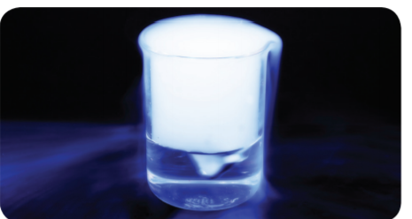
Do you know?
Aerated water is nothing but carbon dioxide dissolved in water under pressure. This is also called ‘soda water’.
The solar radiation is absorbed by the surface of land and ocean. In turn, they release infra-red radiation or heat into the atmosphere. Certain gaseous molecules present in the atmosphere absorb the infra-red rays and reradiate the heat in all directions. Hence, these gases maintain the temperature of earth’s surface. The gases which absorb these radiations are called greenhouse gases and this effect is called greenhouse effect.
The green house gases are C O 2, N 2 O, C H 4, C F C (Chloro fluoro carbon) etc. The increase in the levels of these gases results in the gradual increase of temperature of the earth’s surface. This green house effect is caused due to increase in the air pollutants and it results in the average increase of temperature of the atmosphere. This is called as Global warming.
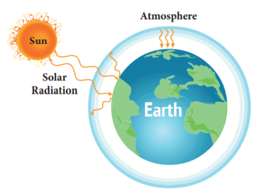
The following are the effects of global warming.
In order to save the earth and its resources we need to take certain measures. Some of the measures are given below.
Rain water is actually the purest form of water. However, pollutants such as oxides of nitrogen (N 2 O, N O 2) and sulphur (S O 2, S O 3) in the air released by factories, burning fossil fuels, eruption of volcanoes etc., dissolve in rain water and form nitric acid and sulphuric acid which adds up to the acidity of rain water. Hence, it results in acid rain.
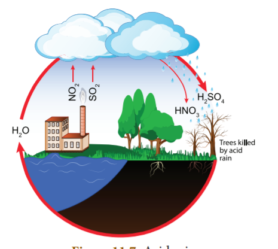
Acid rain has pH less than 5.6 whereas pH of pure rain water is around 5.6 due to dissolution of atmospheric CO2 in it.
Acid rain affects us in many ways. Some of the consequences are given below.
Acid rain and its effects can be controlled by the following ways.
Atmosphere - Gaseous jacket that surrounds the earth.
Fixation of nitrogen - Process that converts nitrogen in the air into a nitrogen compounds.
Global warming- An average increase in the temperature of the atmosphere.
Green house effect - Trapping of radiation from the sun by green house gases in the atmosphere that leads to rise in the earth’s atmospheric temperature.
Haber’s process - Synthesis of ammonia from nitrogen and hydrogen with the help of catalyst under 500 atm pressure and 550˚C temperature.
Oxygenes - A Greek word meaning ‘acid producers’ from which the name ‘Oxygen’ is derived.
Soda water - A form of water produced when carbon dioxide is dissolved in water under pressure.
Sublimation - Process of conversion of solid directly to vapour without reaching liquid state.
1. Which of the following is true about oxygen?
a) Completely burning gas
b) Partially burning gas
c) Doesn’t support burning
d) Supports burning
2. Aerated water contains
a) air
b) oxygen
c) carbon dioxide
d) nitrogen
3. Solvay process is a method to manufacture
a) lime water
b) aerated water
c) distilled water
d) sodium carbonate
4. Carbon dioxide with water changes
a) blue litmus to red
b) red litmus to blue
c) blue litmus to yellow
d) doesn’t react with litmus
5. Which of the following is known as azote?
a) Oxygen
b) Nitrogen
c) Sulpher
d) Carbon dioxide
1. dash is called as vital life.
2. Nitrogen is dash than air.
3. dash is used as a fertilizer.
4. Dry ice is used as a dash.
5. The process of conversion of iron into hydrated form of oxides is called dash.
Nitrogen |
Respiration in living animals |
Oxygen |
Fertilizer |
Carbon |
Refrigerator |
Dry ice dioxide |
Fire extinguisher |
1. Mention the physical properties of oxygen.
2. List out the uses of nitrogen.
3. Write about the reaction of nitrogen with non-metals.
4. What is global warming?
5. What is dry ice? What are its uses?
1. What happens when carbon dioxide is passed through lime water? Write the equation for this reaction.
2. Name the compounds produced when the following substances burn in oxygen.
a) Carbon b) Sulphur c) Phosphorous d) Magnesium e) Iron f) Sodium
3. How does carbon dioxide react with the following?
a) Potassium b) Lime water c) Sodium hydroxide
4. What are the effects of acid rain? How can we prevent them?
1. Soda bottle bursts sometimes when it is opened during summer. Why?
2. It is said that sleeping beneath the tree during night is not good for health. What is the reason?
3. Why does the fish die when it is taken out of water?
4. How do astronauts breathe when they go beyond earth’s atmosphere?
1. Environmental Science - Timothy O Riordan Second edition
2. Basic of atmospheric science - A. chandrasekar
3. Text book of Air pollution and its control - S.C. Bhatia
1. www.chemicool.com
2. www.nationgeographic.com
3. www.environmentalpollutioncenters.org
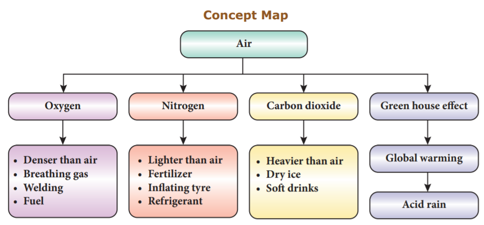
I C T corner
AIR
Through this activity you will know about carbon emission, climate change, global average temperature etc.
Step 1
• Open the Browser and type the URL given below.
• Click onany one of the items to know about carbon emission, climate change, global average temperature, sea level etc.
• For example, click on the “Climate Time Machine” a popup screen will open. In that you can able to see carbon emission global average sea level, temperature, sea ice etc.
• When you click global average sea level, you will find year wise sea level.
Browse in the link: https://climatekids.nasa.gov/menu/play/
After the completion of this lesson, students will be able to:

Every substance in our surrounding is made up of unique elements. There are 118 elements identified worldwide so far. Out of these elements, 92 elements occur in the nature and the remaining elements are synthesised in the laboratories. Copper, Iron, Gold and Silver are some of the elements found in the nature. Elements like Technetium, Promethium, Neptunium and Plutonium are synthesised in the laboratories. Each element is made up of similar, minute particles called atoms. For example, the element gold is made up of gold atoms which determine its characteristics. The word atom is derived from the Greek word atomas. Tomos means smallest divisible particle and atomas means smallest indivisible particle. Ancient Greek philosophers like Democritus, have spoken about atoms. Even our Tamil poet Avvaiyar has mentioned about atoms in her poem while describing Thirukkural (அணுவைத் துளைத்து ஏழ் கடலைப்புகட்டிக் குறுகத் தரித்த குறள்). But, none of them have scientific base. The first scientific theory about atom was given by John Dalton. Followed by him, J. J. Thomson and Rutherford have given their theory about atom. In this lesson, we will study how atomic theories evolved at different times. We will also study about valency, molecular formula, rules for naming chemical compounds and balancing chemical equations.
John Dalton provided a basic theory about the nature of matter. He proposed a model of atom known as Dalton’s atomic theory in 1808 based on his experiments. The main postulates of Dalton’s atomic theory are:
Do you know?
John Dalton, son of a poor weaver, began his career as a village school teacher at the age of 12. He became the principal of the school seven years later. In 1793, he moved to Manchester to teach Physics, Chemistry and Mathematics in a college. He proposed his atomic theory in 1803. He carefully recorded each day, the temperature, pressure and amount of rainfall from his youth till the end. He was a meticulous meteorologist.

In 1878, Sir William Crookes, while conducting an experiment using a discharge tube, found certain visible rays travelling between two metal electrodes. These rays are known as Crookes’ Rays or Cathode Rays. The discharge tube used in the experiment is now referred as Crookes tube or more popularly as Cathode Ray Tube (C R T).
Cathode Ray Tube is a long glass tube filled with gas and sealed at both the ends. It consists of two metal plates (which act as electrodes) connected with high voltage. The electrode which is connected to the negative terminal of the battery is called the cathode (negative electrode). The electrode connected to the positive terminal is called the anode (positive electrode). There is a side tube which is connected to a pump. The pump is used to lower the pressure inside the discharge tube.
Do you know?
Electricity, when passes through air, removes the electrons from the gaseous atoms and produces cations. This is called electrical discharge.

When a high electric voltage of 10,000 volts or more is applied to the electrode of a discharge tube containing air or any gas at atmospheric pressure, no electricity flows through the air. However, when the high voltage of 10,000 volts is applied to the electrodes of discharge tube containing air or any gas at a very low pressure of about 0.001 mm of mercury, a greenish glow is observed on the walls of the discharge tube behind anode. This observation clearly shows some invisible ray coming from the cathode. Hence, these rays are called cathode rays. Later, they were named as electrons.
Do you know?
The fact that air is a poor conductor of electricity is a blessing in disguise for us. Imagine what would happen if air had been a good conductor of electricity. All of us would have got electrocuted, when a minor spark was produced by accident.
Properties of Cathode rays

Do you know?
In television tube cathode rays are deflected by magnetic fields. A beam of cathode rays is directed toward a coated screen on the front of the tube, where by varying the magnetic field generated by electromagnetic coils, the beam traces a luminescent image.
The presence of positively charged particles in the atom has been precisely predicted by Goldstein based on the conception that the atom being electrically neutral in nature, should necessarily possess positively charged particles to balance the negatively charged electrons.
Goldstein repeated the cathode ray experiment by using a perforated cathode. On applying a high voltage under low pressure, he observed a faint red glow on the wall behind the cathode. Since these rays originated from the anode, they were called anode rays or canal rays or positive rays. Anode rays were found as a stream of positively charged particles

Do you know?
When invisible radiation falls on materials like zinc sulphide, they emit a visible light (or glow). These materials are called fluorescent materials.
Properties of Anode rays
Do you know?
When hydrogen gas was taken in a discharge tube, the positively charged particles obtained from the hydrogen gas were called protons. Each of these protons are produced when one electron is removed from one hydrogen atom. Thus, a proton can be defined as an hydrogen ion (H plus). H gives H plus plus e minus
12 point 2 point 3 Discovery of Neutrons
At the time of J. J. Thomson, only two fundamental particles (proton and electron) were known. In the year 1932, James Chadwick discovered another fundamental particle, called neutron. But, the proper position of these particles in an atom was not clear till Rutherford described the structure of atom. You will study about Rutherford’s atom model in your higher classes.
Properties of Neutrons
Table 12 point 1 Properties of Fundamental particles.
Particle |
Mass |
Relative charge
|
Electron (e) |
9.1 into 10 power minus 24 grams |
Minus one |
Proton (p) |
1.6 into 10 power minus 24 grams |
Plus one |
Neutron (n) |
1.6 into 10 power minus 24 grams |
0 |
Activity 1
Collect more information about the properties of fundamental particles and prepare a chart.
J.J. Thomson, an English scientist, proposed the famous atom model in the year 1904, just after the discovery of electrons.

Thomson proposed that the shape of an atom resembles a sphere having a radius of the order of 10-10 m. The positively charged particles are uniformly distributed with electrons arranged in such a manner that the atom is electrically neutral. Thomson’s atom model was also called as the plum pudding model or the watermelon model. The embedded electrons resembled the seed of watermelon while the watermelon’s red mass represented the positive charge distribution. The plum pudding atomic theory assumed that the mass of an atom is uniformly distributed all over the atom.

Thomson’s atom model could successfully explain the electrical neutrality of atom. However, it failed to explain the following.
1. Thomson’s model failed to explain how the positively charged sphere is shielded from the negatively charged electrons without getting neutralised.
2. This theory explains only about the protons and electrons and failed to explain the presence of neutral particle neutron.
In order to understand valency of elements clearly, we need to learn a little about Rutherford’s atomic model here. According to Rutherford, an atom consists of subatomic particles namely, proton, electron and neutrons. Protons and neutrons are found at the centre of an atom, called nucleus. Electrons are revolving around the nucleus in a circular path, called orbits or shells. An atom has a number of orbits and each orbit has electrons. The electrons revolving in the outermost orbit are called valence electrons.

The arrangement of electrons in the orbits is known as electronic configuration. Atoms of all the elements will tend to have a stable electronic configuration, that is, they will tend to have either two electrons (known as duplet) or eight electrons (known as octet) in their outermost orbit. For example, helium has two electrons in the outermost orbit and so it is chemically inert. Similarly, neon is chemically inert because, it has eight electrons in the outermost orbit.
The valence electrons in an atom readily participate in a chemical reaction and so the chemical properties of an element are determined by these electrons. When molecules are formed, atoms combine together in a fixed proportion because each atom has different combining capacity. This combining capacity of an atom is called valency. Valency is defined as the number of electrons lost, gained or shared by an atom in a chemical combination so that it becomes chemically inert.
As we saw earlier, an atom will either gain or lose electrons in order to attain the stable electronic configuration. In order to understand valency in a better way, it can be explained in two ways depending on whether an atom gains or losses electrons.
Atoms of all metals will have 1 to 3 electrons in their outermost orbit. By losing these electrons, they will have stable electronic configuration. So, they lose them to other atoms in a chemical reaction and become positively charged. Such atoms which donate electrons are said to have positive valency. For example, sodium atom (Atomic number: 11) has one electron in its outermost orbit and in order to have stability it loses one electron and becomes positively charged. Thus, sodium has positive valency.
All non-metals will have 3 to 7 electrons in the outermost orbit of their atoms. In order to attain stable electronic configuration, they need few electrons. They accept these electrons from other atoms in a chemical reaction and become negatively charged. These atoms which accept electrons are said to have negative valency. For example, chlorine atom (Atomic number: 17) has seven electrons in its outermost orbit. By gaining one electron it attains stable electronic configuration, like inert gas electronic configuration. Thus, chlorine has negative valency.
Valency of an element is also determined with respect to other atoms. Generally, valency of an atom is determined with respect to hydrogen, oxygen and chlorine.
a. Valency with respect to Hydrogen
Since hydrogen atom loses one electron in its outermost orbit, its valency is taken as one and it is selected as the standard. Valencies of the other elements are expressed in terms of hydrogen. Thus, valency of an element can also be defined as the number of hydrogen atoms which combine with one atom of it. In hydrogen chloride molecule, one hydrogen atom combines with one chlorine atom. Thus, the valency of chlorine is one. Similarly, in water molecule, two hydrogen atoms combine with one oxygen atom. So, valency of oxygen is two.
Since some of the elements do not combine with hydrogen, the valency of the element is also defined in terms of other elements like chlorine or oxygen. This is because almost all the elements combine with chlorine and oxygen.
Table 12 point 2 Valency of atoms
Molecule |
Element |
Valency |
Hydrogen chloride (H C l) |
Chlorine |
1 |
Water (H 2 O) |
Oxygen |
2 |
Ammonia (N H 3) |
Nitrogen |
3 |
Methane (C H 4) |
Carbon |
4 |
b. Valency with respect to Chlorine
Since valency of chlorine is one, the number of chlorine atoms with which one atom of an element can combine is called its valency. In sodium chloride (Na Cl) molecule, one chlorine atom combines with one sodium atom. So, the valency of sodium is one. But, in magnesium chloride (Mg Cl2) valency of magnesium is two because it combines with two chlorine atoms.
c. Valency with respect to oxygen
In another way, valency can be defined as double the number of oxygen atoms with which one atom of an element can combine because valency of oxygen is two. For example, in magnesium oxide (M g O) valency of magnesium is two.
Atoms of some elements combine with atoms of other elements and form more than one product. Thus, they are said to have different combining capacity. These atoms have more than one valency. Some cations exhibit more than one valency. For example, copper combines with oxygen and forms two products namely cuprous oxide (C u 2 O) and cupric oxide (C u O). In C u 2 O, valency of copper is one and in Cu O valency of copper is two. For lower valency a suffix ous is attached at the end of the name of the metal. For higher valency a suffix ic is attached at the end of the name of the metal. Sometimes Roman numeral such as 1, 2, 3, 4 etc. indicated in parenthesis followed by the name of the metal can also be used.
Table 12 point 3 Metals with variable Valencies
Element |
Cation |
Names |
Copper |
C u plus |
Cuprous (or) Copper (1) |
|
C u 2 plus |
Cupric (or) Copper (2) |
Iron |
F e 2 plus |
Ferrous (or) Iron (2) |
|
F e 3 plus |
Ferric (or) Iron (3) |
Mercury |
H g plus |
Mercurous (or) Mercury (1) |
|
H g 2 plus |
Mercuric (or) Mercury (2) |
Tin |
S n 2 plus |
Stannous (or) Tin (2) |
|
S n 4 plus |
Stannic (or) Tin (4) |
In an atom, the number of protons is equal to the number of electrons and so the atom is electrically neutral. But, during chemical reactions atoms try to attain stable electronic configuration (duplet or octet) either by gaining or losing one or more electrons according to valency. When an atom gains an electron it has more number of electrons and thus it carries negative charge. At the same time when an atom loses an electron it has more number of protons and thus it carries positive charge. These atoms which carry positive or negative charges are called ions. The number of electrons gained or lost by an atom is shown as a superscript to the right of its symbol. When an atom loses an electron, ‘plus’ sign is shown in the superscript and ‘minus’ sign is shown if an electron is gained by an atom. Sometimes, two or more atoms of different elements collectively loss or gain electrons to acquire positive or negative charge. Thus we can say, an atom or a group of atoms when they either loss or gain electrons, get converted into ions or radicals.
Ions are classified into two types. They are cations and anions.
Cations
If an atom loses one or more electrons during a chemical reaction, it will have more number of positive charge on it. These are called cations (or) positive radicals. Sodium atom loses one electron to attain stability and it becomes cation. Sodium ion is represented as N a plus

Anions
If an atom gains one or more electrons during a chemical reaction, it will have more number of negative charge on it. These are called anions or negative radicals. Chlorine atom attains stable electronic configuration by gaining an electron. Thus, it becomes anion. Chlorine ion is represented as C l minus.

During a chemical reaction, an atom may gain or lose more than one electron. An ion or radical is classified as monovalent, divalent, trivalent or tetravalent when the number of charges over it is 1,2,3 or 4 respectively. Based on the charges carried by the ions, they will have different valencies.
Valency of Anions (negative radicals) and Cations (positive radicals)
The valency of an anion or cation is a number which expresses the number of hydrogen atoms or any other monovalent atoms (N a, K, C l….) which combine with them to give an appropriate compound. For example, two hydrogen atoms combine with one sulphate ions (S O 4 power two minus) to form sulphuric acid (H 2 S O 4). So, the valency of S O 4 power two minus is 2. One chlorine atom (C l) combines with one ammonium ion (N H 4 power plus ) to form N H 4 C l. So, the valency of N H 4 power plus is 1. Valencies of some anions and cations and their corresponding compounds are given below
Table 12 point 4 Valencies of some anions
Compound |
Name of the anion |
Formula of anion |
Valency of anion |
H C l |
Chloride |
C l minus |
1 |
H 2 S O 4 |
Sulphate |
S O 4 power two minus |
2 |
H N O 3 |
Nitrate |
N O 3 minus |
1 |
H 2 C O 3 |
Carbonate |
C O 3 power two minus |
2 |
H 3 P O 4 |
Phosphate |
P O 4 power three minus |
3 |
H 2 O |
Oxide |
O 2 power minus |
2 |
H 2 S |
Sulphide |
S 2 power minus |
2 |
N a O H |
hydroxide |
O H power minus |
1 |
Table 12.5 Valencies of some cations
Compound |
Name of the anion |
Formula of anion |
Valency of anion |
N a C l |
Sodium |
N a plus |
1 |
K C l |
potassium |
K plus |
1 |
N H 4 C l |
Ammonium |
N H 4 plus |
1 |
M g C l 2 |
Magnesium |
M g 2 plus |
2 |
C a C l 2 |
Calcium |
C a 2 plus |
2 |
A l C l 3 |
Aluminium |
A l 3 plus |
3 |
Activity 2
Classify the following ions into monovalent, divalent and trivalent.
N I 2 plus, F e 3 plus, C u 2 plus, B a 2 plus, C s plus , Z n 2 plus, C d 2 plus, H g 2 plus, P b 2 plus, M n 2 plus, F e 2 plus, C o 2 plus, S r 2 plus, C r 3 plus, L i plus, C a 2 plus, A l 3 plus
Chemical formula is the shorthand notation of a molecule (compound). It shows the actual number of atoms of each element present in a molecule of a substance. Certain steps are followed to write down the chemical formula of a substance. They are given below.
Step 1: Write down the symbols of elements/ ions side by side so that the positive radical is on the left and the negative radical is on the right hand side.
Step 2: Write the valencies of the two radicals above their symbols to the right in superscript (Signs ‘plus’ and ‘ minus ’ of the ions are omitted).
Step 3: Reduce the valencies to simplest ratio if needed. Otherwise interchange the valencies of the elements/ions. Write these numbers as subscripts. However, ‘1’ appearing on the superscript of the symbol is omitted.
Thus, we arrive the chemical formula of the compound.
Let us derive the chemical formula for calcium chloride.
Step 1: Write the symbols of calcium and chlorine side by side. C a C l
Step 2: Write the valencies of calcium and chlorine above their symbols to the right. C a 2 C l 1
Step 3: Interchange the valencies of elements. C a C l 2
Thus the chemical formula for calcium chloride is C a C l 2
Activity 3
Write the chemical formula of the compounds.
Compound |
Symbols with valencies |
Simplest ratio if any |
Chemical formula |
Magnesium chloride |
|
|
|
Sodium hydroxide |
|
|
|
Calcium oxide |
|
|
|
Aluminium sulphate |
|
|
|
Calcium phosphate |
|
|
|
A chemical compound is a substance formed out of more than one element joined together by chemical bond. Such compounds have properties that are unique from that of the elements that formed them. While naming these compounds specific ways are followed. They are given below.
1. In naming a compound containing a metal and a non-metal, the name of the metal is written first and the name of the non-metal is written next after adding the suffix-‘ide’ to its name.
Examples:
N a C l - Sodium chloride
A g B r - Silver bromide
2. In naming a compound containing a metal, a non-metal and oxygen, name of the metal is written first and name of the non-metal with oxygen is written next after adding the suffix- ‘ate’ (for more atoms of oxygen) or – ite (for less atoms of oxygen) to its name.
Examples:
N a 2 S O 4 - Sodium sulphate
N a N O 2 - Sodium nitrite
3. In naming a compound containing two non metals only, the prefix mono, dai, tri, tetra, penta etc. is written before the name of non- metals.
Examples:
S O 2 - Sulphur dioxide
N 2 O 5 - Dinitrogen pentoxide
Activity 4
Write the names of the chemical compounds.
Chemical Compound |
Name |
S O 3 |
|
N a 2 S O 3 |
|
P C l 5 |
|
C a C l 2 |
|
N a N O 3 |
|
B a O |
|
A chemical equation is a short hand representation of a chemical reaction with the help of chemical symbols and formulae. Every chemical equation has two components: reactants and products. Reactants are the substances that take part in a chemical reaction and the products are the substances that are formed in a chemical reaction.
Before writing the balanced equation of a chemical reaction, skeletal equation is written. The following are the steps involved in writing the skeletal equation.
1. Write the symbols and formulae of each of the reactants on the left hand side (LHS) and join them by plus (+) sign.
2. Follow them by an arrow (→) which is interpreted as gives or forms.
3. Write on the right hand side (R H S) of arrow the symbols and formulae for each of the products.
4. If the product is a gas it should be represented by upward arrow (↑) and if it is a precipitate it should be represented by downward arrow (↓).
Example: M g plus H 2 S O 4 gives M g S O 4 plus H 2↑
5. The equation thus written is called as skeleton equation (unbalanced equation).
According to law of conservation of mass, the total mass of all the atoms forming the reactants should be equal to that of all the atoms forming the products. This law will hold good only when the number of atoms of all types of elements on both sides is equal. A balanced chemical equation is one in which the total number of atoms of any element on the reactant side is equal to the total number of atoms of that element on the product side.
There are many methods of balancing a chemical equation. Trial and error method (direct inspection), fractional method and odd number-even number method are some of them. While balancing a chemical equation following points are to be borne in mind.
1. Initially the number of times an element occurs on both sides of the skeleton equation should be counted.
2. An element which occurs least number of times in reactant and product side must be balanced first. Then, elements occuring two times, elements occuring three times and so on in an increasing order must be balanced.
3. When two or more elements occur same number of times, the metallic element is balanced first in preference to non-metallic element. If more than one metal or nonmetal is present then a metal or non-metal with higher atomic mass (refer periodic table to find the atomic mass) is balanced first.
4. The number of molecules of reactants and products are written as coefficient.
5. The formula should not be changed to make the elements equal.
6. Fractional method of balancing must be employed only for molecule of an element (O2,H2,O3,P4,…) not for compound (H 2 O, N H 3,…)
Now let us balance the equation for the reaction of hydrogen and oxygen which gives water. Write the word equation and balance it.
Step1: Write the word equation. Hydrogen plus Oxygen gives Water
Step2: Write the skeleton equation. H 2 plus O 2 gives H 2 O
Step3: Select the element which is to be balanced first based on the number of times an element occurs on both sides of the skeleton equation.
Element |
H |
O |
Number of times particular element occurs on both sides |
2
|
1 |
Step 4: In the above case, both elements occur one time each. Here, preference must be given to oxygen because it has higher atomic mass (refer periodic table).
Step 5: To balance oxygen, put 2 before H2O on the right hand side (RHS). H plus O 2 gives 2 H 2 O
Step 6: To balance hydrogen, put 2 near hydrogen (H 2) on the left hand side (L H S). 2 H 2 plus O 2 gives 2 H 2 O (H equal to 4 0 equal to 2) (Hydrogen equal to 4 0xygen equal to 2)
Now, on both sides number of hydrogen atoms is four and oxygen atoms is two. Thus, the chemical equation is balanced.
A balanced chemical equation gives us both qualitative and quantitative information. It gives us qualitative information such as the names, symbols and formulae of the reactant molecules taking part in the reaction and those of the product molecules formed in the reaction. We also can get quantitative information like the number of molecules/ atoms of the reactants and products that are taking part in the reaction. However, a chemical equation does not convey the following.
By studying quantitative measurements of many reactions, it was observed that the reactions taking place between various substances are governed by certain laws. They are called as the ‘Laws of chemical combinations’. They are given below.
1. Law of conservation of mass
2. Law of constant proportion
3. Law of multiple proportions
4. Gay Lussac’s law of gaseous volumes
In this lesson, we will study about the first two laws. You will study about Law of multiple proportions and Gay Lussac’s Law of gaseous volumes in standard IX.
The law of conservation of mass which relates the mass of the reactants and products during the chemical change was stated by a French chemist Lavoisier in 1774. It states that during any chemical change, the total mass of the products is equal to the total mass of the reactants. In other words the law of conservation of mass means that mass can neither be created nor be destroyed during any chemical reaction. This law is also known as Law of indestructibility of mass.
Activity 5
Take some ice cubes in an air tight container and note the weight of the container with ice cubes. Wait for a while for the ice cubes to become water. It is a physical change ie., ice cubes melt and they are converted into liquid. Now weigh the container and compare the weight before and after the melting of ice cubes. It remains the same. Hence it is proved that during a physical change, the total mass of matter remains the same
Activity 6
Prepare 5 percentage of barium chloride (5 gram of B a C l 2 in 100 m l of water) and sodium sulphate solutions separately. Take some solution of sodium sulphate in a conical flask and some solution of barium chloride in a test tube. Hang the test tube in the conical flask. Weigh the flask with its contents. Now mix the two solutions by tilting and swirling the flask. Weigh the flask after the chemical reaction is occurred. Record your observation. It can be seen that the weight of the flask and the contents remains the same before and after the chemical change. Hence, it is proved that during a chemical change, the total mass of matter remains the same.

Consider the formation of ammonia (Haber’s process) from the reaction between nitrogen and hydrogen
N 2 plus 3 H 2 gives 2 N H 3
28 gram 6 gram 34 gram
During Haber’s process the total mass of the reactant and the product are exactly same throughout the reaction.
Now, it is clear that mass is neither created nor destroyed during physical or chemical change. Thus, law of conservation of mass is proved.
Law of constant proportions was proposed by the scientist Joseph Proust in 1779. He states that in a pure chemical compound the elements are always present in definite proportions by mass. He observed all the compounds with two or more elements and noticed that each of such compounds had the same elements in same proportions, irrespective of where the compound came from or who prepared it. For example, water obtained from different sources like rain, well, sea, and river will always consist of the same two elements hydrogen and oxygen, in the ratio 1:8 by mass. Similarly, the mode of preparation of compounds may be different but their composition will never change. It will be in a fixed ratio. Hence, this law is also known as ‘Law of definite proportions’.
Anode - The positively charged electrode or an electron acceptor.
Cathode - The negatively charged electrode or an electron donor.
Chemical formula - It is a representation of a substance using symbols for its constituent elements.
Discharge tube - A tube containing charged electrodes and filled with a gas in which ionisation is induced by an electric field.
Ion - An atom or molecule with a net electric charge due to the loss or gain of one or more electrons.
Molecular formula - It is a formula giving the number of atoms of each of the elements present in one molecule of a specific compound.
Precipitate - An insoluble solid that emerges from a liquid solution.
Product - A substance that is formed as the result of a chemical reaction.
Reactant - A substance that takes part in and undergoes change during a reaction.
Valency - The combining power of an element, especially as measured by the number of hydrogen atoms it can displace or combine with.
1. The same proportion of carbon and oxygen in the carbon dioxide obtained from different sources proves the law of dash
a) reciprocal proportion
b) definite proportion
c) multiple proportion
d) conservation of mass
2. Cathode rays are made up of
a) neutral particles
b) positively charged particles
c) negatively charged particles
d) None of the above
3. In water, hydrogen and oxygen are combined in the ratio of dash by mass.
a) 1 is to 8
b) 8 is to 1
c) 2 is to 3
d) 1 is to 3
4. Which of the following statements made by Dalton has not undergone any change?
a) Atoms cannot be broken.
b) Atoms combine in small, whole numbers to form compounds.
c) Elements are made up of atoms.
d) All atoms of an elements are alike
5. In all atoms of an element
a) the atomic and the mass number are same.
b) the mass number is same and the atomic number is different.
c) the atomic number is same and the mass number is different
d) both atomic and mass numbers may vary.
1. dash is the smallest particle of an element.
2. An element is composed of dash atoms.
3. An atom is made up of dash, dash and dash.
4. A negatively charged ion is called dash, while positively charged ion is called dash
5. dash is a negatively charged particle (Electron/Proton).
6. Proton is deflected towards the dash charged plate (positively, negatively).
Law of conservation of mass |
Sir William Crookes |
Law of constant proportion |
James Chadwick |
Cathode rays |
Joseph Proust |
Anode rays |
Lavoisier |
Neutrons |
Goldstein |
1. State the law of conservation of mass.
2. State the law of constant proportions.
3. Write the properties of anode rays.
4. Define valency of an element with respect to hydrogen.
5. Define the term ions or radicals.
6. What is a chemical equation?
7. Write the names of the following compounds.
a) C O
b) N 2 O
c) N O 2
d) P C l5
1. Find the valency of the element which is underlined in the following formula.
a) N a C l
b) C O 2
c) A l (P O 4)
d) B a (N O 3) 2
e) C a C l 2
2. Write the chemical formula for the following compounds
a) Aluminium sulphate b) Silver nitrate
c) Magnesium oxide d) Barium chloride
3. Write the skeleton equation for the following word equation and then balance them.
a) Carbon plus Oxygen gives Carbon dioxide
b) Phosphorus plus Chlorine gives Phosphorus pentachloride.
c) Sulphur plus Oxygen gives Sulphur dioxide
d) Magnesium plus hydrogen gives Magnesium chloride plus Hydrogen chloride
4. Balance the following chemical equation.
a) N a plus O 2 gives N a2 O
b) C a plus N 2 gives C a 3N 2
c) N 2 plus H 2 gives NH 3
d) C a CO 3 plus HCl gives Ca Cl 2 plus CO2 plus H 2O
e) Pb (N O 3) 2 gives P b O plus N O 2 plus O 2
1. Why does a light paddle wheel placed in the path of cathode rays begin to rotate, when cathode rays fall on it?
2. How can we prove that the electrons carry negative charge?
3. Ruthresh, Hari, Kanishka and Thahera collected different samples of water from a well, a pond, a river and underground water. All these samples were sent to a testing laboratory. The test result showed the ratio of hydrogen to oxygen as 1:8.
a) What conclusion would you draw from the above experiment?
b) Which law of chemical combination does it obey?
1. Petrucci, Ralph H et.al. General Chemistry: Principles & Modern Applications (9th Edition). Upper Saddle River, NJ: Pearson Prentice Hall, 2007. Print.
2. P.L.Soni, Text book of Inorganic Chemistry, S. Chand publication, New Delhi
3. Complete Chemistry (IGCSE), Oxford university press, New York
4. Raymond Chang. (2010). Chemistry. New York, NY: The Tata McGraw Hill Companies. Inc.
5. Frank New Certificate Chemistry. McMillan Publishers
INTERNET RESOURCES
1. https://www.chem4kids.com
2. https://courses.lumenlearning.com/ boundless-chemistry/chapter/thestructure-of-the-atom/
3. https://www.khanacademy.org/science/ biology/chemistry--of-life/elements-andatoms/e/atomic structure
நீர்இன்று அமையாது உலெகனின் யார்யார்க்கும்
வான்இன்று அமையாது ஒழுக்கு – குறள்
Thirukkural says, without water there would be no life on the earth. Just like other living organisms, we also need water to survive. We need water for so many activities like cooking, washing, cleaning and irrigation. Water resources are getting depleted nowadays because of growing demand from increasing populations and lifestyle changes. There is also a reduction in the supply of water due to pollution of water sources and climate change which contributes to the rising variability in rainfall. We all depend on water for our living and so every individual is responsible for saving water. In this lesson, we will learn about the sources, properties and uses of water and also about water pollution and water treatment methods.
Three fourths of our planet earth is filled with water. Water exists in three states namely solid, liquid and gas. Water on the surface of the earth is found mainly in oceans (97.25 percentage), polar ice caps and glaciers (2.05 percentage) and the remaining is in lakes, rivers and aquifers - ground water. Even our body is made up of water (65 percentage) but it is not apparent. Water is a chemically stable compound. Its chemical name is dihydrogen monoxide (H 2 O). It can be broken up into hydrogen (H 2) and oxygen (O 2) when an electrical current is passed through it. The process of breaking down of water molecules by the passage of electric current is known as electrolysis of water.
Electrolysis of water can be easily demonstrated with the help of an experiment. In this experimental set up, a glass beaker fixed with two carbon electrodes is filled with water upto one third of its volume. The positive carbon electrode acts as anode and the negative carbon electrode acts as cathode. Two test tubes are placed on the electrodes as shown in Figure 13 point 1.
The electrodes are connected to a battery and current is passed until the test tubes are filled with a particular gas. If the gas collected is tested using a burning splint, we can notice that the gas in cathode side burns with a popping sound when the extinguish splint is brought near the mouth of the test tube. This property is usually shown by hydrogen gas and so it is confirmed that the gas inside the test tube is hydrogen. The burning splint placed near the anode side burns more brightly confirming that it is oxygen gas. This experiment shows that water is made up of hydrogen and oxygen. The ratio of hydrogen and oxygen is 2:1. Hence, for every two volumes of hydrogen collected at the cathode, there is one volume of oxygen collected at the anode.
2 H 2 O water gives 2 H 2 hydrogen↑ plus O 2 oxygen ↑
Activity 1
Take some anhydrous copper (2) sulphate powder and place it in a watch glass. Add water drop by drop to the anhydrous copper (2) sulphate. Do you notice any colour change in the powder? You can notice the powder turning blue. It is a test for water.
Water was first prepared in 1781 by an English scientist Henry Cavendish. He discovered hydrogen gas when active metals reacted with sulphuric acid. The hydrogen gas released was highly inflammable and burnt to form a colourless product called water.
Z n zinc plus H 2 S O 4 sulphuric acid gives Z n S O 4 zinc sulphate plus H 2 hydrogen↑
2 H 2 hydrogen plus O 2 oxygen gives 2 H 2 O water
Water is also produced by the reduction of metal oxide by hydrogen, burning of hydrogen in air and burning of hydrocarbons in air. Respiration of plants and animals also releases water.
C 6 H 12 O 6 glucose plus 6 O 2 oxygen gives 6 C O 2 carbon di oxide plus 6 H 2 O water plus Energy
Do you know?
Henry Cavendish was a British philosopher, scientist, chemist, and physicist. Cavendish is noted for his discovery of hydrogen. He called it inflammable air. He mixed metals with strong acids and created hydrogen. He created carbon dioxide also by combining metals with strong bases.
The apparatus used for the preparation of water in the laboratories is as shown in Figure 13 point 2.
In this method, pure hydrogen gas is passed through anhydrous calcium chloride to absorb water vapour, if present. Dry hydrogen coming out of the opening is burnt with sufficient supply of air. The burnt hydrogen gas forms droplets of water, when it comes in contact with the cold flask. Distilled water without any dissolved matter is obtained by this method.
Water has some important properties which are familiar to us. But these properties are unique to water. Some of the physical and chemical properties are explained below.
a. Nature
Pure water is a clear and transparent liquid. It is colourless, odourless and tasteless.
b. Boiling point
The boiling point of water is 100 degree Celsius at one atmospheric pressure (1 a t m). At this temperature, water boils and changes into steam. The boiling point of water increases with increase in pressure. For example, when a pressure cooker is heated, a high pressure is built inside it. The high pressure increases the boiling point of water. Thus, water remains a liquid at a higher temperature (greater than 100 degree Celsius) in the cooker. This cooks the food faster.
Do you know?
Pure water has the following physical properties.
• Pure water boils at 100 degree Celsius at one atmospheric pressure.
• Pure water freezes at exactly 0 degree Celsius at one atmospheric pressure.
• Pure water has a density of 1 gram by centimeter cube
c. Freezing point
Water freezes at 0 degree Celsius and forms ice. Thus, the freezing point of water is 0 degree Celsius. The freezing point of water decreases with increase in pressure.
Do you know?
When the skaters move on ice, they exert pressure on it. This pressure lowers the freezing point. As a result, the ice melts underneath the skate and allows the skaters to glide across the ice with little effort. When the skaters move forward, pressure is decreased and the water re-freezes to ice again.
d. Density
When ice cubes are put in a glass of water at room temperature, they float on the surface of the water. This is because ice is lighter than water. It means that the density of ice is lower than that of water. When the winter temperature is below 0 degree Celsius, the water in the lake will start freezing. The frozen ice will float at the top and cover the lake. Since ice is a bad conductor of heat it does not allow heat to pass through it. So, the water below the ice remains in liquid form, where most of the aquatic life lives. This enables the aquatic animals and plants to survive even in extreme cold conditions. Density of water at different temperature is given in Table 13 point 1.
Table 13.1 Density of water at different temperature
Temperature |
Density |
0 degree Celsius |
0.91 g by c c (ice) |
0 degree Celsius |
0.97 g by c c (water) |
4 degree Celsius |
1 g by c c |
Greater than 4 degree Celsius |
Less than 1 g by c c |
* 1 C C equal to 1 centimeter cube equal to 1 m l
e. Anomalous expansion of water
For the same mass of ice and of water, the volume of ice is more than that of water. It is an unusual physical property of water. In the Himalayas the temperature can go down even below 0°C. The water in the water pipes will freeze at this temperature to ice. If the pipes are not strong they can crack, develop leaks or even burst. This is because freezing of water will cause an expansion in the volume.
f. Latent heat of fusion of ice
Take some ice cubes in a beaker and place a thermometer in it. Now heat the beaker. The thermometer will not register any rise in temperature till all the ice melts. The question arises where does the heat energy go if there is no rise in temperature. The heat energy is utilised in changing the state of ice from solid to liquid. The amount of heat energy required by ice to change into water is called latent heat of fusion of ice. Ice has the highest latent heat of fusion, i.e., 80 calories/g. or 336 J/g.
Do you know?
The freshness of fish and meat can be maintained by placing them in contact with ice. With its larger latent heat, ice is able to absorb a large quantity of heat from the fish as it melts. Thus, food can be kept at a low temperature for an extended period of time.
g. Latent heat of vaporization of water
When water attains the temperature of 100 degree Celsius, it starts changing its state from liquid to gaseous state. However, the temperature of water does not rise above 100 degree Celsius. It is because the supplied heat energy only changes the state of the boiling water. This heat energy is stored in steam and is commonly called latent heat of vaporization of steam. The steam has the highest latent heat of vaporization and its value is 540 calories by gram or 2268 Jule by gram.
h. Specific heat capacity
The amount of heat that is needed to raise the temperature of a unit mass of a substance by 1 degree Celsius is called specific heat capacity of that substance. The specific heat capacity of water is very high. One gram of water requires 1 calorie of heat to raise its temperature by 1 degree Celsius. Due to its high specific heat capacity, water takes time to become hot as well as to cool down. Thus, water can absorb a lot of heat and retain it for a longer time. This property of water is used to cool engines. Water is circulated around car engine using the radiator pump and the heat is absorbed. Thus the engine is protected from getting too hot.
a. Action towards litmus paper
Pure water is neutral and it shows no action towards litmus paper.
b. Stability
Water is a very stable compound. It does not decompose into elements, when heated to ordinary temperatures. However, if it is heated to 200 degree Celsius, 0.02 percentage of water decomposes to form hydrogen and oxygen gas.
2 H 2 O water gives 2 H 2 hydrogen plus O 2 oxygen
c. Catalytic nature
Water acts as a catalyst in a number of reactions. Perfectly dry hydrogen and chlorine gases do not react in the presence of sunlight. However in the presence of traces of water, the reaction takes place with explosion to produce hydrogen chloride.
H 2 hydrogen plus C l 2 chlorine gives 2 H C l hydrochloric acid
d. Reaction with metals
Water reacts with some metals. Metals such as sodium, potassium and calcium react vigorously with water at room temperature. Sodium reacts with water to form hydrogen gas and sodium hydroxide solution. Due to the heat evolved in this reaction the hydrogen gas catches fire and burns.
2 N a sodium plus 2 H 2 O water gives 2 N a O H sodium hydroxide plus H 2 hydrogen
Activity 2
Fill a trough with water. Cut a small piece of sodium with a knife and carefully drop it in the water. Sodium reacts with water and darts across the surface of water. A flame produced is also seen near the surface.
Magnesium is little more sluggish. It reacts with hot water and gives hydrogen and magnesium hydroxide solution.
M g magnesium plus 2 H 2 O water gives M g (OH) 2 magnisium hydroxide plus H 2↑hydrogen
Many other metals react with water to form oxides and hydroxides. Iron is one such metal which forms iron oxide, called rust. Iron is used in many buildings, factories, bridges, ships and vehicles. The slow and gradual rusting of iron is called corrosion.
Do you know
Copper does not react with water at any temperature. That is why it is used for making pipes and boilers
e. Reaction with non-metals
Red hot carbon (coke) reacts with steam to produce water gas (Carbon monoxide plus H 2).
C carbon plus H 2 O water in the presence of 1000 degree celsius gives C O↑ carbon monoxide plus H 2 ↑ hydrogen
Chlorine gas dissolves in water and produces hydrochloric acid. sunlight
2 C l 2 Chlorine plus 2 H 2 O water in the presence sunlight gives 4 H C l hydrochloric acid plus O 2 ↑
A solvent is a substance which dissolves other substances (solute). For example, in a salt solution, water is the solvent and salt is the solute. Water has a unique property to dissolve more substances than any other solvents. It can dissolve solids such as salt and sugar, liquids such as honey and milk and gases such as oxygen and carbon dioxide in it. Therefore, it is called as universal solvent.
Activity 3
Place a sample of tap water on a clean watch glass and place it over a beaker containing water, as shown in the figure. Boil the water in the beaker. When all the water has evaporated from the watch glass, remove it from the burner and let it cool. What do you see on the watch glass?
You can see a number of concentric rings of solid matter deposited on the watch glass. These are the dissolved solids left behind after the evaporation of water. Salts, minerals and impurities are the solids dissolved in water. Dissolved salts are important for the following reasons.
Do you know?
Tap water, river water and well water contain dissolved solids but rainwater and distilled water do not contain dissolved solids. Hence concentric rings are not formed in the rain water and distilled water after evaporation.
Apart from solids and minerals, air is also dissolved in water. Air is present in dissolved state in all natural sources of water. The solubility of oxygen in water is higher than the solubility of nitrogen. Air dissolved in water contains approximately 35.6 percentage oxygen along with nitrogen and carbon dioxide. Air being dissolved in water is important for the following reasons.
Activity 4
Take a beaker and fill it half with fresh tap water and heat it. You will see small bubbles appearing on the side of the beaker long before the water reaches its boiling point. These bubbles are oxygen gas dissolved in water.
Imagine you are swimming in the sea and by accident you swallow some sea water. How would you feel? You would probably feel like vomiting! The sensation of feeling nauseous is because of a lot of salt in the water. Every litre of sea water contains 35 grams of dissolved salts most commonly known as sodium chloride (NaCl). Such water is called saline water. It is not suitable for drinking and is said to be non potable water.
The water suitable for drinking is called potable water. Every litre of potable water contains 1 - 2 grams of dissolved salts, mainly common salt. In addition to the common salt, there are small amounts of calcium (Ca), magnesium (Mg), potassium (K), copper (Cu) and zinc (Zn). The minerals in water give it a certain taste. In addition, these minerals are useful for our body’s metabolism. Potable water also contains dissolved gases.
Do you know?
The salinity of water is more in the Dead sea. It is actually a salt lake as it has a single source of water and is not connected to the ocean. It is landlocked and this causes the water to evaporate. This has led to a steady increase in its degree of salinity. Now the salinity is so high such that the marine life cannot survive in it. This is why it is called the Dead sea.
The following are the characteristics of potable water.
Activity 5
Take two pots with similar plants. Water one of the plants with tap water and the other with sea water. Record your findings and note the difference observed.
Out of the total fresh water available on the earth, only 1 percentage is present in water bodies such as rivers and lakes and the rest is frozen in glaciers and polar-regions. Water from these water bodies is unfit for drinking, cooking, washing or bathing because it contains suspended and dissolved impurities. It also contains micro-organisms such as bacteria. If this water is consumed without purifying, it can cause water-borne diseases such as typhoid and cholera. Therefore, water should be treated and purified before it reaches our home. In conventional water treatment plants (Figure 13 point 6), water is subjected to different processes for purification. These processes are discussed here.
Do you know?
Every year 4.6 million children die due to diarrhea. Access to clean water improves hygiene and health.
Sedimentation
Water from lakes or rivers is collected in large sedimentation tanks. There, it is allowed to stand undisturbed so that suspended impurities settle down at the bottom of the tank. Sometimes, a chemical substance such as potash alum is added to water, to speed up the process of sedimentation. This process is called loading. The particles of potash alum combine with the suspended impurities and make them settle down at a faster rate.
Filtration
Water from the sedimentation tanks is then, pumped to the filtration tanks. Filtration tanks contain filter beds made up of gravel, sand, pebbles, activated charcoal and concrete. Water passes through these layers and becomes free from any remaining dissolved or suspended impurities completely.
Sterilisation
The filtered water is treated chemically to remove the remaining germs or bacteria. This process is called sterilisation. The chemicals that are used in this process are chlorine and ozone. The water from filtration tanks is pumped into chlorination tanks, where chlorine is added to remove harmful bacteria and other germs. The process of adding chlorine, in adequate amounts, to water is called chlorination. Ozonisation is a process in which water is treated with ozone gas to kill the germs present in it.
The sterilisation of water can also be done by exposing it to air and sunlight. Oxygen from the air and sunlight destroy the germs present in water. Aeration is the process in which air under pressure is blown into filtered water. This also helps to kill the germs.
Do you know?
R O purifiers are the purifiers that can remove the dissolved impurities and germs. They also improve the taste of water. R O stands for the name of the technology, ‘reverse osmosis’, used in these purifiers. Some R O purifiers also have a U V (ultraviolet) unit that destroys the germs present in water.
We use soaps and detergents to wash clothes. They form lather with water that quickens the process of removal of dirt from the clothes. Water contains a number of dissolved salts and minerals. When these salts are present in very small quantities in water, it is called soft water. In this water, soaps or detergents form lather easily (Figure 13 point 7).
Sometimes, minerals and salts are present in water in such a large quantity that soaps or detergents form a thick precipitate called scum instead of forming lather. This makes the removal of dirt further difficult. Such water is called hard water. Hardness of water is due to the presence of dissolved salts of calcium and magnesium. Hardness may be temporary or permanent. Temporary hardness is due to the presence of carbonate and bicarbonate salts of calcium and magnesium, and permanent hardness results due to the presence of chloride and sulphate salts of calcium and magnesium.
a. Disadvantages of hard water
Activity 6
Take samples of water from different sources (like a tube well, a lake, a pond or a river) and pour equal quantities of each sample of water into different test tubes. Measure the height of water in each test tube with a scale. Add one or two drops of liquid soap to each test tube.
Shake each test tube five times and observe the height of the lather in each sample. Record your observations in the table. Which water is soft? Which water is hard? Can you say why?
Samples of water (Source) |
Height of lather |
Tap water |
|
Well water |
|
Pond water |
|
River water |
|
b. Removal of hardness
Different methods are followed to remove the hardness from water depending on whether it is temporary hardness or permanent hardness. Some of them are explained below.
Boiling
Temporary hardness is easily removed from water by boiling. When heated, the calcium hydrogen carbonate decomposes producing insoluble calcium carbonate. The insoluble carbonates are then filtered and removed from water. This makes the hard water soft and fit for use.
Adding washing soda
Washing soda is used to remove permanent hardness of water. Adding washing soda converts chlorides and sulphates into insoluble carbonates. These insoluble carbonates are removed by filtration.
Ion – exchange
Another method used to remove the hardness of water is to pass it through a column of ion-exchange resins where calcium and magnesium ions get replaced by sodium ions. This converts hard water into soft water.
Distillation
Temporary and permanent hardness both can be removed by the method of distillation. The water obtained after distillation is called distilled water. It is the purest form of water.
Do you know?
Distilled water and boiled water have no taste. The pleasant taste of drinking water is due to the presence of dissolved substances which include air, carbon dioxide and minerals.
Contamination of water bodies as a result of human activities is known as water pollution. Contamination of water bodies occur when harmful substances such as chemicals, sewage and waste are released into them. It produces physical, chemical and biological change in the quality of water. It degrades the water quality and renders it toxic to living organisms. Drinking polluted water has serious negative effects on human health.
Fresh water resources are the sources of water that are useful to society for domestic, agricultural or industrial uses. These include surface and groundwater. Examples of surface water include rivers, reservoirs, lakes and tanks. There are 17 major river basins in Tamil Nadu with 61 reservoirs and approximately 41,948 tanks. Lakes and tanks are traditionally used in Tamil Nadu to collect rainfall during the monsoon which can be used throughout the year. Groundwater sources are called aquifers. Aquifers are layers below the ground made of coarse sand and gravel that contain spaces allowing rainwater collection. The use of groundwater is possible through open wells and bore wells.
Do you know?
About 90 percentage of the available surface water has already been tapped mainly for agriculture and irrigation.
When you look around you can see polluted water bodies in your surroundings. You can see lot of unwanted and harmful substances such as waste and sewage thrown into them. These substances are called pollutants. These pollutants are released by various activities from different sources. In general, sources of water pollution are classified as natural sources and man-made sources. Some of the sources of water pollution are explained below.
a. Household detergents
Household and cleaning detergents are a major cause of water pollution. Synthetic (nonbiodegradable) detergents have chemicals that do not break down and can end up polluting both surface and groundwater. Excessive use of detergents adversely affects fish and other organisms. Some shampoo, face wash, shower gel and toothpaste have small round pieces of plastic added to them. These are called microbeads. They are added for different reasons like scrubing and cleaning your skin, polishing your teeth etc. When we use products with microbeads, they go down our drain and pollute water bodies. Fish and other animals feed them by accident and get sick.
Activity 7
Take a shampoo, shower gel or other product you think might have micro-beads in it. Mix two tablespoons of this in a glass of water and stir it well. Pour the water in a black t-shirt filtering the micro-beads out
b. Domestic Sewage
Wastewater that is disposed of from households is known as domestic sewage. Domestic sewage should be treated before being disposed of into water bodies like river, lake, etc. Untreated sewage contains impurities such as organic matter from food waste, toxic chemicals from household products and it may also contain disease-causing microbes.
Do you know?
The largest source of water pollution in India is untreated sewage. On an average, a person uses 135 litres of water per day for washing clothes, cooking, bathing, etc.
c. Domestic waste and plastics
Solid waste including plastics are disposed of or end up in water bodies such as lakes, rivers and the ocean. Plastics block drains spreading vector borne diseases such as malaria and dengue. Waste in water bodies, negatively impact aquatic life.
Do you know?
Plastic sheets are used in agriculture to grow vegetables. At the end of the season, these plastic sheets are ploughed back into the soil. The plastic sheets break into tiny pieces and get eaten by earth worms, which is harmful to their health and that of soil.
d. Agricultural activities
Fertilizers, pesticides and insecticides used in agriculture can dissolve in rainwater and flow into water bodies such as rivers and lakes. This causes an excess of nutrients such as nitrates and phosphates as well as toxic chemicals in water bodies. It is called Eutrophication. These substances can also be harmful to aquatic life.
e. Industrial waste
Many industries release toxic wastes such as lead, mercury, cyanides, cadmium, etc. If this waste is unregulated and is released into water bodies it has huge impact on humans, plants, animals and aquatic life.
f. Oil spills
There are large crude oil and natural gas reserves below the sea bed. With the increasing exploration of crude oil in the oceans, accidents in drilling and transporting oil have also increased. Oil spills cause water pollution which is harmful to aquatic life. The oil which remains floating on the water surface blocks sunshine, reduces the dissolved oxygen in water and suffocates marine organisms.
g. Thermal pollution
Large amount of water is used for cooling purposes in thermal and nuclear power plants and many industries. Water used for cooling purposes is discharged back to a river or to original water source at a raised temperature and sometimes with chemicals. This causes rise in temperature and decreases the amount of oxygen dissolved in water, which adversely affects the aquatic life.
Pollutants are generally classified as domestic pollutants, agricultural pollutants and industrial pollutants. The sources and effects of various water pollutants are shown below in Table
Table 13.1 Types of Pollutants
Pollutants |
Sources |
Effects |
Domestic |
|
|
Sodium sulphates andphosphates
|
Detergents |
In humans they cause developmental, reproductive and neuro toxicity and endocrine disruption. Phosphates make bacteria and algae grow faster, and use up all the dissolved oxygen. This leads to a decrease in animal and plant diversity. |
Plastic fibres and microbeads
|
Plastic clothing and hair, beauty and skin products |
These end up in water bodies such as lakes, rivers and the ocean. Here they attract toxic chemicals. Marine animals often eat them as they confuse them as their natural source of food and the toxins can move up the food chain |
Agriculture
|
|
|
DDT (Dichloro Diphenyl Trichloro ethane)
|
Insecticides |
If affects the central nervous system of insects, animals and humans. It accumulates in the food chain and impacts the top predators the most |
Nitrates and phosphates
|
Fertilisers |
Bacteria and algae grow faster and they use up all the dissolved oxygen and this leads to a decrease in animal and plant diversity. |
Industrial
|
|
|
Lead, Mercury, Cadmium, Chromium and Arsenic
|
Chemical, textile and leather industries and leachate from open dumping of solid waste
|
Toxic to animals, plants and bacteria in the water. Pollutes potable ground water. Negatively impacts human health.
|
Do you know?
Micro-plastics can be found in almost every freshwater source. They have been found from the freezing waters of the Arctic and Antarctic to the bottom of the deep-sea floor upto 5,000 meters deep. Microplastics have been found in bottled water and tap water around the world.
Water is precious and it is essential for all living organisms. But today almost every water body is polluted with waste ranging from plastics to toxic substances. All of us can take immediate steps to save our precious water bodies from pollution. Some simple ideas to avoid water pollution are given below:
Electrolysis- Breaking down of substances by the passage of electric current.
Potable water - Water used for drinking.
Saline water - Water containing sodium chloride (common salt).
Sterilization - Addition of chemicals to kill the microorganisms present in water.
Eutrophication - Over growth of algae in water bodies due to excessive fertilizers.
Specific heat capacity - Amount of heat that is needed to raise the temperature of a unit mass of a substance by 1 degree Celsius.
Latent heat of fusion - Amount of heat energy required by ice to change into water.
Aeration - The process in which air under pressure is blown into filtered water.
Water pollution - Addition of unwanted waste materials to the water.
Domestic sewage - Wastewater that is disposed of from households.
Water conservation - Saving water for the use in future.
1. Water changes to ice at
a) 0 degree Celsius
b) 100 degree Celsius
c) 102 degree Celsius
d) 98 degree Celsius
2. Solubility of carbon dioxide in water is high when the
a) pressure is low
b) pressure is high
c) temperature is high
d) None of the above
3. The gas collected at the cathode on electrolysis of water is
a) oxygen
b) hydrogen
c) nitrogen
d) carbon dioxide
4. Which of the following is a water pollutant?
a) Lead
b) Alum
c) Oxygen
d) Chlorine
5. Permanent hardness of water is due to the presence of dash
a) sulphates and chlorides
b) dust particles
c) carbonates and bicarbonates
d) other soluble particles
1. Water is colourless, odourless and dash
2. The boiling point of water is dash
3. Temporary hardness of water can be removed by dash of water.
4. The density of water is maximum at dash
5. Loading speeds up the process of dash
1. Sewage should be treated well before being discharged it into water bodies.
2. Sea water is suitable for irrigation as it contains dissolved salts.
3. Excessive use of chemical fertilizers depletes the soil and causes water pollution.
4. The density of water will not change at all temperature?
5. Soap lathers well in hard water.
Universal solvent |
Water pollutant |
Hard water |
Kills germs |
Boiling |
Ozonisation |
Sterilization |
Water |
Sewage |
Stomach ailments |
1. Alum is added to water in sedimentation tanks.
2. Water is a universal solvent.
3. Ice floats on water.
4. Aquatic animals can breathe in water.
5. Sea water is unfit for drinking.
6. Hard water is not good for washing utensils.
1. Freezing point
2. Boiling point
3. Specific heat capacity
4. Latent heat of fusion
5. Potable water
1. Name the gas evolved at cathode and anode when water is electrolysed. State their ratio by volume.
2. State the importance of dissolved oxygen and carbon dioxide in water.
3. What are the causes of temporary hardness and permanent hardness of water?
4. Explain specific latent heat of vaporization of water.
5. What are the methods of removing hardness of water?
1. How is water purified at a water purification plant?
2. What is permanent hardness of water? How can it be removed?
3. What is Electrolysis? Explain the electrolysis of water.
4. Explain the different ways by which water gets polluted.
1. Water science fair projects – Madeline Goodstein.
2. Basic chemistry – Karen C. Timberlake & William Timberlake.
3. Chemistry of water treatment – Samuel D. Faust Osman M.Aly.
4. Textbook of Environmental Chemistry – Balarampani.
1. http://w w w.youtub e.com/watch?v= bZHymnnrSzc
2. http://www.un.org/cyberschoolbus/ waterquiz/waterquiz4/index.asp
3. http://www.explainthatstuff.com/ waterpollution.html
WATER IS PRECIOUS!
DO NOT WASTE IT, RECYCLE IT, TREAT IT, SAVE EVERY DROP THAT YOU CAN!
After the completion of this lesson, students will be able to:
In our daily life we come across different food substances. Some substances like tamarind, grapes, curd and lemon are sour. They are said to be acidic. Some substances like sodium bicarbonate and soap are bitter in taste. They are said to be basic. This means that they contain either acid or base. But what are acids and bases? Acids and bases are one of the important classifications of chemical compounds, which play a significant role in every field of science. Acids and bases find applications in various products from the soap used for shower to the vinegar in the kitchen. Acids and bases are biologically, industrially and environmentally important compounds. For example, among the medicines we use, aspirin is acidic and antacids are basic. Similarly, many biological molecules are also either acids or bases. Dietary fats are acids and the chemical compounds in DNA are bases. In this lesson we will study about the properties and uses of acids and bases, neutralisation of acids and bases and acid base indicators.
The term acid is derived from the Latin word ‘acidus’ which means sour. Thus, the chemical compounds which have sour taste are generally called as acids. All acids contain one or more replaceable hydrogen atoms in their molecules and when dissolved in water they release H+ ions. For example, Hydrochloric acid (HCl), Sulphuric acid (H2 SO4 ) and Nitric acid (HNO3 ) release hydrogen ions (H+) when dissolved in water.
Hydrochloric acid gives Hydrogen ion plus Chloride ion H C l gives H 2 plus plus C l minus
Sulphuric acid gives Hydrogen ion plus Sulphate ion H 2 S O 4 gives 2 H plus plus S O 4 power 2
Do you know?
Swedish chemist Svante Arrhenius proposed a theory on acids. According to him, an acid is a substance which furnishes H plus ions or H 3 O plus ions in aqueous solution.
Thus, acids are defined as the chemical substances which release hydrogen ions when dissolved in water.
Acids can be classified into organic acids and inorganic acids depending on the sources. Some acids occur naturally in fruits and vegetables. These are called organic acids. Examples: Citric acid, tartaric acid etc.,
Table 14 point 1 Organic acids and their sources
Name of the Acid |
Source |
Citric acid |
Lemon |
Lactic acid |
Sour milk |
Oxalic acid |
Tomato |
Acetic acid |
Vinegar |
Malic acid |
Apple |
Tartaric acid |
Tamarind |
On the other hand, acids are produced artificially in industries. These acids are called mineral acids or inorganic acids. Examples: Hydrochloric acid (HCl), Sulphuric acid (H 2 S O 4 ), Nitric acid (H N O 3 ) etc., There are many more classifications of acids. You will study about them in your higher classes.
a. Physical properties
Do you know?
We feel hungry due to the corrosive action of hydrochloric acid on the inner lining of the stomach. When the level of hydrochloric acid goes higher, it causes ulcer.
b. Chemical properties
1. Reaction with metals
Metals like zinc, magnesium, aluminium, iron etc., react with acids like hydrochloric acid, sulphuric acid to form metal salts and release hydrogen gas.
Metal plus Dilute acids gives Metal salt plus Hydrogen
Examples
Zinc plus Hydrochloric acid gives Zinc chloride plus Hydrogen
Z n plus 2 H C l gives Z n C l 2 plus H 2
Iron plus Sulphuric acid gives Ferrous sulphate plus Hydrogen
F, e plus H 2 S O 4 gives F e S O 4 plus H 2
Activity 1
Take a clean test tube with holder and pour some dilute hydrochloric acid. Add few pieces of magnesium ribbon slowly. What do you observe? Now show a burning match stick near the mouth of the test tube. Do you hear any sound? The gas burns with a pop sound. From this it is observed that hydrogen gas is formed due to the reaction between acid and metal (Do it under the supervision of the teacher).
Do you know?
Copper or brass cooking vessels are coated with tin metal (eyam). If it is not coated the organic acids present in the food materials will react with copper and make the food poisonous. The tin isolates the vessel from the action of acids and prevents food poisoning.
2. Reaction with metal carbonates and bicarbonates
When carbonates and bicarbonates come into contact with dilute acids carbon dioxide is given out along with water. For example, limestone (calcium carbonate) reacts with dilute sulphuric acid to form calcium sulphate, carbon dioxide and water.
Calcium carbonate plus di Sulphuric acid gives Calcium sulphate plus Carbon dioxide plus Water
C a C O 3 plus H 2 S O 4 gives C a S O 4 plus C O 2 plus H 2 O
Activity 2
Take some lemon juice in a tumbler and add baking soda slowly. What do you see? What do you infer from this?
3. Reaction with metal oxide
Oxides of various metals react with dilute acids to form their metallic salts and water. Metal oxides + dilute Acid gives Metal salts plus Water
Example:
Calcium oxide plus Hydrochloric acid gives Calcium chloride plus Water
C a O plus 2 H C l gives C a C l 2 plus H 2 O
Do you know?
Pickles remain in good condition for long time because they contain vinegar (acetic acid) or benzoic acid.
We use soaps for bathing as well as washing. Soaps are slippery in nature. Do you know why? Soaps are slippery due to the presence of ‘base’. Bases are chemical substances that are corrosive and bitter in taste. A lot of bleaches, soaps, detergents, toothpaste, etc., contain bases. In contrast to acids which release hydrogen ions in water, bases release hydroxide ions in water.
Thus, the chemical substances that release hydroxide ions when dissolved in water are called as bases. Examples: Sodium hydroxide (NaOH) and Potassium hydroxide (KOH).
Sodium hydroxide gives Sodium ion plus Hydroxide ion
N a O H gives N a plus plus OH minus
Potassium Hydroxide gives Potassium ion plus Hydroxide ion
K O H gives K plus ion plus OH minus ion
Water soluble bases are called Alkalis. Bases like sodium hydroxide, potassium hydroxide, calcium hydroxide and ammonium hydroxide are highly soluble in water and hence they are called alkalis. Certain chemical substances which do not release hydroxide ions when dissolved in water also behave as bases. Examples: Sodium carbonate, Sodium bicarbonate, Calcium carbonate etc.
Table 14.2 Common bases in some products
Base |
Formula |
Products |
Magnesium hydroxide |
M g (O H) 2 |
Milk of magnesia |
Sodium hydroxide |
N a O H |
Detergent |
Ammonium hydroxide |
N H 4 O H |
Solution for cleaning windows |
Calcium hydroxide |
C a (O H) 2 |
Lime water |
Potassium hydroxide |
K O H |
Soap |
Do you know?
Sodium carbonate (N a2 C O 3) is commercially called as washing soda. Similarly sodium bicarbonate (N a H C O 3) is commercially called as baking soda. Caustic soda is sodium hydroxide (N a O H) and caustic potash is potassium hydroxide (K O H).
Activity 3
Classify the following substances. Sodium oxide, Potassium hydroxide, Calcium oxide, Copper oxide, Calcium hydroxide, Ammonium hydroxide, Ferric hydroxide, Zinc oxide Base Alkali Oxide
Base |
Alkali |
Oxide |
1.
|
|
|
a. Physical properties
b. Chemical properties
1. Reaction with metals
Generally, metals do not react with bases. Metals like aluminium and zinc react with bases like sodium hydroxide forming aluminates and release hydrogen.
Aluminum plus Sodium hydroxide plus Water gives Sodium aluminate plus Hydrogen
2 A l plus 2 N a O H plus 2 H 2 O gives 2 N a A l O 2 plus 3 H 2 ↑
2. Reaction with non-metal oxides
All bases react with non metallic oxides to form salt and water. For example, sodium hydroxide reacts with carbon dioxide to form sodium carbonate.
Sodium hydroxide plus Carbon dioxide gives Sodium carbonate plus Water
2 N a O H plus C O 2 gives N a 2 C O 3 plus H 2 O
3. Reaction with ammonium salts
Bases react with ammonium salts to form metal salts, ammonia gas and water.
Sodium hydroxide plus Ammonium chloride gives Sodium chloride plus Ammonia plus Water
N a O H plus N H 4 C l gives N a C l plus N H 3↑ plus H 2 O
Though acids and bases have some unique properties there are certain similarities between them. Some of them are given below.
Table 14.3 Difference between acids and bases
Acids |
Bases |
They produce H plus ions in water |
They produce OH minusions in water |
They are sour in taste. |
They are bitter in taste. |
Few acids are in solid state |
Most of the bases are in solid state. |
Acids turn blue litmus paper red. |
Bases turn red litmus paper blue. |
When neutrality is achieved between two different chemical substances with different chemical properties through a reaction then it is called neutralization in chemistry. Thus neutralization is a chemical reaction in which an acid and a base react with each other to form salt and water. Neutralization reaction between an acid and a base can be written as:
Acid plus Base gives Salt plus Water
In this reaction, H plus and C l minus ions are produced by the hydrochloric acid and Na plus and OH minus ions are produced by sodium hydroxide (base). When these ions combine together sodium chloride (N a C l) salt and water are produced.
Similarly, other acids also produce their salts when they react with bases. Some of the salts produced by neutralization reaction are given below in Table 14 point 4.
Table 14 point 4 Salts produced by neutralisation
Acid |
Base |
Salt |
Hydrochloric acid H C l |
Sodium hydroxide N a O H |
Sodium chloride N a C l |
Sulphuric acid H 2 S O 4 |
Sodium hydroxide N a O H |
Sodium sulphate N a 2 S O 4 |
Nitric acid H N O 3 |
Sodium hydroxide N a O H |
Sodium nitrate N a N O 3 |
Acetic acid C H 3 C O O H |
Sodium hydroxide N a O H |
Sodium acetate C H 3 C O O N a |
Balancing acids and bases is important for our health and for our environment. We come across various neutralization reactions in our daily life. Let us study about the importance of some of those reactions.
Bee bite
Whenever bees or red ants bite us they inject an acid called formic acid into our body. This acid cause burning sensation and pain. To suppress the pain a suitable base in the form of calcium hydroxide (lime paste available at home) is applied so as to neutralise the formic acid.
Wasp bite
When we are bitten by wasp, we feel the burning sensation and pain. It is due to an alkaline substance injected by the insect. To neutralise the alkalinity, we use vinegar which is an acid.
Tooth decay
Generally it is advised by the doctors that we should brush our teeth twice a day. This is because the bacteria present in our mouth decompose the food particles stuck in the gaps between our teeth thereby causing acid formation which leads to tooth decay. To prevent this we have to neutralize the acid. When we brush with tooth powder or tooth paste containing weak bases, the acid gets neutralized. So our teeth will be strong and healthy.
Acidity
As we know, hydrochloric acid present in our stomach helps the digestion of food material along with the enzymes secreted by liver, gallbladder and pancreas. Sometimes due to excessive production of hydrochloric acid in our stomach we feel burning sensation in food pipe and in chest area. If this happens again and again ulcer will be formed in stomach and food pipe, which further aggravates the conditions. In order to neutralize, antacids which are nothing but weak bases like aluminum and magnesium hydroxides are used. As a result the acidity is removed.
Agriculture
Acidic soil is not suitable for plant growth. So farmers add lime fertilisers such as powdered lime (C a O), limestone (C a C O 3) or ashes of burnt wood to the soil to neutralise the acidity.
Industries
Effluents from the industries contain acids such as sulphuric acid. It is treated by adding lime to neutralise it before it is discharged into rivers and streams. Similarly, in power stations fossil fuels such as coal are burnt to produce electricity. Burning fossil fuels will liberate sulphur dioxide gas as an acidic pollutant in the air. Hence, power stations treat this acidic gas using powdered lime (C a O) or limestone (C a C O 3) to neutralise it so that air pollutant can be prevented.
An indicator or acid– base indicator is a chemical substance which indicates the acidic or basic nature of a solution by suitable colour change. These may be natural or synthetic.
Natural indicators are chemical substances which are obtained from the natural resources. Litmus, turmeric juice, China rose petals, red cabbage, grape juice and beetroot juice are the indicators obtained from natural resources.
Turmeric indicator
By adding small amount of water to turmeric powder a paste is prepared. This is applied on a blotting paper or filter paper and dried. These strips are used as indicators to find the nature of the solution. In acidic solution turmeric indicator paper has no change in colour. That means it remains yellow. In basic solution the colour changes from yellow to red
Activity 4
Take a white cloth with turmeric powder stain. Wash the cloth with washing soap. Do you observe any change in the colour? Why?
Hibiscus flower indicator
Some hibiscus flowers soaked in warm water for about 5 to 10 minutes forms a solution. This solution can be used as indicator. In acidic solution, the colour will be changed to deep pink or deep red. In basic solution, the colour will be changed into green.
Beet root juice indicator
Extracts of beet root are also used as an indicator for identifying the acidic or basic nature of a solution.
Activity 5
Take a small beet root vegetable and cut it into pieces. Boil them in hot water and filter the extract. Take two test tubes. Take sodium hydroxide solution in one test tube and vinegar or lemon juice in another test tube. Add beet root extract slowly. Observe the colour change. What do you infer?
Litmus
Litmus is the most common indicators used in the laboratories. Litmus is a natural indicator which is extracted from lichens. It is available in the form of solution or in the form of strips prepared by absorbing litmus solution on filter paper. It is either red or blue in colour. Blue litmus paper turns red in acidic solution and red litmus paper turns blue in the basic solution.
Activity 6
Find out the nature of the solution.
Sample solution |
Red litmus |
Blue litmus |
Acid / Base |
Lemon juice |
|
|
|
Vinegar |
|
|
|
Calcium hydroxide solution |
|
|
|
Bathing Soap solution |
|
|
|
Orange juice |
|
|
|
An indicator prepared from artificial substances is known as synthetic indicators. Phenolphthalein and methyl orange are the examples for synthetic indicators.
Phenolphthalein
Phenolphthalein is a colourless compound. Its alcoholic form is used as an indicator. It is colourless in acidic solution but turns pink in basic solution.
Methyl orange
Solid methyl orange is dissolved in hot water and its filtrate is used as an indicator. It turns red in acidic solution and yellow in basic solution.
The following table gives the colour changes of different indicators in acidic and basic medium.
Table 14 point 5 Colour change in Indicators
Indicator |
Acidic solution |
Basic solution |
Blue litmus |
Red |
No change in colour |
Red litmus |
No change in colour |
Blue |
Phenolphthalein |
Colourless |
Pink |
Methyl orange |
Red |
Yellow |
Acid - A substance which contains one or more replaceable hydrogen atoms.
Alkali - Water soluble bases.
Base - A substance that releases hydroxide ions when dissolved in water.
Indicator- Chemical substance which indicates the acidic or basic nature of a solution by suitable colour change.
Inorganic acid - Acids produced artificially in industries.
Natural indicators - Substances obtained from plants and used as indicators.
Neutralisation reaction - Reaction between an acid and a base which produces water and salt.
Organic acid - Acids which occur naturally in fruits and vegetables.
Synthetic indicators - Artificially produced indicators .

1. Acids are dash in taste.
a) sour
b) sweet
c) bitter
d) salty
2. Aqueous solutions of dash conduct electricity.
a) acid
b) base
c) salt
d) All of these
3. In acidic solutions blue litmus changes into dash colour.
a) blue
b) green
c) red
d) white
4. Base is a substance that gives dash on dissolving in water.
a) O H minus
b) H plus
c) O H
d) H
5. Sodium hydroxide is a dash
a) acid
b) base
c) oxide
d) alkali
6. Red ant sting contains dash
a) acetic acid
b) sulphuric acid
c) oxalic acid
d) formic acid
7. Magnesium hydroxides are used for treating dash
a) acidity
b) head pain
c) teeth decay
d) None of these
8. Acid mixed with base forms dash
a) salt and water
b) salt
c) water
d) No reaction
9. We brush our teeth with tooth paste because it is dash in nature.
a) basic
b) acidic
c) Both a and b
d) None of these
10. In basic solution turmeric indicator paper changes from yellow to dash
a) blue
b) green
c) yellow
d) red
1. Benzoic acids are used for dash
2. The word sour refers to dash in Latin.
3. Bases are dash in taste.
4. Chemical formula of calcium oxide is dash
5. Wasp sting contains dash
6. Turmeric is used as a dash
7. In acidic solution the colour of the hibiscus indicator paper will change to dash
1. Most of the acids are not soluble in water.
2. Acids are bitter in taste.
3. Bases are soapy to touch when they are dry.
4. Acids are corrosive in nature.
5. All bases are alkalis.
6. Hibiscus flower is an example for natural indicator.
1. Acid - Define.
2. Write any four physical properties of acids.
3. What are the similarities between acids and bases?
4. State the difference between acids and bases.
5. What is an indicator?
6. What is a neutralization reaction?
7. Write any four physical properties of base.
1. What are the uses of acids?
2. What are the uses of bases?
3. Explain the neutralization reactions in our daily life.
4. How will you prepare natural indicator from turmeric powder.
1. Vinu and Priyan take their lunch at school. Vinu eats lemon rice and Priyan eats curd rice. Both lemon rice and curd rice are sour in taste. What is the reason?
2. Heshna and Keerthi are friends. Keerthi’steeth are white without caries, but Heshna has teeth with caries. Why? How is it formed?
1. Petrucci, Palph Het.al. General Chemistry: Principles & Modern Applications (9th Edition). Upper Saddle River, NJ: Person Prentice Hall, 2007. Prinit.
2. P.L.Soni, Text book of Inorganic chemistry, S.Chand publication, New Delhi.
3. Complete Chemistry (IGCSE), Oxford university press, New York.
4. Raymond Chang. (2010). Chemistry, New York, NY: The Tata McGraw Hill Companies. Inc.
5. Frank New Certificate Chemistry. McMillan Publishers.
1. https://www.chem4kids.com
2. https:// www.khanacademy.org/science/ chemistry/acids-and-bases-topic
3. https:// www.khanacademy.org/science/ chemistry/neutralization
4. https://courses.chemistry/chapter/acidsand-bases

After the completion of this lesson, students will be able to:
When we hear the word chemistry we think of chemical reactions conducted in the laboratories. But chemistry is beyond that. We can find chemistry in everything in our surrounding. It is in the air we breathe, the food we eat and in everything we use in our daily life. Our body is made of elements like nitrogen, phosphorous, hydrogen, oxygen, calcium, potassium, sulphur, magnesium etc. All the chemical reactions taking place in our body are due to chemistry.
Our whole life is dependent on various chemical compounds. Among them, hydrocarbons are the most important one. They find application in our daily life. We can say that the whole civilization is driven by hydrocarbons because they make up the fossil fuels petroleum, coal and natural gas. In this lesson we are going to study about different types of hydrocarbons, fossil fuels like petroleum, coal and natural gas, characteristics of fuel and solar energy and its applications.
Hydrocarbons are the organic compounds consisting of carbon and hydrogen atoms. They are combustible and produce large amount of heat energy along with carbon dioxide and water vapour, on burning. Hence, many hydrocarbons are used as fuels.
Hydrocarbons occur naturally and they are found in fossil fuels like crude oil, natural gas and coal. About 300 million years ago plants and animals died and they were buried on the ocean floor. Overtime they were covered by silt and soil layers.
Then they were buried deep inside the earth and compressed through temperature and pressure and converted to fossil fuels like oil and natural gas. These fuels are found in porous rocks which lie below large bodies of water, especially oceans. By drilling these rocks hydrocarbons can be extracted. Hydrocarbons are present in different trees and plants also.
Among all the chemical compounds hydrocarbons have some unique properties. Some of them are given below.
In hydrocarbons carbon and hydrogen atoms are linked together through different chemical bonds. Depending on the bond between these atoms there are number of hydrocarbons. The four general classes of hydrocarbons are: alkanes, alkenes, alkynes and arenes. Some of the common hydrocarbons are methane, ethane, propane, butane and pentane.
Methane is the simplest hydrocarbon in which four hydrogen atoms are linked with one carbon atom. It is a colourless, odourless and inflammable gas. It is an eco-friendly fuel because it does not produce any harmful products. It is used as a fuel in electricity generation. Methane is also known as marsh gas as it is present in marshes. Dead and decaying plants and animals release methane gas. It is a renewable source of energy. Sewage sludge can also be decomposed by microorganisms to produce methane gas along with impurities like carbon dioxide and hydrogen sulphide. After removing these impurities, methane gas can be used as an efficient fuel.
Propane is an odourless and highly inflammable gas. It is heavier than air. It is liquefied through pressurisation and commonly used as LPG (Liquefied Petroleum Gas) along with butane. Propane is used as fuel in heating, cooking and vehicles. Propane can also be used as refrigerants.
Activity 1
Make a model using clay and match sticks for the following hydrocarbons
Do you know?
Propane is used in LPG cylinders. Since it is an odouress gas, any leakage cannot be detected. Hence, a chemical by name Mercaptan is mixed with LPG to help in detection of any leakage of LPG
Butane is a gas at room temperature and atmospheric pressure. They are highly flammable, colorless gases that quickly vaporize at room temperature. Butane is used as a fuel gas and propellant in aerosol sprays such as deodorants. Pure forms of butane can be used as refrigerants. Butane is also used as lighter fuel for a common lighter or butane torch.
Pentanes are liquids with low boiling point. They are used as fuels and solvents in the laboratory. They are also used to produce polystyrene.
Natural gas is a naturally occurring hydrocarbon gas mixture consisting primarily of methane along with other higher alkanes and a small percentage of carbon dioxide, nitrogen and hydrogen sulphide (H2S). If the natural gas contains lower hydrocarbons like methane and ethane, it is called dry gas. If higher hydrocarbons like propane and butane are also present in the gas, it is called wet gas.
Natural gas is always found above the oil in the oil wells. This gas is trapped inside the small spaces in underground rocks called reservoirs. Conventional natural gas can be extracted through drilling wells. Natural gas can also be found in reservoirs with oil and is extracted along with oil. This is called associated gas.
Natural gas is a fossil fuel used as a source of energy for heating, cooking and electricity generation. Natural gas occurs in Tripura, Rajasthan, Maharashtra, Andhra Pradesh (Krishna, Godavari Basins) and Tamil Nadu (Cauveri Delta). It is also formed by the decomposition of organic matter in marshy areas and waste sewages. The natural gas formed by this way contains mainly methane.
Activity 2
Take a glass bottle and put some leaves, twigs, waste paper and saw-dust in it. Pour some water in it and keep it for 20 days. Open the bottle and bring a glowing splinter near the mouth. You can see a gas burning near the mouth showing its combustible nature. It is due to the evolution of natural gas.
Do you know?
Moderate temperature and humidity is needed to keep paintings and other ancient artifacts from being destroyed by environmental factors. Thus natural gas is used in museums to protect the monuments.
When the natural gas is compressed at high pressure, it is called Compressed Natural Gas (CNG). Nowadays it is used as fuel in automobiles. The primary hydrocarbon present in CNG is methane (88.5%). Natural gas is liquefied for shipping in large tankers. This is called Liquefied Natural Gas (LNG). CNG is stored at high pressure whereas LNG is stored in ultra-cold liquid form. CNG has the following properties.
More to Know
The average composition of C N G.
Constituents |
Percentage |
Methane |
88.5 |
Ethane |
5.5 |
Propane |
3.7 |
Butane |
1.8 |
Pentane |
0.5 |
Apart from natural gas, there are some other gases which are used as fuel. Producer gas, coal gas, bio gas and water gas are some of them.
Producer Gas
Producer gas is a gaseous mixture of carbon monoxide and nitrogen. It is produced by passing air mixed with steam, over red hot coke at a temperature of 1100 degree Celsius. It is used as an industrial fuel for iron and steel manufacturing.
Do you know?
Producer gas is known by different names in different countries. It is referred as Wood gas in USA and as Suction gas in UK.
Coal Gas
It is a mixture of gases like hydrogen, methane and carbon monoxide obtained by the destructive distillation of coal. Heating coal in the absence of air is called destructive distillation. It is used in heating open hearth furnace in the manufacture of steel. It is also used as a reducing agent in certain metallurgical operations.
Water Gas
It is a gaseous mixture of carbon monoxide and hydrogen. It is made by passing steam over incandescent coke at a temperature of 1000 degree Celsius.
C gas plus H 2 O gas gives CO gas plus H 2 gas
It is also called as syngas or synthesis gas as it is used to synthesize methanol and simple hydrocarbons. It is used as an industrial fuel also.
Bio-Gas
Bio-gas is a mixture of methane and carbon dioxide. It is produced by the decomposition of plant and animal waste which form the organic matter. The breaking down of organic matter in anaerobic condition (ie., in the absence of oxygen) leads to the formation of biogas. It is an example for renewable source of energy.
Activity 3
Visit a bio-gas plant in your area with your teacher. Find out how it is prepared. Discuss about the uses and advantages of bio gas. In what way it will be helpful to the people in rural area?
Coal is one of the fossil fuels. It is a mixture of free carbon and compounds of carbon containing hydrogen, oxygen, nitrogen and sulphur. Three hundred million years ago, some plants grew into giant ferns and mosses. These plants got buried into the bottom of the soil. They slowly started to decompose and formed a dense, sponge like material called peat. Over time peat was compressed due to high temperature and pressure and coal was formed. As coal contains mainly carbon, the slow process of conversion of dead vegetation into coal is called carbonization.
Coal is extracted from the coal beds found below the surface of the earth. Coal found inside the earth is broken into pieces by explosives and brought above. Depending on the depth of the coal bed, coal is extracted in two ways.
Surface mining
If the coal beds lie within 22 feet of the earth’s surface, the top soil is removed and coal is dug out. This is called surface mining
Underground mining
In some places, coal beds are found very deep inside the earth. In that case underground tunnels are made to get this coal. This is called underground mining or deep mining.
Coal reserves can be found in about 70 countries worldwide. The largest coal reserves are available in United State, Russia, China, Australia and India. The US is the international leader in coal reserves, with nearly 30% of the world’s supply. Coal mining was started in India in 1774. India now ranks third among the coal producing countries in the world. USA and China have two third of the world’s coal reserve.
Coal is classified into four main categories based on the amounts of carbon it contains and the heat energy it can produce. They are lignite, sub bituminous, bituminous and anthracite. Among these four types anthracite is the most desirable one due to its high heat content.
Lignite
Lignite is a brown colored coal of lowest grade. It has the lowest carbon content. The carbon content of lignite is 25 to 35 percentage. Lignite contains a high amount of water and makes up almost half of our total coal reserves. It is used for electricity generation. The other uses include generating synthetic natural gas and producing fertilizer products.
Sub-bituminous
When lignite becomes darker and harder over time sub-bituminous coal is formed. Sub bituminous coal is a black and dull coal. It has higher heating value than lignite and contains 35 to 44 percentage carbon. It is used primarily as fuel for electricity power generation. This coal has lower sulphur content than other types and burns cleaner.
Bituminous
With more chemical and physical changes, sub-bituminous coal is developed into bituminous coal. Bituminous coal is dark and hard. It contains 45 to 86 percentage carbon. It has high heating value. It is used to generate electricity. Other important use of this coal is to provide coke to iron and steel industries. By-products of this coal can be converted into different chemicals which are used to make paint, nylon, and many other items.
Anthracite
Anthracite is the highest grade coal. It has a very light weight and the highest heat content. Anthracite coal is very hard, deep black and shiny. It contains 86 to 97 percentage carbon and has a heating value slightly higher than bituminous coal. It burns longer with more heat and less dust.
Activity 4
In an outline map of India mark the places where coal mines are found. Also identify the type of coal found in those areas.
Coal when heated in the absence of air does not burn but produces many by-products. This process of heating coal in the absence of air is called destructive distillation of coal. The destructive distillation of coal can be carried out in the laboratories. The apparatus is as shown in Figure 15 point 13.
Finely powdered coal is taken in a test tube and heated. At a particular temperature coal breaks down to produce coke, coal tar, ammonia and coal gas. Coal tar is deposited at the bottom of the second test tube and coal gas escapes out through the side tube. Ammonia produced is absorbed in the water, forming ammonium hydroxide. Finally a black residue called coke is left in the tube.
Thousands of different products have coal or coal by-products as their components. Some of them are soap, aspirins (tablet), solvents, dyes, plastics, and fibres, such as rayon and nylon. The main by products obtained during destructive distillation are coke, coal tar, ammonia and coal gas.
Coke
Coke contains 98% carbon. It is a porous, black and the purest form of coal. It is a good fuel and burns without smoke. It is largely used as a reducing agent in the extraction of metals from their ores. It is also used in making fuel gases like producer gas and water gas.
Coal tar
Coal tar is a mixture of different carbon compounds. It is a thick, black liquid with unpleasant smell. The fractional distillation of coal tar gives many chemical substances like benzene, toluene, phenol and aniline. They are used in the preparation of dyes, explosives, paints, synthetics fibers, drugs, and pesticides. Another product obtained from coal tar is naphthalene balls which are used to repel moth and other insects.
Coal gas
Coal gas also known as town gas is mainly a mixture of gases like hydrogen, methane and carbon monoxide. The gases present in coal gas are combustible and hence, it is an excellent fuel. It has high calorific value.
Ammonia
The other by product obtained from coal is ammonia. It is used for making fertilizers such as ammonium sulphate, ammonium superphosphate etc.
Do you know?
It is also known as Black Diamond owing to its precious nature. On destructive distillation, 1000 kg of coal gives 700 kg of coke, 100 litres of ammonia, 50 litres of coaltar and 400 m3 of coal gas.
The term ‘petroleum’ is derived from the latin words ‘petra’ meaning rock and ‘oleum’ meaning oil. It is a fossil fuel formed from the remains of ancient marine organisms through decaying process. Petroleum is a complex mixture of hydrocarbons that occur in Earth in liquid, gaseous, or solid form. The term petroleum commonly denotes the liquid form, crude oil. But technically petroleum also includes natural gas and bitumen, a solid form. The natural gas and the crude oil constitute the primary fossil fuels.
Do you know?
People in ancient cultures used crude oil for binding materials. It was also used as a sealant for waterproofing various surfaces.
The chief petroleum producing countries are U.S.A, Kuwait, Iraq, Iran, Russia and Mexico. In India, petroleum is found in Assam, Gujarat, Maharashtra (Mumbai), Andhra Pradesh (Godavari and Krishna basin) and Tamil Nadu (Cauveri Basins). By drilling through the earth the crude oil is pumped out from the well as a black liquid.
Do you know?
The first oil well in the world was drilled in Pennsylvania, USA in 1859. The second oil well was drilled in Makum, Assam, India in 1867.
The crude petroleum obtained from the well is a dark coloured viscous liquid which contains many impurities such as water, solid particles and gases like methane and ethane. To make it useful for different purposes, it must be separated into various components. The process of separating petroleum into useful by-products and removal of undesirable impurities is called refining. The steps involved in this process are given below.
Separation of water
The crude oil obtained from the oil wells will have salt water mixed with it. As the first step the water is removed from the crude oil.
Removal of sulphur compounds
The crude oil will have harmful sulphur compounds as impurities. In this step these impurities are removed.
Fractional distillation
Petroleum is a mixture of various constituents such as petroleum gas, petrol, diesel, kerosene, lubricating oil, paraffin wax, etc. The process of separation of various constituents or fractions of petroleum is done by fractional distillation in fractionating columns. The process of heating a mixture of liquids having different boiling points and then separating them by cooling is called fractional distillation.
Crude petroleum is first heated to about 400°C in a furnace. As the vapours of crude oil move up the tower, the various fractions condense according to their boiling point ranges. The various fractions of petroleum obtained are given in Figure 15 point 17. Many useful substances are obtained from petroleum and natural gas. These are termed as ‘petrochemicals’. These are used in the manufacture of detergents, fibres, and other man-made plastics like polythene. Hydrogen gas obtained from natural gas, is used in the production of fertilizers. Due to its great commercial importance, pertoleum is also called ‘black gold’.
Products obtained from crude oil have a number of uses.
Activity 5
Find out where petroleum is extracted on a large scale in India. Also list out the petroleum refineries in India.
Any substance that can produce heat and energy on burning is called fuel. We use this heat for various purposes such as cooking, heating and many industrial and manufacturing purposes. Some of the fuels that we use in our daily life are wood, coal, petrol, diesel and natural gas.
Fuels are classified into different types according to their physical state. They are classified into solid, liquid and gaseous fuels.
Solid fuels
Fuels like wood and coal are in solid state and they are called solid fuels. This type of fuel was the first one to be used by man. These fuels are easy to store and transport. The production cost is also very low.
Liquid fuels
Most of the liquid fuels are derived from the fossil remains of dead plants and animals. Petroleum oil, coal tar and alcohol are some of the liquid fuels. These fuels give more energy on burning and burn without ash.
Gaseous fuel
Coal gas, oil gas, producer gas and hydrogen are some of the gaseous fuels. These fuels can be easily transported through pipes and they do not produce pollution.
An ideal fuel should have the following characteristics.
Any fuel contains carbon as its main constituent. During the combustion of fuel carbon combines with oxygen and liberates large amount of heat. It is expected that a fuel liberates maximum amount of heat in the short time. The efficiency of a fuel can be understood from the following terms.
Specific Energy
Specific energy is the amount of energy produced by unit mass of a fuel. It is defined as the energy per unit mass. It is used to measure the stored energy in certain substances. Its unit is J k g power minus 1.
Calorific Value
It is the quantity of heat produced by the complete combustion of fuel at constant pressure and normal conditions. It is measured in terms of KJkg-1.
Table 15 point 1 Calorific value of some fuels
Fuel |
Calorific Value (KJ/kg) |
Cow dung cake |
6000 to 8000 |
Wood |
17000 to 22000 |
Coal |
25000 to 33000 |
Petrol |
45000 |
Kerosene |
45000 |
Diesel |
45000 |
Methane |
50000 |
CNG |
50000 |
LPG |
55000 |
Biogas |
35000 to 40000 |
Hydrogen |
150000 |
Octane Number
Octane number denotes the amount of octane present in petrol. The fuel having high octane number is called as an ideal fuel.
Cetane Number
Cetane number measures the ignition delay of the fuel in diesel engine. When cetane number is higher the ignition delay is shorter. The fuel with high cetane number is called as the ideal fuel.
Table 15 point 3 Difference between Octane number and Cetane number
Octane Number |
Cetane Number |
Octane rating is used for petrol |
Cetane rating is used for diesel |
It measures the amount of octane present in petrol. |
It measures the ignition delay of the fuel in diesel engine |
Octane number of petrol can be increased by adding benzene or toluene. |
Cetane number of diesel can be increased by adding acetone |
The fuel with high octane number has low cetane number
|
The fuel with high cetane number has low octane number |
The natural resources in the world have been used by man in a rapid way and they will be exhausted soon. The traditional fuel that we use today including petroleum are non renewable and they would be depleted soon. It is estimated that coal will last for 148 years, petroleum for 40 years and natural gas for 61 years. So we need to find alternative sources of energy. More over fossil fuels emit harmful gases like carbon dioxide, carbon monoxide and sulphur dioxide which pollute the atmosphere. Burning fossil fuels also cause temperature rise in the earth’s atmosphere. Many believe that fuel which does not cause pollution is needed to enhance the quality of our environment. Some of the alternative fuels are given below.
Bio diesel
Bio diesel is a fuel obtained from vegetable oils such as soya bean oil, jatropha oil, corn oil, sunflower oil, cotton seed oil, rice-bran oil and rubber seed oil.
Do you know?
Hydrogen - The future fuel
Hydrogen could be the best alternative fuel in the future. It is a clean fuel as it gives out only water while burning. Moreover, it has the highest energy content. It does not pollute air.
Wind energy
Wind energy is obtained with the help of wind mills. When wind blows, they rotate the blades of the wind mills and electricity is produced by the dynamo. Wind mills are mostly located at Kayathar, Aralvaimozhi, Palladam and Kudimangalam in Tamil Nadu.
Gobar Gas
Gobar gas is obtained by the fermentation of cow dung in the absence of air (anaerobic conditions). It mainly contains methane and a little ethane. It is widely used in rural areas for cooking and operating engines.
Sun is the first and foremost energy source that makes life possible on the earth. Solar energy is the only viable fuel source of non depleting nature for sun provides a free and renewable source of energy. It is the renewable type of energy without endangering the environment. It is the potential source to replace the fossil fuel in order to meet the needs of the world. With the advancements in science and technology, solar energy has become more affordable, and it can overcome energy crisis. Solar energy is a clean energy. With the minimum efforts maximum energy can be harnessed using various equipments.
Solar energy has wider applications in various fields.
1. The chemical mixed with LPG that helps in the detection of its leakage is dash
a. methanol
b. ethanol
c. camphor
d. mercapton
2. Which is known as syn gas?
a. Marsh gas
b. Water gas
c. Producer gas
d. Coal gas
3. The unit of calorific value of fuel is dash
a. K J mol power minus 1
b. K J g power minus 1
c. K J kg power minus 1
d. J kg power minus 1
4. dash is the coal of superior quality.
a. Peat
b. Lignite
c. Bituminous
d. Anthracite
5. The main component of natural gas is dash
a. methane
b. ethane
c. propane
d. butane
1. Producer gas is a mixture of dash and dash
2. dash is known as marsh gas.
3. The term petroleum means dash
4. Heating coal in the absence of air is called dash
5. An example for fossil fuel is dash
Octane rating |
Diesel |
Cetane rating |
Methane |
Simplest hydrocarbon |
Petrol |
Peat |
Bown in colour |
Lignite |
First stage coal |
1. What do you mean by catenation?
2. Mention the advantages of natural gas.
3. Expand CNG. List out its uses.
4. Identify the gas known as syngas. Why is it called so?
5. Anthracite is known as the highest grade coal. Give reason
6. Distinguish between octane number and cetane number.
7. Name the places in Tamil nadu harnessing wind energy from wind mills.
8. Solar energy is a non depleting energy. Justify.
1. Explain the different types of coal.
2. What is known as destructive distillation? Write about the products obtained from fractional distillation of petroleum.
3. Explain the different types of fuel gases.
1 Chemistry in daily life by Kirpal Singh.
2 Chemistry in action: The molecules of everyday life by Nina Morgan.
3 Engineering Chemistry by Dr.A. Ravi krishnan.
1. www.learnchem.net
2. https://edu.rsc.org/resources
After the completion of this lesson, students will be able to:
Microorganisms are very small in size that they cannot be seen through naked eye. These organisms can be seen only with the help of a microscope. Therefore, they are also known as microbes. The science that deals with the study of microorganisms is known as microbiology. Microorganisms are found everywhere. They are found in air, water (ponds, lakes, rivers and oceans), soil and even inside our bodies. They remain inactive under unfavourable conditions and become active during favourable conditions. Microorganisms can be studied under five categories. They are: virus, bacteria, fungi, algae and protozoa. Let us study about them in detail.
A virus is a tiny particle made up of genetic material and protein. They are intermediate between living and non living things. Virus means ‘poison’ in Latin. Viruses are intracellular obligatory parasites. The study of virus is called virology. Viruses are 10,000 times smaller than bacteria. Viruses have different shapes. They can be rod shaped, spherical or of other shapes.
A virus contains a core D N A or R N A. Surrounding that core is a protein coat. In some viruses, the protein coat is covered by an envelope made of proteins, lipids, and carbohydrates. These envelopes have spikes that help the virus particles attach to the host cells. Viruses cause many diseases to plants, animals and human beings.
Viruses show both living and non-living characters.
Living characters
Non-living characters
Bacteria are single-celled prokaryotes (cells without nuclei). They are considered to be the first living organisms on earth. Bacteria are grouped under the kingdom Monera. The study of bacteria is called bacteriology. The size of bacteria ranges from 1µm to 5µm (micrometer). Bacteria are of two types based on respiration. They are:
A bacterium has an outer covering known as the cell wall. Nuclear material is represented by a nucleoid without nuclear membrane. An extra chromosomal DNA called plasmid is present in the cytoplasm. Protein synthesis is carried out by 70 S ribosomes. Other cell organelles (mitochondria, golgibody, endoplasmic reticulum etc.,) are absent. Flagella aids in locomotion.
Bacteria are classified according to the shape of their cells. They are:
Bacteria are also classified according to the number and arrangement of flagella. They are as follows.
Bacteria get their food in many ways. Photosynthetic bacteria make their own food (Example. Cyanobacteria). Bacteria that live in harsh environment use chemicals (Ammonia, Hydrogen sulphide) to produce their food instead of utilizing energy from the sun. This process is called chemosynthesis. Some bacteria exhibit symbiotic relationship (Example. E. coli lives in the intestine of man). Bacteria reproduces by fission (Binary and multiple fission).
Activity 1
Take one or two drops of butter milk on a slide and spread it. Heat the slide slightly on a lamp (3 to 4 seconds). Add a few drops of crystal violet and leave it for 30 to 60 seconds. Then wash the slide gently with water. Observe the slide under the compound microscope.
Fungi are a group of eukaryotic organisms that lack chlorophyll. They grow in dark environments. They may be either unicellular (Example Yeast) or multicellular (Example. Penicillium). They are found in all kinds of habitats. They are included under kingdom Fungi. The study of fungi is called mycology. Some fungi are macroscopic (Example. Mushroom). There are around 70,000 species of fungi, living in the world.
Here, we will study about yeast which is a unicellular fungi. You will study about multicellular fungi elaborately in Chapter 17.
Yeasts are found freely in the atmosphere. Yeast grows in all kinds of media containing sugar. The cell is ovoid in shape, containing cell wall and a nucleus. The cytoplasm is granular, and has vacuoles, organelles and glycogen an oil globules. Yeast aids in fermentation with the help of the enzyme zymase. It respires anaerobically and reproduces by budding.
Algae are very simple plant like eukaryotic organisms. They are found in moist habitats. They are rich in chlorophyll and can be seen as thin film on the surface of lakes and ponds. Therefore they are known as ‘grass of water’. They are autotrophic and they produce their own food with the help of chloroplast. Chloroplast contain chlorophyll (green pigments) for photosynthesis. The study of algae is called algology (phycology).
Their size varies from 1 micron to 50 meter. Algae may be unicellular and microscopic (Example. Chlamydomonas) or multicellular and macroscopic (Example. Sargassum). Unicellular algae exhibits variety of shapes (i.e., spherical, rod, spindle), where as multicellular algae are in the form of filaments and branches. In this section we will study about unicellular algae (Chlamydomonas) alone. Multicellular algae are explained in detail in the next chapter.
Chlamydomonas is a simple, unicellular, motile fresh water algae. They are oval, spherical or pyriform in shape. The pyriform (pear shape) is a common one found in ponds, ditches and water tanks. They have a narrow anterior end and a broad posterior end.
The cell is surrounded by a thin and firm cell wall made of cellulose. The cytoplasm is seen in between the cell membrane and the chloroplast. The cell contains large dark nucleus lying inside the cavity of the cup shaped chloroplast. The anterior part of the cell bears two flagella which helps in locomotion. Two contractile vacuoles are seen at the base of each flagellum. The anterior side of the chloroplast contains a tiny red coloured eyespot. Chlamydomonas exhibits sexual and asexual modes of reproduction.
A protozoan (In Greek, ‘protos’ means first and ‘zoan’ means animal) is a single celled eukaryote. They are included under the kingdom Protista. The study of protozoa is called Protozoology. They are found in ponds, ocean, in moist soil, and in the cells and tissues of plants and animals causing diseases. They range from 2 to 200 microns. Protozoans have specialized organelles. These organelles are used for movement, feeding, and other functions.
The types of protozoans are as follows:
Ciliates: Presence of cilia for locomotion. Example. Paramecium
Flagellates: Presence of flagella for locomotion. Example. Euglena
Pseudopods: Presence of pseudopodia for locomotion. Example. Amoeba
Sporozoans: Parasites. Example. Plasmodium
Activity 2
Take one or two drops of hay (In tamil, vaikol) decoction on a slide and observe it under the microscope.
Amoeba is a unicellular microscopic organism. It is found in ponds. Amoeba is irregular in shape. It has cell membrane, cytoplasm and nucleus. It is a protozoan that moves by means of pseudopodia (In Latin, ‘false feet’). Pseudopodia are the extended part of cell membrane. It helps to catch its prey (Algae). The body flows around the food particle and engulfs it forming food vacuoles. Contractile vacuoles are seen in the cytoplasm that help in excretion. Amoeba reproduces by means of fission and sporulation.
The word prion is derived from ‘protinaceous infectious particle’. Prions have neither D N A nor R N A to transmit infection. A prion is a mutted form of a usually harmless protein. Prions cause diseases by affecting brain or neural tissue. Example. Creutzfeldt-Jackob disease. Another example is Kuru- associated with cannibalism.
Virion is an entire virus particle consisting of an outer protein shell called a capsid and an inner core of nucleic acid (R N A or D N A). If the virus is found outside the cell (extracellular) it is known as virion. Virion has the capacity to infect the living tissue.
Microorganisms are useful in different fields such as medicine, agriculture and industry. Some of them are given below.
We obtain antibiotics and vaccines from microbes.
Antibiotics
The word ‘anti’ means ‘against’. Antibiotic is a substance produced by living organisms which is toxic for other organisms. Sir Alexander Fleming was the first person to discover the antibiotic penicillin in the year 1928. The antibiotic penicillin was obtained from the fungi Penicillium chrysogenum. It is used to treat diseases such as tetanus and diphtheria. The antibiotic, streptomycin is obtained from Streptomyces bacteria to cure various bacterial infections. Example. Plague.
Vaccines
Vaccines are prepared from dead or weakened microbes. Edward Jenner was the first person to discover small pox vaccine. He coined the term vaccination. When the vaccine is injected to the body of a patient, the body produces antibodies to fight against the germs. These antibodies remain inside the body and protect from future invasion of the germs. Therefore, vaccination is otherwise called as immunization. Example: MMR vaccine is given for preventing Measles, Mumps and Rubella. BCG (Bacille Calmette Guerin) vaccine is given for preventing Tuberculosis.
Natural fertilizer
Microorganisms are called as decomposers because they act upon degradable wastes. During the process, nitrates and other inorganic nutrients are released into the soil, making the soil fertile. This compost is called as natural fertilizer.
Nitrogen fixation
Rhizobium bacteria living in the root nodules of leguminous plants enrich the soil by fixing the atmospheric nitrogen as nitrates which are essential for the growth of plants. Some free living bacteria in soil, like Cyanobacteria Nostoc can also fix nitrogen biologically
Bio-control agents
Microbes are used to protect the crops from pests. Some of them are given below.
Sewage treatment
Aerobic microbes are allowed to grow in the primary effluent during the secondary stage of waste water treatment. These microbes consume the major part of the organic matter in the effluent. Example. Nitrobacter species. In the anaerobic treatment of sewage Methanobacterium is used.
Production of biogas
Human and animal faecal matter and plant wastes are broken down by anaerobic bacteria to produce methane (biogas) along with carbon dioxide and hydrogen. These bacteria are called as methanogens.
Production of alcohol and wine
Alcoholic drinks are prepared by fermentation process using yeast. Sugars present in grapes are fermented by using yeast. Beer is produced by the fermentation of sugars in rice and barley.
Microbes in retting and tanning
Flax plants are tied in bundles and kept in water. Bacteria loosen the supporting fibres of the stem by acting on the stem tissues. This process is known as retting. Linen thread is made from these fibres. Example. Pseudomonas aeruginosa.
In tanning industry bacteria act upon the skin of animals and makes it soft and therefore it becomes pliable.
Making bread
Yeast is used in bakeries to make bread and cakes. They are added to the dough to produce carbon dioxide which makes the dough rise. Bread and cakes are soft due to carbon dioxide gas. Chlorella (green algae) which is rich in proteins and vitamins is added to the dough to enrich the bread with nutrients.
Preparation of curd and cottage cheese
Lactose in the milk gets turned into Lactic acid by the action of Lactobacillus (bacteria). Therefore, milk becomes thick (curd). It gives the sour taste. When curd is processed cottage cheese (panneer) is obtained.
In Human Intestine
Microorganisms commonly used for food processing are yeast, bacteria, and moulds. Fermentation process which is carried out by microorganisms results in the production of organic acids, alcohol and esters. They help to preserve food and generate distinctive new food products.
a. Food preservation
Two techniques are followed in food preservation. They are:
1. Traditional techniques
Fermentation, pickling, boiling and sugaring are the traditional techniques followed in food preservation.
Fermentation
Fermentation is the microbial conversion of starch and sugars into alcohol. It makes foods more nutritious and palatable.
Pickling
Pickling is a method of preserving food in an edible antimicrobial liquid. It is of two types: chemical pickling and fermentation pickling.
In chemical pickling, food is placed in an edible liquid that kills bacteria and other microorganisms. Eg. Vinegar, alcohol, vegetable oil (pickling agents). In fermentation pickling, bacteria in the liquid produce organic acid as preservation agent that produces lactic acid due to the presence of Lactobacillus.
Boiling
Boiling liquid food items kill all the microbes. Eg. Milk and Water.
Sugaring
Sugar is used to preserve fruits in an antimicrobial syrup with fruits such as apples, pears, peaches, plums or in a crystallized form, so that the product is stored in dry condition.
2. Modern techniques
Pasteurization
It is a process for preservation of liquid food. This method was invented by Louis Pasteur in 1862. Milk is preserved by this method. It is heated up to 70 ºC to kill the bacteria and it is cooled to 10 ºC to prevent the growth of remaining bacteria. Then milk is stored in sterilized bottles in cold places.
b. Food production
Probiotics
Probiotics are live food supplements used in yoghurt and other fermented milk products. Eg. Lactobacillus acidophilus and Bifidobacterium bifidum. These bacteria improve the microbial spectrum in the gut and thus contribute to the following effects.
A few microorganisms are harmful to plants, animals and humans. They cause diseases and hence they are called as pathogens. Pathogens enter into the body through cuts and wounds in the skin, mouth or nose and cause diseases. Viruses causing ‘flu’ are spread through air. When the patient sneezes droplets containing viruses spread in air and it gets entered to another person when he breathes. Some of the diseases caused by the microorganisms in plants, animals and humans are given in the tables below.
Table 16 point 1 Diseases caused by microorganisms in plants diseases
Plant disease |
Causative microorganisms |
Mode of transmission |
Symptoms |
Preventive measures/ Treatment |
Citrus canker
|
Xanthomonas axonopodis (Bacteria)
|
Air, water |
Lesions on leaves, stems and fruit
|
Copper based bactericides can be used
|
Potato blight disease
|
Phytophthora infestans (Fungi)
|
Air |
Brown lesions on the surface of tubers |
Fungicides are used |
Table 16 point 2 Diseases caused by microorganisms in animals
Animal diseases |
Causative microorganisms |
Mode of transmission |
Symptoms |
Preventive measures/Treatment |
Anthrax (also affects humans) |
Bacillus anthracis (Bacteria)
|
Through contaminated soil and food
|
Difficulty in breathing, unconsciousness, loss of appetite
|
Anthrax vaccine
|
Foot and mouth disease
|
Aphthovirus (Virus)
|
Through air and animal vectors
|
Fever, blisters in mouth, weight loss, decreased milk production
|
FMD vaccine |
Table 16 point 3 Diseases caused by microorganisms in humans
Human diseases |
Causative microorganisms |
Mode of transmission |
Symptoms |
Preventive measures/ Treatment |
Tuberculosis |
Mycobacterium tuberculosis (Bacteria)
|
Through air and sputum of infected person
|
Persistent cough, blood mucus, loss of weight, breathlessness
|
BCG Vaccine
|
Cholera |
Vibrio cholera (Bacteria)
|
By flies and contaminated food and water
|
Watery diarrhoea, vomiting, rapid dehydration.
|
Anticholera vaccine, maintaining personal hygiene.
|
Common cold
|
Influenza (virus) |
Through air |
Running nose, sneezing
|
Isolation of patient
|
Rabies |
Rhabdo viridae (Virus)
|
Animal bite |
Fever, hallucination, paralysis, inability to swallow
|
Anti-rabies vaccine
|
Amoebic dysentery
|
Entamoeba histolytica (Protozoa)
|
Food,water and flies
|
Severe diarrhea and blood in stool
|
Proper sanitation to be followed and metronidazole antibiotic to be administered
|
Malaria |
Plasmodium (Protozoa)
|
Female anopheles mosquito
|
Nausea, vomiting,high fever
|
Antimalarial drugs like quinine and chloroquine to be taken and usage of mosquito repellents and nets.
|
Thousands of bacteria, fungi and other microbes that live in our gut are essential contributors to a good health. They break down toxins, manufacture some vitamins and essential amino acids and form a barrier against invaders. Gut microbes are the bacteria in human gut. They are one of the most important allies in our overall health and wellbeing. Gut ensures that the body is absorbing all the important nutrients, to function at its highest level. Many different aspects of health are attached to it.
Antibiotic - A chemical that kills or inhibits the growth of microorganism and is used to treat infections.
Bacteria - A prokaryotic, single celled organism.
Capsid - The protein coat surrounding a virus.
Fermentation - Conversion of organic compounds such as carbohydrate into simpler substances by microbes, usually under anaerobic conditions (with no oxygen present).
Hyphae - A very fine thread that is the basic structure of fungi.
Microorganism - A small living thing which includes bacteria, protozoa, algae, fungi and viruses.
Pathogen - An organism that causes disease.
Vaccine - A special type of medicine that is given to both people and animals to artificially increase immunity to a particular disease and to prevent an infectious disease from developing.

1. Microorganisms are measured in dash.
a) Centimetre
b) millimetre
c) micron
d) meter.
2. dash shows both living and non-living characteristics.
a) Protozoa
b) Virus
c) Bacteria
d) Fungi
3. Dash is a prokaryotic microorganism.
a) Virus
b) Algae
c) Fungi
d) Bacteria
4. Based on shape, the bacteria are classified into dash types.
a) two
b) three
c) four
d) five
5. Common cold in human is caused by dash.
a) plasmodium
b) influenza
c) vibrio cholera
d) aphthovirus
1. dash is prepared from a mould called penicillium.
2. dash are the infectious protein particles.
3. The infecting virus particle found outside the host cell is dash.
4. Microorganism can be seen with the help of a dash.
5. Bacteria, which has a flagellum at one end is classified as dash.
1. Disease causing microorganisms are called pathogens
2. Female anopheles’ mosquito is a carrier of dengue virus.
3. Chicken pox is a communicable disease.
4. Citrus canker is transmitted by insects.
5. Yeast is used in the large scale production of alcohol.
Nitrogen fixing bacteria |
Vaccine |
Tuberculosis |
Prion |
Kuru |
Lactobacillus acidophilus |
Probiotics |
Bacteria |
Edward Jenner |
Rhizobium |
1. Assertion: Malaria is caused by Protozoa.
Reason: The disease is transmitted by mosquito.
2. Assertion: Algae are heterotrophic.
Reason: They do not have chlorophyll.
a. If both assertion and reason are true and reason is the correct explanation of assertion.
b. If both assertion and reason are true and reason is not the correct explanation of assertion.
c. If assertion is true but reason is false.
d. If both assertion and reason are false.
1. Write the name of any nitrogen fixing bacteria.
2. Name the bacteria used in the production of vinegar.
3. Write the names of any three protozoans.
4. Who discovered penicillin?
5. Which diseases can be prevented by vaccination?
1. Write the four types of bacteria, based on their shape.
2. What are antibiotics?
3. What are pathogens?
4. How disease causing microorganisms enter into human beings?
5. Why microorganisms are essential for agriculture?
1. Write a short note on bacteria and its structure.
2. How microorganisms are useful in the field of medicine?
3. Write a short note on common human diseases caused by microorganisms.
4. How can we improve the beneficial bacterial count in human beings?
5. Write a short note on probiotics.
1. Ananthnarayan and Panicker’s-Textbook of Medical Microbiology. Edited by C.K.J.Panicker.
2. Essential Microbiology - Stuart Hogg.
3. Textbook of Microbiology – Surinder Kumar.
1. https://en.wikipedia.org/wiki/ Microorganism
2. https://www.sciencedirect.com/topics/ agricultural-and-biological-sciences/ microorganisms

MICROORGANISMS
This activity enables the students to know about the Classification of Microorganisms.
Steps

Web link: https://www.slideshare.net/mgcnkedahsc/11-classsification-ofmicroorganisms
(or) scan the QR Code


The living organisms found on the earth differ in their structures, habit, habitat, mode of nutrition and physiology. The estimated number of plant species on the earth is 8 point 7 million (1 million equal to 10 lakhs). Among them 6.5 million species are living on land and 2 point 2 million species are living in the ocean. Out of them 4,00,000 species are flowering plants. The living organisms show lot of similarities and differences so that they can be arranged into many groups systematically. In traditional system of classification, plant kingdom is divided into two sub-kingdoms called non flowering plants (Cryptogams) and flowering plants (Phenerogams). Thalophyta, bryophyta and pteridophyt are non flowering plants. In this lesson, we will study about algae, fungi, bryophytes, pteridophytes and classification of plants.
Algae is a latin word (Algae - Sea weeds). They are chlorophyll bearing, simple and primitive plants. These plants are autotrophs. Algae belongs to thallophyta and the plant body of algae is called thallus. i.e. the plant body is not differentiated into root, stem and leaf.
Most of the algae are living in aquatic region. It may be fresh water or marine water. Very few algae can survive in wet soil. Some algae are very minute and float on the surface of the water. These algae are called phytoplankton. Some of the algae are symbionts (Algae living with fungi and they both are mutually benefitted). E.g. Lichen. A few species of algae are epiphytes. The branch of study of algae is called phycology or algalogy. Algae reproduces by three methods. They are:
Algae are classified into different classes based on the pigments. They are given in Table 17 point 1.
Table 17 point 1 Classification of algae based on pigments
Class
|
Example |
Types of Pigments |
Reserve food material |
Bluegreen algae (Cyanophyceae) |
Ocillatoria |
Phycocyanin |
Cyanophycean Starch
|
Green algae (Chlorophyceae) |
Chylamydomonas |
Chlorophyll |
Starch
|
Brown algae (Phaeophyceae) |
Laminaria |
Fucoxanthin |
Laminarian starch and Manitol |
Red algae (Rhodophyceae) |
Polysiphonia |
Phycoerythirin |
Floridian Starch
|

Food
Algae are consumed as food by people in Japan, England and also in India. Example Ulva, Spirulina, Chlorella etc. Some algae are used as food for domestic animals. Example. Laminaria, Ascophyllum.

Agriculture
Some of the blue green algae are essential for the fixing of atmospheric nitrogen into thesoil, which increases the fertility of the soil. Example. Nostoc, Anabaena.
Agar Agar
Agar agar is extracted from some red algae, namely Gelidium and Gracillaria. It is used to prepare growth medium in laboratories.
Iodine
Iodine is obtained from brown algae like Laminaria.
Space travel
Chlorella pyrenoidosa is used in space travel to get rid of C O 2 and to decompose human wastes.
Single Cell Protein (S C P)
Some of the single cell algae and blue green algae are used to produce protein. Example. Chlorella, Spirulina.
Fungi (Singular – Fungus) belongs to thallophyta. Its plant body is not differentiated into root, stem, and leaves. The plant body of fungus consists of filament like structures called hyphae. Several hyphae are arranged in the form of network called mycelium. The cells of fungi are multicellular and eukaryotic. Some species of fungi like yeast are unicellular and eukaryotic. Cell wall of fungi is made up of a chemical substance called chitin.
The reserve food materials of fungi are glycogen and oil. They have no starch because they have no chlorophyll pigments. So, they are heterotrophs. Heterotrophs are of three types namely, parasites, saprophytes and symbionts.
Some species of fungus live as parasites. They absorb food from the living organisms with the help of special root called haustoria. Example Cercospora personata. It affects groundnut plants and cause Tikka disease.

Some species of fungi live as saprophytes. They grow upon the dead and decaying organic matters and get food from them. Example. Rhizopus.
Do you know?
The branch of study of fungus is called mycology.

Some species of fungi are living with algae and mutually benefitted. Example Lichen. Some of them live symbiotically with higher plants in their roots called Mycorrhizae
Fungi are classified into different classes as given below.

Fungi are useful to us in many ways. The importance of fungi are given below.
Antibiotic
Penicillin (Penicillium notatum) and Cephalosporin which cure different diseases are obtained from fungi.

Food
Mushroom contains rich protein and minerals. The most common edible mushroom is Agaricus (Button mushroom).

Vitamins
Fungus like Ashbya gospii and Eremothecium goshbyii) are used to produce vitamin B2 (riboflavin).
Alcohol
Fungus like yeast contain enzymes invertase and zymase, which ferment the sugar molasses into alcohol.

Fungi cause various diseases in plants and animals. They are given in the tables below.
Table 17 point 2 Diseases caused by fungi in plants
Pathogen |
Name of the Disease |
Fusarium oxysporum |
Wilt disease in cotton |
Cercospora personata |
Tikka disease in ground nut |
Colletotrichum falcatum |
Red rot in sugar cane |
Pyricularia oryzae |
Blast disease in paddy |
Albugo candida |
White rust in radish |

Info bits
Fungi are placed as third kingdom in R.H. Wittekar’s five kingdom of classification because of absence of chlorophyll and starch.
Activity 1
Take a piece of bread, pour some water on it and cover it for four days. After four days place the bread on a slide and observe it through microscope. What will you see? Name the organisms which you see in the slide.
Table 17 point 3 Diseases caused by fungi in human
Name of the Fungi |
Name of the Disease |
Trichophyton sp. |
Ring worm (Circular rash on the skin) |
Microsporum |
furfur Dandruff |
Tinea pedis |
Athletes foot |
More to Know
Claviceps purpuriya is the hallucinogenic fungi which causes greatest damages to the frustrated youth by giving unreal, extraordinary lightness and hovering sensations.
Aspergillus species cause allergy to children while Cladosporium protects against allergy
Table 17 point 4 Difference between algae and fungi
Algae |
Fungi |
Algae are autotrophs. |
Fungi are heterotrophs. |
They have pigments. |
They have no pigments |
Reserve food material is starch. |
Reserve food materials are glycogen and oil. |
Some algae are prokaryotic in nature Example Cyanobacteria (Nostac, Anabenae) |
All are eukaryotic nature. Example Agaricus |

Do you know?
Penicillin is known as Queen of Medicine. It was discovered by Sir Alexander Fleming in 1928.
Bryophytes are the primitive and simplest group of plants. These are terrestrial and nonvascular cryptogams (They have no vascular tissues like xylem and phloem). Bryophytes live on land and in water. Therefore, they are named as amphibians of plant kingdom. Water is essential to complete their life cycle.
Bryophytes have distinct alternation of generation. Gametophyte generation is dominant and sporophytic generation is small. Sporophytic generation depends on the gametophytic generation. The gametophytic plant can be either thalloid (liverworts) or leafy (mosses). The plant remains fixed to the substratum with the help of root like structure called rhizoid.
Sexual reproduction is oogamous type. They have well developed sex organs like antheridia and archegonia. The male sex organ is antheridium, which produces antherozoid. The female sex organ is archegonium which contains an egg. Antherozoid swims with the help of water and reaches the archegonium. It fertilizes the egg and forms zygote (2 n). Zygote is the first cell which develops into sporophytic generation and produces haploid spore (n) by meiosis. Spore is the first cell of the gametophytic generation.
Bryophytes are classified into three classes. They are:
1. Hepaticae (Liverworts)
2. Anthoceratae (Hornworts)
3. Bryopsida (Mosses)
Hepaticae (Example. Riccia)
Anthocerotae (Example. Anthoceros)
Bryopsida (Example. Funaria)

Activity 2
Visit a nearby nursery and observe how Sphagnum is used in horticulture and make a note on it.
Pteridophytes are the first true land plants with xylem and phloem. Hence, they are called vascular cryptogams. The main plant body is differentiated into true root, stem and leaves.
Pteridophytes also exhibit alternation of generation. The diploid sporophytic phase alternates with the haploid gametophytic phase. Sporophyte is the dominant phase. Sporophytes reproduce by means of spores. Spores are produced in sporangium. The sporangia bearing leaves are called sporophyll. Most of the plants produce only one type of spore either microspore or megaspore (homosporous). In some plants both microspore and megaspore are produced (heterosporous).
Spores give rise to gametophytic generation called prothallus, which is short lived and independent. The gametophytes produce the multicellular sex organs, antheridium which produces antherozoid (male gamete) and archegonium which contains an egg (female gamete). The antherozoid fertilizes with egg and form diploid zygote. It develops into an embryo which is differentiated into sporophyte.
Pteridophytes are classified into four classes. They are:
1. Psilopsida (Example. Psilotum)
2. Lycopsida (Example. Lycopodium)
3. Sphenopsida (Example. Equisetum)
4. Pteropsida (Example. Nephrolepis)
More to Know
Lycopodium, is known as club moss. Equisetum is known as horse tail.

Table 17 point 5 Difference between Bryophytes and Pteridophytes
Bryophytes |
Pteridophytes |
Plant body cannot be differentiated into root, stem and leaf. |
Plant body can be differentiated into root, stem and leaf. |
Bryophytes are amphibians. |
Pteridophytes are true land plants |
Vascular tissues are absent. |
Vascular tissues are present. |
The dominant phase of the plant body is gametophyte |
The dominant phase of the plant body is sporophyte. |
Sporophytic generation depends on the gametophytic generation. Example. Riccia |
Gametophytic generation does not depend on sporophytic generation. Example. Selaginella |
Gymnosperm are naked seed plant, i.e. the ovule is not enclosed by ovary. Gymnosperms have two phases in its life cycle (Gametophytic and Sporophytic). Sporophytic plant body is dominant and it is differentiated into root, stem and leaf. They have well developed vascular tissues (xylem and phloem). The water conducting tissue is tracheid and the food conducting tissue is sieve cell. They have cone in which sporangia and spores are produced.
Gymnosperm are classified into four different types. They are:
1. Cycadales 2. Ginkgoales 3. Coniferales 4. Gnetales
Cycadales
These are palm like small plants (erect and unbranched). Leaves are pinnately compound forming a crown. They have tap root system and coralloid root. Example. Cycas sps.
Ginkgoales
These are large trees with fan shaped leaves. Ginko biloba is the only living species in the group. They produce unpleasant smell
Coniferales
These are evergreen trees with cone like appearance. They have needle like leaves or scale leaves. Seeds are winged and produced in female cone. Example. Pinus sps.
Gnetales
Gnetales are small group of plants. They possess advanced characters like angiosperm. Ovules are naked but, developed on flower like shoot. Example. Gnetum sps.

The term ‘Angiosperm’ is derived from two Greek words, that is ‘angio’ which means box or closed and ‘sperma’ which means seed. Habit of the plants may be herb (Solanaum melongena), shrub (Hibiscus rosasinensis) and tree (Mangifera indica - Mango). They have well developed vascular tissues called xylem and phloem. Xylem contains vessel, tracheid, xylem parenchyma and xylem fibre. Phloem contains sieve tubes, phloem parenchyma, companion cells and phloem fibres.
Characteristic features of Dicotyledons
Characteristic features of Monocotyledons
Activity 3
Collect some flowering plants from your surrounding and classify them as monocot or dicot based on their root system and venation.
Taxonomy is the branch of biology that deals with the study of identification, classification, description and nomenclature of living organisms. The word taxonomy is derived from two Greek words (Taxis means arrangement and Nomos means laws). The word 'taxonomy' was first coined by Augustin Pyramus de Candolle.
Plants are arranged into different groups and categories on the basis of similarities and differences. It is called classification. There are four types of classification.
1. Artificial system of classification
2. Natural system of classification
3. Phylogenetic system of classification
4. Modern system of classification
1. Artificial system of classification
This is the earliest system of classification in plants. Plants are classified on the basis of one or few morphological characters. The most famous artificial system of classification is Linnaeus classification which was proposed by Carolus Linnaeus in his book Species plantarum.
2. Natural system of classification
In this system, plants are classified on the basis of several characters. Bentham and Hooker’s classification is an example of natural system of classification. This system of classification is based on morphological and reproductive characters of the seeded plants. Bentham and Hooker published their natural system of classification in their book named General Plantarum in three volumes. This classification is widely used in many herbaria and botanical gardens all over the world.
Do you know?
Herbarium is the collection of pressed, dried plants pasted on a sheet and arranged according to any one of the accepted systems of classification.
The naming of an organisms with two words is known as Binomial Nomenclature. For example, the binomial name of mango is Mangifera indica. Here the first word Mangifera refers to the genus name and the second word indica refers to the species name.
Binomial name was first introduced by Gaspard Bauhin in the year of 1623. Binomial system was implemented by Linnaeus in his book, Species Plantarum. The system of naming the plants on scientific basis is known as Botanical nomenclature.
Do you know?
Largest Herbarium of India is in Kolkata, which has more than 10,00,000 (one million) species of herbarium specimens.
Info bits
The rules and recommendations regarding binomial nomenclature were found in I C B N (International Code of Botanical Nomenclature). Now it is known as ICN (International Code of Nomenclature).
Activity 4
Collect some plants which are growing inside your school area. Write their vernacular name, binomial name and classify them into dicotyledons or monocotyledons in the given table.
Vernacular name |
Binomial name |
Monocotyledons/ Dicotyledons |

Plants are useful to us in many ways. Some plants along with their parts are used as medicines. Uses of some medicinal plants are given below.
Acalypha indica (Kuppaimeni)


Aegle marmelos (Vilvam)

Solanum trilobatum (Thoodhuvalai)

Phyllanthus amarus (Keezhanelli)


Aloe vera (Sothu Katrazhai)

Haustoria - Special roots present in parasites.
Mycorrhiza - Symbiotic association of fungi with higher plant roots.
Epiphytes - Plants growing upon other plants.
Autotroups - Organisms which prepare their own food.
Heterotrophs - Organisms which depend on other organisms for their nutrition.
Vascular tissues - Tissues which conduct water and minerals.
Polypetalae - Petals which are many but not united.
Gamopetalae - United petal
Monochlamydeae- Flower with single whorl of perianth which cannot be differentiated into calyx
and corolla.
1. Solanum trilobatum is the binomial name of Thoothuvalai. The word ‘Solanum’ refers to
a) Species
b) Genus
c) Class
d) Orders
2. Floridian starch is a reserve food material of
a) Chloroplyceae
b) Phaeophyceae
c) Rhodophyceae
d) Cyanophyceae
3. An example for colonial form of algae is
a) Oscillatoria
b) Nostac
c) Volvox
d) Chlorella
4. One of the following is an edible mushroom
a) Polyporus
b) Agaricus
c) Pennicillium
d) Aspergillus
5. Plants that prevent soil erosion are
a) algae
b) fungi
c) bryophytes
d) pteridophytes
6. The first land plants are
a) bryophytes
b) pteridophytes
c) gymnosperm
d) angiosperm
7. The well-developed sporophytic plant body is seen in
a) bryophytes
b) pteridophytes
c) gymnosperms
d) angiosperms
8. Binominal Nomenclature was first introduced in the year
a) 1970
b)1975
c) 1978
d) 1623
9. Penicillin is an antibiotic which is extracted from
a) algae
b) fungi
c) bryophytes
d) pteridophytes
2. Fill in the blanks.
1. The word ‘Taxonomy’ is derived from dash
2. Binomial nomenclature was first introduced by dash
3. The book 'Genera Plantarum' was published by dash
4. Monocotyledon seed bears only dash cotyledon.
5. Brown algae belongs to dash class.
6. Agar Agar is obtained from dashalgae.
7. The reserve food material of fungi are dash and dash
8. The first true land plant is dash
9. Xylem and phloem are absent in dash plants.
10. Reticulate venation is present in dash plants.
1. In poly petalae, the petals are free.
2. Binomial name should contain more than two words.
3. Artificial system of classification is based on a few characters of the plant.
4. Cell wall of fungi is made up of chitin.
5. Pinus is a closed seeded plant.
6. All bryophytes are hydrophytes.
7. Dicotyledons have well developed characters than the gymnosperms.
8. Mosses are the well developed plant in bryophytes.
9. The dominant phase of the bryophytes is sporophyte.
10. The dominant phase of the pteridophyte is gametophytic phase.
Cyanophyceae |
Green algae |
Chlorophyceae |
Blue green algae |
Phaeophyceae |
Red algae |
Rhodophyceae |
Brown algae |
1. Define - Thallus.
2. What is meant by binomial nomenclature? Give example.
3. Write any two characters of dicotyledons.
4. Seeds of gymnosperm plants are naked. Why?
5. Write any two economic importance of fungi.
1. Write a short note on natural system of classification.
2. Write any three economic importance of algae.
3. Write the differences between algae and fungi.
4. How many classes are there in bryophytes? What are they?
5. Write any four characters of pteridophytes.
1. Draw the outline of Bentham and Hooker's system of classification.
2. Write any five differences between monocot and dicot plants.
3. Write the differences between gymnosperm and angiosperm.
4. Write the economic importance of gymnosperms.
5. Write the names of medicinal plants and explain their uses.
1. Algae - A.V.S.S Sambamurty. I.K International publishing house.
2. Bryophyta - Afroz Alam. I.K International publishing house.
3. Pteridophyta - O.P.Sharma. Mc Graw Hill Educations.
4. Gymnosperms - S.P.Bhatnagar. New Age Publishers.
5. Taxonomy of Angiosperms - B.P.Pandey. S.Chand Publishers.
6. Plant Kingdom - Theresa Greenaway. Hodder Wayland Publishers.
1. https://www.topper.com > guides > biology
2. https://www.britannica.com > science
3. https://topper.com.> plant -kingdam
4. https://merriam-webster.com > binomial
Plant Kingdom
Through this activity the students will learn about Medicinal plants and their uses
Web link : https://www.plantscience4u.com/2018/08/10-medicinalplants-and-their-uses-with.html#.XHZnyogzaM8 (or) scan the QR Code
*Pictures are indicative only
After the completion of this lesson, students will be able to:
If you look around your surroundings, you will be able to observe numerous verities of animals. There are animals like amoeba which cannot be seen by our naked eye. There are also animals like elephants and blue whale which are of huge size. The variations in animal are not only seen in size but also in the complexity of the cells, tissues and the body structure.
Based on the structural organization, organisms can be classified into prokaryotes and eukaryotes. In some organisms like bacteria, cyanobacteria and mycoplasma, the true nucleus is absent. These organisms are called prokaryotes. However, organisms like plants and animals have cells with a well-defined nucleus covered by membrane. These organisms are called eukaryotes. Some organisms have a single cell body and they are called as unicellular organisms. Example. Yeasts and amoeba. Organisms such as plants, animals and human beings are made of a large number of cells and they are called multicellular organisms. In this lesson, let us learn about different levels of organizations of living organism with suitable example.
Biological organisation starts with Sub microscopic molecular level and passes through microscopic cellular level and the microscopic or macroscopic organismic level. Finally, it ends in ecosystem and the biosphere. Thus, biological organisation shows the hierarchy in organisation level from simple to more complex. The hierarchy in biological organisation reveals that atoms are the lowest unit at the sub microscopic level while the cells are the smallest unit at the microscopic level.
Atoms combine to form molecule which undergo chemical reaction to form organelles of the cells. Several organelles are contained in the cell. A group of cells which are similar and meant for a specific function constitutes a tissue. Several tissues together contributing to some specific function inside the body constitute an organ. Many organs acting together to perform a specific life process constitute an organ system. Several organ systems together constitute the organism. We see that several systems are present in an organism and they are required to perform diverse life process in a multicellular organism. From lower organism to higher organism life has passed through simple to complex structural hierarchical level. The pictorial representation of biological organisation is shown in Figure 18 point 1.
Cell is the structural and functional unit of life. Cells are often called as ‘building blocks of life’. The study of cells is called cell biology. Cells consist of cytoplasm enclosed within a membrane, which contains many biomolecules such as proteins and nucleic acids. Cells vary widely in shape and size. There is a central spherical nucleus and a variety of cytoplasmic living cell organelles like the endoplasmic reticulum, mitochondria. golgi bodies, centrioles, ribosomes, lysosomes, etc., present in an animal cell. Each cell organelle performs a specific function.
The size of cells varies in different animals and they which are measured in units of micron (mew m). One micron is equal to 1/1000000 meter. The average cell size varies from 0.5 to 20 µm in diameter. The cells of bacteria are the smallest in size (1 to 2 mew m). In human body, the smallest cell is red blood cells (7 mew m in diameter) and the longest one is the nerve cell which reaches a length of about 90 - 100 cm. Human egg (Ovum) is 100 micro meter in size. Among multicellular animals, the largest cell is, egg of an ostrich. Mycoplasma with a diameter of 0.0001 mm is the smallest bacterium.
Do you know?
Our body is developed from a single cell called zygote. The zygote undergoes continuous mitotic division and forms the foetus consisting multitude of cells of different shape, size and content. Foetal cells gradually attain change in structure and function. This process is known as cell differentiation.
Cells are of different shapes. Normally they are correlated with their functions. Some cells are oval or round, while certain others are elongated. Some are branched like the nerve cell or a neuron. Some of our white blood cells are amoeba like with irregular boundaries.
activity 1
Boil a hen’s egg and remove the shell. What do you observe? A white material surrounds the yellow part. White material is albumin which solidifies on boiling. The yellow part is yolk. It is a part of the single cell. You can observe this single cell without any magnifying devices.
Tissues are groups of cells that have a similar structure and act together to perform a specific function. They are of two types: simple tissues and complex tissues. Simple tissues are made up of cells of same type or kind. Example. Glandular tissue. Complex tissues are made up of different kind of tissues. Example. Tissues of dry skin. Hence, simple tissue is homogeneous and complex tissue is heterogeneous.
Depending on the basis of their structure and function, tissues can be classified into four types:
1. Epithelial (Covering) tissue for protection.
2. Muscular (Contractile) tissue for movements and locomotion.
3. Connective (Supporting) tissue for binding different structures of body.
4. Nervous tissue for conduction of nerve impulses.
All the complex organisms consist of only four basic types of tissues.
Organs are the structures made up of two or more types of tissues, organized to carry out a particular function. Example: Brain, heart, lungs, kidneys, liver etc., Each of them has specific functions. Most organs are made up of four types of tissues. For example, the intestine, is made of epithelial tissue as the inner lining, which helps in enzyme secretion and nutrient absorption. Epithelial tissue is covered by layers of muscle tissue, which help in peristaltic movements to move the food. The intestine is also supplied by blood tissue (connective tissue) which helps in transporting nutrients absorbed by the intestine, and is connected to the brain through the nerve tissue, which conveys instructions from the brain.
Now let us study in detail about the structure of an eye.
The eye is one of the important sensory organs in the human body. It is composed of muscular tissue, connective tissue and neural tissue. It is mainly responsible for vision, differentiation of color (the human eye can differentiate approximately 10 – 12 million colors) and maintaining the biological clock of the human body. The human eye can be compared to a camera as both functions by gathering, focusing, and transmitting the light through the lens for creating an image of an object.
To understand more about our eye and how our eye functions, we need to look into the structure of the human eye. The human eyes are the most complicated sense organ in the human body, with several parts fixed together forming a spherical structure. Every part of the human eye is mainly responsible for a certain action. The structure of a human eye can be broadly classified into external structure and internal structure.
a. External structure of an Eye
The parts of the eye that are visible externally comprise of the external structure of the eye.
Sclera
It is a tough and thick white sheath that protects the inner parts of the eye. We know it as the ‘white of the eye’.
Conjunctiva
It is a thin transparent membrane that is spread across the sclera. It keeps the eyes moist and clear by secreting small amounts of mucus and tears.
Cornea
It is the transparent layer of membrane that is spread over the pupil and the iris. The main role of the cornea is to refract the light that enters the eyes. Iris It is a pigmented layer of tissues that make up the colored portion of the eye. Its primary function is to control the size of the pupil, depending on the amount of light entering it.
Pupil
It is the small opening located at the middle of the iris. It allows light to come in.
b. Internal structure of an Eye
The internal structure of the eye includes the following parts.
Lens
It is a transparent, biconvex, and an adjustable part of an eye, made up of protein. The lens with the help of the cornea refracts light which converges on the retina and creates images on it.
Retina
It is the layer present at the back of the eye where all the images are formed. The retina functions by converting the light rays into impulses and sending the signals to the brain through the optic nerve.
Optic nerve
It is located at the end of the eyes, behind the retina. The optic nerve is mainly responsible for carrying all the nerve impulses from the retina to the human brain.
Aqueous Humour
It is a watery fluid that is present in the area between the lens and the cornea. It is responsible for the nourishment of both the Lens and the cornea.
Vitreous Humour
It is a semi-solid, transparent, jelly-like substance that covers the interior portion of the eyes. It plays an important role in maintaining the shape of the eye and also causes refraction of light before it reaches the retina.
A group of organs form the organ system, and together they perform a particular function. The heart and the blood vessels together make the cardiovascular system. Organs such as nose, pharynx, trachea, lungs and diaphragm work together as the respiratory system. The mouth, oesophagus, stomach, duodenum, and the intestines together form the digestive system. Other examples of organ system include the endocrine system, integumentary system, muscular system, reproductive system, skeletal system, urinary system, immune system, etc. Let us see the respiratory system as an example for organ system elaborately.
Our respiratory system consists of organs like trachea, bronchus and lungs which are responsible for exchange of air between the atmosphere and the blood. Let us see the organs of the respiratory system in detail.
The nose
We inhale air through the nostrils, which lead to the nasal cavity. The inner surface of this cavity is lined with cilia and mucous producing cells, which make it sticky and moist. The cilia and mucous trap dust and germs to prevent them from going deeper into the respiratory tract. The blood vessels in the nose help to warm the inhaled air.
The windpipe
After passing through the nasal cavity, the air enters the pharynx. Then it goes into the trachea or the windpipe which is an elastic tube extending down the length of the neck and partly into the chest cavity. Between the pharynx and the trachea lies a small air passage called the larynx commonly known as the voice box. The larynx has fold of tissue which vibrate with the passage of air to produce sound.
Bronchi
The trachea divides into two branches called bronchi (Singular: bronchus). Each
bronchus leads to a lung, where it divides and redevised to finally form air passages called bronchioles.
Lungs
The lungs are the organs present in the chest cavity that allow our body to exchange gases (oxygen and carbon dioxide). The lungs are two spongy elastic bags, on each side of the thoracic cavity. The thoracic cavity is bound dorsally by the vertebral column and ventrally by the sternum, laterally by the ribs and on the lower side by the dome shaped diaphragm. The left lung is slightly smaller than the right lung (allows room for the heart). Within the lungs, each bronchiole leads to a bunch of air sacs called alveoli
(Singular: Alveolus).
Do you know?
On an average, an adult human being at rest breathes in and out 15 – 18 times in a minute. During heavy exercise, breathing rate can increase upto 25 times per minute. Smoking damages lungs. Smoking is also linked to cancer. It must be avoided. When you sneeze, you should cover your nose so that the foreign particles you expel are not inhaled by others.
Alveoli
Alveoli are tiny air sacs in the lungs that are located at the end of bronchial tubes, which is microscopic in nature. It is meant for the exchange of oxygen and carbon dioxide.
Inspiration (Inhalation)
The process of taking air into the lungs is called inspiration or inhalation. During inspiration, the sternum is pushed up and outward and the diaphragm is pulled down. This increases the volume of the thoracic cavity and thus the pressure decreases. The air outside the body flows into the lungs. Here exchange of gases takes place between the air and the blood.
Expiration (Exhalation)
The process of expelling air from the lungs is called expiration or exhalation. Upon exhalation, the lungs recoil to force the air out of the lungs. The inter costal muscles relax, returning the chest wall to its original position. During exhalation, the diaphragm also relaxes, moving higher into the thoracic cavity. This increases the pressure within the thoracic cavity relative to the environment. Air rushes out of the lungs due to the pressure gradient. This movement of air out of the lungs is a passive event.
Exchange of gases in the Alveoli
The content of oxygen in the inhaled air in alveoli is more than the blood flowing through the capillaries. So, the oxygen moves into the blood by simple diffusion. Haemoglobin in the blood combines with oxygen to form oxyhaemoglobin. The blood carrying oxygen reaches the heart through blood vessels. The heart pumps it to all the tissues in the body. The tissues release carbon dioxide which is carried back to alveoli by the blood. Carbon dioxide diffuses from the blood to the air in the alveoli and is sent out of the body when the air is exhaled.
Table 18 point 1 Difference between inhalation and exhalation
Inhalation |
Exhalation |
The muscles of the diaphragm contract. |
The muscles of the diaphragm relax. |
The diaphragm goes downward. |
The diaphragm goes upward. |
The ribs move upwards and outwards. |
The ribs move downwards. |
The volume of thoracic (chest) cavity increases. |
The volume of thoracic (chest) cavity decreases. |
Air enters the lungs through the nose. |
Air goes out of the lungs through the nose. |
Activity 2
Stand erect and wave your hands in side wards. Take a deep breath and feel your rib movements. Then run some 100 metres and observe the rib movements. Discuss in the class room about what you observed.
Activity 3
Constructing a model of lungs.
Materials required
Y shaped tube, a large balloon, two small balloons, a one litre plastic bottle, cork.
Method of Construction
Cut off the plastic bottle in the middle. Fix two small balloons in both the ends of the Y-tube. Make a hole in the cork and fix the y-tube. Make a small hole in the cork and fix the y-tube through the hole as shown in the picture. Cut a large balloon into two halves and fix one half tightly around the open part of the bottle.
Method of Working
Hold the large balloon in the middle and pull it slowly downwards as shown in the picture. Observe the change in the balloons inside the bottle. Now leave the balloon free.
The ways in which biomolecules, cells, tissues, organs and organs systems work together to accomplish the complex goal of sustaining life are called physiological processes. Let us study about some of them here.
Homeostasis is a property of human biological system where the self-regulating process tends to maintain the balance for the survival. The regulation takes place in a defined internal environment. Mammals are capable of maintaining constant body temperature despite the changes in the external temperature. Behavioural and physiological responses are the two important regulating mechanisms that maintain the stability of homeostasis.
In simple terms, it could be referred as a balance in a system to maintain a stable internal environment for the survival of the animal. If the homeostasis regulates successfully, life continues or if unsuccessful, death or disaster occurs.
All the processes of integration and coordination of function are mediated by nervous and hormonal system. The liver, kidney, and brain (hypothalamus), autonomic nervous system and the endocrine system help to maintain homeostasis.
Maintenance of body fluid concentrations, body temperature are done by various bio-physical and bio-chemical methods. Human beings are warm blooded in nature that is they maintain their body temperature as constant. When the body temperature raises sweat is produced to bring the temperature down. When the body temperature lowers heat is produced by the muscular work by shivering.
This is an example for homeostasis.
The control of blood glucose level is another example in which insulin hormone is secreted whenever the blood glucose level raises and glucagon hormone is secreted whenever the blood glucose level reduces.
Diffusion is the movement of particles from an area of higher concentration to lower concentration. The overall effect is to equalize concentration throughout the medium. Examples for diffusion include, perfume filling a whole room and the movement of small molecules across a cell membrane. One of the simplest demonstrations of diffusion is adding a drop of ink to water.
What will happen when an incense stick is lit up in a room? How do we feel? The fragrance spreads over the entire room. The movement of molecules or ions is from a region of higher concentration to region of lower concentration. You can smell incense stick after lighting because the smoke diffuses in the air and makes its way to your nose. Let us think of the following. How does the smell spread in the entire room? Does the smell spread uniformly in the entire room? Can you give any other examples?
There are other processes in which substances move in liquid medium. For an example when a tea pack is immersed in a cup of hot water the tea powder particles disperse in to water by diffusion.
Do you know?
The mixing of foodstuffs and digestive juices in the gut occurs by diffusion. Exchange of respiratory gases (Oxygen and Carbon dioxide) between blood and tissue fluids between tissue fluid and cells also occurs by diffusion.
Osmosis is the movement of solvent particles across a semipermeable membrane from a dilute solution into a concentrated solution. The solvent moves to dilute the concentrated solution and equalize the concentration on both sides of the membrane.
The movement of liquids in and out of cells is dependent on the concentration of the solution surrounding it. There are three types of situations in which this could vary.
Isotonic
Here the concentration of external and internal solution of the organism are the same.
Hypotonic
Here the external solution concentration is less compared to the concentration of the inner solution of an organism. In this case water will rush into the organism.
Hypertonic
Here the external solution concentration is greater than the concentration of the inner solution of an organism. In this case the water will rush out of the organism.
The term osmoregulation was coined by Hober in 1902. Osmoregulation is the process by which an organism regulates the water balance in its body and maintains the homeostasis of the body. It includes controlling excess water loss or gain and maintaining the fluid balance and the osmotic concentration, that is, the concentration of electrolytes. It ensures that the fluids in the body do not get too diluted or concentrated.
Organisms are divided into two types based on osmoregulation. They are Osmoconformers and Osmoregulator.
Osmoconformers
These organisms try to maintain the osmolality of their body matching with their surroundings. Most of the invertebrates, marine organisms are Osmoconformers.
Osmoregulators
These organisms maintain their internal osmolality, which can be extremely different
from that of the surrounding environment, through physiological processes.
Cellular respiration is the process by which organisms break down glucose into a form that the cell can use as energy. This energy is then made available to living cells in the form of ATP. Cellular respiration takes place in the cytoplasm and mitochondria of the cells. The cellular respiration is classified into
two types: aerobic respiration and anaerobic respiration.
a. Aerobic respiration
In this type of respiration, the food substances are completely oxidized into H2O and CO2 with the release of energy. It requires atmospheric oxygen and all higher organisms respire aerobically. This reaction releases a large amount of energy.
Glucose plus Oxygen gives Carbon dioxide plus Water plus Energy
b. Anaerobic respiration
In this type of respiration, partial oxidation of food takes place and the organisms release
energy in the absence of oxygen. This type of respiration occurs in organisms like yeast. Ethyl alcohol or lactic acid and carbon dioxide are the by-products of this process. This reaction releases very little energy because glucose is not completely oxidized.
Table 18 point 2 Differences between aerobic and anaerobic respiration
Aerobic |
Anaerobic |
Aerobic respiration takes place in the presence of oxygen. |
Anaerobic respiration takes place in the absence of oxygen. |
The end products of aerobic respiration are carbon dioxide and water. |
The end products of anaerobic respiration are CO2 and ethanol or lactic acid. |
Common in all higher plants and animals.
|
Common in certain micro organisms and human muscle cell. |
For example, yeast cells convert glucose into carbon dioxide and ethanol, with the release of energy, without using oxygen. Glucose gives Ethanol plus Carbon dioxide plus Energy
Metabolism is the sum of chemical reactions by which living organisms sustain their life. Metabolism consists of anabolism (the buildup of substances) and catabolism (the breakdown of substances). The term metabolism is commonly used to refer specifically to the breakdown of food and its transformation into energy, cellular products and waste elimination.
More to know
Aerobic respiration releases 19 times more energy than anaerobic respiration from the
same amount of glucose. In aerobic respiration each glucose molecules produce 36 ATPs.
a. Anabolism
Anabolism or constructive metabolism, is all about building and storing. It supports the growth of new cells, the maintenance of body tissues, and the storage of energy for use in the future. During anabolism, small molecules are changed into larger, more complex molecules of carbohydrate, protein, and fat.
Example
Glucose gives Glycogen and other sugars
Amino acids gives Enzymes, hormones, proteins
Fatty acids gives Cholesterol and other steroids
b. Catabolism
Catabolism or destructive metabolism, is the process that produces the energy required for all activity in the cells. In this process, cells break down large molecules (mostly carbohydrates and fats) to release energy. This energy release provides fuel for anabolism, heats the body, and enables the muscles to contract and the body to move. As complex chemical units are broken down into more simple substances, the waste products released in the process of catabolism are removed from the body through the skin, kidneys, lungs, and intestines.
Example
Carbohydrates gives Glucose
Glucose gives CO2, Water and Heat
Protein gives Amino acid
The repeated anabolism and catabolism reactions maintain the homeostatic condition in the organism. The metabolic process is the cause for maintaining ionic balance in the body. It is also responsible for movement, growth, development, maintenance and repair of the cells, tissues and the human body. These metabolic reactions occur in different organs of living species.
More to know
Basal metabolism refers to the minimum energy required to maintain the normal activities of the body during complete rest in a warm atmosphere, 12–18 hours after the intake of food
Alveoli |
Tiny air sacs of the lungs which allow for rapid gaseous exchange. |
Eukaryotic |
An organism having cells each with a distinct nucleus within which the genetic material is contained. |
Organelles |
Specialized structures within a cell that perform a specific function. |
Micron |
Small unit of measurement that measures length which is one thousand of a millimetre |
Haemoglobin |
Iron containing red pigment of red blood cells of vertebrates, which gives red colour to blood. |
Prokaryotic |
Typically unicellular microorganism that lack a distinct nucleus and membrane bound organelles. |
Diaphragm |
The muscle that separates the chest (muscle) cavity from the abdomen. |
Pleura |
Protective covering of the lungs. |
Metabolism |
The sum of all chemical reactions by which living organisms sustain their life. |
1. dash is tough and thick white sheath that protects the inner parts of the eye.
a) Sclera
b) Conjunctiva
c) Cornea
d) Iris
2. dash cells are specialised cells that can be transformed into any kind of cells.
a) Nerve
b) Stem
c) Heart
d) Bone
3. Maintenance of constant internal environment of the body is known as dash.
a) homeostasis
b) homeophytes
c) homeokinesis
d) homeophilics
4. In the absence of oxygen, glucose is broken down in to dash.
a) lactic acid
b) citric acid
c) acetic acid
d) nitric acid
5.The process of air passing in and out the lungs is called dash.
a) inhalation
b) exhalation
c) breathing
d) None of these
6. Osmosis is the movement of water molecules from dash.
a) higher concentration to a region of lower concentration.
b) lower concentration to a region of higher concentration.
c) Both of these
d) None of these
7. The erythrocyte is placed in dash solution which has lesser concentration of solutes and greater concentration of water than in the cytoplasm.
a) hypotonic
b) hypertonic
c) neutral
d) acidic
1. dash is the structural and functional unit of living organisms.
2. The largest cell is egg of an dash.
3. dash is a good example for anaerobic respiration.
4. dash nerve is located at the end of the eyes behind the retina.
5. The size of the cells are measured in units of dash.
3. Match the following.
Carbohydrates |
C O 2, Water and Heat |
Glucose |
Amino acid |
Protein |
Glucose |
Amino acids |
Cholesterol and other steroid |
Fatty acids |
Enzymes, hormone, protein |
1) In hypotonic condition, concentration of the external and the internal solution of the organism are same .
2) Diffusion is the movement of particles from an area of lower concentration to higher concentration .
3) Human beings are warm blooded in nature.
4) The larynx has fold of tissue which vibrate with the passage of air to produce sound.
5) Aqueous humour plays an important role in maintaining the shape of the eye.
5. Answer very briefly.
1. What is cell differentiation?
2. State different types of tissues.
3. Mention the function of ‘Alveoli’.
4. Name the processes by which air enters and comes out of our lungs.
5. Differentiate osmoconformers and osmoregulators.
6. Define - Metabolism.
1. Define - Prokaryotic cell.
2. Tabulate the differences between aerobic and anaerobic respiration.
3. Why the human eye is compared with camera?
4. Which organ and organ system help to maintain homeostasis?
1. Draw the struture of human eye and label its parts.
2. Explain osmosis with an example.
3. Differentiate between inhalation and exhalation.
4. List out the different types of metabolism with an example.
5. Explain the mechanism of breathing.
1. Why do we need instant energy? Does glucose give that energy? Explain.
2. How are we preparing pickles? What are the steps involved in that?
1. Dr. Usha is a pulmonologist (Doctor for respiratory diseases). One day, a school student named Arjun, met her with respiratory problems. After diagnosis, the doctor advised him to go to playground
daily and play football or basketball. She also advised him to do pranayamam in the morning.
a) Why did the doctor advise him to go to the playground?
b) What is the use of pranayamam?
2. Explain why you are not able to breathe normally when you are in closed and crowded places?
3. Shylesh is a school going kid studying standard VIII. He is crazy about playing video games in mobile phones. After couple of months, his eyes turned red and he felt severe pain in his eyes. His science teacher enquired about this and advised his parents to take him to an eye doctor.
1) How does excessive usage of mobile phone affect our eyes?
2) What are the values shown by the teacher?
1. The Science of Biology - Raven, Johnson. McGraw Hill.
2. Histology and Cell Biology - Kierstenburm
3. Elsevier’s Dictionary of the Genera of life
4. Cell Biology Organelle Structure and function.
1. https://sciencing.com/levelsorganization-biology-8480388.html
2. http://www.biologyreference.com/Gr-Hi/ History-of-Biology-Cell-Theory-andCell-Structure.html
3. http://www.biologyreference.com/A-Ar/ Animalia.html
There are so many movements that happen in our bodies. Sit absolutely still and observe the movements taking place in your body. You must be blinking your eyes from time to time. There will be movements in your body as you breathe. Different parts of your body move while you remain at the same place. There are different ways how animals move from place to place. For example, a cow uses its legs to walk, a snake uses its whole body to slither or crawl, a bird uses its wings to fly, a fish uses its fins to swim and human uses legs to walk. Walking, crawling, flying and swimming - these are only few ways in which animals move from one place to another. Let us learn in detail how these movements take place.
Although both movement and locomotion sound similar in their meaning, there are few interesting differences between the two terms. Movement is generally defined “as the act of changing the place or position by one or more parts of the body”. Movement helps to perform necessary functions such as pumping of blood to different parts of the body in an organism. Movement can be both voluntary and involuntary. For example, walking is a voluntary movement, while breathing is an involuntary movement.
The movement of an organism from one place to another is known as locomotion. Locomotion helps an organism to find food, avoid harsh weather conditions, escape from their predator etc. Walking, running and swimming are few examples for different types of locomotion. In this process, there is the action of appendages such as limbs, wings, flagella and cilia. In most of the aquatic animals such as fish, whales, and shark, the locomotion results from a series of wave-like muscle contractions. Table 19.1 gives the differences between locomotion and movement
Table 19 point 1 Locomotion and Movement.
Locomotion |
Movement |
Locomotion is the movement of an organism from one place to another. |
Movement is the act of changing the place or position by one or more parts of the body. |
It is always voluntary. |
It can either be voluntary or involuntary. |
Locomotion takes place at the organism level. |
A movement takes place at the biological level. |
Locomotion doesn’t necessarily require energy. |
Movement requires energy |
Movement is one of the significant features of living beings. This is the basic mechanism used in majority of the vertebrates including human. Animals exhibit a wide range of movements. In this part let us study about movements in different animals.
The body of earthworm is made up of many rings joined end to end. It has muscles which help to extend and shorten the body. Under its body it has large number of bristles called setae which are connected with muscles. These bristles help to get grip on the ground. During movement, the earthworm first extends the front part of the body, keeping the rear portion fixed to the ground. Then it fixes the front end and releases the rear end. It then shortens the body and pulls the rear end forward. This makes it move forward by small distances. Repeating such muscle contraction and relaxation the earthworm can move through soil. A slimy substance secreted by its body helps this movement.
Activity 1
Observe an earthworm moving on soil in the garden. Gently lift it and place it on a piece of blotting or filter paper. Observe its movement now. In which of the above two surfaces do you find that the earthworm is able to move easily?
A cockroach has three pairs of jointed legs, which help it to walk, run and climb. It also has two pairs of wings for flying. Large and strong muscles help in the movement of legs. The body is covered by chitin, a light protective material. Chitin is shed regularly so that the body can grow.
Activity 2
Observe a cockroach and identify its legs and wings. Try to know more about other parts of cockroach with the help of your teacher.
Birds can walk on the ground and fly as well. Some birds can also swim in the water. A bird has streamlined body. Its bones are light and strong. They are hollow and have air spaces between them. The lower portion of limbs are modified as claws, which help them to walk and to perch. The breast bones are modified to hold massive flight muscles which help in moving wings up and down. Birds have special flight muscles and the forelimbs are modified as wings. The wings and tail have long feathers, which help in flying. Birds show two types of flight: gliding and flapping.
During gliding the bird has its wings and tail spread out. In this movement the bird uses air currents for going up and down. Flapping is an active flight. The bird beats the air by flapping its wings. They use flight feathers for this purpose.
Activity 3
Observe a hen and crow. How do they move? Write about the similarities and dissimilarities found among them, in your note book.
The body of snake consists of a large number of vertebrae. The adjoining vertebrae, ribs and skin are inter-connected with slender body muscles. When the snake moves, it makes many loops on its sides. The forward push of the loops against the surface makes the snake move forward. Movement of snake is called slithering movement. Many snakes can swim in water also.
Do you know?
Since snakes do not have legs, they use their muscles and their scales to move
Fish swims with the help of fins. They have two paired fins and an unpaired fin. The body of a fish is streamlined to reduce friction while moving in water. They have strong muscles, which help in swimming. When a fish swims its front part curves to one side and the tail part stays in the opposite direction. In the next move, the front part curves to the opposite side and the tail part also changes its position to another side. The caudal or tail fin helps in changing direction.
Do you know?
Fish have streamlined body structure which helps them to move smoothly with the flow of water. Muscles and fins on the body and the tail help to keep the balance.
Activity 4
Make a paper boat; put it in water and push it with narrow end pointing forward. Now hold the boat sideway and push it into water from the broad side. What did you observe? In which process was it easy to move the boat? Have you noticed that the shape of a boat is somewhat like a fish?
Humans can move some parts of their body in different directions; however some body parts can be moved only in one direction. Our body is made up of a frame work of bones called skeleton which helps in the movement of the body. Some of the movements in body parts of human are:
a. Movement of eyelids.
b. Movement of the heart muscles.
c. Movement of teeth and jaw.
d. Movement of arms and legs.
e. Movements of head.
f. Movements of neck.
Movement of some organs happens because of the combined action of bones and muscles. In such cases, movement is possible along a point where two or more bones meet.
Do you know?
• Cheetah can run 76 kilometrer per hour.
• Hippopotamus can run faster than a man.
• Cockroach is the fastest animal with 6 legs covering a metre per second.
• The fastest mammal, the Dolphin can swim upto 35 miles per hours.
When we talk about locomotion and movement, there are three types of movements.
It is brought about by pseudopodia which are appendages which move with movement of protoplasm within a cell.
This movement is brought about by appendages called as cilia which are the hair like extensions of the epithelium. Both these kinds of movements are seen with cells of the lymphatic system.
It is a more complex movement which is brought about by the musculoskeletal system. This type of movement is seen in the higher vertebrates.
To understand more about the movements brought about by the musculoskeletal system, we need to understand the joints, skeleton and types of muscles.
The point at which two separate bones meet is called a joint. Depending on the type of movement they allow, joints can be of three types: fixed, slightly movable and movable joints.
In this type of joint no movement is possible between the two bones. The structures between the bones of the skull box are examples of immoveable joints.
Here, only very little (partial) movement occurs between the two bones. The joint between a rib and the breast bone or between the vertebrae is the example for slightly movable joint.
In this type, varying degree of movements is possible between the two bones forming the joint. There are six major types of movable joints. They are given below in Table 19 point 2.
Do you know?
Joints are the place where two bones meet or connect. Ligaments are short bands of tough fibrous connective tissues that function to connect one bone to another, forming the joint. Tendons are made of elastic tissues and they also play a key role in the functioning of joints.
Table 19 point 2 Types of movable joints.
Joint |
Examples |
Description |
Mobility |
Ball and Socket |
Shoulder, Hip
|
A ball shaped head of one bone articulates with a cup like socket of an adjacent bone. |
Movement can occur in three planes. This joint allows the greatest range of movement. |
Hinge |
Elbow, Knee, Ankle |
A cylindrical protrusion of one bone articulates with a trough-shaped depression of an adjacent bone. |
Movement is restricted to one plane. This joint allows bending and straightening only.
|
Pivot |
Spine (Atlas / Axisjoint at the top) |
A rounded or pointed structureof one bone articulates with a ringshaped structure of Radius Ulnaan adjacent bone. |
Movement is restricted to one plane. This joint allows rotation about its longitudinal axis only.
|
Condyloid |
Wrist |
Similar to a ball and socket joint but with much flatter articulating surfaces forming a much shallower joint. |
Movement can occur in two planes. This joint allows the second greatest range of movement. |
Gliding |
Spine (between the bony processes of the vertebrae) |
Articulating surfaces are almost flat and of a similar size. |
Gliding allows movement in three planes, but it is severely limited. |
Saddle |
Thumb, shoulder and inner ear.
|
One part is concave (turned inward) at one end and looks like a saddle. The other end is convex (turned outward), and looks like a rider in a saddle. |
Flexion-extension and abduction-adduction movements are seen
|
A synovial joint is a joint which makes connection between two bones consisting of a cartilage lined cavity filled with fluid, which is known as a diarthrosis joint. These are the most flexible type of joint between bones, because the bones are not physically connected and can move more freely in relation to each other. Synovial joints have four main distinguishing features. They are shown in Table 19 point 3.
Table 19 point 3 Feature of synovial joint
Feature |
Structure |
Function |
Ligament |
A band of strong fibrous tissue. |
To connect bone to bone. |
Synovial fluid
|
A slippery fluid with the consistency of egg whites that is contained within the joint cavity.
|
To reduce friction between the articular cartilage in the joint |
Articular cartilage
|
Glassy-smooth cartilage that is spongy and covers the ends of the bones in the joint.
|
To absorb shock and to prevent friction between the ends of the bones in the joint.
|
Joint Capsule
|
A tough fibrous tissue that has two layers, with the fibrous capsule lying outside the synovial membrane.
|
The fibrous capsule helps to strengthen the joint, while the synovial membrane lines the joint and secretes synovial fluid. |
Do you know?
Inflammation of joints is a condition that usually results either due to friction of articulating cartilage or due to lack of synovial fluid in the joint. During this condition, the person feels acute pain in joints particularly while moving joints. This disease is referred to as arthritis. Arthritis is however also caused due to the deposition of uric acid crystals in the joints.
The skeleton system provides the hard structure or framework to the human body which supports and protects the body. It is composed of connective tissues like bones, cartilage, tendons and ligaments. If the skeleton is without joints, no movement would take place and the significance of human body will be no more than a stone. On the basis of presence in the body, skeleton is of two types.
Exoskeleton
It is the skeleton that is found on the exterior layer of the body and it basically originates from embryonic ectoderm or mesoderm. Like scales in the fishes, outer hard layer of the tortoise and feathers of the birds it protects and preserves the inner organs.
Endoskeleton
It is the skeleton that is found inside the human body and it originates from the mesoderm. These are found in almost all vertebrates and form the main body structure.
The skeletal system serves five important functions in the human body.
1. It provides structure and shape to the body.
2. It supports and surrounds the internal organs of the body.
3. Calcium and phosphorus, the two minerals that the body needs for important regulatory functions, are stored inside the bones.
4. Red blood cells are produced in the bone marrow.
5. The bones of the skeletal system act as levers for muscular action. Muscular movement would not be possible without tendons (fibrous cords of tissue that attach muscle to bone) and ligaments (fibrous cords of tissue that attach bone to bone).
Do you know?
• The femur or thighbone is the longest and strongest bone of the human skeleton.
• The stapes in the middle ear is the smallest and lightest bone of the human skeleton.
Human skeleton consists of bone, cartilages and ligaments. Bones comprise the hard framework of the body. Cartilages are the supporting and connecting structures. For example, the cartilage supports the projecting external ears and the tip of the nose. Ligaments bind the bones together. There are different types of bones in human skeletal system. They are:
Long bones: Found in arms and legs.
Short bones: Found in wrist ankle, vertebralcolumn.
Flat bones: Found in skull, ribs, shoulder and hips.
Irregular bones: Found in spine and vertebral column, mandible, palatine, inferior nasal concha, and hyoid.
The skeletal system is composed of bones and the related structures that aid body movement. It is divided into two major parts: the axial skeleton and the appendicular skeleton.
1. Axial skeleton
The axial skeleton consists of the bones along the axis, or central line of the human body. The axial skeleton consists of the skull, facial bones, sternum, ribs, and vertebral column.
a. Skull
Skull is a hard structure made up of small bones. It is formed by 22 bones out of which 8 bones are fixed together to form the cranium and 14 bones fuse to form the face. The only bone which has movable joint is the lower jaw. This movable joint is supported by muscles and ligaments. Skull placed on the top of the backbone can be moved up, down and sidewards.
b. Vertebral column
Vertebral column running at the back of the body is also called as spine or the backbone. It is in the trunk region to offer support to the upper part of the body. Vertebral column is made up of individual bones called as vertebrae. Total vertebral column consists of 7 cervical vertebrae, 12 lumbar vertebrae, 5 fused sacral and 3 fused coccygeal vertebrae. Vertebral column runs from the base of the skull to the hip bone forming a tube. Spinal cord passes through this hollow tube. Vertebrae are joined by gliding points which allow the body to be bent back, front or side wards.
The functions of vertebral column are given below.
c. Sternum or Rib cage
Rib cage occupies the chest region. It is a cone-shaped structure made up of Twelve pairs of ribs. Ribs are attached to vertebrae at the back which curve around to form a cage. Ten pairs of ribs are attached to the breast bone at the front. Two pairs of lower ribs are free at front. These are called as free-floating ribs. Rib cage is set up in such a way that it can contract and expand during the process of breathing. Rib cage protects the underlying lungs, heart and some part of liver.
Do you know?
Humans and giraffes have the same number of bones in the necks, but the vertebrae in a giraffe’s neck are much, much larger.
2. Appendicular skeleton
The appendicular skeleton contains the bones in the appendages of the body, as well as the structures that connect the appendages to the axial skeleton. Specifically, the appendicular skeleton comprises the shoulder girdle; the arm, wrist, and hand bones; the pelvic girdle; and the leg, ankle, and foot bones.
a. Shoulder bone or Pectoral bone
Shoulder bone is formed by collar bone at the front and the shoulder blade at the back. The collar bone is supported by breast bone at one end and the shoulder blade at the other end. The shoulder bone encloses a socket like cavity into which fixes the ball of the upper arm. This forms a ball and socket joint. This girdle is also called as pectoral girdle.
b. Pelvic bone
Pelvic bone is also called as pelvic girdle. It is made up of strong bones to balance entire weight of the body. Pelvic girdle is formed by five fused vertebrae at the back and form a cavity in the centre while reaching the front part. The thigh bones are attached to either side of the girdle with a ball and socket joint.
c. Arm bone
Arm bone is the upper limb made up of humerus, radius, ulna, carpals, metacarpals and phalanges. All these bones are joined by hinge joints which allow the limb to move only in one direction. Humerus makes up the upper arm. Fore-arm is made up of radius and ulna. Wrist is made up of carpals. Palm is made up of metacarpals. Fingers are made up of phalanges.
d. Leg bone
Leg bone is the lower limb made up of femur, tibia, fibula, tarsals, metatarsals and phalanges. All these bones are joined by hinge joints which allow the limb to move only in one direction. Knee is covered by a cap like structure called as patella or a knee cap. Femur makes up the thigh bone. Leg is made up of tibia and fibula. Ankle is made up of tarsals. Foot is made up of metatarsals. Toes are made up of phalanges.
The muscles in the body provide the means of all movements. They cover the skeletal framework and also give shape to the body. Muscles help to maintain body posture while sitting, standing or walking. Most muscles are long bundles of contractile tissue. Each muscle usually has two ends - a fixed end where the muscle originates and a movable end which pulls some other part. This movable end is drawn out to form a tough structure the tendon which is attached to the bone. When stimulated by a nerve the muscle contracts to become shorter and thicker and thus it pulls the bone at the movable end. Muscles can only contract and relax, they cannot lengthen.
Do you know?
• There are muscles in the root of your hair that give you goose bumps.
• It takes 17 muscles to smile and 42 muscles to frown.
• The hardest working muscle is in eye.
Muscles often work in pairs which work against each other. These are called antagonistic pairs. The muscles in the upper arm control the bending and straightening of the arm. The two muscles, the biceps and triceps are working against each other. When the biceps contracts the lower arm is raised and the arm bends. In this position the triceps muscle is relaxed. To straighten the arm the reverse happens. The triceps contracts straightening the arm, while the biceps relaxes. Antagonistic muscles can be found all over the body. In the iris of the eye there are two sets of muscle. There are radial muscles which radiate from the pupil like spokes of a bicycle and there are circular muscles. The radial muscles make the pupil of the eye wider, while the circular muscles make the pupil smaller.
Activity 5
Measure the size of your biceps and also ask your friends to do. Take turns lifting a bottle with water as many times as you can. Record the number of lifts each student was able to do. Compare each pair’s results with the rest of the class and determine whether those with larger bisceps were able to do more lifts.
Muscles found in higher vertebrates are of three types:
19 point 4 Types of muscles
Muscle |
Location |
Characteristics |
Striated /Skeletal /Voluntary muscle |
Attached to bones. Found in arms, legs, neck. |
Multinucleate,Unbranched, Voluntary. |
Non striated /Smooth / Involuntary muscle |
Attached to soft parts of the body like blood vessels, iris, bronchi and the skin. |
Single, central nucleus Involuntary
|
Cardiac muscle
|
Heart |
Branched, 1 -3 central nuclei Involuntary |
Most actions in our body like standing, walking, running, playing tennis etc., require combined action of several muscles. To a great extent the muscles have to be coordinated for a particular kind of movement.
Muscles move body parts by contracting and then relaxing. Muscles can pull bones, but they can't push them back to the original position. So they work in pairs of flexors and extensors. The flexor contracts to bend a limb at a joint. Then, when the movement is completed, the flexor relaxes and the extensor contracts to extend or straighten the limb at the same joint. For example, the biceps muscle, in the front of the upper arm, is a flexor, and the triceps, at the back of the upper arm, is an extensor. When you bend your elbow, the biceps contracts. Then the biceps relaxes and the triceps contracts to straighten the elbow.
Antagonist muscle |
Muscles that oppose the action of one another. |
Appendicular. |
The arms and legs |
Axial |
The trunk and head. |
Biceps |
Any skeletal muscle having two origins. |
Cardiac muscle |
Involuntary, striated muscle that constitutes the main tissue of the walls of the heart. |
Cartilage. |
Tough elastic tissue, mostly converted to bone in adults |
Femur |
The thigh bone of the human skeleton. |
Ligaments |
Bands of tough, elastic connective tissue that surround a joint to give support and limit the joint's movement. |
Pectoral girdle |
The skeletal framework which provides attachment for the forelimbs of or relating to the chest or thorax |
Pelvic girdle |
Hips, a foundation for the lower limb. |
Skeletal muscle |
Voluntary muscles that move bones and produce movement. |
Sternum |
Long flat bone located in the central part of the chest. |
Tendon |
Tough band of fibrous connective tissue that usually connects muscle to bone and is capable of withstanding tension. |
.
1. Which of the following parts of our body help us in movement?
(1) Bones
(2) Skin
(3) Muscles
(4) Organs
Choose the correct answer from the options below.
(a) (1) and (3)
(b) (2) and (4)
(c) (1) and (4)
(d) (3) and (2)
2. Which one of the following organisms lack muscles and skeleton for movement?
(a) Dog
(b) Snail
(c) Earthworm
(d) Human being
3. dash joints are immovable.
(a) Shoulder and arm
(b) Knee and joint
(c) Upper jaw and skull
(d) Lower jaw and upper jaw
4. Why do underwater divers wear fin-like flippers on their feet?
(a) To swim easily in water.
(b) To look like a fish.
(c) To walk on water surface.
(d) To walk over the bottom of the sea (sea bed).
5 External ear (pinna)is supported by
(a) bone
(b) cartilage
(c) tendon
(d) capsule
6. Cockroach moves with the help of its
(a) leg
(b) bone
(c) muscular foot
(d) whole body
7. Which one of the following categories of vertebrae are correctly numbered?
(a) Cervical-7
(b) Thoracic-10
(c) Lumbar - 4
(d) Sacral – 4
1. Movement of organisms from place to place is called dash.
2. dash refers to change in position of the part of an organism’s body.
3. A structure which provides rigid frame work to the body is called dash
4. Axil skeleton in human consists of dash, dash, dash and dash.
5. Appendicular skeleton in human consists of dash and dash.
6. The place where two bones meet is termed as dash.
7. dash is attached to soft parts of the body like blood vessels, iris, bronchi and the skin
8. dash muscle makes pupil of eyes wider.
3. State true or false. If false, correct the statement.
1. Skull in humans consists of 22 bones.
2. There are 12 pairs of ribs in human body.
3. Pelvic girdle is a part of axial skeleton.
4. Hinge joint is slightly movable joint.
5. Cardiac muscle is a voluntary muscle.
6. The flexor and extensor muscle of the arm are antagonistic muscles.
1. What is skeleton?
2. What is cranium?
3. Why our backbone is slightly moveable?
4. Differentiate axial and appendicular skeleton.
5. What is ligament?6. Define muscle.
7. Differentiate tendons and ligament.
1. Differentiate between the following.
a) Movement and Locomotion.
b) Endoskeleton and Exoskleton
c) Pectoral and Pelvic girdle
d) Ball and socket Joint and hinge Joint
e) Voluntary and Involuntary muscle
2. What are antagonistic muscles? Give one example.
3. How is the skeleton of a bird well-suited for flying?
4. What are the functions of skeleton in human body?
1. Name the different types of joints? Give one example for each type.
2. Write about the human axial skeleton, giving suitable labelled diagram.
3. Discuss various types of movements seen in living organisms.
4. What is a streamlined body? How does it help in the movement of animals that fly or swim in water?
5. Write a short note on different types of muscles.
1. Guyton and Hall. J. E, (2006). Textbook of Medical Physiology- Eleventh Edition Elsevier saunders. International Edition.
2. Sembulingam.K and Prema Sembulingam., (2012). Essential of Medical Physiology 6th Edition.
3. R.L. Kotpal (2010). Modern text book of zoology: Inveretbrates. 12th Edition.
1. https://kids.kiddle.co/Muscular_system
2. https://kidshealth.org/en/kids/muscles. html
3. https://www.innerbody.com
4. https://www.visible body.com
Growing up is a natural process that takes place in all living organisms. All living organisms grow up to maturity which is the ability to respond to a particular environment. Maturity along with experiences produces a progressive series of changes in an organism. These series of changes are called development. Different phases of human development are called developmental stages. Human developmental stages include infancy, childhood, adolescence, adulthood, middle age and old age. Among all these stages, adolescence is the most crucial and significant period in an individual’s life. It is the period of transition from childhood to adulthood. This period starts at the age of about 10 to 13 and ends at the age of 19 (commonly known as teenage). Almost all of you would have entered this period now. In this lesson you are going to study about the changes that take place in you (which are normal) as you enter the age of adolescence. You will also study about the reproductive phases of human life, reproductive health, nutritional needs of adolescents and personal hygiene during adolescence.
The term adolescence is derived from the Latin word ‘adolescence’ meaning ‘to grow’ or ‘grow to maturity’. During this period changes occur in height, weight, sex organs, muscle mass as well as in brain structure and function. Biologically it is a physical transition marked by the onset of puberty and termination of physical growth in an individual.
Puberty is a period of few years in which rapid physical; physiological and psychological changes occur resulting in sexual maturity. We can predict the sequence of physical changes that will take place but the age of beginning of puberty varies from individual to individual. The average age for the onset of puberty is 10 or 11 for girls and 12 or 13 for boys. But, factors like genetic and biological influences, life events, socioeconomic status, nutrition and diet and the amount of body fat also affect the onset and progression of puberty.
Hormones play an important role at the time of puberty. Changes in hormones during this period trigger physical and behavioural changes. Sex hormones secreted at the time of puberty activate the male and female sex glands to produce necessary secretions in the body. The male sex glands, testes release the testosterone and the female sex gland, the ovaries release the oestrogen. These result in changes in the primary and secondary sexual characteristics of the male and female.
Four important changes that occur during puberty transform the body of a child into that of an adult. These changes are:
a. Changes in body size
The first major change at the time of puberty is growth which is the increase in body height and weight. It usually begins at the age of 10 to 12 in girls and 12 to 13 in boys. It is almost complete at around the age of 17 to 19 in girls and 19 to 20 in boys. During adolescence both boys and girls add around 23cm to 26 centimeter in the height. In addition to height, they also experience significant increase in weight. But increase in weight is influenced by various factors like diet, exercise and life style. The average weight gain during this period is about 17 kilograms to 19 kilograms. During this period, increase in fat is seen in girls in contrast to muscle development in boys.
b. Changes in body proportion
Certain body areas which are small proportionately grow big. This can be seen in feet and hands. During childhood, legs grow proportionately more than the trunk. But at the time of puberty trunk also lengthens. Also, trunk broadens at the hip and shoulder thus giving the adult proportion to the body.
Activity 1
Divide the students in your class into different groups (Form separate groups for boys and girls). Measure the height and weight of all the students in each group and find out the average. Record your observations in your notebook.
c. Primary sex characteristics
Reproductive organs of boys and girls become fully functional at the time of puberty. In boys, testes grow larger followed by that length and size of the reproductive organ increase. Similarly, female reproductive organ also grows during puberty. Thus, the size of the uterus and the weight of the ovaries increase during this time.
Do you know?
Testes and ovaries are called primary sex organs of the male and female respectively.
Secondary sex characteristics are the physical features which distinguish male from female. After the progression of puberty, boys and girls become dissimilar in appearance. The secondary sex characters are regulated by the hormones the testosterone or androgen secreted by the testes of the males and Estrogen secreted by the ovaries of the females. Androgens cause the growth of the larynx, muscle development, skeletal size and distribution of body and pubic hair, and stimulation of sweat glands. Estrogen and progesterone are the female sex hormones. Estrogen stimulates the development of the breast, the external genitalia, pubic and axillary hairs, and the distribution of body fat.
The following are the secondary sex characteristics of boys.
a. Hair
Immediately after the development of primary sex characteristics, pubic hair appears followed by axillary and facial hair.
b. Skin
The skin becomes coarse and the pores in the skin enlarge.
c. Glands
The oil producing glands in the skin enlarge and due to this acne may appear on the faces.
d. Muscle
The strength of the muscle increases and it gives shape to arms, legs and shoulders.
e. Voice
During this period voice changes occur and the voice becomes husky. Then its pitch drops and the volume increases.
Do you know?
At puberty, the growth of the larynx is larger in boys than that of girls. The growing voice box in boys can be seen as a protruding part of the throat called Adam’s apple, so that the voice becomes deep and harsh. This is caused mainly by male hormone (regulatory chemicals) during adolescence. As a result of this, muscles (chords) attached to the cartilage get loosened and thickened. When air passes through these loosened and thickened chords a hoarse sound is produced. In girls larynx is hardly visible from outside because of its small size and the voice becomes high pitched.
Girls show the following secondary sex characteristics at the time of puberty.
a. Hips
Due to the enlargement of the pelvic bone and the development of subcutaneous fat, the hip becomes wider and rounder.
b. Breast
After the enlargement of hips, the breasts begin to develop during this time.
c. Hair
Pubic hair appears followed by axillary and body hair on the limbs.
d. Muscles
Increase in muscles takes place which gives shape to shoulders, arms and legs.
e. Voice
Voice becomes shrill and voice breaks are rare among girls.
f. Skin
The skin becomes coarser and the pores enlarge as in the case of boys.
g. Gland
Oil producing glands become active causing acne on the face.
Do you know?
The secretions of sweat and sebaceous or subcutaneous glands (Oil glands) are very active during adolescence. Many adolescent boys and girls get pimples on face because of increased activity of these glands in the skin. Owing to extra secretions sometimes a distinctive odour is also produced from the bodies.
Table 20 point 1 Secondary sex characteristics in boys and girls.
Girls |
Boys |
Height and weight increase. |
Height and weight increase. |
Fatty and subcutaneous tissues develop. |
Muscles develop. |
Hip broadens. |
Shoulder broadens. |
Hair grows in arm pits and pubic area.
|
Hair grows in the arm pits and pubic area, and facial hair also appears. |
Voice becomes shrill.
|
Voice break takes place due to lengthening of vocal cord and enlarging of larynx. |
Breast develops. |
Size of the penis increases. |
Activity 2
Answer the following questions.
These changes are normal in your development. Discuss with your teacher or counsellor in your school and clarify your doubts.
The primary hormones that regulate reproduction are the steroids such as androgens, estrogens and progesterone which have masculinizing, feminizing and gestational effects respectively. These hormones are secreted from the gonads which are regulated by the anterior pituitary (adenohypophysis). In male and female, reproductive behaviour and reproduction are mainly under the control of LH (Luteinizing Hormone) and FSH (Follicle Stimulating Hormone). LH stimulates the testes to produce androgens, the male sex hormone. Sperms are then actively produced. In man sperm production starts at sexual puberty and may continue throughout his life.
Follicle Stimulating Hormone (F S H)
FSH in the female influences the development of the Graafian follicle and secretion of estrogens. In the male it is necessary for the development of seminiferous tubules, and for spermatogenesis.
Luteinizing Hormone (L H)
In the female, it is the hormone necessary for ovulation, and the secretion of the luteal hormone progesterone, and for the final maturation of the Graafian follicle. In the male it stimulates the interstitial (Leydig) cells of testes and the secretion of testosterone, and is referred to as the Interstitial Cell Stimulating Hormone (I C S H).
Do you know?
Estrogen is not a single hormone but a collection of related steroid hormones.
Prolactin (P R L) or Lactogenic Hormone
The main function of this hormone is milk secretion during lactation.
Oxytocin Hormone
Oxytocin causes expulsion of milk from the breast and it is also involved in the contraction of smooth muscles of uterus during child birth.
Reproduction is more important for the continuation of human race. The phase in an individual’s life during which there is production of gametes is called reproductive phase. In females, the reproductive phase of life begins at puberty (10 to 12 years of age) and generally lasts till the age of approximately 45 to 50 years, and in males, it is from the age of 13 to life long. The reproductive age may vary from person to person. The following are the reproductive phases in the life of a female.
Menarche
The first menstrual flow begins at puberty and is termed menarche. The ova begin to mature with the onset of puberty. It is the beginning of adolescence, during which mental and emotional maturation occurs and physical growth becomes pronounced.
Ovulation
Ovulation occurs approximately 14 days before the next ovarian cycle commences. Thus in a 28 days cycle ovulation occurs about day 14. One ovum matures and is released by one of the ovaries once in about 28 to 30 days. The release of ovum from the ovary is called ovulation. During this period, the wall of the uterus becomes thick so as to receive the fertilized egg. This results in pregnancy.
Pregnancy
After ovulation the ovum reaches the fallopian tube and fertilization takes place. The fertilized egg undergoes development and it is implanted in the uterus. The corpus luteum continues to grow and produces large amount of progesterone. This results in pregnancy. Normally, it lasts for 280 days, at the end of which parturition takes place.
Menstruation
If the ovum is not fertilized, the corpus luteum begins to degenerate and the production of hormones progesterone and estrogen ceases. The unfertilized egg and the thickened lining of the uterus along with its blood vessels are shed off. This causes bleeding in woman’s reproductive tract which is called menstruation. Menstruation occurs once in about 28 to 30 days. It takes about 3 to 5 days. In some cases, initially menstrual cycle may be irregular. It takes some time to become regular. If it remains irregular for over a year, then it is better to consult a doctor.
Menopause
Menopause marks the end of the reproductive phase of a woman’s life. At 45 to 50 years of age, the menstrual cycle stops. Stoppage of menstruation is termed as ‘menopause’. During menopause psychological symptoms such as anxiety, irritability, fatigue and loss of concentration may occur. Menopause may be induced by surgical removal of the ovaries, or by pelvic irradiation in a woman of any age.
Do you know?
Now-a-days girls attain puberty at very early age. This is due to food habits. As you eat lot of junk food, the body growth increases and it looks like adults.
The beginning of the menstrual cycle marks the onset of puberty in human females. The menstrual cycle begins with the casting off of endometrial lining of the uterus and bleeding. The casting of endometrium can be considered as periodic preparation for pregnancy. Menstruation occurs if an ovum released by the ovary of a woman is not fertilized during ovulation. This is described below.
1. When a girl reaches puberty at the age of about 10, the sex hormones released into her blood cause some of the ova (or egg cells) in her ovaries to become mature (or ripe).
2. Usually one mature ovum (or egg) is released from one of the ovaries into the oviduct once in every 28 days. This is called ovulation.
3. Before ovulation (or release of ovum), the inner wall of uterus becomes thick and spongy, and full of tiny blood vessels (or blood capillaries). It prepares itself to receive the fertilized ovum.
4. If the ovum does not get fertilized then the thick and soft inner lining of uterus is no longer needed and hence it breaks. So, the thick and soft inner lining of uterus along with the blood vessels and the dead ovum comes out of the vagina in the form of a bleeding called menstruation.
5. Menstruation usually occurs 14 days after ovulation and usually lasts for about 3 to 5 days.
6. After menstruation is over, the inner lining of the uterus starts building up again so that it may become ready to receive the next ovum.
7. If the ovum does not get fertilized even now, then menstruation takes place again. This cycle of menstruation is repeated again and again in women after every 28 days. The menstrual cycle is controlled by hormones.
Menstruation stops temporarily when the ovum gets fertilized and the women gets pregnant. This is because, in this case the thick and soft lining of the uterus containing lot of blood vessels is needed for the growth and development of the fertilized ovum to form a baby. Menstruation restarts after the birth of the baby. Menstruation also stops due to nutritional deficiencies, low body weight, stress, eating disorder, excessive weight gain etc.
The physical and mental well-being of an individual is regarded as an individual’s health. The World Health Organisation (W H O) has defined the reproductive health as the total well-being of behavioural, emotional, physical and social aspects of adolescence. To keep the body healthy, every human being, at any age, needs to have a diet, exercise and personal hygiene. The following are some of the measures that girls and boys need to take. Cleanliness
1. Have bath once or twice a day, paying special attention to underarms, groins and genitals.
2. Change the underwear daily. It should be made of cotton and washed and cleaned everyday.
3. For teenagers, the increased activity of sweat glands sometimes enhances body odour. If cleanliness is not maintained there are chances of having fungal, bacterial and other infections.
Menstrual Hygiene
Girls should take special care of cleanliness during the time of menstrual cycle. Making use of disposable napkins or tampons may reduce chances of infections. First of all, girls should realize that menstruation is as natural as any regular physiological activities like breathing, drinking, eating, urinating and defecation. Girls are advised to use sanitary napkins or tampons rather than cloth. It should be changed frequently depending upon the menstrual flow. If a cloth is being used repeatedly, it should be cleaned with soap and hot water and dried in sunlight for reuse.
Do you know?
Sleep is vital to the well-being of adolescents. It can even help you to come out of the stress you experience during this period. During this period about 8 to 10 hours of sleep each night is necessary. But most teens do not have enough sleep which affects their physical and mental health.
Physical Exercise
Walking and playing in fresh air keeps the body fit and healthy. All young boys and girls should take a walk, exercise and play outdoor games. Physical activity leads to the conditions of better health, sound sleep and thereby mental peace. Mental peace promotes happiness in day to day existence.
Activity 3
Collect data on the number of students in your class who exercise regularly and who do not exercise regularly. Do you notice any difference in their fitness and health? Prepare a report on the benefits of regular exercise
Adolescence is a stage of rapid growth and development. Hence a diet with proper calories and other nutrients is needed for proper growth and physical activity. Balanced diet is very much important during adolescence. Balanced diet includes proteins, carbohydrates, fats and vitamins in requisite proportions. Our Indian meal of roti / rice, dal (pulses), milk, fruits and vegetables forms a balanced food.
The nutritional deficiencies during this period not only retard the physical growth, but also impair the intellectual development and may also delay sexual maturation. A very good amount of proteins and carbohydrates is necessary during this growth period. Apart from that, adolescents need the following dietary components.
Minerals
Since there is an increase in skeletal mass and blood volume during adolescence, the body needs calcium, phosphorus and iron.
Calcium
Calcium intake needs to be increased to prevent osteoporosis in later life. It is present in milk and milk products or other equivalents.
Activity 4
Collect more information on balanced diet and prepare a chart. Display the chart in your class and discuss its importance.
Iodine
It helps to prevent thyroid gland related diseases.
Iron
Iron builds blood, and iron-rich foods such as green leafy vegetables, jaggery, meat, dates, fish, chicken, citrus, Indian gooseberry (Nelli) and whole pulses are good for adolescents. Lack of iron in the diet results in anemia. To make up for the loss of iron, adolescents need to have a diet rich in iron. In boys, iron deficiency occurs due to muscle spurt whereas in girls it occurs due to menstruation in addition to the muscular growth.
Do you know?
Women should take in more iron in their diet regularly to make up for the loss of blood during menstruation.
During adolescence, growing children need special attention towards diet, exercise and personal hygiene. Personal hygiene is a clear indicator of man’s personality. Personal hygiene starts from the hair tip and ends down at the toes. Personal hygiene habits for the adolescence are as follows.
1. Shower or bath daily.
2. Always wash your hands before and after meals.
3. Keep finger nails clean and avoid nail polish.
4. Wash your teeth and mouth before and after each meal.
5. Avoid touching your face, nose or mouth while preparing food.
6. Avoid coughing or sneezing around food. Close your mouth by using hand kerchief while you cough in public places.
7. If you want to taste the food, use a clean spoon.
8. Change your clothes regularly and wash them cleanly, especially undergarments.
9. Do not defecate in open field. Use clean toilets for defecation.
10. If you are not well, avoid self-medication and consult a doctor.
Activity 5
Answer the following questions.
Compare your response with that of your friends. Do you think you need to change yourself? Discuss with your teacher.
Adam’s Apple. |
The protruding part of the throat |
Adolescence |
The period of transition from childhood to adulthood. |
Gland |
Group of cells which secrete hormones. |
Hormones |
The chemical substances secreted in the body |
Menarche |
The first menstrual flow at puberty |
Menopause |
The stoppage of menstruation |
Menstruation |
Bleeding in the reproductive tract of women. |
Ovulation |
The release of ovum from the ovary. |
Primary sex characters
|
The characters which refer to changes in sex organs. |
Puberty
|
The period at which an organism attains sexual maturity. |
Secondary sex characters
|
The characters which help to distinguish the male from the female. |
1. Adolescence is the period of life between dash years of age.
a) 10 to 16
b) 11 to 17
c) 11 to 19
d) 11 to 20
2. The period at which an organism attains sexual maturity is called dash
a) puberty
b) adolescence
c) growth
d) maturity
3. During puberty, the region below the waist become wider in dash
a) boys
b) girls
c) Both a and b
d) None of these
4. Adam’s apple is the growth of the dash
a) pharynx
b) thyroid
c) larynx
d) parathyroid
5. Many adolescent boys and girls get pimples on face, due to the secretions of dash gland.
a) sweat
b) sebaceous
c) sweat and sebaceous
d) None of these
6. The sperm is produced by dash
a) penis
b) ovary
c) uterus
d) testes
7. dash are the chemical substances, secreted by endocrine glands.
a) Hormones
b) Enzymes
c) Proteins
d) Fatty acids
8. Androgen production is regulated by dash
a) GH hormone
b) LH hormone
c) TSH hormone
d) ACTH hormone
9. During menstruation, the progesterone level is dash
a) decreased
b) increased
c) ceased
d) normal
10. dash intake needs to be increased to prevent osteoporosis in later life.
a) Potassium
b) Phosphorus
c) Iron
d) Calcium
1. dash is secreted by the ovaries of female.
2. The hormones secreted by the gonads are controlled by dash
3. Milk secretion during lactation is controlled by dash hormone.
4. The male and the female gamete fuse together and form dash
5. The first menstrual flow begins at puberty and it is termed as dash
6. dash usually occurs 14 days after ovulation.
7. dash includes protein, carbohydrates, fats and vitamins in requisite proportion.
8. dash helps to prevent thyroid gland related diseases.
9. Iron deficiency leads to dash
10. In women fertilization takes place at dash
1. There is a sudden increase in the height of both boys and girls during puberty
2. The release of ovum from the uterus is called ovulation.
3. During pregnancy, the corpus luteum continues to grow and produces large amount of estrogen and progesterone.
4. Making use of disposable napkins or tampons may increase the chances of infections.
5. Using clean toilets for defecation is a good practice.
Puberty |
Testosterone |
Adam’s apple |
Muscle development |
Androgen |
at 45 to 50 years of age |
ICSH |
Sexual maturity |
Menopause |
Change in voice |
1. What is adolescence?
2. List out the changes which occur during puberty.
3. What do you mean by secondary sex characteristics?
4. What is fertilization?
5. Explain Menarche.
6. Explain the process of pregnancy.
7. Explain the importance of cleanliness during the time of menstrual cycle in girls.
8. How is adolescence differ from childhood?
1. What are the physical changes that occur in boys and girls during adolescence?
2. Explain the role of hormones in reproduction.
3. Briefly describe the menstrual cycle.
4. Explain the nutritional needs of adolescence in brief.
1. What can you suggest to your classmates to keep himself / herself clean and healthy?
2. Adolescence is the energistic stage. What health and good habits you want to develop?
1. Animal physiology Verma P.S and Agarwal, V.K. and Tyagi B.S. S.Chand and Company, New Delhi.
2. Text book of Human Physiology. Saradha Subrahmanyam K., Madhavankutty K. and Singh H.D
3. Animal Physiology. Foundations of Modern biology series. Knut Schmidt and Nielsen.
4. K. Chinthanaiyalan (2013). Psychological effects of puberty and growth spurt in adolescents. GCTE Journal of Research and Extension in Education.Vol. 8 (2). 5 – 10.
5. Rastogi S.C. Essentials of Animal Physiology – Third Edition 2001.
1. https://eadership.ng/2018/04/08/toilethygiene
2. https://www.boldsky.com/health/ wellness/2018/world-menstrualhygiene-day-9-basic-menstrual-hygienetips-122728.html
3. https://www.boldsky.com/health/ wellness/2018/world
Adolescents
Through this activity you will learn about the age of adolescents.
Step 1 Open the Browser and type the URL given below
Step 2 You will see the pop up screen. You will see the video links of hormones, menstrual cycle etc...
Step 3 Click the Hormones video link. You will see the video.
Step 4 Likewise, you can see all the videos by clicking the links
Browse in the link:
https://www.ticklinks.com/Domain/Open-Links-Library/Course/53/SSC-TN---ClassVIII/Subject/210/Biology/Classic/All/Links/Search
*Pictures are indicatives only.
*If browser requires, allow Flash Player or Java Script to load the page.
After the completion of this lesson, students will be able to:
All over the human history, we have been motivated to search and seek food. Green plants make their own food using a process called photosynthesis. Animals and humans cannot make their own food. Thus, humans and animals are directly or indirectly dependent on plants. Energy from the food is used by the organisms for carrying out their various body functions. Plants and animals are the main source of food for all the organisms. In order to provide food for a larger population, production, proper planning, management and distribution of food is needed. But, farmers are faced with the challenge of producing sufficient crops to meet the growing demand while maintaining the quality and quantity of resources for future generations. Agriculture research institutions are developing new technologies to help the farmers to increase productivity both in terms of quality or quantity. In this lesson we are going to learn about agricultural practices, rotation of crops, seeds, bio-fertilizers’ and the functions of agricultural research institutions.
Agriculture has always been the backbone of our country’s economy. Ever since the Green Revolution, we have been cultivating different types of crops to cater the increasing demand. In our country the following three categories of crops are grown.
Kharif Crops
The crops which are sown in the rainy season (i.e., from June to September) are called kharif crops. Paddy, maize, soya bean, groundnut and cotton are kharif crops.
Rabi Crops
The crops grown in winter season (i.e., from October to March) are called rabi crops. Examples of rabi crops are wheat, gram, pea, mustard, linseed.
Zaid Crops (Summer Crops)
The crops which are grown in summer season are called zaid crops. Muskmelon, watermelon and cucumber are examples for zaid crops.
According to utility, crops are classified as below.
Food crops
Paddy and maize are cultivated for human consumption.
Fodder crops
These are useful for livestock consumption. Example. Sorghum, millets
Fibre crops
These crops are used for cordage and textile. Example. Cotton and hemp
Oil crops
Oil crops are useful in a large scale for consumption or industrial uses. Example. Ground nut and sesame.
Ornamental crops
These are utilized for landscape gardening. Example- Croton and Bougainvillea.
Do you know?
Our country is the largest producer of bananas and mangoes in the world. It is also the second largest producer of wheat and rice.
Activity 1
Mention few examples for Kharif, Rabi and Zaid crops cultivated in your area.
Kharif |
Rabi |
Zaid |
Different activities in crop production are ploughing, sowing, applying fertilizers, harvesting and seed storage. All these activities collectively have an effect on the yield of crops.
The most important aspect in agricultural process is to loosen the topsoil. The loosened soil helps in the growth of earthworm and soil microbes. These organisms add humus to the soil and are friendly to farmers. Plants absorb water, minerals, nutrients and air from the soil through their roots. Hence it is essential to prepare the soil in a proper way before starting the cultivation practice. The soil preparation methods are given below.
a. Ploughing
Ploughing or tilling is the process of loosening and turning the soil up and down to facilitate the availability of nutrients in the root zone of the cultivating crop.
The following are the few important agricultural implements generally used in the field preparation.
Plough
Plough is mainly used for tilling the soil, to add fertilisers to the crop, remove weeds and other waste materials from the field and also to turn the soil. A plough is made of wood and is drawn by a pair of bulls or horses. It contains a strong and a sharp triangular iron strip known as ploughshare. The main part of the plough is a long log of wood which is called plough shaft. The other end is attached to a beam which is placed on the bull’s neck.
Hoe
It is a simple tool which is used to till the land, remove weeds and dig up soil. It has a long wooden rod with a bent iron plate at one end. The other end may be attached to an animal.
Cultivator
Cultivators are driven by tractor. Cultivators also kill weeds and dig up unwanted vegetation available in the field. Nowadays ploughing is done by tractor-driven cultivator. The use of cultivator saves labour and time.
b. Leveling
Once the field is ploughed, the topsoil is quite loose. The levelling of soil is done with an implement called the leveller, which is a heavy wooden or iron plank. Levelling of the field also helps in uniform distribution of water during irrigation.
c. Basal Manuring
Manuring means adding manure to the soil. Manure contains many nutrients required for the growth of crop plants. To increase the fertility of the soil, we add manure to the soil even before sowing because it gets properly incorporated into the soil. Application of green manure and farmyard manure will always enhance the growth and yield of the crops.
This is the second step in crop production. Once the soil preparation is over, sowing of the seeds can be done. Sowing is the actual process of planting the seeds in the soil. The seeds that are sown have to be selected very carefully to have high quality. Various methods are followed for sowing the seeds.
a. Sowing by hand
The scattering of seeds by hand is the simplest method of sowing seeds. This is the most economical method of sowing seed.
b. Seed Drill
Seed drill is a modern method of sowing seeds. It is a better and more efficient method than sowing by hand. It is usually done by attaching iron drills to a tractor. Seed drills ensure that the seeds are planted at equal intervals and at the correct depth in the soil.
c. Dibbling
It is the placement of seed material in a furrow, pit or hole at predetermined spacing with a dibble, more commonly by hand. Soil around the hole is pressed with hand or leg for moist soil contact.
More to know
Transplanting is removal of an actively growing seedling from one place (usually nursery bed) and planting it in the main field for further growth till harvest. Transplanting makes use of pre-grown plants, seedlings or vegetative propagated clones.
The substances which are added to the soil in the form of nutrients to enhance the growth of plants are called manure and fertilisers. The term fertility refers to the inherent capacity of a soil to supply nutrients to crop plants in adequate amounts and in suitable proportions. These nutrients are essential for the growth of plants.
Manure is an organic substance obtained from the decomposition of plants or animal wastes. Farmers dump plant and animal waste in pits at open places and allow it to decompose. The decomposed matter is used as organic manure. Regular addition of organic manures helps to maintain the soil fertility, protecting them from wind and water erosion and preventing nutrient losses through runoff and leaching. This also increases water-holding capacity, soil aggregation, soil aeration and permeability.
Activity 2
Set up a compost pit within your school compound. Put all the organic wastes like food waste and plant leaf in your school campus, cover it with soil. Wait for three weeks and then you can use this as manure for the plants in your school.
Fertilizer is a substance which is added to the soil to improve plants’ growth and yield. Fertilizers are composed mainly of Urea, Ammonium sulphate, Super phosphate, Potash and NPK (Nitrogen, Phosphorus, Potassium). The use of synthetic fertilizers has significantly improved the quantity of the food available today, although their long-term use is debated by environmentalists
Water is important for the proper growth and development of plants. Plants absorb water from their surrounding with the help of the root system. The supply of water to crops at regular intervals is called irrigation. The time and frequency of irrigation varies from crop to crop, soil to soil and season to season. Fertilizers can also be applied through the irrigation. The various sources of irrigation are wells, tube wells, ponds, lakes, rivers, dams and canal. Effective irrigation is the controlled and uniform supply of water to crops, in the required amount at the right time with the minimum expenditure. Irrigation can be carried out by two different methods.
a. Traditional Methods
b. Modern Methods
a. Traditional Methods
In these methods, irrigation is done manually. Here, a farmer pulls out water from wells or canals by himself or using cattle and carries to farming fields. Pumps are also commonly used for lifting water from various sources. Diesel, biogas, electricity and solar energy are the few important sources of energy needed to run these pumps. The method of pulling water may vary from one place to another place. The main advantage of this method is that it is cheaper. But its efficiency is poor because of the uneven distribution of water. It also leads to heavy water loss.
b. Modern Methods
The modern irrigation methods help to overcome the problems exist in the traditional methods. It also facilitates the even distribution of moisture in the field.
The modern methods involve two systems. They are:
Sprinkler System
A sprinkler system sprinkles water over the crop and helps in an even distribution of water. This method is much advisable in areas facing water scarcity. Here a pump which generates pressure is connected to pipes, and water is sprinkled through the fine nozzles of pipes.
Drip System
In drip system, water is released drop by drop exactly at the root zone using a hose or pipe. This method is considered as the effective one in regions where the availability of water is less.
Activity 3
Find out the irrigation system followed in your area. Also, debate on the advantages and disadvantages of modern irrigation systems like sprinkler system and drip system.
Do you know?
The global population is expected to be 9 billion by the year 2050. But, agriculture activities alone utilize 70% of the available fresh water resources. So, efficient and sustainable water use is needed for our own generation and future generations. Drip irrigation is a better solution for economical use of water
In an agriculture field, many other undesirable plants may grow naturally along with the main crop. These undesirable plants are called weeds. The removal of weeds is called weeding. Weeding is an important process because weeds compete with the crop plants for the nutrients, sunlight, water, space and other resources. It results in the under nourishment of crops and leads to low yield. It is mandatory to remove seeds from the field to achieve the expected yield. Farmers adopt many ways to remove weeds and control their growth. Some of them are explained below.
Mechanical methods
This is the most common method in which weeds are destroyed physically. Hand pulling or weeding with the help of weeding hoe is the oldest and most efficient method for controlling weeds.
Tillage methods
It is one of the practical methods of destroying weeds of all categories. Weeds are buried in the soil and also exposed to sun heat by deep ploughing.
Crop rotation
In this method, proper rotation of crops is followed for controlling crop associated and parasitic weeds.
Summer tillage
Deep ploughing after harvest of rabi crop and exposing underground parts of weeds to strong sunlight during summer months is useful for destroying many annual and perennial weeds.
Biological weed control
In this method, bio agents like insects and pathogens are used to control weeds. The objectives of biological control are not eradication, but reduction and regulation of the weed population.
Chemical methods
Chemical methods are very effective in certain cases and have great scope in weed control. The chemicals used for killing the weeds or inhibiting their growth are called herbicides. These chemicals are mixed with water and sprayed over the crops.
Integrated weed management
Integrated weed management combines different agronomic practices and herbicides use to manage weeds, so that the reliance on any one weed control technique is reduced. Mechanical, biological, cultural and chemical methods are included in integrated weed managements.
Do you know?
There are over 30000 species of weeds around the world. Out of these 18000 species cause serious losses to crops. The continuous use of the same method leads to building up of tolerant species. Therefore, a suitable combination of different methods of weed control should be practiced.
The process of cutting and gathering a crop is called harvesting. Different methods are used for harvesting.
Manual harvesting
This is the major method of harvesting in India. Certain crops are harvested without using tools. Crops like ground nut, green gram, black gram and horse gram can be harvested by uprooting with hand, provided soil moisture is adequate for hand pulling.
Mechanical method
Harvesting in our country is generally done by employing the labours with the help of farm instruments like sickle. This method is a laborious and time-consuming one and it is suitable for small-sized farms only
Machine harvesting
This harvesting method is used in large sized agriculture fields.
The term harvesting also includes the immediate post-harvest practices such as threshing and winnowing.
The process of separating the grains from their chaffs or pods is threshing. After threshing, we must separate the grains from the chaffs. Winnowing is the process of separating the grains.
Storage is an important aspect of postharvest technology, because the crop is seasonally produced but consumed throughout the year. Therefore, supply of the produce has to be maintained by proper storage. Before storing, harvested grains should be made free from moisture. Any moisture in the stored grins will lead to the growth of microorganism. So they need to be dried in the sun before storing. Food grains are collected in gunny bags and then stored in godowns. Silos and grains are used for the storage of grains on large scale. Chemical vapours are sprayed to minimize pest and insects in godowns. This is called fumigation. The stored grains are inspected from time to time to make sure that they are free from diseases and pests. In our country, grains are stored on a large scale in government owned godowns. The different categories of agricultural produce needing storage are food grains, oil seeds, seeds and fodder.
Activity 4
Visit a food storage godown in your area and know about the methods followed to preserve the food. Also discuss in the class room about the importance of preserving and protecting food grains.
Do you know?
Food Corporation of India (F C I) was set up on 14th January 1965 at Chennai with the objective of distribution of food grains throughout the country for Public Distribution System (PDS) and maintaining a satisfactory level of operational and buffer stocks of food grains to ensure national food security. Its capital is in New Delhi now.
Crop rotation is planting a series of different crops in the same field following a defined order. Mono cropping and mixed cropping are the two methods used in crop production. Mono cropping is the repeated planting of the same crop in the same field year after year. Mixed cropping is the cultivation of two or more than two crops simultaneously on the same land without any pattern.
Crop rotation has many advantages. Many crops like legumes may have positive effects on succeeding crops in the rotation, leading to greater production over all. A shallow rooted grain crop, deep rooted cash crop and restorative crop (legume crop) should be included in the rotation for maintaining soil productivity. The leguminous crops should follow non leguminous crops to have atmospheric nitrogen to succeeding crops. It helps in maintaining a better balance of nutrients in the soil. Weed problem is less in intercropping system compared to their sole crops.
Do you know?
Leguminous plants have symbiotic relation with the Rhizobium bacteria found in the root nodules of these plants. These plants have the ability to fix atmospheric nitrogen in their roots with the help of these bacteria. The fruits of this plant are called legumes. Examples of legumes include alfalfa, clover, peas, beans, lentils, lupins, mesquite, carob, soy, and peanuts. These plants are used in crop rotation to multiply soil nitrogen.
Seed bank is a place where seeds are stored in order to preserve genetic diversity. Seeds may be viable for hundreds and even thousands of years. Seed banks are like seed libraries that contain valuable information about evolution strategies of plants.
The Royal Botanical Gardens located in Kolkatta first started collecting seeds formally as seed bank. Seed banks were created to store native varieties of seeds. With this initiative farmers have started preserving indigenous seeds and reducing their dependence on hybrid seeds from seed companies. The simple and healthiest method of seed storage is in the air tight earthen pots. Navadanya Seed Bank, a nongovernmental organization located in New Delhi conserve around 50,000 crop varieties, with the primary focus on preservation of grain species.
Do you know?
Acharya Jagadish Chandra Bose Indian Botanic Garden located in Kolkatta was earlier called Royal Botanic Garden. This garden exhibits a wide variety of rare plants and a total collection of over 12,000 specimens. The area of this garden spreads over 109 hectares.
Seed balls are a mixture of soil, compost and plant seeds. These balls are thrown into land areas. With the monsoon set in, these planted seed balls will germinate into seedling. Making seed ball is a step towards conserving the natural ecosystems.
Seed balls are prepared by non-government organization and enthusiastic school children to grow tree for ecosystem restoration. The concept of seed ball has potential to increase tree cover and also to improve the awareness among the people about conserving plants.
Activity 5
Take some seeds of the fruits you eat and mix it with compost. Add some clay with them and roll them into small balls. Allow them to dry under the sun for two or three days. Take these balls and drop them in dry and arid areas. This will help new plants to grow. You can throw those balls while you are travelling. This will help grow plants in areas where there is no plant cover.
An heirloom seed is the seed of plant that has been carefully cultivated and passed down through many generations. Heirlooms are usually planted in small, isolated communities and they generally offer something of value to the grower. Heirloom seeds are also called organic seeds. These seeds are generally produced from open-pollinated plants and they transfer their unique characteristics to the descendants. Heirloom seed are harvested, dried and stored so that one can replant them in the following season.
The goal of preserving heirloom seed is to prevent any type of change due to outside influence. Most vegetable and flower varieties must be kept protected or isolated from other similar varieties during flowering to avoid cross pollinating plants and mixing their genes. Some vegetable varieties are self-pollinated and are grown with virtually no danger of crossing. Synthetic fertilizers, herbicides or pesticides are not used for organic seeds but conventional fertilizer, herbicides and pesticides are used.
A bio-indicator or biological indicator is any species or group of species whose function or status reveals the qualitative status of the environment. Biological indicators are used to document and understand changes in earth’s living systems especially changes caused by the activities of an expanding human population. Bio-indicators of soil health give us information about soil structure, development, nutrient storage and biological activities.
Biological indicator characterises the state of an ecosystem and brings its modifications. Lichen is a natural bio-indicator of climate change and air pollution effect. It is a combination of an alga and a fungus which live together in symbiotic association. Lichen is a sensitive environmental parameter like temperature, humidity, wind and air pollutants. It gives information about changes in climate, air quality and biological process.
Agricultural research institutions formulate the agricultural practices based on recent research results and farmers’ needs. Using suitable media and methods, they disseminate that information for the welfare of the people. Indian Agricultural Research Institute and Indian Council of Agricultural Research are some of the institutions which are involved in agricultural research.
The Indian Agricultural Research Institute is a national institute for agricultural research, education and extension. I A R I is commonly known as the Pusa Institute. It is financed and administrated by the I C A R (Indian Council of Agricultural Research). This was responsible for research leading to the green revolution in India during 1970s. The policies, plans and programs of IARI have helped to meet the needs of the nation. Several popular high yielding varieties of major crops have been developed by IARI.
The Indian Council of Agricultural Research is an autonomous body responsible for co-ordinating agricultural education and research in India. The union minister of agriculture serves as its president. It functions under the Department of Agricultural Research and Education, Ministry of Agriculture. It is the largest network of agricultural research and education institutes in the world.
Krishi Vigyan Kendra is a farm science centre. These centres serve as the ultimate link between ICAR (Indian council of Agricultural research) and farmers. Their aim is to apply agricultural research findings in practical localized settings. The first KVK was established in 1974 at Pondicherry. Since then, KVKs have been established in all states and the number continues to grow. KVKs are expected to undertake their own projects. They are also expected to serve as a resource center for extending government initiative to local areas. KVKs can be formed under a variety of host institutions, including agricultural universities, state departments, ICAR institutes and other educational institutions or non government organisations.
a. Responsibilities of K V K
Each K V K operates a small farm to test new technologies, such as seed varieties or innovative farming methods developed by I C A R institutes. This allows new technologies to be tested at the local level before being transferred to farmers. It also organizes programs to show the efficacy of new technologies on farmer’s fields. KVKs organise workshops to discuss modern farming techniques with groups of farmers. KVKs provide advisory service to the farmers about weather and market pricing through radio and mobile phones. It focuses on crops and cultivation methods. It also facilitates rapport between the institution and the local community.
Activity 6
Visit a Krishi Vigyan Kendra in your area with your teacher. Find out the activities carried out in those centres.
Foliar feeding is a technique of feeding plants by applying liquid fertilizer directly to their leaves. Plants are able to absorb essential elements through the stomata in their leaves. But total absorption takes place through epidermis. Sea-based plant mixes from kelp contains trace nutrients and some hormones which are useful for the development of plant leaves, flowers and fruit. Foliar feeding is generally done in the early morning or late evening
Effective microorganisms are a culture of different effective microbes, commonly occurring in nature. Nitrogen fixers, phosphate stabilizers, photosynthetic micro organisms, lactic acid bacteria, yeast, Rhizo bacteria and various fungi and actinomycetes are used as effective microorganisms. In this consortium, each mocro organisms has its own beneficial role in nutrient recycling, plant protection and soil health and fertility enrichment.
Panchgavya is a promoter with a combination of five products obtained from the cow, which includes cow dung, cow’s urine, milk, curd and ghee. All the five products are collectively termed as panchgavya. It has the potential to play the role of promoting growth and providing immunity booster. It provides resistance to pests and increases the overall yield. It can be prepared by the farmers themselves with the materials available on the farm.
Pachgavya can be used for seed treatment also. For this, seeds are soaked for 20 minutes before sowing. The present form of panchgavya is a single organic input which can act as a potentialator. The products of local breed of cow is said to have more potency than the products of exotic breeds.
Vermiwash is a liquid that is collected after the passage of water though a column of worm action. It is a collection of excretory product and mucus secretion of earthworms along with micronutrients from the soil organic molecules. Vermiwash is used as a foliar spray for crops.
Bio-control or biological control is a method of controlling pests such as insects, mites, weed and plant diseases using other organisms. Bio-predators, bio-pesticides, bio-repellents’ and bio-fertilizers are used for controlling microorganisms which cause damage to the crops, pests and insects.
These are naturally occurring insects that use pests for feeding or multiplication. These are called bio-predators. By introducing large numbers of predators in a greenhouse we can destroy the pest. Predators like Chrysopa spp. and Menochilus spp. are highly useful in controlling pests like aphids, white flies, cotton bollworms, leaf insects etc.
Do you know?
The black kneel capsid is an insect found on fruit trees. It eats more than 1000 fruit tree red spider mites per year.
Bio-pesticides are living organism or their derived parts which are used as bio-control agents to protect crops against insect pests. Bio-pesticides are of different types based on their origin.
a. Fungal bio-pesticides
Trichodermaviride is a fungus used as a biological pesticide. It is useful to control various disease caused by fungi such as wilt, rusting of leaves and root disease.
b. Bacterial bio-pesticide
A culture of bacillus thuringiensis bacteria is effectively used to control the pest Lepidoptera that attack cotton and maize plants. Panchagavya and leaves decoction of some plants are also used as bio- pesticides.
Compound Azadiractin obtained from seeds of neem serves as a good insect-repellant. One of the earliest pesticides used by man was margosa leaves. The dried leaves repel the pests from stored grains.
Bio-fertilizers are organisms which can bring about soil nutrient enrichment. Nitrogen fixing microorganisms have the capability of converting free nitrogen into nitrogenous compounds and make the soil fertile. The main source of bio-fertilizers is cyano bacteria and certain fungi. Free living cyano bacterium involves in nitrogen fixation along with photosynthesis. Example. Anabeana, Nostoc. Symbiotic bacteria also fix atmospheric nitrogen. E.g. Rhizobium. Although the chemical fertilizers increase food production, they degrade the natural habitat.
Activity 7
Take a leguminous plant like pea and find out if there are any nodes. Rhizobium bacteria live in such nodes.
Ploughing
|
The process of loosening and turning of the soil. |
Broadcasting |
The process of scattering of seeds on soil surface with hand |
Dibbling
|
Placement of seed material in a furrow, pit or hole at predetermined spacing. |
Sprinkler irrigation |
Method of applying irrigation water which is similar to natural rainfall. |
Monoculture. |
Planting of the same crop in the same field year aftr year |
Seed bank |
A place where seeds are stored in order to preserve genetic diversity. |
ICAR |
Indian Council of Agricultural Research |
KVK |
Krishi Vigyan Kendra (Farm Science Center) |
Vermiwash
|
A liquid that is collected after the passage of water though a column of worn action |
Panchgavya |
A promoter with a combination of five products obtained from the cow, which includes cow dung, cow’s urine , milk , curd and ghee. |
Bio fertilizers
|
Organisms which can bring about soil nutrient enrichment |
1. The process of placing seeds in the soil is called as
a. ploughing
b. sowing
c. crop production
d. crop rotation
2. Organism that control insects and pests of plant crops is
a. bio-pesticides
b. bio-fertilizers
c. earthworms
d. neem leaves
3. The method in which water flows over the soil surface and allow it to infiltrate is
a. irrigation
b. surface irrigation
c. springler irrigation
d. drip irrigation
4. Effective microorganism preparation is not used in
a. seed treatment
b. foliar spray
c. soil treatment
d. bio-predators
5. Which of the following is not present in Panchagavya?
a. Cow dung
b. Cow’s urine
c. Curd
d. Sugar
1. The process of actively growing seedling from one place and planting in the main field for further growth is called dash.
2. dash is a plant growing in a place where it is not wanted.
3. The chemicals used for killing the weeds or inhibiting their growth are called as dash
4. dash seeds transfer their unique characteristics to the descents.
5. dash centers serve as the ultimate link between ICAR and farmers.
6. Several popular high yielding varieties of major crops have been developed by dash
Bio-pesticide |
Neem Leaves |
Bio-predators |
Bacillus thuringiensis |
Bio-fertilizer |
Control white flies |
Bio-indicators |
Improve soil fertility |
Bio-repellants |
Quality of environment |
1. Define ploughing.
2. Name the methods of sowing.
3. What is foliar spray?
4. Give a brief account on Krishi Vigyan Kendra.
5. What is bio-indicator? How does it help human beings?
6. What do you mean by weeding?
7. What is crop rotation?
8. What is green manure?
1. Explain the agricultural practices.
2. Give a detailed account on irrigation.
3. What is weed? Explain the different methods of weed control.
1. Introduction to Agronomy and Principles of crop production by SR Reddy
2. Traditional Organic Farming Practices by E. Somasundaram and D.Udhaya Nandhini
3. Seed Technology by Ratten Lal Agarwal
1. www mdpi.com/2071 1050/9/11/1901/s1.
2. Karpagamextn@yahoo.co.in
3. www.isca.in
4. www.ijcmas.com
Crop Protection
Lets enjoy and do agriculture in your mobile
Step 1 Open the browser and type the URL or scan the QR code given below.
Step 2 click on the INSTALL icon displayed in the screen to install the game in your mobile.
Step 3 Click the button TOUCH TO BEGIN and enjoy doing agriculture
Web URL: https://play.google.com/store/apps/details?id=com.giantssoftware.fs14&hl=en_IN
*Pictures are indicatives only.
*If browser requires, allow Flash Player or Java Script to load the page
After the completion of this lesson, students will be able to:

Our planet earth is filled with so many species of plants and animals. According to the scientists there are about 70 – 100 lakh species on the earth. The sum total of all these animals is called biodiversity. Bio means life, diversity means variety or different. Thus, bio-diversity means variety of life forms on the earth and the essential interdependence of all living things. When you travel through the forests in the mountain ranges you can see variety of life forms. Forests are abundant with fruit trees and flowers and inhabited by chirping birds, prancing deer and plenty of other animals. All through the literature of ages, it has been mentioned that India is full of forests filled with wildlife. Unfortunately, from then to now, most of these forests have been cut down. This phenomenon is seen all across the world. Forests as a natural resource are decreasing in area in the recent years. In this lesson we are going to learn about deforestation, endangered species, conservation of plants and animals and wildlife sanctuaries and national parks.
Forests are the important renewable resources. They cover about 30 percent of the world’s land surface. They produce oxygen and maintain the level of carbon dioxide in the atmosphere. Forests provide many important goods such as timber, paper and medicinal plants. They control water runoff, protect soil, and regulate climate changes. But the forests all around the world are being destroyed. Destruction of forests in order to make the land available for different uses is known as deforestation. Deforestation has resulted in several ecological imbalances such as increase in temperature, deficiency in rainfall etc. It has also resulted in the extinction of several species of animals and plants.
Deforestation may be caused by nature or it may be due to human activities. Fires and floods are the natural causes for deforestation. Human activities which are responsible for deforestation include agricultural expansion, cattle breeding, illegal logging, mining, oil extraction, dam construction and infrastructure development. Let us study about some of them in this section.
a. Agricultural Expansion
With increasing population, there is an overgrowing demand for food production. Hence, large amount of trees are chopped down for crop production and for cattle grazing. More than 40% of the forests are cleaned to obtain land and to meet the needs of agriculture.
b. Urbanization
With the expansion of cities more land is needed to establish housing and settlement. Requirements like construction of roads, development of houses, mineral exploitation and expansion of industries also arise due to urbanisation. Forests are destroyed to meet all these needs.
c. Mining
Mining of coal, diamond and gold require a large amount of forest land. So, a large number of trees is cut down to clear the forest area. Moreover, the waste that comes out from mining pollutes the environment and affects the nearby plants.
d. Construction of dams
To provide water supply to the increasing population, large size dams are constructed. Hence, a great extend of forest area is being cleared.

e. Timber Production
We need wood to meet the needs of our daily life. Wood-based industries like paper, match-sticks, furniture need a substantial amount of wood supply. Wood is the most commonly used fuel. Thus, a large number of trees are being cut down for fuel supplies. Some people are involved in illegal wood cutting and destroy more number of trees. This is the main reason for the destruction of some valuable plants.

Do you know?
Chipko Movement is primarily a forest conservation movement. The word ‘Chipko’ means ‘to stick’ or ‘to hug’. Sunderlal Bahuguna was the founder of this movement. It was started in 1970s with the aim of protecting and conserving trees and preserving forest from being destroyed.

f. Forest fire
In many forests, fires are usually expected from time to time. They may be caused by humans, accidents or natural factors. Forest fires wipe out thousands of acres of forest land each year all over the world. This has tremendous effects on biodiversity and the economy as well.

g. Cyclones
Cyclones destroy the trees on a massive scale. They not only destroy the trees but also affect the livelihood of so many people who depend on them.
More to know
Name of the Cyclone |
State |
Year |
Fani |
Orissa |
2019 |
Gaja |
Tamil Nadu |
2018 |
Phethai |
Andhra Pradesh |
2018 |
Ockhi |
Tamil Nadu |
2017 |
Vardah |
Tamil Nadu |
2016 |
There has been a long history of interdependence between man and the forests. Our survival without forest will be very difficult. They supply us the oxygen we need, cause rainfall and provide so many things needed for our life. But increase in population has resulted in the destruction of forests. Every year 1.1 crore hectares of forests have been cut down around the world. In India alone 10 lakh hectares of forests are destroyed which has resulted in so many harmful effects. Let us study about some of them.
a. Extinction of species
Deforestation has resulted in the loss of many wonderful species of plants and animals and many are on the verge of extinction. More than 80 percentage of the world’s species remain in the tropical rainforest. Reports say that about 50 to 100 species of animals are being lost each day as a result of destruction of their habitats.
b. Soil Erosion
Widespread trees in the forests protect the soil from the heat of the sun. When the trees are cut down, soils are exposed to the sun’s heat. Extreme temperature of the summer dries up the moisture and makes the nutrients to evaporate. It also affects the bacteria that helps in the breakdown of organic matter. The roots of the trees retain the water and the top soil which provides nutrients to the plants. When the trees are cut down, soil is eroded and washed away along with the nutrients.
c. Water cycle
Trees suck the water from the roots and release the water into the atmosphere in the form of vapour during transpiration. When trees are cut down the amount of water vapour released decreases and hence there is a decrease in the rainfall.
d. Floods
Trees absorb and store a large amount of water with the help of their roots. When the trees are cut down, the flow of water is disrupted and it leads to flooding in some areas.
Do you know?
Amazon forest is the largest rain forest in the world, located in Brazil. It covers 6000000 square km. It helps to stabilize the earth’s climate and slow global warming by fixing Co2, and producing 20% of the world’s oxygen in the process. It has about 390 billion trees. It is the lungs of the planet.

e. Global warming
We inhale oxygen present in the atmosphere and release carbon dioxide as waste. In turn trees absorb the carbon dioxide and provide us the oxygen during photosynthesis. Deforestation reduces the number of trees and hence more amount of carbon dioxide accumulates in the atmosphere. Carbon dioxide along with water vapor, methane, nitrous oxide and ozone forms the green house gases. These gases are responsible for global warming.

The solar energy falling on the earth’s surface is reflected into the atmosphere. A part of this energy is reflected by the green house gases back to the earth to keep it warm and a part goes into the space. But gases such as methane and carbon dioxide accumulating in the atmosphere trap the heat energy inside the atmosphere leading to increase in temperature. This is called global warming. This results in the melting of glaciers in the polar region and affects the living organisms like polar bear.
f. Destruction of home land
Indigenous people live in and depend on forests for their survival. They get their food and many other resources from the forests. Destruction of forests affects their livelihood .
Activity 1
Collect information about a nearby forest in your area and find out the rare species of plants and animals found there. Collect some pictures of plants and animals which you do not find around you and prepare an album.
As we all know due to deforestation the climate is changing alarmingly in these days and there is no seasonal rainfall. Because of this many cities are facing water scarcity and many of the lands are becoming barren. Water is needed for life to exist on the earth. So, we need to grow forests. Afforestation is the process of planting trees, or sowing seeds, in a barren land to create a forest. Afforestation helps us to create the forests differently from natural forests.

Do you know?
The term social forestry was first used in 1976 by the then National Commission on Agriculture, Government of India. It means the management and protection of forests and afforestation on barren land with the purpose of helping the environment, social and rural development. It is to raise the plantations thereby reducing the pressure on the traditional forest area.
The world is experiencing a great change in the climate in the recent years than ever before. These changes in the climate have given an alarming signal to everyone. To protect our planet earth, afforestation would be a better solution. Importance of afforesatation is given below.
Do you know?
Wangari Maathai founded the Green Belt Movement in Kenya in the year 1977. GBM has planted over 51 million trees in Kenya. She was awarded the Nobel Peace Prize for 2004.

Activity 2
Discuss about afforestation in the class and write a brief report on your discussion.
Reforestation is the natural or intentional replanting of the existing forests that have been destroyed through deforestation. Reforestation may sound similar to afforestation but both of them are not same. Reforestation is replanting of trees in a land area which had lost its forest cover for some reason. But afforestation is growing forest in an area which originally had no tree cover. Reforestation is an effective strategy to fight global warming. In addition to benefiting the climate, reforestation helps in protecting important species of animals. Reforestation helps to rebuild habitat loss and degradation which are the leading threats to the health and endangerment of species.
Activity 3
Observe the important days related to conservation of nature. Also organise a ralley on protecting forest.
Table 22 point 1 Difference between Deforestation and Reforestation
Deforestation |
Reforestation |
When the plants or trees are cut down, it is called deforestation. |
When the plants or trees are grown or planted, it is called reforestation. |
Deforestation has a negative effect on the environment. |
Reforestation has a very good effect on the nature, as it builds the environment. |
Table 22 point 2 Differences between Afforestation and Reforestation
Afforestation |
Reafforestation |
Trees are planted in new areas where there was no forest cover. |
It is practiced in areas where forests have been destroyed. |
One sapling is planted to get one tree. |
Two saplings are planted to replace every felled tree. |
It is practiced to bring more area under forest. |
It is practiced to avoid deforestation. |
Our country is a home for variety of species with rich flora and fauna. Flora is the plant life occurring in a particular area. Fauna is the animal life occurring in a particular area. The Royal Bengal Tigers, the Asiatic Cheetah and several other birds are found in India. But due to various reasons like environmental pollution, deforestation, loss of habitat, human interference, poaching and hunting many animals in India are extinct and many are endangered. Species which no longer exist on earth are called extinct species. E.g. Dinosaurs, Dodo. An endangered species is an animal or a plant that is considered to be at the risk of extinction.

It means that there are only few of them left on the earth and soon they might extinct. It is reported that nearly 132 species of plants and animals are critically endangered in India. Snow leopard, Bengal tiger, Asiatic lion, Purple frog and Indian giant squirrel are some of the endangered animals in India.

Activity 4
Observe the following days in your school
World Forest Day - March 21
World Water Day - March 22
Environmental Day - June 5
World Nature Conservation Day - July 28
Ozone Day - September 16
Do you know?
Each year, 22nd May is celebrated as World Biodiversity Day. Biodiversity is a term used to describe the different plants, animals, marine life, microorganisms, insects, habitats, ecosystem etc. that make our planet so unique and so fascinating.
Many algae, fungi, bryophytes, ferns and gymnosperms are disappearing with the destruction of forests. And, each disappearing species may take away with it many species of animals and microbes which depend on them for food and shelter. Similarly, list of animals on the verge of being lost is endless. Prawns, oysters, lobsters, crabs, squid, octopus, cuttlefish, beetles, dragonfly, grasshoppers, fish and even frogs are dying by absorbing poisonous gases through their skin. Locust is one insect which has almost disappeared from India. Following animals are getting rare these days.
Table 22 point 3 Endangered plants and animals.
Endangered Plants |
Endangered Animal |
Umbrella tree |
Snow Leopard |
Malabar lily |
Asiatic Lion |
Rafflesia flower |
Lion tailed macaque |
Indian mallo |
Indian Rhinoceros |
Musli plant |
Nilgiri Tahr |

Activity 5
Collect as many pictures of wild plants and wild animals as possible. Prepare a poster showing the endangered species separately.
Whether a particular species is endangered or not is determined by the following ways.
Do you know?
Yeoman Butterfly has been declared state butterfly of Tamil Nadu. This species is endemic to Western Ghats. It is among 32 butterfly species found in Western Ghats.

There are various reasons why a species may become endangered or extinct. Some of them are explained below.
a. Loss of habitat
Trees that provide food and shelter to so many species are destroyed due to human intervention.
b. Over hunting and poaching
Large number of animals are hunted for their horns, skin, teeth and many other valuable products.
c. Pollution
Number of animals are affected by pollutions like air pollution and water pollution. In the recent years more number of animals is affected by wastes in the form of plastic.
d. New habitat
Sometimes animals are taken by people to new habitat where they do not naturally live. Some of them may extinct and some may survive. The new ones may also get attacked by the species already living there and cause their extinction.
e. Chemicals
We use pesticides and other chemicals to get rid of damaging insects, pests or weeds. But they can also poison desired plants and animals if we do not use them correctly.
Do you know?
At one time Dinosaur, ferns and some gymnosperms were wide spread on the earth. They disappeared from the earth, may be due to shortage of space and food or due to climatic change.

f. Diseases
Diseases due to various unknown reasons may affect the animals and make them extinct.
g. Natural calamities
Animals may also be destroyed due to natural disasters like flood and fire.
Nature is beautiful and it is filled with different plants and animals. For maintaining healthy ecological balance on the earth, animal and plant species are important. They have medicinal, scientific, ecological and commercial value. Each organism on the earth has a unique place in food chain that contributes to the ecosystem. But they are endangered mainly due to human activity. We need to take certain measures to protect them and preserve them.
Do you know?
Planting the native trees like Neem tree, Umbrella tree and Banyan tree in our surrounding will be helpful for the animals. Many birds and animals find shelter in those trees.
In order to preserve the plants and animals, government has taken lot of initiatives and some acts have also been passed to protect them. For example, Project Tiger is a wildlife conservation project initiated in India in 1972 to protect the Bengal Tiger. It was launched on 1st April 1973 and has become one of the most successful wildlife conservation ventures. Corbett National Park was the first National Park in India to be covered under project Tiger. Due to ‘Project Tiger’ the population of Tiger has increased in India from 1400 in 2006 to 2967 in 2018. Apart from this, government has enacted the following Acts.
1. Madras Wildlife Act, 1873.
2. All India Elephant Preservation Act, 1879.
3. The Wild Bird and Animal Protection Act, 1912.
4. Bengal Rhinoceros Preservation Act, 1932.
5. All India Wildlife Protection Act, 1972.
6. Environmental Protection Act, 1986.
The Red Data Book is the file for recording rare and endangered species of animals, plants and fungi. Even some local sub-species that exist within the territory of a state or country are recorded in red data books. Red data book gives important data for observational studies and monitoring programmes on habits and habitats of rare and endangered species. This book is created to identify and protect the species which are about to extinct.
Red Data Book is maintained by the International Union for Conservation of Nature. It is an international organization working in the field of nature conservation and sustainable use of natural resources. It was founded in 1964 with the aim of maintaining a complete record of every species that ever lived. The Red Data Book classifies species mainly into three categories namely, threatened, not threatened and unknown. This book also has information as to why a species has become extinct along with the population trends and its distribution.
The Red Data Book contains colour-coded information sheets like black for species which are extinct, red for species that are endangered and so on. They are arranged according to the extinction risk of many species and subspecies. The following figure gives the colour coded information.

Do you know?
IUCN – International Union for Conservation of Nature WWF – World Wildlife Fund
ZSI – Zoological Survey of India
BRP – Biosphere Reserve Programme
CPCB – Central Pollution Control Board
Do you know?
World Wildlife Day is observed on March 3rd every year.
India, a mega-diverse country with only 2.4% of the world’s land area, accounts for 7-8% of all recorded species, including over 45,000 species of plants and 91,000 species of animals. The country’s diverse physical features and climatic conditions have resulted in a variety of ecosystems such as forests, wetlands, grasslands, deserts, coastal and marine ecosystems which harbour and sustain high biodiversity and contribute to human well being. Four out of 34 globally identified biodiversity hotspots, the Himalayas, the Western Ghats, the North-East, and the Nicobar Islands, can be found in India.
India became a state member of I U C N in 1969, through the Ministry of environment, Forest and Climate Change (M o E F C C). The I U C N India country office was established in 2007 in New Delhi. Red Data Book of India contains the conservation status of animals and plants which are found in the Indian subcontinent. Surveys conducted by the Zoological Survey of India and the Botanical Survey of India under the guidance of the Ministry of Environment, Forest and Climate Change provide the data for this book.
According to WWF (World Wildlife Fund) there has been 60% decrease in the size of population of animals, birds, fish, reptiles and amphibians over the past 40 years. In order to leave something for the future generation, we need to conserve it now. Conservation is the protection, preservation, management of wildlife and natural resource such as forest and water. Conservation of biodiversity helps us to protect, maintain and recover endangered animals and plant species. Conservation is of two types. They are:
It is nothing but conservation of living resources within the natural ecosystem in which they occur. This is achieved by protection of natural habitat and maintenance of endangered species in certain protected areas such as national parks, wildlife or bird sanctuaries and biosphere reserves. In India, there are about 73 national parks, 416 sanctuaries and 12 biosphere reserves.
a. National Parks
National park is an area which is strictly reserved for the betterment of the wildlife. Here, activities like forestry, grazing or cultivation are not permitted. Even private ownership rights are not allowed in these areas. The national parks cover an area of 100 to 500 square kilometers. In these parks a single plant or animal species are preserved.
Table 22.4 National Parks in India
Name |
State |
Established year |
Jim Corbett National Park |
Uttarakhand |
1936 |
Dudhwa National Park |
Uttar Pradesh |
1977 |
Gir National Park |
Gujarat |
1975 |
Kanha National Park |
Madhyapradesh |
1955 |
Sundarbans National Park |
West Bengal |
1984 |

Table 22 point 5 National Parks in Tamil Nadu
Name |
District |
Established year |
Guindy National Park |
Chennai |
1976 |
Gulf of Mannar National Park
|
Ramanathapuram |
1980 |
Indira Gandhi National Park |
Coimbatore |
1989 |
Mudumalai National Park |
The Nilgiris |
1990 |
Mukurthi National Park |
The Nilgiris |
1990 |
b. Wildlife sanctuaries
Sanctuary is a protected area which is reserved for the conservation of animals only. Human activities like harvesting of timber, collection of forest products and private ownership rights are allowed here. Controlled interference like tourist activity is also allowed. The differences between national parks and wildlife sanctuaries are given in Table 22 point 6
Table 22 point 6 Wildlife Sanctuaries in Tamil Nadu
Name |
District |
Established year |
Meghamalai Wildlife Sanctuary |
Theni |
2016 |
Vandaloor Wildlife Sanctuary |
Chennai |
1991 |
Kalakad Wildlife Sanctuary |
Thirunelveli |
1976 |
Grizzled Squirrel Wildlife Sanctuary |
Virudhunagar |
1988 |
Vedanthangal Wildlife Sanctuary |
Kanchipuram |
1936 |

Table 22 point 7 Difference between National Parks and Wildlife Sanctuaries
Wildlife Sanctuary |
National Parks |
Human activitiesare allowed. |
No human activities are allowed. |
Main aim is to protect a particular flora or fauna. |
Flora, fauna or any other objects of historical significance are protected. |
There are no fixed boundaries. |
Boundaries are fixed and defined. |
It is open to the general public |
Not usually open to the public. |
Sanctuaries are usually formed by the order of central or the state government |
National Parks are formed by the state or central legislature. |
A sanctuary can be upgraded to a national park
|
A national park cannot be downgraded to a sanctuary. |
c. Biosphere reserves
Biosphere is a protected area where human population also forms the part of the system. The area of these places will be around 5000 square kilometers. They conserve the eco system, species and genetic resources. These areas are set up mainly for economic development.
Table 22 point 8 Biosphere Reserves in India
Name of Biosphere |
State / Union Territory |
Nanda Devi |
U.P |
Nokrek |
Meghalaya |
Manas |
Assam |
Sunderbans |
West Bengal |
Gulf of Mannar |
Tamil Nadu |
Nilgiri
|
Tamil Nadu |
Great Nicobars and Similipal |
Andaman and Nicobar / Orissa |
Activity 6
Find out the national parks and wildlife santuaries in Tamil Nadu. Visit those places and collect more information about them.
Advantages of In-situ conservation
It is the conservation of wildlife outside their habitat. Establishing zoos and botanical gardens, conservation of genes, seedling and tissue culture are some of the strategies followed in this method.
a. Botanical gardens
It is a place where flowers, fruits and vegetables are grown. These places provide a healthy and calm environment.
b. Zoological parks
Zoological parks are the areas where wild animals are conserved. In India there are about 800 zoological parks.c. Tissue Culture It is a technique of growing plant cells, tissues, organs, seeds or other plant parts in a sterile environment on a nutrient medium.
d. Seed bank
The seed bank preserves dried seeds by storing them in a very low temperature. The largest seed bank in the world is the Millennium Seed Bank in England.
e. Cryo Bank
It is a technique by which a seed or embryo is preserved at a very low temperature. It is usually preserved in liquid nitrogen at minus 196 degree celsius. This is helpful for the conservation of species facing extinction.
Advantages of Ex-situ conservation
Do you know?
The oldest zoo is Schoenbrunn Zoo in Vienna, established in the year 1759. In India the first Zoo was established in Barrachpur in the year 1800.
People’s Bio-diversity Register is a document which contains comprehensive information on locally available bio-resources including landscape and demography of a particular area or village. Bio-resources mean plants, animals and microorganisms or parts thereof, their genetic material and by-products with actual or potential use or value. A Bio-diversity Management Committee is set up in each local body according to the provisions of Biological Diversity Act, 2002. This committee prepares the People’s Biodiversity Registers with the guidance and technical support of National Biodiversity Authority and the State Biodiversity Boards.
Preparation of this register promotes conservation, preservation of habitats and breed of animals and gathering of knowledge relating to biological diversity. The register entails a complete documentation of biodiversity in the area related to the plant, food source, wildlife, medicinal source, traditional knowledge etc.
Biomagnification is the increase in contaminated substances due to the intoxicating environment. The contaminants might be heavy metals such as mercury, arsenic, and pesticides such as polychlorinated biphenyls and DDT (Dichloro Diphenyl Trichloro ethane). These substances are taken up by the organisms through the food they consume. When the organisms in the higher food chain feed on the organisms in the lower food chain containing these toxins, these toxins get accumulated in the higher organisms.
Following are the major causes of biomagnification:
a) The agricultural pesticides, insecticides, fertilizers and fungicides are very toxic and are released into the soil, rivers, lakes, and seas. These cause health issues in aquatic organisms and humans.
b) Organic contaminants cause adverse impact on the health of humans, animals, and wildlife.
c) Industrial activities release toxic substances which enter into the organism through food chain leading to bio-magnification.
d) Mining activities generate a large amount of sulphide and selenium deposits in water. These toxic substances are absorbed by the aquatic organisms in the food chain.
Following are the effects of bio-magnification on living organisms and the environment:
a) It has more impact on humans causing cancer, kidney problems, liver failure, birth defects, respiratory disorders, and heart diseases.
b) It also affects the reproduction and development of marine organisms.
c) The destruction of coral reefs affects the lives of many aquatic animals.
d) The chemicals and toxins which are released into the water bodies disrupt the food chain
More to know
Dr. K. Sakhila Banu, a scientist from Texas A & M University, U S A has found out that the water contaminated by chromium metal induces infertility in female species and also causes oxidative stress in the human placenta which could affect the growth of the baby. She is from Pudupattinam village in Ramnad district, Tamil Nadu.
Animal welfare organizations are the group of people concerned with the health, safety and psychological wellness of animals. They include animal rescue groups which help animals in distress, and others which help animals suffering from some epidemic. In this section we will study about some of them.
Blue Cross is a registered animal welfare charity in the United Kingdom, founded in 1897 as ‘Our Dumb Friends League’. The vision of this charity is that every pet will enjoy a healthy life in a happy home. The charity provides support for pet owners who cannot afford private veterinary treatment, helps to find homes for unwanted animals, and educates the public in the responsibilities of animal ownership.
Do you know?
Blue cross was founded to care for working horses on the streets of London, UK. It opened its first animal hospital, in Victoria, London, on 15 May 1906.
Captain V. Sundaram founded the Blue Cross of India, the largest animal welfare organization of Asia in Chennai in the year 1959. He was an Indian pilot and animal welfare activist. Now, Blue Cross of India is country’s largest animal welfare organizations and it runs several animal welfare events like pet adaptation and animal right awareness. Blue Cross of India has received several international and national awards. This organization is entirely looked after by volunteers. The main office is located at Guindy, Chennai, with all amenities like hospitals, shelters, ambulance services and animal birth controls, etc. Activities of the organization include, providing shelters, re-homing, adoption, animal birth control, maintaining hospitals and mobile dispensary and providing ambulance services.
CPCSEA stands for ‘The Committee for the Purpose of Control and Supervision of Experiments on Animals’. It is a statutory committee set up under the Prevention of Cruelty to Animals Act, 1960. It has been functioning since 1991 to ensure that animals are not subjected to unnecessary suffering during experiments on them.
Objectives of C P C S E A
Functions of C PC S E A
Biodiversity - Variety of life forms.
Bio magnification - Increasing concentration of substances such as toxic chemical in the tissues of organism at successively higher level in a food chain.
Deforestation - Removal of forest.
Extinct species - Species which have disappeared completely from the earth.
Endangered species - A species of plant or animal that is in immediate danger of biological extinction.
Endemic species - Plants and animals species that are found only in a particular area.
Flora - Plant life occurring in a particular region.
Fauna - Animal life occurring in a particular region.
National Park - Protected area of land in which a typical ecosystem with all its wild plants and animals are protected and preserved in natural surroundings.
Reforestation - Replanting of trees.
Red Data Book - Recording about endangered species.
Wildlife Sanctuary - Protected area of land, wetland or sea reserved for the conservation of wild animals, birds and plants.
1. The plants found in a particular area are known as dash
a) fauna
b) flora
c) endemic
d) rare
2. Deforestation means dash
a) cleaning of forest
b) to grow plants
c) to look after plants
d) None of these.
3. The Red Data Book gives a list of dash
a) endemic species
b) extinct species
c) natural species
d) None of these
4. Insitu conservation is dash
a) off site conservation
b) on site conservation
c) Both a and b
d) None of these
5. Wildlife Protection Act was implemented in dash
a) 1986
b) 1972
c) 1973
d) 1971
1. WWF stands for dash.
2. The animal found in a particular area is known as dash.
3. Red Data Book is maintained by dash.
4. Mudhumalai Wildlife Sanctuary is located in dash district.
5. dash is observed as ‘World Wildlife Day’
Gir National Park |
Madhya Pradesh |
Sundarabans National Park |
Uttara khand |
Indira Gandhi National Park |
West Bengal |
Corbett National Park |
Gujarat |
Kanha National Park |
Tamil Nadu |
1. What is global warming?
2. What is known as extint species?
3. Give few example for extinct species.
4. Name two endangered animals.
5. What is IUCN?
1. What is biosphere reserve?
2. What is tissue culture?
3. What is endangered species? Give two examples.
4. Write the advantages of the Red Data Book.
5. Mention four main reasons for the conservation of forests.
6. What do you understand by the term bio magnification?
7. What is PBR?
1. What is deforestation? Explain the causes and effects of deforestation.
2. Discuss the advantages of in-situ and ex-situ conservation.
3. Write about the types of conservation.
4. Write a note on Blue Cross.
1. Is it possible to find dinosaurs today? Why?
2. Animals are affected by deforestation. How?
3. Why did the numbers of tiger and black buck decrease?
1. Environmental biology- Verma P S – S Chand & co publisher
2. Indian wildlife –The great wildlife seriesAPApublication
3. Endangered Animals of India – S M Nair – National book trust India
www.Bluecrossofindia.org
www.cpcsea.nic.in
www.pbr.com
I C T corner
Conservation of Plants and Animals
Watch the wild animals lively from your screen
Step 1 Open the browser and type the URL or scan the QR code given below. click on the LIVE ANIMAL YARD which is on the left of the page displayed.
Step 2 The page will open with icons showing animals click on the animal you wish.
Step 3 Click on the play button diplayed on the screen.
Step 4 Repete the action again by selecting the other animals or birds
Web URL: https://www.aazp.in/
After the completion of this lesson, students will be able to:
Libre Office Calc is one of the packages of Libre Office. It is mainly developed for calculation. Each page in Calc is called as spreadsheet. A spreadsheet consists of rows and columns. Libre Office Calc can be opened by following ways.
1. Click Start Button
2. Click Libre Office Calc
There are numerous applications possible using electronic spreadsheets. A few of the common applications are given below.
The electronic spreadsheet offers several advantages over the manual one. The following are some of the main advantages of electronic spreadsheets.
A worksheet is the area where you perform all the tasks. You can enter and edit data in a work sheet. Combination of one or more worksheet forms a workbook. Every workbook contains three worksheets by default. Sheet-1 is the active worksheet when you open the Libre Office Calc window for the first time.
Column
A column is a vertical line of boxes. The columns are labeled from A to Z and thereafter as A A, A B……….up to A M J.
Row
A row is a horizontal line of boxes. These are labeled with numbers like 1,2,3….and so on. There are 1,048,575 rows in a worksheet.
Cell
The intersection of a row and a column is known as cell. Each cell is identified by its address. The cell address is a combination of column letter and row number. The first active cell’s address will be A1. The name box displays the address of the active cell.
Active Cell
The highlighted cell on the worksheet is the active cell. You can enter your data only in an active cell.
You can easily make any cell active by using a mouse or a keyboard. If you want to make the cell C 2 active, just click on the cell C 2. You can also use arrow keys to select a cell.
Range of Cells
A group of cells is known as range of cells. It forms a rectangle or a square. For selecting a range of cells, press and hold the shift key and use the arrow key. In the image given below the range of cells is starting from C 6 and ending at C 9. This is represented as C 6 : C 9. Here colon (:) is a range indicator. You can easily deselect cells by clicking anywhere on the worksheet
By default, you always get a workbook (book1) when you open Libre Office Calc application. If you want to create a new workbook then follow the steps given below.
1. On the File menu, click New. The New Workbook task page will appear.
2. Click Blank Workbook on the New Workbook task page. The New Workbook will appear.
Enter the following content in the Libre Office Calc sheet
Sl.No |
Name |
Tamil |
English |
Maths |
Science |
Social |
1 |
S. Amirtha |
89 |
65 |
67 |
63 |
76 |
2 |
S. Abarish |
67 |
45 |
65 |
56 |
86 |
3 |
M. Vignesh |
65 |
54 |
65 |
65 |
87 |
4 |
S. Yazhini |
65 |
56 |
87 |
67 |
87 |
You can modify content in Calc sheet by moving cursor to that particular cell. The will be displayed in the formulabar. Click on the text in the formula bar and make changes. You can also modify the text by double clicking on the Cell.
To save the worksheet created, go to the File menu and select the Save or Save As option. Type a file name and click on Save. For example, to save the students’ marks, type the name Marks in the File name box and click on the Save button. You can also click on the Save icon on the Standard toolbar.
In order to close the worksheet, go to File menu and select the Close option.
To open a worksheet that has been saved, select the Open option from the file menu. A dialog box with a list of files will appear on the screen. Select the file that you want by clicking on it and then click on Open. You can also click the Open icon on the Standard toolbar to open an existing file.
The Exit Libre Office option under the File menu can be used to quit from Libre Office Calc.
When you type text that is too long to fit in the cell, the text will overlap on the next cell. If you want it to display it in a single line, you can merge the cell.
1. Move to cell A1
2. Type Name list - VIII Std ‘A’
3. Go to format in the menu bar and choose merge cells. Or select the cells and press right click of the mouse button. Then select merge cells option.
Libre Office Calc allows you to generate auto numbers. To generate auto numbers, follow the steps given below.
1. Enter first two numbers of the series in two cells.
2. Select both the cells
3. Move the cursor to the right-side bottom of the cell. The cursor will change to plus sign.
4. Drag the plus sign to the cell you desire.
5. The numbers will be generated automatically. You can generate any series by using this method.
Functions can be used to perform simple or complex calculations. You can use different formulae in Libre Office Calc. A formula in Libre Office Calc starts with an equal to (=) sign.
To create a simple text value, enclose it in double quotes. The ampersand (&) character is used to join text values to one another.
For Example = “Libre” & “Office”
The result of this formula is ‘Libre Office’
In Libre Office Calc, there are many predefined formulae that can perform specific calculations. Some of them are given in the worksheet
Function |
Description |
Example |
Result |
SUM ()
|
Calculates the total of a given set of values |
= SUM(A2:A6) |
335 |
AVERAGE ()
|
Calculates the average of given set of values |
= AVERAGE(A2:A6) |
67 |
MAX()
|
Calculates the maximum value from a given set of values |
= MAX(A2:A6) |
87 |
MIN ()
|
Calculates the minimum value from a given set of values |
= MIN(A2:A6) |
47 |
COUNT()
|
Counts the number of values (cell containing numbers) |
= COUNT(A2:A6) |
5 |
Operators in Libre Office Calc Some of the operators in Libre Office Cal care: Arithmetic, Relational and Logical.
Arithmetic operators are used to do some kind of calculations with numeric values. They cannot be used with strings.
Operator |
Function |
Usage |
+ |
Addition |
=20+10 |
- |
Subtraction |
=20-3 |
* |
Multiplication |
= 30*2 |
/ |
Division |
=100/4 |
^ |
Exponentiation |
=5^2 |
% |
Percent |
= 10% |
Relational operators are used to compare two values. They form relational expressions. These operators always give a single value as result: True or False
Operator |
Function |
Usage |
= |
Equal to |
A1 = B2 |
<> |
Not Equal to |
C1 <> D1 |
> |
Greater than |
B2 > 50 |
< |
Less than |
C5 < 100 |
>= |
Greater than or equal to |
A1 >= B2 |
<= |
Less than or equal to |
E5 <= 5 |
Logical Operators are used to compare two or more relational expressions. These operators also always give a single value as result True or False.
Operator: NOT, AND, OR
Example
Akshay’s mother has purchased some fruits from the market. Make a list of fruits and find how much each fruit costs her.
1. Make the initial worksheet
2. Type the formula equal to C3* D 3 in Cell E 3.
3. Similarly, type all the formulae in the other cells as given
4. To calculate the grand total, Type the formula equal to E 3 plus E 4 plus E 5 plus E 6 in Cell E 7 and press the enter key to get the result. Or Type the formula equal to sum (E 3 : E 6) in Cell E 7 and press the enter key to get the result.
5. Save the file with the name ‘Market’.
23 point 7 Sorting Data
Arranging a given set of data according to a particular order (ascending or descending) is called sorting.
One of the most popular features of Libre Office Calc software is to generate charts based on numeric data. The purpose of chart is to visualize the data for easy understanding. To draw a chart, follow the procedure given below:
1. All functions begins with an dash sign
a) equal
b) minus
c) greater than
d) close brocket
2. dash function is used to calculate the total of a given set of values.
a) Average
b) Sum
c) Min
d) Max
3. The dash character is used in text formula.
a) Ampersand
b) Comma
c) Exclamation
d) Hyperlink
4. Which of the following is a relational operator?
a) plus
b) greater than
c) minus
d) NOT
5. The dash function returns the smallest value in a set of values.
a) Average
b) Sum
c) Min
d) Max
1. Explain count function with an example.
2. What is the purpose of charts?
3. What is the use of Sorting?
4. What is the use of MAX () and MIN () functions?
5. What is cell address?
அமிலம் - Acid
அமில மழை - Acid rain
வளர் இளம் பருவம் - Adolescence
காடுவளர்ப்பு - Afforestation
வேளாண்மை - Agriculture
உழவியல் - Agronomy
உணவுப் பாதை - Alimentary canal
வீச்சு - Amplitude
நேர்மின்வாய் - Anode
அமிலநீக்கி - Antacid
செயற்கை நிறங்காட்டி - Artificial Indicator
செயற்கை சுவாசம் - Artificial respiration
விண்வெளி வீரர் - Astronaut
மின்கடத்தாப் பொருள் - Bad conductor
சரிவிகித உணவு - Balanced diet
காரம் - Base
உயிரி டீசல் - Bio Diesel
உயிர்உரம் - Bio fertilizer
உயிரி பூச்சிக்கொல்லி - Bio pesticide
உயிரி கொன்றுண்ணிகள் - Bio pradators
உயிர்க்கோளம் - Biosphere
கொதிநிலை - Boiling point
எலும்பு மஜ்ஜை - Bone marrow
தாவரவியல் பூங்கா - Botanical garden
குருத்தெலும்பு - Cartilages
எதிர்மின்வாய்- Cathode
மின்துகள்- Charge
வேதிச்சமன்பாடு - Chemical equation
வேதிவாய்பாடு - Chemical formula
நுண் கேசங்கள் - Cilia
அழுத்தப்பட்ட இயற்கைவாயு - CNG
நிலக்கரி வாயு- Coal gas
கலோரிமானி - Colorimeter
இறுக்கங்கள் - Compressions
ஒடுக்குதல் - Condensation
கடத்துதல் - Conduction
பாதுகாப்பு - Conservation
வெப்பச்சலனம் - Convection
பள்ளங்கள் - Craters
பயிர்ப் பெருக்கம் - Crop production
எரிதல் - Cumbustion
வளைவான அமைப்பு - Curved pattern
காடு அழிப்பு - Deforestation
அடர்த்தி - Density
படிதல் - Deposition
பரிமாணங்கள் - Dimensions
மின்னிறக்கக்குழாய்- Discharge tube
புவித்தொடுப்பு- Earthing
மின்புலம் - Electric field
மின்னழுத்தம் - Electric potential
மின்னிறக்கம் - Electrical discharge
மின்னாற்பகுத்தல் - Electrolysis
மின்முலாம் பூசுதல் - Electroplating
ஆபத்தான இனங்கள் - Endangered species
நாளமில்லா சுரப்பிகள் - Endocrine glands
உள் எலும்புக்கூடு - Endoskeleton
உரம் - Fertilizer
கசையிழை - Flagellum
இலையில் தெளிப்பு - Foliar spray
உறைநிலை - Freezing point
உராய்வு - Friction
எரிபொருள் - Fuel
மின்உருகு இழை - Fuse
விண்மீன்திரள் - Galaxy
புவி வடமுனை - Geographic north
புவியியல் - Geological
புவி வெப்பமயமாதல் - Global warming
உலக வெப்பமயமாதல் - Global warming
நற்கடத்தி - Good conductor
பசுமை இல்ல விளைவு - Green house effect
கடின நீர் - Hard water
பாரம்பரியவிதை - Heirloom seed
கிடைமட்டம் - Horizontal
பிளக்க முடியாத - Indestructible
நிறங்காட்டி - Indicator
தூண்டல் - Induction
குற்றொலி - Infrasonic
உட்கொள்ள - Ingeste
கனிம அமிலம் - Inorganic acid
இரும்புத் தாதுக்கள் - Iron ores
நீர்ப் பாசனம் - Irrigation
குரல் வளை - Larynx
உள்ளுறை வெப்பம் - Latent heat
சுண்ணாம்பு நீர் - Lime water
நெட்டலை - longitudinal wave
காந்தப்புலம் - Magnetic field
காந்தப்புலம் - Magnetic Field
காந்தத்திறன் - Magnetic power
உரமிடுதல் - Manuring
எந்திரவியல் - Mechanical wave
மாதவிடைவு - Menopause
மாதவிடாய் - Menstruation
உலோகங்கள்- Metals
கணிமவியல்- Mineralogy
தேசியபூங்கா - National park
இயற்கைவாயு - Natural gas
இயற்கை நிறங்காட்டி - Natural Indicator
நடுநிலையாக்கல் - Neutralisation
கரிமஅமிலம் - Organic Acid
அலைவுறுதல் - Oscillate
எலும்பு மென்மையாதல் - Osteoporosis
அண்டம் விடுபடுதல் - Ovulation
உழுதல் - Ploughing
குடிப்பதற்கு உகந்தநீர் - Potable water
கர்ப்பமடைதல் - Pregnancy
எரிபொருள்- Propellant
உந்துவிசை - Propulsion
பருவமடைதல் - Puberty
வெப்பக்கதிர்வீச்சு - Radiation
தளர்ச்சிகள்- Rarefactions
சிவப்பு தரவுப் புத்தகம் - Red Data Book
சுத்திகரிப்பு- Refining
குளிர்சாதனப்பெட்டி - Refrigerator
மின்தடை - Resistance
உவர் நீர் - Saline water
இரண்டாம்நிலை - Secondary sex
பால் பண்புகள் characters
துண்டு - Segment
எலும்புக் கூடு - Skeleton
கபாலம் - Skull
வழவழப்புத்தன்மை - Soapy touch
சூரிய ஆற்றல்- Solar energy
புளிப்புச்சுவை - Sour Taste
விதைத்தல்- Sowing
விண்வெளி ஆய்வுக்கலம் - Space probe
தன்வெப்பம்- Specific heat
தன் வெப்ப ஏற்புத்திறன் - Specific heat capacity
பதங்கமாதல் - Sublimation
தொங்கவிடப்பட்ட - Suspended
மீயொலி - Ultrasonic
மாற்றஇயலாத - Unaltered
அண்டம் (ம) பேரண்டம் - Universe
வெற்றிடக்குடுவை - Vacuum flask
மாறும் இணைதிறன் - Variable valency
செங்குத்து - Vertical
அதிர்வுகள் - Vibrations
உள்ளுறுப்பு- Visceral organ
நீர்வாயு - Water gas
அலைநீளம் - Wave Length
களை - Weed
வனஉயிரி - Wildlife
காற்றாற்றல் - Wind energy
Science – Class VIII List of Authors and Reviewers
Academic Advisor
Dr. Pon.Kumar,
Joint Director (Syllabus), SCERT, Chennai-6
Reviewers
Boopathi Rajendran,
Chief Educational Officer, Tirunalveli.
Dr. H.Thilagam,
Asst. Professor, PG & Research,
Department of Zoology, Pachaiyappa’s College, Chennai.
Dr. V. Sivamurugan,
Asst. Professor, PG & Research,
Department of Chemistry, Pachaiyappa’s College, Chennai.
Dr. T. S. Renukadevi,
Asst. Professor,
Women’s Chritein College, Chennai.
Dr. N. Shanthi,
Asst. Professor, PG & Research,
Department of Botany, Pachaiyappa’s College, Chennai.
Dr. N. Karbagam,
Asst. Professor, PG & Research,
Department of Botany Pachaiyappa’s College, Chennai.
Dr. K. Chinthanaiyalan,
B.T. Asst.,
GHS, Periyar Nagar, Nandhambakkam, Kanchipuram.
Authors
S. Arasu,
PG Asst.,
ST.Patric’s AIHSS, Adayar, Chennai.
N. Thirumeninathan,
PG Asst.,
GHSS, Vallathirakottai, Pudukottai.
G. Bergin,
P.G. Asst.,
GBHSS. Sayalkudi, Ramanad.
B. Rajarathinam,
P.G.Assistant (Physics),
GHSS, Kodikkalpalayam, Thiruvarur.
V. Manikandan,
P.G. Asst.,
GHSS,Thamaraipalayam, Erode
R. Sakthivel
P.G. Asst.,
GHSS, Anaikuppam, Tiruvarur.
S. Amutha,
P.G. Asst.,
GHSS, Kalanivasal, Pudhukottai.
T. Raja,
P.G. Asst.,
GHSS, Varusanadu, Theni.
M. Boominathan,
B.T.Assistant,
S.K.T.Gandhi HS. Rayavaram, Pudukottai.
A. Sathish Kumar,
B.T.Assistant,
GHSS, Rajendra Nagar, Theni.
A. Chinnaraj,
B.T.Assistant,
GHSS, Sillamarathupatti, Theni.
C.Rajasekar,
BT Asst.,
GGHSS, Kundrathur, Kanchipuram.
V. Govindarajan,
B.T.Assistant,
GHSS, Silattur, Aranthangi. Pudhukottai.
V. R. Palanikumar,
B.T.Assistant,
Raja Sethupathy GBHSS, Paramakudi, Ramanathapuram.
V. Jayachandran,
B.T.Assistant,
GHSS, Kallavi, Krishnagiri.
S. Venkatraman,
B.T.Assistant,
GHS, Sengalipuram, Thiruvarur.
R. Sakthivel,
B.T.Assistant,
GHS, Sellappanpettai, Thanjavur.
S. Mohan Babu,
B.T.Assistant,
GHSS, Veerapandi, Salem.
S. Senthil Kumar,
B.T.Assistant,
GHS, Kollapuram, Ariyalur.
P. Niramadevi,
B.T. Asst.,
GHS. Kalaiyur, Ramnad.
Dr. K. Chinthanaiyalan,
B.T.Assistant,
GHS, Periyar Nagar, Nandhambakkam, Kanchipuram.
S. Surenthiren,
Computer Teacher,
GHSS, Madhavalayam, Kanyakumari.
Maya Martens, Chandrah Nusselein and Ribhu Vohra, WasteLess, Auroville
Subject Expert and Coordinator
Dr. K. Chinthanaiyalan,
B.T. Asst.,
GHS, Periyar Nagar, Nandhambakkam, Kanchipuram.
Academic Incharge
Dr. Selvam,
Principal DIET, Salem
Academic Coordinators
P. Nirmala Devi,
B.T. Asst.,
GHS, Kalaiyur, Ramanathapuram.
S. Muthamizhselvi,
P. G. T,
GGHSS, Thiruthani, Thiruvallur
Content Readers
Dr. V. Ranganathan,
District Education Officer (Retd), Salem.
Deepak M.Chauhan,
P.G. Asst. (Retd),
Holy Cross Mat.HSS, Salem.
B. Dhandapani,
P.G. Asst., GHSS, Painganadu, Thiruvarur.
S. Balasubramanian,
P.G. Asst.,
GHSS, Murungapatti, Salem.
Dr. K. Chinthanaiyalan,
B.T. Asst.,
GHS, Periyar Nagar, Nandhambakkam, Kanchipuram.
Dr. S. Manohar,
ADPC,
Samagraha Siksha, Salem.
V. Govindasamy,
P.G.Asst.,
Neelambal Subramaniam HSS,Suramangalam, Salem.
ICT Coordinator
R. Venkatesan,
PUPS, Velliyanai, Thanthoni Block, Karur Dt.
M. Janakiraman,
PUMS, Mattayampatti, Tharamangalam Union, Salem.
N. Kalpana,
BT Asst.,
Municipal Higher Secondary School, Kumar Nagar, Tirupur.
EMIS Technology Team
R.M. Satheesh
K.P. Sathya Narayana
R. Arun Maruthi Selvan
Art and Design Team
Layout
Gopinath
Ragupathi
Yogesh
Santhiyavu Stephen
Adison Raj
A Pechimuthu
Arun Kamaraj
P Sridhar
Adaikkala Stephen
Ashok Kumar
Illustrator
Gopu Rasuvel,
Vinoth Kumar,
Velmurugan,
Pramoth,
Deepak
Wrapper Design
Kathir Arumugam
In-House QC
Rajesh Thangappan C.
Jerald Wilson
Co-ordination
Ramesh Munisamy